| Modell | Gesamt | a01_browser_audit · an | m01_titles · an | m02_knowledge_mc · an | m03_facts · an | m10_alt_text · an |
|---|---|---|---|---|---|---|
| anthropic/claude-haiku-5-5 | 0.90 | 0.91 (n=3) | 0.92 (n=3) | 0.89 (n=3) | 0.90 (n=2) | 0.88 (n=2) |
| local/qwen3.8-27b | 0.77 | 0.70 (n=4) | 0.74 (n=1) | 0.72 (n=1) | 0.93 (n=1) | 0.77 (n=1) |
| local/gemma4-31b | 0.73* | 0.47 (n=1) | 0.57 (n=3) | — | 0.97 (n=1) | 0.91 (n=1) |
| local/gemma4-26b-a4b | 0.70 | 0.32 (n=3) | 0.63 (n=3) | 0.72 (n=3) | 0.93 (n=4) | 0.88 (n=2) |
| local/qwen3.6-35b-a3b | 0.66 | 0.39 (n=3) | 0.68 (n=1) | 0.66 (n=1) | 0.90 (n=1) | 0.68 (n=1) |
| local/gemma4-12b | 0.61 | 0.22 (n=1) | 0.56 (n=3) | 0.72 (n=1) | 0.73 (n=1) | 0.81 (n=1) |
| local/gemma4-e4b | 0.57* | 0.00 (n=1) | 0.56 (n=3) | — | 0.93 (n=1) | 0.78 (n=1) |
| local/qwen3.5-9b | 0.46* | 0.03 (n=1) | 0.44 (n=1) | — | 0.93 (n=1) | 0.42 (n=1) |
| local/kolibri1-78b-a3b | 0.34* | 0.02 (n=1) | 0.00 (n=2) | — | 1.00 (n=1) | — |
| local/qwen3.5-4b | 0.29* | 0.06 (n=1) | 0.07 (n=2) | — | 0.77 (n=1) | 0.27 (n=1) |
local/gemma4-31b: Gesamt aus 4 von 5 Aufgaben, ohne m02_knowledge_mc
local/gemma4-e4b: Gesamt aus 4 von 5 Aufgaben, ohne m02_knowledge_mc
local/qwen3.5-9b: Gesamt aus 4 von 5 Aufgaben, ohne m02_knowledge_mc
local/kolibri1-78b-a3b: Gesamt aus 3 von 5 Aufgaben, ohne m02_knowledge_mc, m10_alt_text
local/qwen3.5-4b: Gesamt aus 4 von 5 Aufgaben, ohne m02_knowledge_mc
Eine Zeile je Modell, je Aufgabe eine Spalte pro Denkmodus; der Modus stammt aus der Endung des Modellnamens: -think-off und -think-none = aus, jede andere -think-… = an. Bei Cloud-Modellen ergänzt aus reasoning_effort im Log; -think-adaptive = Claude ab 4.7 ohne Angabe, denkt nach Vorgabe der API. -budget<n> = Denkgrenze von n Tokens je Antwort, aus thinking_budget_tokens in der Anfrage.
anthropic/claude-haiku-5-5: an = think-adaptive
local/qwen3.8-27b: an = think-medium (a01_browser_audit, m01_titles, m03_facts, m10_alt_text), think-medium-budget512 (m02_knowledge_mc)
local/gemma4-31b: an = think-on (a01_browser_audit, m10_alt_text), think-on-budget512 (m01_titles, m03_facts)
local/gemma4-26b-a4b: an = think-on
local/qwen3.6-35b-a3b: an = think-on-precise (a01_browser_audit, m01_titles, m03_facts, m10_alt_text), think-on-precise-budget512 (m02_knowledge_mc)
local/gemma4-12b: an = think-on
local/gemma4-e4b: an = think-on (a01_browser_audit, m03_facts, m10_alt_text), think-on-budget512 (m01_titles)
local/qwen3.5-9b: an = think-on-precise (a01_browser_audit), think-on-precise-budget512 (m01_titles, m03_facts, m10_alt_text)
local/kolibri1-78b-a3b: an = think-medium (a01_browser_audit), think-medium-budget512 (m01_titles, m03_facts)
local/qwen3.5-4b: an = think-on-precise (a01_browser_audit), think-on-precise-budget512 (m01_titles, m03_facts, m10_alt_text)
| Modell | Gesamt | a01_browser_audit | m01_titles | m02_knowledge_mc | m03_facts | m10_alt_text |
|---|---|---|---|---|---|---|
| anthropic/claude-haiku-5-5-think-adaptive | 0.90 | 0.91 (n=3) | 0.92 (n=3) | 0.89 (n=3) | 0.90 (n=2) | 0.88 (n=2) |
| local/qwen3.8-27b-think-medium | 0.79* | 0.70 (n=4) | 0.74 (n=1) | — | 0.93 (n=1) | 0.77 (n=1) |
| local/gemma4-31b-think-on-budget512 | 0.77* | — | 0.57 (n=3) | — | 0.97 (n=1) | — |
| local/qwen3.8-27b-think-medium-budget512 | 0.72* | — | — | 0.72 (n=1) | — | — |
| local/gemma4-26b-a4b-think-on | 0.70 | 0.32 (n=3) | 0.63 (n=3) | 0.72 (n=3) | 0.93 (n=4) | 0.88 (n=2) |
| local/gemma4-31b-think-on | 0.69* | 0.47 (n=1) | — | — | — | 0.91 (n=1) |
| local/qwen3.6-35b-a3b-think-on-precise | 0.66* | 0.39 (n=3) | 0.68 (n=1) | — | 0.90 (n=1) | 0.68 (n=1) |
| local/qwen3.6-35b-a3b-think-on-precise-budget512 | 0.66* | — | — | 0.66 (n=1) | — | — |
| local/gemma4-12b-think-on | 0.61 | 0.22 (n=1) | 0.56 (n=3) | 0.72 (n=1) | 0.73 (n=1) | 0.81 (n=1) |
| local/qwen3.5-9b-think-on-precise-budget512 | 0.60* | — | 0.44 (n=1) | — | 0.93 (n=1) | 0.42 (n=1) |
| local/gemma4-e4b-think-on | 0.57* | 0.00 (n=1) | — | — | 0.93 (n=1) | 0.78 (n=1) |
| local/gemma4-e4b-think-on-budget512 | 0.56* | — | 0.56 (n=3) | — | — | — |
| local/kolibri1-78b-a3b-think-medium-budget512 | 0.50* | — | 0.00 (n=2) | — | 1.00 (n=1) | — |
| local/qwen3.5-4b-think-on-precise-budget512 | 0.37* | — | 0.07 (n=2) | — | 0.77 (n=1) | 0.27 (n=1) |
| local/qwen3.5-4b-think-on-precise | 0.06* | 0.06 (n=1) | — | — | — | — |
| local/qwen3.5-9b-think-on-precise | 0.03* | 0.03 (n=1) | — | — | — | — |
| local/kolibri1-78b-a3b-think-medium | 0.02* | 0.02 (n=1) | — | — | — | — |
local/qwen3.8-27b-think-medium: Gesamt aus 4 von 5 Aufgaben, ohne m02_knowledge_mc
local/gemma4-31b-think-on-budget512: Gesamt aus 2 von 5 Aufgaben, ohne a01_browser_audit, m02_knowledge_mc, m10_alt_text
local/qwen3.8-27b-think-medium-budget512: Gesamt aus 1 von 5 Aufgaben, ohne a01_browser_audit, m01_titles, m03_facts, m10_alt_text
local/gemma4-31b-think-on: Gesamt aus 2 von 5 Aufgaben, ohne m01_titles, m02_knowledge_mc, m03_facts
local/qwen3.6-35b-a3b-think-on-precise: Gesamt aus 4 von 5 Aufgaben, ohne m02_knowledge_mc
local/qwen3.6-35b-a3b-think-on-precise-budget512: Gesamt aus 1 von 5 Aufgaben, ohne a01_browser_audit, m01_titles, m03_facts, m10_alt_text
local/qwen3.5-9b-think-on-precise-budget512: Gesamt aus 3 von 5 Aufgaben, ohne a01_browser_audit, m02_knowledge_mc
local/gemma4-e4b-think-on: Gesamt aus 3 von 5 Aufgaben, ohne m01_titles, m02_knowledge_mc
local/gemma4-e4b-think-on-budget512: Gesamt aus 1 von 5 Aufgaben, ohne a01_browser_audit, m02_knowledge_mc, m03_facts, m10_alt_text
local/kolibri1-78b-a3b-think-medium-budget512: Gesamt aus 2 von 5 Aufgaben, ohne a01_browser_audit, m02_knowledge_mc, m10_alt_text
local/qwen3.5-4b-think-on-precise-budget512: Gesamt aus 3 von 5 Aufgaben, ohne a01_browser_audit, m02_knowledge_mc
local/qwen3.5-4b-think-on-precise: Gesamt aus 1 von 5 Aufgaben, ohne m01_titles, m02_knowledge_mc, m03_facts, m10_alt_text
local/qwen3.5-9b-think-on-precise: Gesamt aus 1 von 5 Aufgaben, ohne m01_titles, m02_knowledge_mc, m03_facts, m10_alt_text
local/kolibri1-78b-a3b-think-medium: Gesamt aus 1 von 5 Aufgaben, ohne m01_titles, m02_knowledge_mc, m03_facts, m10_alt_text
Grundlage: 75 Läufe, Läufe je Zelle in Klammern. Score je Aufgabe = Mittel über die Datensätze, je Datensatz der schlechteste Lauf (je mehr Läufe, desto strenger). Gesamt = arithmetisches Mittel der Aufgabenscores.
Benchmark-Version: german-seo-bench 2026.1
Messzeitraum: Oktober 2026
Aufgaben: a01_browser_audit (v1, A01 — Browser-Audit einer JS-Site), m01_titles (v1, M01 — Deutsche SEO-Seitentitel), m02_knowledge_mc (v1, M02-MC — Deutsches Weltwissen, Multiple Choice), m03_facts (v1, M03 — Fakten-Extraktion), m10_alt_text (v1, M10 — Deutsche ALT-Texte)
Nicht Teil des Scores. Alle Angaben stammen aus den Logs: Sampling laut llama-server (/props, von Werten des Laufs überschrieben), Laufzeit als Wanduhr des ganzen Laufs, Tokens/s aus der Zeitmessung des Servers (timings), nach Tokens gewichtet, Kontext als größtes total_tokens eines Modellaufrufs. — = im Log nicht enthalten.
| Modell | Sampling laut Server |
|---|---|
| anthropic/claude-haiku-5-5-think-adaptive | — |
| local/qwen3.8-27b-think-medium | temp 1 · top_p 0.95 · top_k 20 · min_p 0 |
| local/gemma4-31b-think-on-budget512 | temp 1 · top_p 0.95 · top_k 64 · min_p 0.05 |
| local/qwen3.8-27b-think-medium-budget512 | temp 1 · top_p 0.95 · top_k 20 · min_p 0 |
| local/gemma4-26b-a4b-think-on | temp 1 · top_p 0.95 · top_k 64 · min_p 0.05 |
| local/gemma4-31b-think-on | temp 1 · top_p 0.95 · top_k 64 · min_p 0.05 |
| local/qwen3.6-35b-a3b-think-on-precise | temp 0.6 · top_p 0.95 · top_k 20 · min_p 0 |
| local/qwen3.6-35b-a3b-think-on-precise-budget512 | temp 0.6 · top_p 0.95 · top_k 20 · min_p 0 |
| local/gemma4-12b-think-on | temp 1 · top_p 0.95 · top_k 64 · min_p 0.05 |
| local/qwen3.5-9b-think-on-precise-budget512 | temp 0.6 · top_p 0.95 · top_k 20 · min_p 0 |
| local/gemma4-e4b-think-on | temp 1 · top_p 0.95 · top_k 64 · min_p 0.05 |
| local/gemma4-e4b-think-on-budget512 | temp 1 · top_p 0.95 · top_k 64 · min_p 0.05 |
| local/kolibri1-78b-a3b-think-medium-budget512 | temp 1 · top_p 0.97 · top_k 128 · min_p 0.05 |
| local/qwen3.5-4b-think-on-precise-budget512 | temp 0.6 · top_p 0.95 · top_k 20 · min_p 0 |
| local/qwen3.5-4b-think-on-precise | temp 0.6 · top_p 0.95 · top_k 20 · min_p 0 |
| local/qwen3.5-9b-think-on-precise | temp 0.6 · top_p 0.95 · top_k 20 · min_p 0 |
| local/kolibri1-78b-a3b-think-medium | temp 1 · top_p 0.97 · top_k 128 · min_p 0.05 |
| Modell | ein Durchgang | a01_browser_audit | m01_titles | m02_knowledge_mc | m03_facts | m10_alt_text |
|---|---|---|---|---|---|---|
| anthropic/claude-haiku-5-5-think-adaptive | 13:05 | 5:19 | 1:03 | 4:18 | 0:53 | 1:32 |
| local/qwen3.8-27b-think-medium | 1:09:21* | 37:13 | 18:41 | — | 5:35 | 7:52 |
| local/gemma4-31b-think-on-budget512 | 1:11:49* | — | 39:20 | — | 32:29 | — |
| local/qwen3.8-27b-think-medium-budget512 | 20:51* | — | — | 20:51 | — | — |
| local/gemma4-26b-a4b-think-on | 2:07:13 | 24:00 | 22:24 | 58:21 | 7:00 | 15:28 |
| local/gemma4-31b-think-on | 1:58:58* | 1:25:03 | — | — | — | 33:55 |
| local/qwen3.6-35b-a3b-think-on-precise | 1:49:02* | 23:09 | 37:55 | — | 23:13 | 24:45 |
| local/qwen3.6-35b-a3b-think-on-precise-budget512 | 43:48* | — | — | 43:48 | — | — |
| local/gemma4-12b-think-on | 3:02:30 | 28:15 | 56:02 | 1:18:54 | 9:40 | 9:39 |
| local/qwen3.5-9b-think-on-precise-budget512 | 1:08:16* | — | 41:48 | — | 17:58 | 8:30 |
| local/gemma4-e4b-think-on | 15:20* | 7:38 | — | — | 4:41 | 3:01 |
| local/gemma4-e4b-think-on-budget512 | 2:48* | — | 2:48 | — | — | — |
| local/kolibri1-78b-a3b-think-medium-budget512 | 58:42* | — | 39:30 | — | 19:12 | — |
| local/qwen3.5-4b-think-on-precise-budget512 | 59:04* | — | 16:44 | — | 28:40 | 13:40 |
| local/qwen3.5-4b-think-on-precise | 17:38* | 17:38 | — | — | — | — |
| local/qwen3.5-9b-think-on-precise | 13:05* | 13:05 | — | — | — | — |
| local/kolibri1-78b-a3b-think-medium | 22:35* | 22:35 | — | — | — | — |
| Modell | alle Aufgaben | a01_browser_audit | m01_titles | m02_knowledge_mc | m03_facts | m10_alt_text |
|---|---|---|---|---|---|---|
| anthropic/claude-haiku-5-5-think-adaptive | — | — | — | — | — | — |
| local/qwen3.8-27b-think-medium | 43.6¹* | 38.2¹ | 50.5 | — | 50.7 | 44.0 |
| local/gemma4-31b-think-on-budget512 | 8.5* | — | 8.1 | — | 10.0 | — |
| local/qwen3.8-27b-think-medium-budget512 | 47.1* | — | — | 47.1 | — | — |
| local/gemma4-26b-a4b-think-on | 61.1¹ | 53.1¹ | 59.4 | 61.5 | 62.8 | 61.5 |
| local/gemma4-31b-think-on | 8.1¹* | 4.9¹ | — | — | — | 9.2 |
| local/qwen3.6-35b-a3b-think-on-precise | 47.7¹* | 45.5¹ | 47.6 | — | 48.0 | 47.8 |
| local/qwen3.6-35b-a3b-think-on-precise-budget512 | 48.3* | — | — | 48.3 | — | — |
| local/gemma4-12b-think-on | 32.3¹ | 29.8¹ | 31.8 | 32.8 | 33.4 | 33.5 |
| local/qwen3.5-9b-think-on-precise-budget512 | 51.6* | — | 51.4 | — | 51.7 | 51.9 |
| local/gemma4-e4b-think-on | 67.6¹* | 59.8¹ | — | — | 68.1 | 68.3 |
| local/gemma4-e4b-think-on-budget512 | 67.0* | — | 67.0 | — | — | — |
| local/kolibri1-78b-a3b-think-medium-budget512 | 28.6* | — | 28.6 | — | 28.4 | — |
| local/qwen3.5-4b-think-on-precise-budget512 | 79.8* | — | 79.6 | — | 80.3 | 80.0 |
| local/qwen3.5-4b-think-on-precise | 75.1¹* | 75.1¹ | — | — | — | — |
| local/qwen3.5-9b-think-on-precise | 49.9¹* | 49.9¹ | — | — | — | — |
| local/kolibri1-78b-a3b-think-medium | 25.8¹* | 25.8¹ | — | — | — | — |
| Modell | alle Aufgaben | a01_browser_audit | m01_titles | m02_knowledge_mc | m03_facts | m10_alt_text |
|---|---|---|---|---|---|---|
| anthropic/claude-haiku-5-5-think-adaptive | — | — | — | — | — | — |
| local/qwen3.8-27b-think-medium | 235.5¹* | 329.7¹ | 293.1 | — | 253.6 | 85.0 |
| local/gemma4-31b-think-on-budget512 | 102.3* | — | 104.2 | — | 90.6 | — |
| local/qwen3.8-27b-think-medium-budget512 | 172.3* | — | — | 172.3 | — | — |
| local/gemma4-26b-a4b-think-on | 846.3¹ | 1611.0¹ | 1244.3 | 671.1 | 898.6 | 420.6 |
| local/gemma4-31b-think-on | 68.1¹* | 113.3¹ | — | — | — | 44.9 |
| local/qwen3.6-35b-a3b-think-on-precise | 182.0¹* | 193.0¹ | 214.3 | — | 182.3 | 132.3 |
| local/qwen3.6-35b-a3b-think-on-precise-budget512 | 97.3* | — | — | 97.3 | — | — |
| local/gemma4-12b-think-on | 678.6¹ | 1233.2¹ | 943.0 | 545.6 | 822.6 | 215.0 |
| local/qwen3.5-9b-think-on-precise-budget512 | 1085.7* | — | 1296.8 | — | 1035.6 | 881.5 |
| local/gemma4-e4b-think-on | 1540.4¹* | 1993.1¹ | — | — | 1761.6 | 1164.9 |
| local/gemma4-e4b-think-on-budget512 | 1890.9* | — | 1890.9 | — | — | — |
| local/kolibri1-78b-a3b-think-medium-budget512 | 76.3* | — | 80.6 | — | 60.3 | — |
| local/qwen3.5-4b-think-on-precise-budget512 | 1622.5* | — | 1854.5 | — | 1380.2 | 1263.4 |
| local/qwen3.5-4b-think-on-precise | 2830.9¹* | 2830.9¹ | — | — | — | — |
| local/qwen3.5-9b-think-on-precise | 2079.0¹* | 2079.0¹ | — | — | — | — |
| local/kolibri1-78b-a3b-think-medium | 61.0¹* | 61.0¹ | — | — | — | — |
| Modell | alle Aufgaben | a01_browser_audit | m01_titles | m02_knowledge_mc | m03_facts | m10_alt_text |
|---|---|---|---|---|---|---|
| anthropic/claude-haiku-5-5-think-adaptive | 145366 | 145366 | 2113 | 1385 | 1103 | 1968 |
| local/qwen3.8-27b-think-medium | 131072²* | 131072² | 3697 | — | 950 | 1057 |
| local/gemma4-31b-think-on-budget512 | 2469* | — | 2469 | — | 981 | — |
| local/qwen3.8-27b-think-medium-budget512 | 741* | — | — | 741 | — | — |
| local/gemma4-26b-a4b-think-on | 76659 | 76659 | 4999 | 4328 | 1804 | 3909 |
| local/gemma4-31b-think-on | 53400* | 53400 | — | — | — | 1276 |
| local/qwen3.6-35b-a3b-think-on-precise | 88547* | 88547 | 4974 | — | 3447 | 4587 |
| local/qwen3.6-35b-a3b-think-on-precise-budget512 | 4269* | — | — | 4269 | — | — |
| local/gemma4-12b-think-on | 56630 | 56630 | 4978 | 4271 | 1272 | 1118 |
| local/qwen3.5-9b-think-on-precise-budget512 | 4961* | — | 4961 | — | 4465 | 4507 |
| local/gemma4-e4b-think-on | 27373* | 27373 | — | — | 981 | 901 |
| local/gemma4-e4b-think-on-budget512 | 1438* | — | 1438 | — | — | — |
| local/kolibri1-78b-a3b-think-medium-budget512 | 4795* | — | 4795 | — | 2231 | — |
| local/qwen3.5-4b-think-on-precise-budget512 | 4974* | — | 4974 | — | 4457 | 4607 |
| local/qwen3.5-4b-think-on-precise | 80793* | 80793 | — | — | — | — |
| local/qwen3.5-9b-think-on-precise | 78096* | 78096 | — | — | — | — |
| local/kolibri1-78b-a3b-think-medium | 30791* | 30791 | — | — | — | — |
¹ Aus einem Teil der Modellaufrufe (80 von 1316 in diesen Zellen): Inspect hebt die Rohantwort mit der Zeitmessung nur für die ersten Aufrufe eines Datensatzes auf. Bei Agenten-Aufgaben sind das die ersten Schritte, mit noch kurzem Kontext.
² Das Kontextfenster des Servers (n_ctx) ist ausgeschöpft: Mindestens ein Aufruf stieß an die Grenze, der wirkliche Bedarf liegt darüber.
| Modell | Antwort | Score | Bewertung |
|---|---|---|---|
| anthropic/claude-haiku-5-5-think-adaptive | alt.html/client_side_redirect, angebot.html/noindex_after_render, archiv.html/noindex_on_second_visit, assets.html/blocking_script_before_css, assets.html/script_loads_script, galerie.html/layout_shift_after_load, galerie.html/lazy_lcp_image, home.html/canonical_only_in_render, home.html/content_requires_js, kategorie.html/h1_added_by_js, liste-2.html/pagination_404, poster-a3.html/content_requires_js, poster-a3.html/duplicate_title, poster.html/broken_resource, poster.html/duplicate_title, preise.html/cloaked_content, presse.html/orphan_page_in_sitemap, presse.html/title_changed_by_js, produk … (975 Zeichen) | 0.91 | Score 0.91 (Micro-F1 0.95, P 0.97, R 0.94): 29 richtig, 1 falsch gemeldet, 2 verpasst; verpasst: {'pagination_404': ['liste.html'], 'noindex_on_second_visit': ['tipps.html']}; falsch: {'noindex_after_render': ['tipps.html']}; geklickt: ja, gescrollt: nein, User-Agent gewechselt: ja, Cache umgangen: ja; je Klasse: source 18/18, network 4/5, render 4/4, request 2/2, second_load 1/2; angesehen: 25 von 26 Seiten (nicht angesehen: ['home.html']); Bericht: erstellt (42 s); Werkzeuge: evaluate_script 25×, navigate_page 10×, new_page 5×, list_network_requests 3×, emulate 2×, list_pages 1× |
| anthropic/claude-haiku-5-5-think-adaptive | alt.html/client_side_redirect, angebot.html/noindex_after_render, archiv.html/noindex_on_second_visit, assets.html/blocking_script_before_css, assets.html/script_loads_script, galerie.html/lazy_lcp_image, home.html/canonical_only_in_render, home.html/content_requires_js, kategorie.html/h1_added_by_js, liste-2.html/pagination_404, liste.html/pagination_404, poster-a3.html/content_requires_js, poster-a3.html/duplicate_title, poster.html/broken_resource, poster.html/duplicate_title, preise.html/cloaked_content, presse.html/orphan_page_in_sitemap, presse.html/title_changed_by_js, produkt.html/brok … (967 Zeichen) | 0.97 | Score 0.97 (Micro-F1 0.98, P 1.00, R 0.97): 30 richtig, 0 falsch gemeldet, 1 verpasst; verpasst: {'layout_shift_after_load': ['galerie.html']}; geklickt: ja, gescrollt: ja, User-Agent gewechselt: ja, Cache umgangen: ja; je Klasse: source 18/18, network 5/5, render 3/4, request 2/2, second_load 2/2; angesehen: 26 von 26 Seiten; Bericht: erstellt (50 s); Werkzeuge: evaluate_script 50×, new_page 26×, resize_page 25×, navigate_page 11×, list_network_requests 5×, emulate 2× |
| anthropic/claude-haiku-5-5-think-adaptive | alt.html/client_side_redirect, angebot.html/noindex_after_render, archiv.html/noindex_on_second_visit, assets.html/blocking_script_before_css, assets.html/script_loads_script, galerie.html/lazy_lcp_image, home.html/canonical_only_in_render, home.html/content_requires_js, kategorie.html/h1_added_by_js, liste-2.html/pagination_404, liste.html/pagination_404, poster-a3.html/content_requires_js, poster-a3.html/duplicate_title, poster.html/broken_resource, poster.html/duplicate_title, preise.html/cloaked_content, presse.html/orphan_page_in_sitemap, presse.html/title_changed_by_js, produkt.html/brok … (967 Zeichen) | 0.97 | Score 0.97 (Micro-F1 0.98, P 1.00, R 0.97): 30 richtig, 0 falsch gemeldet, 1 verpasst; verpasst: {'layout_shift_after_load': ['galerie.html']}; geklickt: ja, gescrollt: ja, User-Agent gewechselt: ja, Cache umgangen: ja; je Klasse: source 18/18, network 5/5, render 3/4, request 2/2, second_load 2/2; angesehen: 26 von 26 Seiten; Bericht: erstellt (47 s); Werkzeuge: evaluate_script 38×, navigate_page 27×, new_page 7×, emulate 7×, list_network_requests 2×, list_pages 1× |
| local/qwen3.8-27b-think-medium | alt.html/client_side_redirect, angebot.html/noindex_after_render, archiv.html/noindex_on_second_visit, assets.html/blocking_script_before_css, assets.html/script_loads_script, galerie.html/layout_shift_after_load, galerie.html/lazy_lcp_image, home.html/canonical_only_in_render, home.html/content_requires_js, kategorie.html/h1_added_by_js, liste-2.html/pagination_404, liste.html/pagination_404, poster-a3.html/content_requires_js, poster-a3.html/duplicate_title, poster.html/broken_resource, poster.html/duplicate_title, preise.html/cloaked_content, presse.html/orphan_page_in_sitemap, presse.html/ … (969 Zeichen) | 0.93 | Score 0.93 (Micro-F1 0.98, P 1.00, R 0.97): 30 richtig, 0 falsch gemeldet, 1 verpasst; verpasst: {'noindex_on_second_visit': ['tipps.html']}; geklickt: ja, gescrollt: ja, User-Agent gewechselt: ja, Cache umgangen: ja; je Klasse: source 18/18, network 5/5, render 4/4, request 2/2, second_load 1/2; angesehen: 26 von 26 Seiten; Bericht: erstellt (138 s); Werkzeuge: evaluate_script 37×, navigate_page 26×, list_network_requests 24×, get_network_request 4×, take_snapshot 3×, emulate 2× |
| local/qwen3.8-27b-think-medium | alt.html/client_side_redirect, angebot.html/noindex_after_render, archiv.html/noindex_on_second_visit, assets.html/blocking_script_before_css, assets.html/script_loads_script, galerie.html/layout_shift_after_load, galerie.html/lazy_lcp_image, home.html/canonical_only_in_render, home.html/content_requires_js, kategorie.html/h1_added_by_js, liste-2.html/pagination_404, liste.html/pagination_404, poster-a3.html/content_requires_js, poster-a3.html/duplicate_title, poster.html/broken_resource, poster.html/duplicate_title, preise.html/cloaked_content, presse.html/orphan_page_in_sitemap, presse.html/ … (1005 Zeichen) | 1.00 | Score 1.00 (Micro-F1 1.00, P 1.00, R 1.00): 31 richtig, 0 falsch gemeldet, 0 verpasst; geklickt: ja, gescrollt: ja, User-Agent gewechselt: ja, Cache umgangen: ja; je Klasse: source 18/18, network 5/5, render 4/4, request 2/2, second_load 2/2; angesehen: 26 von 26 Seiten; Bericht: erstellt (139 s); Werkzeuge: evaluate_script 53×, navigate_page 33×, emulate 4×, close_page 2×, new_page 2×, list_network_requests 1× |
| local/qwen3.8-27b-think-medium | alt.html/client_side_redirect, angebot.html/noindex_after_render, archiv.html/noindex_on_second_visit, assets.html/blocking_script_before_css, assets.html/script_loads_script, galerie.html/layout_shift_after_load, galerie.html/lazy_lcp_image, home.html/canonical_only_in_render, home.html/content_requires_js, kategorie.html/h1_added_by_js, liste-2.html/pagination_404, liste.html/pagination_404, poster-a3.html/content_requires_js, poster-a3.html/duplicate_title, poster.html/broken_resource, poster.html/duplicate_title, preise.html/cloaked_content, presse.html/orphan_page_in_sitemap, presse.html/ … (1005 Zeichen) | 1.00 | Score 1.00 (Micro-F1 1.00, P 1.00, R 1.00): 31 richtig, 0 falsch gemeldet, 0 verpasst; geklickt: ja, gescrollt: ja, User-Agent gewechselt: ja, Cache umgangen: ja; je Klasse: source 18/18, network 5/5, render 4/4, request 2/2, second_load 2/2; angesehen: 26 von 26 Seiten; Bericht: erstellt (130 s); Werkzeuge: evaluate_script 42×, navigate_page 28×, new_page 3×, list_network_requests 3×, emulate 2×, close_page 2× |
| local/qwen3.8-27b-think-medium | alt.html/client_side_redirect, angebot.html/noindex_after_render, assets.html/blocking_script_before_css, assets.html/script_loads_script, galerie.html/layout_shift_after_load, galerie.html/lazy_lcp_image, home.html/canonical_only_in_render, kategorie.html/h1_added_by_js, liste-2.html/pagination_404, liste.html/pagination_404, poster-a3.html/duplicate_title, poster.html/broken_resource, poster.html/duplicate_title, presse.html/orphan_page_in_sitemap, presse.html/title_changed_by_js, produkt.html/broken_resource, produkt.html/title_changed_by_js, sale.html/canonical_to_noindex, schulen.html/clo … (809 Zeichen) | 0.70 | Score 0.70 (Micro-F1 0.89, P 1.00, R 0.81): 25 richtig, 0 falsch gemeldet, 6 verpasst; verpasst: {'noindex_on_second_visit': ['archiv.html', 'tipps.html'], 'content_requires_js': ['home.html', 'poster-a3.html'], 'cloaked_content': ['preise.html'], 'redirect_chain': ['umzug.html']}; geklickt: ja, gescrollt: ja, User-Agent gewechselt: ja, Cache umgangen: ja; je Klasse: source 16/18, network 4/5, render 4/4, request 1/2, second_load 0/2; angesehen: 26 von 26 Seiten; Bericht: erstellt (131 s); Werkzeuge: evaluate_script 47×, navigate_page 32×, list_network_requests 15×, new_page 6×, emulate 6× |
| local/gemma4-26b-a4b-think-on | alt.html/duplicate_title, angebot.html/noindex_after_render, assets.html/blocking_script_before_css, assets.html/script_loads_script, galerie.html/layout_shift_after_load, galerie.html/lazy_lcp_image, home.html/broken_resource, home.html/canonical_only_in_render, home.html/content_requires_js, home.html/duplicate_title, home.html/layout_shift_after_load, kategorie.html/duplicate_title, kategorie.html/h1_added_by_js, liste-2.html/pagination_404, liste.html/pagination_404, poster-a3.html/content_requires_js, poster-a3.html/duplicate_title, poster.html/broken_resource, poster.html/duplicate_title … (988 Zeichen) | 0.46 | Score 0.46 (Micro-F1 0.74, P 0.74, R 0.74): 23 richtig, 8 falsch gemeldet, 8 verpasst; verpasst: {'client_side_redirect': ['alt.html'], 'noindex_on_second_visit': ['archiv.html', 'tipps.html'], 'cloaked_content': ['preise.html', 'schulen.html'], 'orphan_page_in_sitemap': ['presse.html'], 'hidden_by_css': ['technik.html'], 'redirect_chain': ['umzug.html']}; falsch: {'duplicate_title': ['alt.html', 'home.html', 'kategorie.html', 'shop.html', 'umzug.html'], 'broken_resource': ['home.html'], 'layout_shift_after_load': ['home.html', 'sale.html']}; geklickt: nein, gescrollt: nein, User-Agent gewechs … (885 Zeichen) |
| local/gemma4-26b-a4b-think-on | alt.html/client_side_redirect, alt.html/duplicate_title, assets.html/blocking_script_before_css, galerie.html/lazy_lcp_image, home.html/broken_resource, home.html/content_requires_js, home.html/duplicate_title, kategorie.html/h1_added_by_js, liste-2.html/pagination_404, poster-a3.html/content_requires_js, poster-a3.html/duplicate_title, poster.html/duplicate_title, sale.html/canonical_to_noindex, scroll.html/infinite_scroll_no_pagination, scroll.html/link_without_href, shop.html/client_side_redirect, shop.html/duplicate_title, suche.html/interaction_blocked, umzug.html/client_side_redirect, zu … (626 Zeichen) | 0.32 | Score 0.32 (Micro-F1 0.55, P 0.70, R 0.45): 14 richtig, 6 falsch gemeldet, 17 verpasst; verpasst: {'noindex_after_render': ['angebot.html', 'suche.html'], 'noindex_on_second_visit': ['archiv.html', 'tipps.html'], 'script_loads_script': ['assets.html'], 'layout_shift_after_load': ['galerie.html'], 'canonical_only_in_render': ['home.html'], 'pagination_404': ['liste.html'], 'broken_resource': ['poster.html', 'produkt.html'], 'cloaked_content': ['preise.html', 'schulen.html'], 'orphan_page_in_sitemap': ['presse.html'], 'title_changed_by_js': ['presse.html', 'produkt.html'], 'hidden_by_css': ['tec … (1143 Zeichen) |
| local/gemma4-26b-a4b-think-on | alt.html/client_side_redirect, angebot.html/noindex_after_render, assets.html/blocking_script_before_css, filter.html/duplicate_title, galerie.html/lazy_lcp_image, home.html/broken_resource, home.html/canonical_only_in_render, kategorie.html/duplicate_title, poster-a3.html/duplicate_title, poster.html/duplicate_title, presse.html/title_changed_by_js, produkt.html/broken_resource, produkt.html/title_changed_by_js, scroll.html/infinite_scroll_no_pagination, suche.html/noindex_after_render, umzug.html/duplicate_title, zubehoer.html/lazy_lcp_image | 0.32 | Score 0.32 (Micro-F1 0.54, P 0.76, R 0.42): 13 richtig, 4 falsch gemeldet, 18 verpasst; verpasst: {'noindex_on_second_visit': ['archiv.html', 'tipps.html'], 'script_loads_script': ['assets.html'], 'layout_shift_after_load': ['galerie.html'], 'content_requires_js': ['home.html', 'poster-a3.html'], 'h1_added_by_js': ['kategorie.html'], 'pagination_404': ['liste-2.html', 'liste.html'], 'broken_resource': ['poster.html'], 'cloaked_content': ['preise.html', 'schulen.html'], 'orphan_page_in_sitemap': ['presse.html'], 'canonical_to_noindex': ['sale.html'], 'link_without_href': ['scroll.html'], 'inter … (1147 Zeichen) |
| local/gemma4-31b-think-on | angebot.html/noindex_after_render, assets.html/blocking_script_before_css, galerie.html/lazy_lcp_image, home.html/broken_resource, home.html/canonical_only_in_render, home.html/content_requires_js, liste-2.html/pagination_404, liste.html/pagination_404, poster-a3.html/content_requires_js, poster-a3.html/duplicate_title, poster.html/broken_resource, produkt.html/broken_resource, sale.html/canonical_to_noindex, scroll.html/infinite_scroll_no_pagination, scroll.html/link_without_href, suche.html/interaction_blocked, technik.html/hidden_by_css, zubehoer.html/lazy_lcp_image | 0.47 | Score 0.47 (Micro-F1 0.69, P 0.94, R 0.55): 17 richtig, 1 falsch gemeldet, 14 verpasst; verpasst: {'client_side_redirect': ['alt.html'], 'noindex_on_second_visit': ['archiv.html', 'tipps.html'], 'script_loads_script': ['assets.html'], 'layout_shift_after_load': ['galerie.html'], 'h1_added_by_js': ['kategorie.html'], 'duplicate_title': ['poster.html'], 'cloaked_content': ['preise.html', 'schulen.html'], 'orphan_page_in_sitemap': ['presse.html'], 'title_changed_by_js': ['presse.html', 'produkt.html'], 'noindex_after_render': ['suche.html'], 'redirect_chain': ['umzug.html']}; falsch: {'broken_res … (987 Zeichen) |
| local/qwen3.6-35b-a3b-think-on-precise | alt.html/canonical_only_in_render, alt.html/content_requires_js, angebot.html/noindex_after_render, assets.html/blocking_script_before_css, assets.html/script_loads_script, galerie.html/layout_shift_after_load, galerie.html/lazy_lcp_image, kategorie.html/h1_added_by_js, poster-a3.html/content_requires_js, poster-a3.html/duplicate_title, poster.html/broken_resource, poster.html/duplicate_title, presse.html/title_changed_by_js, produkt.html/broken_resource, produkt.html/title_changed_by_js, sale.html/canonical_to_noindex, scroll.html/infinite_scroll_no_pagination, scroll.html/link_without_href, … (785 Zeichen) | 0.48 | Score 0.48 (Micro-F1 0.73, P 0.83, R 0.65): 20 richtig, 4 falsch gemeldet, 11 verpasst; verpasst: {'client_side_redirect': ['alt.html'], 'noindex_on_second_visit': ['archiv.html', 'tipps.html'], 'canonical_only_in_render': ['home.html'], 'content_requires_js': ['home.html'], 'pagination_404': ['liste-2.html', 'liste.html'], 'cloaked_content': ['preise.html', 'schulen.html'], 'orphan_page_in_sitemap': ['presse.html'], 'lazy_lcp_image': ['zubehoer.html']}; falsch: {'canonical_only_in_render': ['alt.html', 'shop.html'], 'content_requires_js': ['alt.html', 'shop.html']}; geklickt: nein, gescrollt: … (925 Zeichen) |
| local/qwen3.6-35b-a3b-think-on-precise | assets.html/blocking_script_before_css, galerie.html/lazy_lcp_image, home.html/canonical_only_in_render, home.html/content_requires_js, liste-2.html/pagination_404, liste.html/pagination_404, poster-a3.html/duplicate_title, poster.html/duplicate_title, presse.html/orphan_page_in_sitemap, sale.html/canonical_to_noindex, scroll.html/infinite_scroll_no_pagination, scroll.html/link_without_href, suche.html/interaction_blocked, technik.html/hidden_by_css | 0.39 | Score 0.39 (Micro-F1 0.62, P 1.00, R 0.45): 14 richtig, 0 falsch gemeldet, 17 verpasst; verpasst: {'client_side_redirect': ['alt.html'], 'noindex_after_render': ['angebot.html', 'suche.html'], 'noindex_on_second_visit': ['archiv.html', 'tipps.html'], 'script_loads_script': ['assets.html'], 'layout_shift_after_load': ['galerie.html'], 'h1_added_by_js': ['kategorie.html'], 'content_requires_js': ['poster-a3.html'], 'broken_resource': ['poster.html', 'produkt.html'], 'cloaked_content': ['preise.html', 'schulen.html'], 'title_changed_by_js': ['presse.html', 'produkt.html'], 'redirect_chain': ['umz … (1002 Zeichen) |
| local/qwen3.6-35b-a3b-think-on-precise | alt.html/client_side_redirect, angebot.html/noindex_after_render, assets.html/blocking_script_before_css, assets.html/script_loads_script, galerie.html/layout_shift_after_load, galerie.html/lazy_lcp_image, kategorie.html/duplicate_title, kategorie.html/h1_added_by_js, liste-2.html/pagination_404, liste.html/interaction_blocked, liste.html/pagination_404, poster-a3.html/content_requires_js, poster-a3.html/duplicate_title, poster.html/broken_resource, poster.html/duplicate_title, presse.html/orphan_page_in_sitemap, presse.html/title_changed_by_js, produkt.html/broken_resource, produkt.html/title … (962 Zeichen) | 0.51 | Score 0.51 (Micro-F1 0.75, P 0.77, R 0.74): 23 richtig, 7 falsch gemeldet, 8 verpasst; verpasst: {'noindex_on_second_visit': ['archiv.html', 'tipps.html'], 'canonical_only_in_render': ['home.html'], 'content_requires_js': ['home.html'], 'cloaked_content': ['preise.html', 'schulen.html'], 'redirect_chain': ['umzug.html'], 'lazy_lcp_image': ['zubehoer.html']}; falsch: {'duplicate_title': ['kategorie.html', 'shop.html', 'umzug.html'], 'interaction_blocked': ['liste.html'], 'canonical_only_in_render': ['shop.html'], 'content_requires_js': ['shop.html'], 'h1_added_by_js': ['umzug.html']}; geklickt: … (945 Zeichen) |
| local/gemma4-12b-think-on | alt.html/duplicate_title, home.html/duplicate_title, kategorie.html/duplicate_title, liste-2.html/pagination_404, liste.html/pagination_404, poster-a3.html/duplicate_title, poster.html/broken_resource, poster.html/duplicate_title, presse.html/orphan_page_in_sitemap, produkt.html/broken_resource, shop.html/duplicate_title, umzug.html/duplicate_title | 0.22 | Score 0.22 (Micro-F1 0.33, P 0.58, R 0.23): 7 richtig, 5 falsch gemeldet, 24 verpasst; verpasst: {'client_side_redirect': ['alt.html'], 'noindex_after_render': ['angebot.html', 'suche.html'], 'noindex_on_second_visit': ['archiv.html', 'tipps.html'], 'blocking_script_before_css': ['assets.html'], 'script_loads_script': ['assets.html'], 'layout_shift_after_load': ['galerie.html'], 'lazy_lcp_image': ['galerie.html', 'zubehoer.html'], 'canonical_only_in_render': ['home.html'], 'content_requires_js': ['home.html', 'poster-a3.html'], 'h1_added_by_js': ['kategorie.html'], 'cloaked_content': ['preise. … (1395 Zeichen) |
| local/gemma4-e4b-think-on | alt.html/h1_added_by_js, angebot.html/h1_added_by_js, archiv.html/h1_added_by_js, filter.html/h1_added_by_js, suche.html/h1_added_by_js, tipps.html/h1_added_by_js | 0.00 | Score 0.00 (Micro-F1 0.00, P 0.00, R 0.00): 0 richtig, 6 falsch gemeldet, 31 verpasst; verpasst: {'client_side_redirect': ['alt.html'], 'noindex_after_render': ['angebot.html', 'suche.html'], 'noindex_on_second_visit': ['archiv.html', 'tipps.html'], 'blocking_script_before_css': ['assets.html'], 'script_loads_script': ['assets.html'], 'layout_shift_after_load': ['galerie.html'], 'lazy_lcp_image': ['galerie.html', 'zubehoer.html'], 'canonical_only_in_render': ['home.html'], 'content_requires_js': ['home.html', 'poster-a3.html'], 'h1_added_by_js': ['kategorie.html'], 'pagination_404': ['liste-2. … (1584 Zeichen) |
| local/qwen3.5-4b-think-on-precise | angebot.html/noindex_after_render, archiv.html/noindex_after_render, assets.html/noindex_after_render, filter.html/canonical_only_in_render, filter.html/noindex_after_render, home.html/duplicate_title, kategorie.html/duplicate_title, liste.html/duplicate_title, poster-a3.html/duplicate_title, poster.html/duplicate_title, presse.html/noindex_after_render, sale.html/canonical_to_noindex, suche.html/noindex_after_render | 0.06 | Score 0.06 (Micro-F1 0.23, P 0.38, R 0.16): 5 richtig, 8 falsch gemeldet, 26 verpasst; verpasst: {'client_side_redirect': ['alt.html'], 'noindex_on_second_visit': ['archiv.html', 'tipps.html'], 'blocking_script_before_css': ['assets.html'], 'script_loads_script': ['assets.html'], 'layout_shift_after_load': ['galerie.html'], 'lazy_lcp_image': ['galerie.html', 'zubehoer.html'], 'canonical_only_in_render': ['home.html'], 'content_requires_js': ['home.html', 'poster-a3.html'], 'h1_added_by_js': ['kategorie.html'], 'pagination_404': ['liste-2.html', 'liste.html'], 'broken_resource': ['poster.html', … (1519 Zeichen) |
| local/qwen3.5-9b-think-on-precise | alt.html/canonical_only_in_render, alt.html/client_side_redirect, sale.html/canonical_to_noindex, shop.html/client_side_redirect, umzug.html/client_side_redirect | 0.03 | Score 0.03 (Micro-F1 0.11, P 0.40, R 0.06): 2 richtig, 3 falsch gemeldet, 29 verpasst; verpasst: {'noindex_after_render': ['angebot.html', 'suche.html'], 'noindex_on_second_visit': ['archiv.html', 'tipps.html'], 'blocking_script_before_css': ['assets.html'], 'script_loads_script': ['assets.html'], 'layout_shift_after_load': ['galerie.html'], 'lazy_lcp_image': ['galerie.html', 'zubehoer.html'], 'canonical_only_in_render': ['home.html'], 'content_requires_js': ['home.html', 'poster-a3.html'], 'h1_added_by_js': ['kategorie.html'], 'pagination_404': ['liste-2.html', 'liste.html'], 'duplicate_title … (1514 Zeichen) |
| local/kolibri1-78b-a3b-think-medium | angebot.html/content_requires_js, angebot.html/noindex_after_render, archiv.html/content_requires_js, home.html/broken_resource | 0.02 | Score 0.02 (Micro-F1 0.06, P 0.25, R 0.03): 1 richtig, 3 falsch gemeldet, 30 verpasst; verpasst: {'client_side_redirect': ['alt.html'], 'noindex_on_second_visit': ['archiv.html', 'tipps.html'], 'blocking_script_before_css': ['assets.html'], 'script_loads_script': ['assets.html'], 'layout_shift_after_load': ['galerie.html'], 'lazy_lcp_image': ['galerie.html', 'zubehoer.html'], 'canonical_only_in_render': ['home.html'], 'content_requires_js': ['home.html', 'poster-a3.html'], 'h1_added_by_js': ['kategorie.html'], 'pagination_404': ['liste-2.html', 'liste.html'], 'duplicate_title': ['poster-a3.htm … (1652 Zeichen) |
Überschrift: SEO in der Praxis
Pflichtphrasen: interne Verlinkung, Interne Verlinkung, internen Verlinkung, Interne Verlinkungen, interne Verlinkungen, internen Verlinkungen
Musterlösung: Interne Verlinkung nutzen: die richtigen Linktexte im SEO
| Modell | Antwort | Score | Bewertung |
|---|---|---|---|
| anthropic/claude-haiku-5-5-think-adaptive | Interne Verlinkung optimieren: Praxistipps für SEO (50 Z.) | 1.00 | alle Prüfungen bestanden |
| anthropic/claude-haiku-5-5-think-adaptive | Interne Verlinkung für SEO: Praxistipps und Linktexte (53 Z.) | 1.00 | alle Prüfungen bestanden |
| anthropic/claude-haiku-5-5-think-adaptive | Interne Verlinkung im SEO: Linktexte richtig setzen (51 Z.) | 1.00 | alle Prüfungen bestanden |
| local/qwen3.8-27b-think-medium | Interne Verlinkung: Praxisguide für die SEO (43 Z.) | 1.00 | alle Prüfungen bestanden |
| local/gemma4-31b-think-on-budget512 | Interne Verlinkung richtig optimieren: Praxis-Guide (51 Z.) | 1.00 | alle Prüfungen bestanden |
| local/gemma4-31b-think-on-budget512 | Interne Verlinkung optimieren: SEO-Tipps für die Praxis (55 Z.) | 1.00 | alle Prüfungen bestanden |
| local/gemma4-31b-think-on-budget512 | Interne Verlinkung optimieren: Strategien für besseres SEO (58 Z.) | 1.00 | alle Prüfungen bestanden |
| local/gemma4-26b-a4b-think-on (×2) | Interne Verlinkung optimieren: Tipps für die SEO-Praxis (55 Z.) | 1.00 | alle Prüfungen bestanden |
| local/gemma4-26b-a4b-think-on | Interne Verlinkung optimieren: Ankertexte & SEO-Praxis (54 Z.) | 1.00 | alle Prüfungen bestanden |
| local/qwen3.6-35b-a3b-think-on-precise | Interne Verlinkung SEO: Linktext & Praxis-Tipps (47 Z.) | 0.90 | alle Prüfungen bestanden, Abzug: title_case |
| local/gemma4-12b-think-on | Interne Verlinkung optimieren: SEO-Tipps in der Praxis (54 Z.) | 1.00 | alle Prüfungen bestanden |
| local/gemma4-12b-think-on | Interne Verlinkung & Anchor-Text: SEO-Tipps in der Praxis (57 Z.) | 1.00 | alle Prüfungen bestanden |
| local/gemma4-12b-think-on | SEO-Praxis: So optimieren Sie Ihre interne Verlinkung (53 Z.) | 0.80 | alle Prüfungen bestanden, Abzug: Keyword erst ab Zeichen 35 |
| local/qwen3.5-9b-think-on-precise-budget512 | Interne Verlinkung richtig optimieren SEO Tipps (47 Z.) | 1.00 | alle Prüfungen bestanden |
| local/gemma4-e4b-think-on-budget512 | Interne Verlinkung: So optimierst du deine Website für SEO (58 Z.) | 1.00 | alle Prüfungen bestanden |
| local/gemma4-e4b-think-on-budget512 | Interne Verlinkung: Die Praxisanleitung für besseres SEO (56 Z.) | 1.00 | alle Prüfungen bestanden |
| local/gemma4-e4b-think-on-budget512 | Interne Verlinkung: Die Praxis-Strategie für mehr SEO-Power (59 Z.) | 1.00 | alle Prüfungen bestanden |
| local/kolibri1-78b-a3b-think-medium-budget512 | Lass mich anders zählen. "Interne Verlinkung: Der SEO-Hebel mit voller Kontrolle" ↵ ↵ I-n-t-e-r-n-e = 7 ↵ Leerzeichen = 1 (8) ↵ V-e-r-l-i-n-k-u-n-g-e-n = 11 (19) ↵ : = 1 (20) ↵ Leerzeichen = 1 (21) ↵ D-e-r = 3 (24) ↵ Leerzeichen = 1 (25) ↵ S-E-O---H-e-b-e-l = 8 (33) ↵ Leerzeichen = 1 (34) ↵ m-i-t = 3 (37) ↵ Leerzeichen = 1 (38) ↵ v-o-l-l-e-r = 6 (44) ↵ Leerzeichen = 1 (45) ↵ K-o-n-t-r-o-l-l-e = 9 (54) ↵ ↵ 54 Zeichen. Passt in den Bereich 40–60. ↵ ↵ Hmm, aber ist "Der SEO-Hebel mit voller Kontrolle" das Hauptthema klar benennend? Das Hauptthema ist interne Verlinkung. "Interne Verlinkung" steht am Anfang, das ist gut für SEO. De … (6606 Zeichen) (6606 Z.) | 0.00 | gescheitert an: length, format |
| local/kolibri1-78b-a3b-think-medium-budget512 | Ich nehme den ersten: "Interne Verlinkung: SEO in der Praxis einfach erklärt" — 53 Zeichen. ↵ </think> ↵ ↵ Interne Verlinkung: SEO in der Praxis einfach erklärt (155 Z.) | 0.00 | gescheitert an: length, format |
| local/qwen3.5-4b-think-on-precise-budget512 | * *Internes Verlinken SEO Tipps und Anleitung* -> 41 characters. ↵ * *SEO Interne Verlinkung optimieren Anleitung* -> 42 characters. ↵ * *Interne Verlinkung optimieren SEO Tipps* -> 39 characters (Too short). ↵ * *Interne Verlinkung optimieren SEO Tipps & Tricks* -> 45 characters. ↵ * *SEO Interne Verlinkung Anleitung & Tipps* -> 39 characters (Too short). ↵ * *SEO Interne Verlinkung optimieren Anleitung* -> 42 characters. ↵ * *Wie man interne Verlinkung in der Praxis* -> 41 characters. ↵ * *SEO Interne Verlinkung optimieren so geht es* -> 43 characters. ↵ ↵ 5. **Se … (8550 Zeichen) (8550 Z.) | 0.00 | bei max_tokens abgeschnitten — gescheitert an: length, format |
| local/qwen3.5-4b-think-on-precise-budget512 | * *Idea 6:* SEO in der Praxis: Interne Verlinkung optimieren & Linktext (53 chars) -> Very close to H1. ↵ ↵ 4. **Selecting the Best Option:** ↵ * The content is heavily focused on "Interne Verlinkung" as a specific aspect of SEO. ↵ * "SEO in der Praxis" is the H1, but "Interne Verlinkung" is the specific topic. ↵ * Need to fit within 40-60 characters. ↵ ↵ * *Draft:* SEO in der Praxis: Interne Verlinkung optimieren & Linktext nutzen (56 characters) ↵ * *Count:* S-E-O- -i-n- -d-e-r- -P-r-a-x-i-s-: - -I-n-t-e-r-n-e- -V-e-r-l-i-n-k-u-n-g- -o-p-t-i-m-i-e-r-n- -&- -L-i-n-k-t-e-x-t … (7402 Zeichen) (7402 Z.) | 0.00 | bei max_tokens abgeschnitten — gescheitert an: length, format |
Überschrift: Ein fester Platz im Garten
Pflichtphrasen: Gartenbank, Gartenbänke
Musterlösung: Gartenbank aus Holz: robuste Sitzbank für den Garten
| Modell | Antwort | Score | Bewertung |
|---|---|---|---|
| anthropic/claude-haiku-5-5-think-adaptive (×3) | Gartenbank kaufen: Material, Maße und Untergrund (48 Z.) | 1.00 | alle Prüfungen bestanden |
| local/qwen3.8-27b-think-medium | )k(57)e(58)i(59)t(60) ↵ ↵ That's exactly 60 characters. Let me recount more carefully: ↵ ↵ "Gartenbank Kaufen: Material, Maße & Witterungsbeständigkeit" ↵ ↵ Gartenbank = 10 ↵ space = 1 (11) ↵ Kaufen = 6 (17) ↵ : = 1 (18) ↵ space = 1 (19) ↵ Material = 8 (27) ↵ , = 1 (28) ↵ space = 1 (29) ↵ Maße = 4 (33) ↵ space = 1 (34) ↵ & = 1 (35) ↵ space = 1 (36) ↵ Witterungsbeständigkeit = 23 (59) ↵ ↵ Wait, let me count "Witterungsbeständigkeit": W-i-t-t-e-r-u-n-g-s-b-e-s-t-ä-n-d-i-g-k-e-i-t = 23 characters ↵ ↵ So total: 10+1+6+1+1+8+1+1+4+1+1+1+23 = 59 characters. ↵ ↵ That's 59, which is within 40-60. Good. ↵ ↵ Actually, let me reconsider. "Gartenban … (4692 Zeichen) (4692 Z.) | 0.00 | gescheitert an: length, format |
| local/gemma4-31b-think-on-budget512 | Die richtige Gartenbank wählen: Material, Maße & Tipps (54 Z.) | 1.00 | alle Prüfungen bestanden |
| local/gemma4-31b-think-on-budget512 | Gartenbank Ratgeber: Material, Maße & Tipps zur Auswahl (55 Z.) | 1.00 | alle Prüfungen bestanden |
| local/gemma4-31b-think-on-budget512 | Die richtige Gartenbank: Material, Maße & Tipps (47 Z.) | 1.00 | alle Prüfungen bestanden |
| local/gemma4-26b-a4b-think-on | Die richtige Gartenbank wählen: Material, Maße & Pflege (55 Z.) | 1.00 | alle Prüfungen bestanden |
| local/gemma4-26b-a4b-think-on | (leer) | 0.00 | bei max_tokens abgeschnitten — gescheitert an: length, keyword, format |
| local/gemma4-26b-a4b-think-on | Gartenbank kaufen: Tipps zu Material, Maßen & Pflege (52 Z.) | 1.00 | alle Prüfungen bestanden |
| local/qwen3.6-35b-a3b-think-on-precise | (leer) | 0.00 | bei max_tokens abgeschnitten — gescheitert an: length, keyword, format |
| local/gemma4-12b-think-on | (leer) | 0.00 | bei max_tokens abgeschnitten — gescheitert an: length, keyword, format |
| local/gemma4-12b-think-on | Gartenbank Ratgeber: Material, Maße & Pflege Tipps (50 Z.) | 1.00 | alle Prüfungen bestanden |
| local/gemma4-12b-think-on | Gartenbank wählen: Tipps zu Material, Maßen & Pflege (52 Z.) | 1.00 | alle Prüfungen bestanden |
| local/qwen3.5-9b-think-on-precise-budget512 | - -S-t-a-n-d-o-r-t-w-a-h-l ↵ * Let's count: Gartenbank Ratgeber: Material, Maße & Standortwahl ↵ * G(1)a(2)r(3)t(4)e(5)n(6)b(7)a(8)n(9)k(10) (11)R(12)a(13)t(14)g(15)e(16)b(17)e(18)r(19):(20) (21)M(22)a(23)t(24)e(25)r(26)i(27)a(28)l(29),(30) (31)M(32)a(33)ß(34)e(35) (36)&(37) (38)S(39)t(40)a(41)n(42)d(43)o(44)r(45)t(46)w(47)a(48)h(49)l(50) ↵ * Total: 50 characters. Fits the 40-60 range. ↵ ↵ * *Idea 6:* Gartenbank richtig wählen: Material, Maße & Tipps (47 chars) ↵ * G(1)a(2)r(3)t(4)e(5)n(6)b(7)a(8)n(9)k(10) (11)r(12)i(13)c(14)h(15)t(16) (17)w(18)a(19)h(20)l(21)e(22)n(23):(24) … (5724 Zeichen) (5724 Z.) | 0.00 | bei max_tokens abgeschnitten — gescheitert an: length, format |
| local/gemma4-e4b-think-on-budget512 | Gartenbank kaufen: Material, Maße und Tipps für Ihren Traumgarten (65 Z.) | 1.00 | alle Prüfungen bestanden |
| local/gemma4-e4b-think-on-budget512 | Gartenbank kaufen: Material, Größe und Pflege-Tipps 2024 (56 Z.) | 1.00 | alle Prüfungen bestanden |
| local/gemma4-e4b-think-on-budget512 | Witterungsfeste Gartenbank: Material, Maße und Tipps für deinen Garten (70 Z.) | 0.90 | alle Prüfungen bestanden, Abzug: 4 Zeichen zu lang |
| local/kolibri1-78b-a3b-think-medium-budget512 | (9) + , (1) + space (1) + M a ß e (4) + space (1) + & (1) + space (1) + T i p p s (5) = 43 chars. ↵ Let's try another one to be safe: ↵ "Gartenbank: Das richtige Modell finden" (37 chars) - Too short. ↵ "Die perfekte Gartenbank für Ihren Garten" (41 chars) - Good. ↵ "Gartenbank kaufen: Material, Maße & Pflege" (44 chars) - Good. ↵ "Gartenbank kaufen - Material, Maße & Tipps" (44 chars) - Good. ↵ ↵ 4. **Checking constraints:** ↵ * Length between 40 and 60 characters. ↵ * "Gartenbank kaufen: Material, Maße & Tipps" (43 chars) - Perfect. ↵ * No quotes, no m … (742 Zeichen) (742 Z.) | 0.00 | gescheitert an: length, format |
| local/kolibri1-78b-a3b-think-medium-budget512 | Gartenbank kaufen: Material, Maße & Tipps für den Garten (56 Z.) | 1.00 | alle Prüfungen bestanden |
| local/qwen3.5-4b-think-on-precise-budget512 | Gartenbank kaufen: Material, Maße & Platzierung (47 Z.) | 1.00 | alle Prüfungen bestanden |
| local/qwen3.5-4b-think-on-precise-budget512 | Gartenbank kaufen: Material, Maße und Untergrund im Garten (58 Z.) | 1.00 | alle Prüfungen bestanden |
Überschrift: Sommer im Garten
Pflichtphrasen: Becken, Schwimmbecken, Pool, Pools, Gartenpool, Poolpflege
Musterlösung: Becken reinigen: Poolpflege für klares Schwimmbadwasser
| Modell | Antwort | Score | Bewertung |
|---|---|---|---|
| anthropic/claude-haiku-5-5-think-adaptive | Poolpflege: Wasserwerte, Umwälzung und Algen im Griff (53 Z.) | 1.00 | alle Prüfungen bestanden |
| anthropic/claude-haiku-5-5-think-adaptive | Poolpflege: Wasserwerte, Umwälzung und grünes Wasser (52 Z.) | 1.00 | alle Prüfungen bestanden |
| anthropic/claude-haiku-5-5-think-adaptive | Poolpflege: Wasserwerte, Chlor und Umwälzung im Griff (53 Z.) | 1.00 | alle Prüfungen bestanden |
| local/qwen3.8-27b-think-medium | Poolpflege im Sommer: Wasserwerte, Filter & Algen bekämpfen (59 Z.) | 1.00 | alle Prüfungen bestanden |
| local/gemma4-31b-think-on-budget512 | Poolpflege Tipps: Wasserwerte, Filter & Algenbekämpfung (55 Z.) | 1.00 | alle Prüfungen bestanden |
| local/gemma4-31b-think-on-budget512 | Poolpflege Guide: Wasserwerte, Filter & Wintervorbereitung (58 Z.) | 1.00 | alle Prüfungen bestanden |
| local/gemma4-31b-think-on-budget512 | Poolpflege: Tipps für Wasserwerte, Filter & Algen (48 characters). ↵ * Wait, let's try something slightly more descriptive of a "guide". ↵ * "Poolpflege Guide: Wasserwerte, Filterung & Algen" (48 characters). ↵ ↵ * "Poolpflege: Tipps zu Wasserwerten, Filter & Algen" (49 characters). ↵ * "Pool richtig pflegen: Wasserwerte, Filter & Algen" (49 characters). ↵ ↵ Let's go with: "Poolpflege: Tipps für Wasserwerte, Filter & Algen" ↵ ↵ *Check length:* ↵ P-o-o-l-p-f-l-e-g-e-:- -T-i-p-p-s- -f-ü-r- -W-a-s-s-e-r-w-e-r-t-e-,- -F-i-l-t-e-r- -&- -A-l-g-e-n ↵ 1 2 3 4 5 6 7 8 9 10 11 12 13 … (2101 Zeichen) (2101 Z.) | 0.00 | gescheitert an: length, format |
| local/gemma4-26b-a4b-think-on | Poolpflege: Tipps für klares Wasser & richtige Werte (52 Z.) | 1.00 | alle Prüfungen bestanden |
| local/gemma4-26b-a4b-think-on | Pool richtig pflegen: Wasserwerte, Filter & Algen vermeiden (59 Z.) | 1.00 | alle Prüfungen bestanden |
| local/gemma4-26b-a4b-think-on | Poolpflege: Tipps für Wasserwerte, Filter & Algen (49 Z.) | 1.00 | alle Prüfungen bestanden |
| local/qwen3.6-35b-a3b-think-on-precise | Poolpflege im Sommer: Wasserwerte, Filter und Algen (51 Z.) | 1.00 | alle Prüfungen bestanden |
| local/gemma4-12b-think-on (×2) | (leer) | 0.00 | bei max_tokens abgeschnitten — gescheitert an: length, keyword, format |
| local/gemma4-12b-think-on | Poolpflege im Sommer: Wasserwerte, Filter und Algen vorbeugen (61 Z.) | 1.00 | alle Prüfungen bestanden |
| local/qwen3.5-9b-think-on-precise-budget512 | (7,8) (9)i(10)m(11) (12)S(13)o(14)m(15)m(16)e(17)r(18):(19) (20)W(21)e(22)r(23)t(24)e(25),(26) (27)F(28)i(29)l(30)t(31)e(32)r(33) (34)u(35)n(36)d(37) (38)A(39)l(40)g(41)e(42)n(43) (44)v(45)e(46)r(47)m(48)e(49)i(50)d(51)e(52)n(53). ↵ * Length: 53 characters. Fits 40-60 range. ↵ * *Idea 2:* Poolpflege Sommer: Wasserwerte, Filter und Algen richtig (53 chars) -> P-o-o-l-p-f-l-e-g-e- -S-o-m-m-e-r-:- -W-a-s-s-e-r-w-e-r-t-e-,- -F-i-l-t-e-r- -u-n-d- -A-l-g-e-n- -r-i-c-h-t-i-g ↵ * Count: 53 chars. Good. ↵ * *Idea 3:* Pool im Sommer pflegen: Wasserwerte, Filter & Algen (50 chars) … (9165 Zeichen) (9165 Z.) | 0.00 | bei max_tokens abgeschnitten — gescheitert an: length, format |
| local/gemma4-e4b-think-on-budget512 | Poolpflege: So wird dein Sommer im Garten perfekt (49 Z.) | 1.00 | alle Prüfungen bestanden |
| local/gemma4-e4b-think-on-budget512 | Poolpflege: Tipps für Sommer und sauberes Wasser im Garten (58 Z.) | 1.00 | alle Prüfungen bestanden |
| local/gemma4-e4b-think-on-budget512 | Schwimmbad pflegen: Chemie, Filter und sauberes Wasser (54 Z.) | 0.00 | gescheitert an: keyword |
| local/kolibri1-78b-a3b-think-medium-budget512 | Hmm, das wird kompliziert. Lass mich einfach einen Titel vorschlagen und dann die Zeichen zählen. ↵ ↵ 3. "Pool Pflege: Wasserwerte, Filter und Algen bekämpfen" ↵ Lass mich zählen: "Pool Pflege: Wasserwerte, Filter und Algen bekämpfen" ↵ P(1)o(2)o(3)l(4) (5)P(6)f(7)l(8)e(9)g(10)e(11):(12) (13)W(14)a(15)s(16)s(17)e(18)r(19)w(20)e(21)r(22)t(23)e(24),(25) (26)F(27)i(28)l(29)t(30)e(31)r(32) (33)u(34)n(35)d(36) (37)A(38)l(39)g(40)e(41)n(42) (43)b(44)e(45)k(46)ä(47)m(48)p(49)f(50)e(51)n(52) ↵ ↵ 52 Zeichen. Das ist innerhalb von 40-60. ↵ ↵ Aber lass mich nochmal überlegen, ob das das Hauptthema gut benennt. Die S … (3797 Zeichen) (3797 Z.) | 0.00 | gescheitert an: length, format |
| local/kolibri1-78b-a3b-think-medium-budget512 | Poolpflege im Sommer: Wasserwerte, Filter und Tipps (51 Z.) | 1.00 | alle Prüfungen bestanden |
| local/qwen3.5-4b-think-on-precise-budget512 | Pool Sommer Pflege: Wasserwerte, Filter, Algen und Winter (57 Z.) | 0.90 | alle Prüfungen bestanden, Abzug: title_case |
| local/qwen3.5-4b-think-on-precise-budget512 | Poolpflege Sommer Tipps Wasserwerte Filter Algen (48 Z.) | 0.90 | alle Prüfungen bestanden, Abzug: title_case |
Überschrift: Obst im eigenen Garten
Pflichtphrasen: Birne, Birnen, Birnenernte
Musterlösung: Birne ernten und lagern: Sorten und Erntezeit im Überblick
| Modell | Antwort | Score | Bewertung |
|---|---|---|---|
| anthropic/claude-haiku-5-5-think-adaptive | Birnen ernten und richtig lagern: Pflückreife erkennen (54 Z.) | 1.00 | alle Prüfungen bestanden |
| anthropic/claude-haiku-5-5-think-adaptive | Birnen richtig ernten und lagern: Reife und Sorten (50 Z.) | 1.00 | alle Prüfungen bestanden |
| anthropic/claude-haiku-5-5-think-adaptive | Birnen richtig ernten und lagern: Reifepunkt erkennen (53 Z.) | 1.00 | alle Prüfungen bestanden |
| local/qwen3.8-27b-think-medium | Birnen im Garten anbauen: Ernte, Sorten & Lagerung (50 Z.) | 1.00 | alle Prüfungen bestanden |
| local/gemma4-31b-think-on-budget512 | Birnen im eigenen Garten: Ernten, Lagern & Sorten (49 Z.) | 1.00 | alle Prüfungen bestanden |
| local/gemma4-31b-think-on-budget512 | Birnen im eigenen Garten: Ernte, Lagerung und Sorten (52 Z.) | 1.00 | alle Prüfungen bestanden |
| local/gemma4-31b-think-on-budget512 | Birnen im eigenen Garten: Ernte, Lagerung & Sorten (50 Z.) | 1.00 | alle Prüfungen bestanden |
| local/gemma4-26b-a4b-think-on (×2) | Birnen im Garten: Tipps zu Ernte, Sorten und Lagerung (53 Z.) | 1.00 | alle Prüfungen bestanden |
| local/gemma4-26b-a4b-think-on | Birnen im Garten: Tipps zu Sorten, Ernte und Lagerung (53 Z.) | 1.00 | alle Prüfungen bestanden |
| local/qwen3.6-35b-a3b-think-on-precise | Birnen im Garten: Ernte, Lagerung & Sorten (42 Z.) | 1.00 | alle Prüfungen bestanden |
| local/gemma4-12b-think-on | Birnen im Garten: Erntezeitpunkt, Sorten und Lagerung (53 Z.) | 1.00 | alle Prüfungen bestanden |
| local/gemma4-12b-think-on | Birnen im eigenen Garten: Tipps zu Ernte, Sorten & Lagerung (59 Z.) | 1.00 | alle Prüfungen bestanden |
| local/gemma4-12b-think-on | Birnen im Garten: Erntezeitpunkt, Sorten und richtige Lagerung (62 Z.) | 1.00 | alle Prüfungen bestanden |
| local/qwen3.5-9b-think-on-precise-budget512 | (48 chars) - "Garten-Tips" might be too vague. ↵ * *Idea 7:* Birnen ernten, lagern und reifen lassen: Alles Wichtige (50 chars) - Good. ↵ ↵ 4. **Checking Character Counts:** ↵ * *Idea 1:* Birnen ernten und lagern: Tipps für den eigenen Garten -> 51 characters (including spaces and colon). Wait, let's count exactly. ↵ B-i-r-n-e-n- -e-r-n-t-e-n- -u-n-d- -l-a-g-e-r-n-:- -T-i-p-p-s- -f-ü-r- -d-e-n- -e-i-g-e-n- -G-a-r-t-e-n ↵ 12345678901234567890123456789012345678901234567890 ↵ 12345678901234567890123456789012345678901234567890 ↵ Count: ↵ Birnen (6) + space (1) = … (7609 Zeichen) (7609 Z.) | 0.00 | bei max_tokens abgeschnitten — gescheitert an: length, format |
| local/gemma4-e4b-think-on-budget512 | Birnen im Garten richtig anbauen und lagern (43 Z.) | 1.00 | alle Prüfungen bestanden |
| local/gemma4-e4b-think-on-budget512 | Birnen im Garten anbauen: Pflücken, lagern & reifen lassen (58 Z.) | 1.00 | alle Prüfungen bestanden |
| local/gemma4-e4b-think-on-budget512 | Birnen im Garten: Pflücken, lagern & die besten Sorten kennenlernen (67 Z.) | 0.90 | alle Prüfungen bestanden, Abzug: 1 Zeichen zu lang |
| local/kolibri1-78b-a3b-think-medium-budget512 | . ↵ ↵ Das Hauptthema ist eigentlich Birnen. Aber der H1 ist "Obst im eigenen Garten". Hmm. Der Seiteninhalt ist stark auf Birnen fokussiert. Ein guter SEO-Titel wäre "Birnen im eigenen Garten: pflücken, lagern und ernten" oder ähnlich. ↵ ↵ Zählen wir: "Birnen im eigenen Garten: pflücken, lagern und ernten" ↵ B-i-r-n-e-n = 6 ↵ Leerzeichen = 7 ↵ i-m = 9 ↵ Leerzeichen = 10 ↵ e-i-g-e-n-e-n = 17 ↵ Leerzeichen = 18 ↵ G-a-r-t-e-n = 24 ↵ : = 25 ↵ Leerzeichen = 26 ↵ p-f-l-ü-c-k-e-n = 34 ↵ , = 35 ↵ Leerzeichen = 36 ↵ l-a-g-e-r-n = 42 ↵ Leerzeichen = 43 ↵ u-n-d = 46 ↵ Leerzeichen = 47 ↵ e-r-n-t-e-n = 53 ↵ 53 Zeichen. Im Bereich. ↵ ↵ Aber "Obst im e … (4411 Zeichen) (4411 Z.) | 0.00 | gescheitert an: length, meaning, format (verbotenes Wort: Leuchtmittel — aus dem Seitentext übernommen) |
| local/kolibri1-78b-a3b-think-medium-budget512 | Moment, ich sollte das sorgfältiger machen. Lass mich einfach einen guten Titel formulieren und die Zeichen zählen. ↵ ↵ Option A: "Birnen im eigenen Garten: Ernte, Reife und Lagerung" ↵ Zählen: "Birnen im eigenen Garten: Ernte, Reife und Lagerung" ↵ B(1)i(2)r(3)n(4)e(5)n(6) (7)i(8)m(9) (10)e(11)i(12)g(13)e(14)n(15)e(16)n(17) (18)G(19)a(20)r(21)t(22)e(23)n(24):(25) (26)E(27)r(28)n(29)t(30)e(31),(32) (33)R(34)e(35)i(36)f(37)e(38) (39)u(40)n(41)d(42) (43)L(44)a(45)g(46)e(47)r(48)u(49)n(50)g(51) ↵ ↵ 51 Zeichen. Passt in 40-60. ↵ ↵ Option B: "Obst im eigenen Garten: Birnen richtig ernten" ↵ Obst(4) (5)im(7) (8)ei … (3024 Zeichen) (3024 Z.) | 0.00 | gescheitert an: length, format |
| local/qwen3.5-4b-think-on-precise-budget512 | * Content: Must reflect the page (Pear harvesting/storage). ↵ * Format: No Markdown, no quotes, just text. ↵ ↵ Let's refine Draft 3 for better SEO impact within the limit. ↵ "Birnen im Garten: Ernten, lagern & Sorten wählen" (46 chars) ↵ "Birnen im eigenen Garten: Ernten, lagern & Sorten" (47 chars) ↵ "Birnen im Garten: Erntereife, Lagerung & Sorten" (46 chars) ↵ ↵ Let's check character counts carefully. ↵ "Birnen im Garten: Ernten, lagern & Sorten wählen" ↵ B(1)i(2)r(3)n(4)e(5)n(6) (7)i(8)m(9) (10)G(11)a(12)r(13)t(14)e(15)n(16):(17) (18)E(19)r(20)t(21)n(22)e(23)n(24),(25) (2 … (6576 Zeichen) (6576 Z.) | 0.00 | bei max_tokens abgeschnitten — gescheitert an: length, format |
| local/qwen3.5-4b-think-on-precise-budget512 | * *Draft 8:* Birnen im Garten: Pflückreife, Lagern und Sorten (43 chars) - Concise. ↵ ↵ 4. **Checking Character Counts (German):** ↵ * "Birnen richtig pflücken und lagern im Garten" -> B(1)i(2)r(3)n(4)e(5)n(6) (7)r(8)e(9)c(10)h(11)t(12)i(13)g(14) (15)p(16)l(17)ü(18)c(19)k(20)e(21)n(22) (23)u(24)n(25)d(26) (27)l(28)a(29)g(30)e(31)r(32)n(33) (34)i(35)m(36) (37)G(38)a(39)r(40)t(41)e(42)n(43). Total 43 characters. ↵ * "Birnen im Garten: Pflücken, Lagern und Sorten" -> B(1)i(2)r(3)n(4)e(5)n(6) (7)i(8)m(9) (10)G(11)a(12)r(13)t(14)e(15)n(16):(17) (18)P(19)p(20)l(21)ü(22)c(23)k(24)e(25)n(26),( … (9058 Zeichen) (9058 Z.) | 0.00 | bei max_tokens abgeschnitten — gescheitert an: length, format |
Überschrift: Zimmerpflanzen retten
Pflichtphrasen: Zimmerpflanze, Zimmerpflanzen
Musterlösung: Blatt wird gelb: Ursachen bei Zimmerpflanzen und Hilfe
| Modell | Antwort | Score | Bewertung |
|---|---|---|---|
| anthropic/claude-haiku-5-5-think-adaptive (×2) | Gelbe Blätter bei Zimmerpflanzen: Ursachen und Hilfe (52 Z.) | 1.00 | alle Prüfungen bestanden |
| anthropic/claude-haiku-5-5-think-adaptive | Zimmerpflanze gelbe Blätter: Ursachen und Hilfe (47 Z.) | 1.00 | alle Prüfungen bestanden |
| local/qwen3.8-27b-think-medium | Zimmerpflanzen retten: Gelbe Blätter – Ursachen & Lösungen (58 Z.) | 1.00 | alle Prüfungen bestanden |
| local/gemma4-31b-think-on-budget512 | " -> 47 characters. (Perfect) ↵ "Gelbe Blätter an Zimmerpflanzen: Ursachen & Hilfe" -> 48 characters. (Perfect) ↵ ↵ The H1 is "Zimmerpflanzen retten". Integrating the H1 and the most searched symptom (gelbe Blätter) is the best strategy. ↵ ↵ *Final choice:* Zimmerpflanzen retten: Hilfe bei gelben Blättern ↵ ↵ * Length: 47 characters (within 40-60). ↵ * Main topic: Saving houseplants / Yellow leaves. ↵ * Language: German. ↵ * Format: Single line, no markdown. (481 Z.) | 0.00 | gescheitert an: length, format |
| local/gemma4-31b-think-on-budget512 | Zimmerpflanzen retten: Was hilft gegen gelbe Blätter? (53 Z.) | 1.00 | alle Prüfungen bestanden |
| local/gemma4-31b-think-on-budget512 | Gelbe Blätter bei Zimmerpflanzen: Ursachen & Hilfe (50 Z.) | 1.00 | alle Prüfungen bestanden |
| local/gemma4-26b-a4b-think-on | Zimmerpflanzen retten: Was tun bei gelben Blättern? (51 Z.) | 1.00 | alle Prüfungen bestanden |
| local/gemma4-26b-a4b-think-on (×2) | Zimmerpflanzen retten: Hilfe bei gelben Blättern (48 Z.) | 1.00 | alle Prüfungen bestanden |
| local/qwen3.6-35b-a3b-think-on-precise | Zimmerpflanzen retten: So helfen Sie gegen gelbe Blätter (56 Z.) | 1.00 | alle Prüfungen bestanden |
| local/gemma4-12b-think-on (×2) | Gelbe Blätter bei Zimmerpflanzen: Ursachen & Lösungen (53 Z.) | 1.00 | alle Prüfungen bestanden |
| local/gemma4-12b-think-on | Gelbe Blätter an Zimmerpflanzen: So retten Sie Ihre Pflanze (59 Z.) | 1.00 | alle Prüfungen bestanden |
| local/qwen3.5-9b-think-on-precise-budget512 | * Let's count carefully: ↵ "Zimmerpflanzen retten: Gelbe Blätter Hilfe & Lösungen" ↵ Z(1)i(2)m(3)m(4)e(5)r(6)p(7)f(8)l(9)a(10)n(11)z(12)e(13)n(14) (15)r(16)e(17)t(18)t(19)e(20)n(21):(22) (23)G(24)e(25)l(26)b(27)e(28) (29)B(30)l(31)a(32)t(33)t(34)e(35)r(36) (37)H(38)i(39)l(40)f(41)e(42) (43)&(44) (45)L(46)ö(47)s(48)u(49)n(50)g(51)e(52)n(53) ↵ Total: 53 characters. ↵ Range: 40-60. This fits. ↵ Content: Matches H1 and main topic. ↵ ↵ * *Idea 2:* Gelbe Blätter an Zimmerpflanzen: Ursachen & Retten ↵ G(1)e(2)l(3)b(4)e(5) (6)B(7)l(8)a(9)t(10)t(11)e(12)r(13)e(1 … (6859 Zeichen) (6859 Z.) | 0.00 | bei max_tokens abgeschnitten — gescheitert an: length, format |
| local/gemma4-e4b-think-on-budget512 | Gelbe Blätter an Zimmerpflanzen: Ursachen und einfache Lösungen (63 Z.) | 1.00 | alle Prüfungen bestanden |
| local/gemma4-e4b-think-on-budget512 | Zimmerpflanze gelbe Blätter: Ursachen erkennen & retten (55 Z.) | 1.00 | alle Prüfungen bestanden |
| local/gemma4-e4b-think-on-budget512 | Gelbe Blätter bei Pflanzen: Ursachen erkennen und behandeln (59 Z.) | 0.00 | gescheitert an: keyword |
| local/kolibri1-78b-a3b-think-medium-budget512 | , Leerzeichen (1) = 22, bei (3) = 25, Leerzeichen (1) = 26, Zimmerpflanzen (13) = 39, Doppelpunkt (1) = 40, Leerzeichen (1) = 41, Ursachen (8) = 49, Leerzeichen (1) = 50, und (3) = 53, Leerzeichen (1) = 54, Hilfe (5) = 59. Das sind 59 Zeichen. Auch das passt. ↵ ↵ Ich muss mich entscheiden. Der H1 ist "Zimmerpflanzen retten", also sollte das Hauptthema "Zimmerpflanzen retten" sein. Aber die Frage, wonach jemand sucht, der auf dieser Seite landen soll, ist wahrscheinlich "gelbe Blätter" oder "Zimmerpflanzen gelbe Blätter". Ich schaue mir den Inhalt genauer an. Der erste Absatz erwähnt "gelbe Blätte … (7847 Zeichen) (7847 Z.) | 0.00 | gescheitert an: length, format |
| local/kolibri1-78b-a3b-think-medium-budget512 | Zimmerpflanzen retten: Gelbe Blätter richtig deuten (51 Z.) | 1.00 | alle Prüfungen bestanden |
| local/qwen3.5-4b-think-on-precise-budget512 | Zimmerpflanzen retten: Gelbe Blätter Ursachen & Hilfe (53 Z.) | 0.90 | alle Prüfungen bestanden, Abzug: title_case |
| local/qwen3.5-4b-think-on-precise-budget512 | : "Zimmerpflanzen retten" is the H1. "Gelbe Blätter" is a major search term. ↵ * Let's check Idea 2: "Gelbe Blätter bei Zimmerpflanzen: Ursachen finden und retten" ↵ * Count: Gelbe (5) Blätter (7) bei (3) Zimmerpflanzen (14) : (1) Ursachen (8) finden (6) und (3) retten (5) = 5+7+3+14+1+8+6+3+5 = 52 characters. ↵ * Wait, spaces count. ↵ * "Gelbe Blätter bei Zimmerpflanzen: Ursachen finden und retten" ↵ * G-e-l-b-e (5) space (1) B-l-a-t-t-e-r (7) space (1) b-e-i (3) space (1) Z-i-m-m-e-r-p-f-l-a-n-z-e-n (15) : (1) space (1) U-r-s-a-c-h-e-n (8) space (1) f-i-n- … (8548 Zeichen) (8548 Z.) | 0.00 | bei max_tokens abgeschnitten — gescheitert an: length, format |
Überschrift: Sommer am Badesee
Pflichtphrasen: Bremse, Bremsen, Bremsenstich, Bremsenstiche
Musterlösung: Bremse am Badesee: Stiche erkennen und richtig schützen
| Modell | Antwort | Score | Bewertung |
|---|---|---|---|
| anthropic/claude-haiku-5-5-think-adaptive | Bremsenstich am Badesee: Erste Hilfe und Schutz (47 Z.) | 1.00 | alle Prüfungen bestanden |
| anthropic/claude-haiku-5-5-think-adaptive | Bremsstich am Badesee: Symptome, Hilfe und Schutz (49 Z.) | 0.00 | gescheitert an: keyword |
| anthropic/claude-haiku-5-5-think-adaptive | Bremsenstich: Symptome, Behandlung und Schutz (45 Z.) | 1.00 | alle Prüfungen bestanden |
| local/qwen3.8-27b-think-medium | )g(32)e(33) (34)&(35) (36)S(37)c(38)h(39)u(40)t(41)z(42) = 42. Too short. ↵ ↵ "Bremse gestochen: Was tun, Pflege & Schutz" ↵ B(1)r(2)e(3)m(4)s(5)e(6) (7)g(8)e(9)s(10)t(11)o(12)c(13)h(14)e(15)n(16):(17) (18)W(19)a(20)s(21) (22)t(23)u(24)n(25),(26) (27)P(28)f(29)l(30)e(31)g(32)e(33) (34)&(35) (36)S(37)c(38)h(39)u(40)t(41)z(42) = 42. Too short. ↵ ↵ "Bremse gestochen: Was tun? Symptome & Schutz" ↵ Let me count: B(1)r(2)e(3)m(4)s(5)e(6) (7)g(8)e(9)s(10)t(11)o(12)c(13)h(14)e(15)n(16):(17) (18)W(19)a(20)s(21) (22)t(23)u(24)n(25)?(26) (27)S(28)y(29)m(30)p(31)t(32)o(33)m(34)e(35) (36)&(37) (38)S(39)c(40)h(41)u … (4324 Zeichen) (4324 Z.) | 0.00 | gescheitert an: length, format |
| local/gemma4-31b-think-on-budget512 (×2) | Bremsenstich: Symptome, Behandlung und Schutztipps (50 Z.) | 1.00 | alle Prüfungen bestanden |
| local/gemma4-31b-think-on-budget512 | Bremsenstiche: Symptome, Behandlung & Schutztipps (49 Z.) | 1.00 | alle Prüfungen bestanden |
| local/gemma4-26b-a4b-think-on | Bremsenstiche: Symptome, Hilfe und Schutzmaßnahmen (50 Z.) | 1.00 | alle Prüfungen bestanden |
| local/gemma4-26b-a4b-think-on | Bremsenstich: Symptome, Behandlung und Schutz vor Bremsen (57 Z.) | 1.00 | alle Prüfungen bestanden |
| local/gemma4-26b-a4b-think-on | Bremsenstich: Symptome, Hilfe und Schutz vor Bremsen (52 Z.) | 1.00 | alle Prüfungen bestanden |
| local/qwen3.6-35b-a3b-think-on-precise | Bremsenstich: Symptome, Behandlung & Schutz Tipps (49 Z.) | 1.00 | alle Prüfungen bestanden |
| local/gemma4-12b-think-on | Bremsenstiche am Badesee: Symptome, Erste Hilfe & Schutz (56 Z.) | 1.00 | alle Prüfungen bestanden |
| local/gemma4-12b-think-on | Bremsenstiche am Badesee: Behandlung, Symptome & Schutz (55 Z.) | 1.00 | alle Prüfungen bestanden |
| local/gemma4-12b-think-on | Bremsenstiche am Badesee: Symptome, Behandlung & Schutz (55 Z.) | 1.00 | alle Prüfungen bestanden |
| local/qwen3.5-9b-think-on-precise-budget512 | ) + a-m (3) + _ (1) + B-a-d-e-s-e-e (6) + : (1) + _ (1) + S-y-m-p-t-o-m-e (9) + , (1) + _ (1) + H-i-l-f-e (5) + _ (1) + u-n-d (3) + _ (1) + V-o-r-b-e-u-g-u-n-g (11) ↵ * Wait, let's count properly: ↵ * "Bremsenstiche am Badesee: Symptome, Hilfe und Vorbeugung" ↵ * B(1)r(2)e(3)m(4)s(5)e(6)n(7)s(8)t(9)i(10)c(11)h(12)e(13) (14)a(15)m(16) (17)B(18)a(19)d(20)e(21)s(22)e(23)e(24):(25) (26)S(27)y(28)m(29)p(30)t(31)o(32)m(33)e(34),(35) (36)H(37)i(38)l(39)f(40)e(41) (42)u(43)n(44)d(45) (46)V(47)o(48)r(49)b(50)e(51)u(52)g(53)u(54)n(55)g(56) ↵ * Count: 56 characters. Fits 4 … (6572 Zeichen) (6572 Z.) | 0.00 | bei max_tokens abgeschnitten — gescheitert an: length, meaning, format (verbotenes Wort: Bremsbeläge — aus dem Seitentext übernommen) |
| local/gemma4-e4b-think-on-budget512 | Bremsen am Badesee: Symptome, Schutz & Erste Hilfe | Expertenwissen (67 Z.) | 0.90 | alle Prüfungen bestanden, Abzug: 1 Zeichen zu lang |
| local/gemma4-e4b-think-on-budget512 | Bremsen am Badesee: Symptome, Schutz & Behandlung | Ratgeber (60 Z.) | 1.00 | alle Prüfungen bestanden |
| local/gemma4-e4b-think-on-budget512 | Bremsen-Stiche am Badesee: Symptome, Schutz und Behandlung (58 Z.) | 1.00 | alle Prüfungen bestanden |
| local/kolibri1-78b-a3b-think-medium-budget512 | -... ↵ ↵ "Bremsenstich am Badesee: Symptome, Erste Hilfe und Vorbeugung" ↵ Bremsenstich = 12 ↵ Leerzeichen = 1 ↵ am = 2 ↵ Leerzeichen = 1 ↵ Badesee = 7 ↵ : = 1 ↵ Leerzeichen = 1 ↵ Symptome = 8 ↵ , = 1 ↵ Leerzeichen = 1 ↵ Erste = 5 ↵ Leerzeichen = 1 ↵ Hilfe = 5 ↵ Leerzeichen = 1 ↵ und = 3 ↵ Leerzeichen = 1 ↵ Vorbeugung = 10 ↵ ↵ Gesamt: 12+1+2+1+7+1+1+8+1+1+5+1+5+1+3+1+10 = 56 ↵ ↵ Das wäre 56 Zeichen, was innerhalb des Bereichs liegt. ↵ ↵ Aber ich sollte das Hauptthema klarer benennen. Die Seite handelt primär von Bremsenstichen am Badesee. Der Titel sollte das Hauptthema "Bremsenstich" und den Kontext "Badesee" enthalten. ↵ ↵ Lass mich einen … (2830 Zeichen) (2830 Z.) | 0.00 | gescheitert an: length, format |
| local/kolibri1-78b-a3b-think-medium-budget512 | ", was eher generisch ist. Aber der Inhalt ist klar über Bremsenstiche. Also sollte der Titel das Hauptthema benennen, das ist der Bremsenstich. ↵ ↵ Also: „Bremsenstich am Badesee: Ursachen, Behandlung und Schutz" – 56 Zeichen, passt. ↵ ↵ Aber lass mich nochmal andere Optionen prüfen: ↵ ↵ 2. „Bremsenstich: Was tun bei einem Bremsenstich am See" – das ist vielleicht zu lang und nicht so gut. ↵ ↵ 3. „Bremsenstich am See: Symptome, Erste Hilfe und Vorbeugung" – lass mich zählen: ↵ B-r-e-m-s-e-n-s-t-i-c-h (11) + Leerzeichen (12) + a-m (14) + Leerzeichen (15) + S-e-e (18) + : (19) + Leerzeichen (20) + S-y-m-p-t- … (6604 Zeichen) (6604 Z.) | 0.00 | gescheitert an: length, format |
| local/qwen3.5-4b-think-on-precise-budget512 | * **Constraint Check:** ↵ * **Length:** 40-60 characters. ↵ * **Content:** Main topic (Bremsenstich) + Intent (Treatment/Protection). ↵ * **Language:** German. ↵ * **Format:** Only the title, one line, no quotes, no Markdown. ↵ ↵ * **Selection:** "Bremsenstich am Badesee: Symptome, Behandlung und Schutz" ↵ * Count: 54 characters (including spaces). ↵ * Relevance: High. ↵ * Intent: Clear (Treatment/Protection). ↵ ↵ * **Alternative:** "Bremsenstich behandeln: Symptome, Behandlung und Schutz am Badesee" (58 chars). ↵ * Count: … (7500 Zeichen) (7500 Z.) | 0.00 | bei max_tokens abgeschnitten — gescheitert an: length, format |
| local/qwen3.5-4b-think-on-precise-budget512 | * *Draft 3:* Bremsenstich am Badesee: Symptome, Behandlung & Schutz ↵ * Count: B-r-e-m-s-e-n-s-t-i-c-h (11) + a-m (3) + B-a-d-e-s-e-e (8) + : (1) + S-y-m-p-t-o-m-e (10) + , (1) + B-e-h-a-n-d-l-u-n-g (13) + & (1) + S-c-h-u-t-z (8) = 11+3+8+1+10+1+13+1+8 = 56 chars. ↵ * Wait, "Bremsenstich" is 11 letters. "am Badesee" is 9 letters (including space). ":" is 1. "Symptome" is 8. "Behandlung" is 10. "&" is 1. "Schutz" is 6. ↵ * Let's recount: Bremsenstich (11) am (2) Badesee (7) : (1) Symptome (8) , (1) Behandlung (10) & (1) Schutz (6) -> 11+2+7+1+8+1+10+1+6 = 47 chars. ↵ … (8125 Zeichen) (8125 Z.) | 0.00 | bei max_tokens abgeschnitten — gescheitert an: length, format |
Überschrift: Recht im Web
Pflichtphrasen: Cookie, Cookies
Musterlösung: Cookie-Einwilligung richtig umsetzen: Pflichten im Web
| Modell | Antwort | Score | Bewertung |
|---|---|---|---|
| anthropic/claude-haiku-5-5-think-adaptive | Cookie-Banner rechtssicher gestalten: Einwilligung im Web (57 Z.) | 1.00 | alle Prüfungen bestanden |
| anthropic/claude-haiku-5-5-think-adaptive | Cookie-Einwilligung: Anforderungen und typische Fehler (54 Z.) | 1.00 | alle Prüfungen bestanden |
| anthropic/claude-haiku-5-5-think-adaptive | Cookie-Einwilligung und Tracking rechtssicher umsetzen (54 Z.) | 1.00 | alle Prüfungen bestanden |
| local/qwen3.8-27b-think-medium | Cookie-Einwilligung richtig umsetzen | Recht im Web (51 Z.) | 1.00 | alle Prüfungen bestanden |
| local/gemma4-31b-think-on-budget512 | Rechtssichere Cookie-Banner: Anforderungen & Tipps (50 Z.) | 1.00 | alle Prüfungen bestanden |
| local/gemma4-31b-think-on-budget512 | Rechtssichere Cookie-Banner und Tracking-Einwilligung (53 Z.) | 1.00 | alle Prüfungen bestanden |
| local/gemma4-31b-think-on-budget512 | Cookie-Banner rechtssicher gestalten: Tipps & Regeln (52 Z.) | 1.00 | alle Prüfungen bestanden |
| local/gemma4-26b-a4b-think-on | Cookie-Einwilligung & Tracking: Rechtliche Anforderungen (56 Z.) | 1.00 | alle Prüfungen bestanden |
| local/gemma4-26b-a4b-think-on | Cookie-Banner & Tracking: Rechtssichere Umsetzung (49 Z.) | 1.00 | alle Prüfungen bestanden |
| local/gemma4-26b-a4b-think-on | Cookie-Banner & Tracking: Rechtssichere Einwilligung im Web (59 Z.) | 1.00 | alle Prüfungen bestanden |
| local/qwen3.6-35b-a3b-think-on-precise | Rechtssicheres Cookie-Banner: DSGVO & TTDSG (43 Z.) | 1.00 | alle Prüfungen bestanden |
| local/gemma4-12b-think-on | (leer) | 0.00 | bei max_tokens abgeschnitten — gescheitert an: length, keyword, format |
| local/gemma4-12b-think-on | Cookie-Einwilligung & Tracking: Rechtssicher im Web (51 Z.) | 1.00 | alle Prüfungen bestanden |
| local/gemma4-12b-think-on | Cookie-Einwilligung & Tracking: Rechtssichere Umsetzung (55 Z.) | 1.00 | alle Prüfungen bestanden |
| local/qwen3.5-9b-think-on-precise-budget512 | , but let's check strict character count. ↵ * C-o-o-k-i-e- -R-e-c-h-t-:- -E-i-n-w-i-l-l-i-g-u-n-g- -T-r-a-c-k-i-n-g- -B-a-n-n-e-r- -p-r-ü-f-e-n ↵ * 6 + 1 + 5 + 1 + 1 + 1 + 10 + 1 + 9 + 1 + 5 + 1 + 8 = 49? ↵ * Let's count precisely: ↵ * Cookie Recht: Einwilligung Tracking Banner prüfen ↵ * C o o k i e (6) + space (1) + R e c h t (5) + : (1) + space (1) + E i n w i l l i g u n g (11) + space (1) + T r a c k i n g (8) + space (1) + B a n n e r (6) + space (1) + p r ü f e n (6) ↵ * 6+1+5+1+1+11+1+8+1+6+1+6 = 47 characters. ↵ * *Idea 6:* Cookie Re … (7723 Zeichen) (7723 Z.) | 0.00 | bei max_tokens abgeschnitten — gescheitert an: length, format |
| local/gemma4-e4b-think-on-budget512 | Cookies und Tracking: So wird Recht im Web richtig umgesetzt (60 Z.) | 1.00 | alle Prüfungen bestanden |
| local/gemma4-e4b-think-on-budget512 | Cookie-Einwilligung: Rechtliche Anforderungen und Fehler vermeiden (66 Z.) | 1.00 | alle Prüfungen bestanden |
| local/gemma4-e4b-think-on-budget512 | Cookie Einwilligung: Rechtliche Anforderungen an Cookies und Tracking (60 Zeichen) (82 Z.) | 0.70 | alle Prüfungen bestanden, Abzug: 16 Zeichen zu lang |
| local/kolibri1-78b-a3b-think-medium-budget512 | : Einwilligung korrekt einholen" - zu lang. ↵ ↵ 4. "Cookie-Einwilligung: So funktioniert rechtssicherer Cookie-Banner" - zählen: ↵ Cookie-Einwilligung: = 19 Zeichen (18+1 für Doppelpunkt, plus Leerzeichen = 20) ↵ So funktioniert rechtssicherer Cookie-Banner = S(1)o(2) (3)f(4)u(5)n(6)k(7)t(8)i(9)o(10)n(11)i(12)e(13)r(14)t(15) (16)r(17)e(18)c(19)h(20)t(21)s(22)i(23)c(24)h(25)e(26)r(27)e(28)r(29) (30)C(31)o(32)o(33)k(34)i(35)e(36)-(37)B(38)a(39)n(40)n(41)e(42)r(43) = 43 ↵ Insgesamt: 20 + 43 = 63. Zu lang. ↵ ↵ 5. "Cookie-Einwilligung rechtssicher gestalten und prüfen" - ↵ Cookie-Einwilligung = 18 ↵ rechtssicher … (10358 Zeichen) (10358 Z.) | 0.00 | bei max_tokens abgeschnitten — gescheitert an: length, format |
| local/kolibri1-78b-a3b-think-medium-budget512 | = 1, Leerzeichen 1, Einwilligung = 11, Leerzeichen 1, im = 2, Leerzeichen 1, Web = 3. Summe: 12+1+7+1+6+1+1+11+1+2+1+3 = 46. Gut. Aber vielleicht nicht spezifisch genug. ↵ ↵ 4. "Cookie-Banner rechtssicher einbinden: So geht's" – zählen: Cookie-Banner = 12, Leerzeichen 1, rechtssicher = 12, Leerzeichen 1, einbinden = 9, : = 1, Leerzeichen 1, So = 2, Leerzeichen 1, geht's = 6. Summe: 12+1+12+1+9+1+1+2+1+6 = 46. Gut. Aber vielleicht zu kurz? Nein, 46 ist okay. Aber das Hauptthema "Recht im Web" ist nicht explizit. Aber die Suchintention ist erkennbar. ↵ ↵ 5. "Cookie-Banner richtig umsetzen: Einwilligun … (6760 Zeichen) (6760 Z.) | 0.00 | gescheitert an: length, format |
| local/qwen3.5-4b-think-on-precise-budget512 | </think> ↵ ↵ Recht im Web: Cookie Einwilligung, Tracking und DSGVO Compliance (74 Z.) | 0.00 | gescheitert an: format |
| local/qwen3.5-4b-think-on-precise-budget512 | * *Idea 6:* Cookie-Einwilligung Recht im Web: So prüfen Sie Banner (54 chars) ↵ * *Idea 7:* Recht im Web: Cookie-Einwilligung, Tracking und Compliance (56 chars) ↵ ↵ Let's check Idea 7: "Recht im Web: Cookie-Einwilligung, Tracking und Compliance" ↵ Count: R(1)e(2)c(3)h(4)t(5) (6) i(7)m(8) (9) W(10)e(11)b(12):(13) (14) C(15)o(16)o(17)k(18)i(19)e(20)-(21)E(22)i(23)n(24)w(25)i(26)l(27)l(28)i(29)g(30),(31) (32) T(33)r(34)a(35)c(36)k(37)i(38)n(39)g(40) (41) u(42)n(43)d(44) (45) C(46)o(47)m(48)p(49)l(50)i(51)a(52)n(53)c(54)e(55) ↵ Total: 55 characters. ↵ Wait, let's recount carefully. ↵ … (7051 Zeichen) (7051 Z.) | 0.00 | bei max_tokens abgeschnitten — gescheitert an: length, format |
Überschrift: Instrumente kaufen
Pflichtphrasen: Flügel
Musterlösung: Flügel kaufen: Konzertflügel und Stutzflügel im Test
| Modell | Antwort | Score | Bewertung |
|---|---|---|---|
| anthropic/claude-haiku-5-5-think-adaptive (×3) | Flügel kaufen: Größe, Raum und Zustand prüfen (45 Z.) | 1.00 | alle Prüfungen bestanden |
| local/qwen3.8-27b-think-medium | )ß(19)e(20),(21) (22)Z(23)u(24)s(25)t(26)a(27)n(28)d(29) (30)&(31) (32)R(33)a(34)u(35)m(36) (37)i(38)m(39) (40)Ü(41)b(42)e(43)r(44)s(45)i(46)c(47)h(48)t(49) ↵ That's 49 characters. Good, within 40-60. ↵ ↵ Another option: "Flügel kaufen: Der komplette Ratgeber für Einsteiger" ↵ F(1)l(2)ü(3)g(4)e(5)l(6) (7)k(8)a(9)u(10)f(11)e(12)n(13):(14) (15)D(16)e(17)r(18) (19)k(20)o(21)m(22)p(23)l(24)e(25)t(26)t(27)e(28) (29)R(30)a(31)t(32)g(33)a(34)b(35)e(36)r(37) (38)f(39)ü(40)r(41) (42)E(43)i(44)n(45)s(46)t(47)e(48)i(49)g(50)e(51)r(52) ↵ That's 52 characters. Good. ↵ ↵ Or: "Flügel kaufen – Ratgeber: Größe, Zustand & … (1783 Zeichen) (1783 Z.) | 0.00 | gescheitert an: length, format |
| local/gemma4-31b-think-on-budget512 | Flügel kaufen: Ratgeber zu Größe, Zustand und Raum (50 Z.) | 1.00 | alle Prüfungen bestanden |
| local/gemma4-31b-think-on-budget512 | Flügel kaufen: Ratgeber zu Größe, Raum und Zustand (50 Z.) | 1.00 | alle Prüfungen bestanden |
| local/gemma4-31b-think-on-budget512 | Flügel kaufen: Ratgeber zu Größe, Zustand und Pflege (52 Z.) | 1.00 | alle Prüfungen bestanden |
| local/gemma4-26b-a4b-think-on | Instrumente kaufen: Ratgeber für Klavier und Flügel (51 Z.) | 0.80 | alle Prüfungen bestanden, Abzug: Keyword erst ab Zeichen 45 |
| local/gemma4-26b-a4b-think-on | Flügel und Klavier kaufen: Tipps zu Größe, Raum und Pflege (58 Z.) | 1.00 | alle Prüfungen bestanden |
| local/gemma4-26b-a4b-think-on | Klavier oder Flügel kaufen: Tipps zu Größe & Zustand (52 Z.) | 1.00 | alle Prüfungen bestanden |
| local/qwen3.6-35b-a3b-think-on-precise | Flügel kaufen: Kaufberatung für Größe, Zustand & Pflege (55 Z.) | 1.00 | alle Prüfungen bestanden |
| local/gemma4-12b-think-on | Flügel kaufen: Ratgeber zu Größe, Zustand & Pflege (50 Z.) | 1.00 | alle Prüfungen bestanden |
| local/gemma4-12b-think-on | Flügel kaufen: Tipps zu Größe, Zustand und Pflege (49 Z.) | 1.00 | alle Prüfungen bestanden |
| local/gemma4-12b-think-on | Flügel kaufen: Ratgeber zu Größe, Zustand und Pflege (52 Z.) | 1.00 | alle Prüfungen bestanden |
| local/qwen3.5-9b-think-on-precise-budget512 | Flügel kaufen: Größe, Raum und Zustand prüfen (45 Z.) | 1.00 | alle Prüfungen bestanden |
| local/gemma4-e4b-think-on-budget512 | Flügel kaufen: Größe, Zustand und Kaufberatung (46 Z.) | 1.00 | alle Prüfungen bestanden |
| local/gemma4-e4b-think-on-budget512 | Flügel kaufen: Größe, Zustand und der richtige Kauf-Guide (57 Z.) | 1.00 | alle Prüfungen bestanden |
| local/gemma4-e4b-think-on-budget512 | Flügel kaufen: Tipps zur Größe, zum Zustand und Pflege (54 Z.) | 1.00 | alle Prüfungen bestanden |
| local/kolibri1-78b-a3b-think-medium-budget512 | ? Eigentlich ist der Gedankenstrich ein Zeichen, dann space (1) = 35, „Der“ (3) = 38, space (1) = 39, „ultimative“ (11) = 50, space (1) = 51, „Guide“ (5) = 56. Also 56 Zeichen. Das passt in den Bereich von 40-60.) ↵ ↵ Aber ist das der Hauptthema? Der Inhalt handelt von Flügelkauf, aber der H1 ist „Instrumente kaufen“. Vielleicht sollte der Titel allgemeiner sein, um das Hauptthema zu benennen. Aber der Inhalt ist spezifisch über Flügel. ↵ ↵ Die Regel sagt: „Der Titel muss das Hauptthema der Seite benennen und erkennbar machen, wonach jemand sucht, der auf dieser Seite landen soll.“ Das Hauptthema i … (12926 Zeichen) (12926 Z.) | 0.00 | bei max_tokens abgeschnitten — gescheitert an: length, format |
| local/kolibri1-78b-a3b-think-medium-budget512 | Flügel kaufen: Größe, Raum und Gebrauchtkauf (44 Z.) | 1.00 | alle Prüfungen bestanden |
| local/qwen3.5-4b-think-on-precise-budget512 | * Wait, let's count carefully: F-l-ü-g-e-l- -k-a-u-f-e-n-:- -G-r-ö-ß-e-,- -Z-u-s-t-a-n-d- -&- -P-f-l-e-g-e- -b-e-a-c-h-t-e-n ↵ * Flügel (6) + kauf(4)en(2) + :(1) + space(1) + Größe(5) + ,(1) + space(1) + Zustand(7) + &(1) + space(1) + Pflege(5) + space(1) + beachten(8). ↵ * 6+2+1+1+5+1+1+7+1+1+5+1+8 = 41 characters? Let's recount. ↵ * F(1) l(2) ü(3) g(4) e(5) l(6) (space 7) k(8) a(9) u(10) f(11) e(12) n(13) :(14) (space 15) G(16) r(17) ö(18) ß(19) e(20) ,(21) (space 22) Z(23) u(24) s(25) t(26) a(27) n(28) d(29) &(30) (space 31) P(32) f(33) l(34) e(35) g(36) e(37) (spa … (8223 Zeichen) (8223 Z.) | 0.00 | bei max_tokens abgeschnitten — gescheitert an: length, format |
| local/qwen3.5-4b-think-on-precise-budget512 | * *Draft 2:* Flügel kaufen: Tipps zur Auswahl, Größe und Pflege ↵ * *Draft 3:* Flügel kaufen Ratgeber: Größe, Neu oder gebraucht? ↵ * *Draft 4:* Flügel kaufen: Worauf Sie bei der Auswahl achten müssen ↵ * *Draft 5:* Flügel kaufen: Anleitung Größe, Zustand und Pflege ↵ ↵ 4. **Checking Character Count (German):** ↵ * *Draft 1:* "Flügel kaufen: Größe, Zustand und Pflege für Ihr Instrument" -> 57 characters (Flügel[6] kaufen[5] :[1] Größe[6] ,[1] Zustand[7] und[3] und[3] Pflege[5] für[3] Ihr[3] Instrument[10] ) -> Wait, let's count precisely. ↵ F-l-ü-g-e-l- -k-a-u-f-e-n-:- -G … (7650 Zeichen) (7650 Z.) | 0.00 | bei max_tokens abgeschnitten — gescheitert an: length, format |
Überschrift: Aus der Küche
Pflichtphrasen: Gericht, Gerichte, Rezept, Rezepte, Schmorgericht
Musterlösung: Gericht aus der Region: Zutaten und Zubereitung
| Modell | Antwort | Score | Bewertung |
|---|---|---|---|
| anthropic/claude-haiku-5-5-think-adaptive | Rindsschmorbraten: Rezept mit Schulter und Gemüse (49 Z.) | 1.00 | alle Prüfungen bestanden |
| anthropic/claude-haiku-5-5-think-adaptive | Rinderschmorbraten: Rezept, Fleischstück und Zubereitung (56 Z.) | 1.00 | alle Prüfungen bestanden |
| anthropic/claude-haiku-5-5-think-adaptive | Rinderschmorbraten: Rezept, Zubereitung und Tipps (49 Z.) | 1.00 | alle Prüfungen bestanden |
| local/qwen3.8-27b-think-medium | Schmorbraten aus Rinderschulter: Das Wirtshaus-Rezept (53 Z.) | 0.80 | alle Prüfungen bestanden, Abzug: Keyword erst ab Zeichen 47 |
| local/gemma4-31b-think-on-budget512 | Klassischer Rinderbraten aus der Schulter: Rezept & Tipps (57 Z.) | 0.80 | alle Prüfungen bestanden, Abzug: Keyword erst ab Zeichen 43 |
| local/gemma4-31b-think-on-budget512 | Rinderschmortopf Rezept: Saftiges Rindfleisch zubereiten (56 Z.) | 1.00 | alle Prüfungen bestanden |
| local/gemma4-31b-think-on-budget512 | Klassischer Rinderbraten: Rezept für zartes Schmorfleisch (57 Z.) | 1.00 | alle Prüfungen bestanden |
| local/gemma4-26b-a4b-think-on | Traditionelles Rindfleisch-Rezept: Herzhaftes Schmorgericht (59 Z.) | 1.00 | alle Prüfungen bestanden |
| local/gemma4-26b-a4b-think-on | Traditionelles Rinder-Schmorgericht: Rezept & Tipps (51 Z.) | 1.00 | alle Prüfungen bestanden |
| local/gemma4-26b-a4b-think-on | Traditionelles Rinderrezept: Klassischer Schmorbraten zubereiten (58 Zeichen) - A bit long. ↵ * "Klassisches Rinderschmorgericht: Das traditionelle Rezept" (57 Zeichen). ↵ * "Traditioneller Schmorbraten: Das Rezept für Rindfleisch" (55 Zeichen). ↵ ↵ Let's aim for something that captures the essence: A traditional beef pot roast recipe. ↵ ↵ *Option A:* Traditionelles Rinderschmorgericht: Das Rezept (48 characters) ↵ *Option B:* Klassisches Rinderrezept: Traditioneller Schmorbraten (53 characters) ↵ ↵ Option B is very strong for SEO. It uses "Rinderrezept" (Beef recipe) and "Schmorb … (8406 Zeichen) (8406 Z.) | 0.00 | bei max_tokens abgeschnitten — gescheitert an: length, format |
| local/qwen3.6-35b-a3b-think-on-precise | Rinderschulter schmoren: Klassisches Rezept (43 Z.) | 0.80 | alle Prüfungen bestanden, Abzug: Keyword erst ab Zeichen 37 |
| local/gemma4-12b-think-on | Traditionelles Rindergulasch Rezept aus dem Wirtshaus (53 Z.) | 1.00 | alle Prüfungen bestanden |
| local/gemma4-12b-think-on | Rinderbraten aus der Schulter: Traditionelles Rezept (52 Z.) | 0.80 | alle Prüfungen bestanden, Abzug: Keyword erst ab Zeichen 46 |
| local/gemma4-12b-think-on | Traditionelles Rinderbraten Rezept: Das perfekte Schmorgericht (62 Z.) | 0.90 | alle Prüfungen bestanden, Abzug: title_case |
| local/qwen3.5-9b-think-on-precise-budget512 | ... Hinweise auf andere Artikel"). ↵ * Search Intent: People looking for a recipe for this specific meat dish. ↵ * Keywords: Rindfleisch, Rezept, Schmoren, Gulasch (maybe?), Kochfleisch. ↵ * Wait, looking closely at the text: "Was am Vortag übrig blieb, kam am nächsten Tag mit Zwiebeln in die Pfanne." This is the origin of "Gulasch" (Hungarian origin often cited, but German tradition). However, the ingredients (Rindfleisch, Zwiebeln, Brühe/Bier/Wein, lange Schmoren) strongly suggest a traditional German beef stew. Often called "Rindfleischschmoren" or simply "Rezept für Rindfleisch … (5346 Zeichen) (5346 Z.) | 0.00 | bei max_tokens abgeschnitten — gescheitert an: length, format |
| local/gemma4-e4b-think-on-budget512 | Rindfleisch Schmorgericht: Traditionelles Familienrezept ↵ (54 Zeichen) (69 Z.) | 0.00 | gescheitert an: format |
| local/gemma4-e4b-think-on-budget512 | Rindfleisch schmoren: Das traditionelle Wirtshausrezept (55 Z.) | 0.00 | gescheitert an: keyword |
| local/gemma4-e4b-think-on-budget512 | Rindfleisch schmoren: Klassisches Wirtshaus-Rezept für Zuhause (62 Z.) | 0.80 | alle Prüfungen bestanden, Abzug: Keyword erst ab Zeichen 44 |
| local/kolibri1-78b-a3b-think-medium-budget512 | T-r-a-d-i-t-i-o-n-e-l-l-e-s (13) + Leerzeichen (1) = 14, Rinderschmorgericht (17) = 31, Leerzeichen (1) = 32, Rezept (6) = 38. Das sind 38 Zeichen, knapp unter 40. Ich brauche mehr. ↵ ↵ Vielleicht "Traditionelles Rindfleisch Schmorgericht Rezept" ist 39 Zeichen? Lass mich nochmal zählen: Traditionelles = 13, Rindfleisch = 11, Schmorgericht = 12, Rezept = 6, Leerzeichen zwischen Wörtern: 3. Gesamt: 13+1+11+1+12+1+6 = 45? Nein, ich mache es systematisch. ↵ ↵ "Traditionelles" (13 Zeichen), dann Leerzeichen (1), "Rindfleisch" (11), Leerzeichen (1), "Schmorgericht" (12), Leerzeichen (1), "Rezept" (6). Su … (3861 Zeichen) (3861 Z.) | 0.00 | gescheitert an: length, format |
| local/kolibri1-78b-a3b-think-medium-budget512 | Leerzeichen (1) = 23, Rezept: (8 mit Doppelpunkt?) Rezept (7) + Doppelpunkt (1) = 8, also 23+8=31, Leerzeichen (1)=32, Klassisch (9)=41, Leerzeichen (1)=42, mit (3)=45, Leerzeichen (1)=46, Gemüse (7)=53. Also 53 Zeichen. Das passt auch. ↵ ↵ Aber ich muss sicherstellen, dass es das Hauptthema klar benennt und erkennbar macht, wonach jemand sucht. Jemand, der auf dieser Seite landet, sucht wahrscheinlich nach einem Rezept für ein Schmorgericht mit Rindfleisch. ↵ ↵ Vielleicht besser: "Schmorgericht Rezept mit Rindfleisch und Gemüse" – lass mich zählen: Schmorgericht (11) + Leerzeichen (1)=12, Rezept (7 … (4096 Zeichen) (4096 Z.) | 0.00 | gescheitert an: length, format |
| local/qwen3.5-4b-think-on-precise-budget512 | * "Rindfleisch" (10) + "Schulter" (8) + "Schmoren" (7) + "Rezept" (6) + " | " (3) + "Aus" (3) + "der" (3) + "Küche" (5) = 45 + 21 = 66? No. ↵ * R-i-n-d-f-l-e-i-s-c-h (10) ↵ * S-c-h-u-l-t-e-r (8) ↵ * S-c-h-m-o-r-e-n (8) ↵ * R-e-z-e-p-t (6) ↵ * _ (1) ↵ * A-u-s (3) ↵ * d-e-r (3) ↵ * K ü c-h-e (5) ↵ * Total: 10+8+8+6+1+3+3+5 = 44. Wait, spaces count. ↵ * "Rindfleisch Schulter Schmoren Rezept | Aus der Küche" ↵ * R(1)i(2)n(3)d(4)f(5)l(6)e(7)i(8)s(9)c(10)h(11) -> 11 chars? No. ↵ * R-i-n-d-f-l-e-i-s-c-h … (9827 Zeichen) (9827 Z.) | 0.00 | bei max_tokens abgeschnitten — gescheitert an: length, format |
| local/qwen3.5-4b-think-on-precise-budget512 | says "Aus der Küche". Wait, the H1 is "Aus der Küche". The content is a recipe. The text says "Es gibt Rezepte... Dieses gehört dazu." It describes a specific dish (Beef shoulder stew). If I just write "Aus der Küche", it's too vague for SEO. But I must stick to the content. The content is a recipe for a specific stew. Is there a name? It mentions "Käulchen" is usually pork, but this is beef. It might be "Rindfleischgulasch". However, the prompt asks me to write a title tag based on the content. The content is about a recipe. The H1 is "Aus der Küche". But "Aus der Küche" is likely the section … (8769 Zeichen) (8769 Z.) | 0.00 | bei max_tokens abgeschnitten — gescheitert an: length, format |
Überschrift: Neu im Sport
Pflichtphrasen: Golf, Golfen
Musterlösung: Golf lernen für Anfänger: Regeln, Schläger und erste Tipps
| Modell | Antwort | Score | Bewertung |
|---|---|---|---|
| anthropic/claude-haiku-5-5-think-adaptive (×2) | Golf für Einsteiger: Platzreife, Schläger, Kosten (49 Z.) | 1.00 | alle Prüfungen bestanden |
| anthropic/claude-haiku-5-5-think-adaptive | Golf für Anfänger: Einstieg, Schläger und Kosten (48 Z.) | 1.00 | alle Prüfungen bestanden |
| local/qwen3.8-27b-think-medium | )g(39) (40)&(41) (42)K(43)o(44)s(45)t(46)e(47)n(48) ↵ ↵ That's 48 characters. Good, within range. ↵ ↵ Another option: "Golf für Anfänger: Platzreife, Schläger & Kosten" ↵ G(1)o(2)l(3)f(4) (5)f(6)ü(7)r(8) (9)A(10)n(11)f(12)ä(13)n(14)g(15)e(16)r(17):(18) (19)P(20)l(21)a(22)t(23)r(24)e(25)i(26)f(27)e(28),(29) (30)S(31)c(32)h(33)l(34)ä(35)g(36)e(37)r(38) (39)&(40) (41)K(42)o(43)s(44)t(45)e(46)n(47) ↵ ↵ That's 47 characters. Also good. ↵ ↵ "Golf starten: Platzreife, Ausrüstung & Kosten" ↵ G(1)o(2)l(3)f(4) (5)s(6)t(7)a(8)r(9)t(10)e(11)n(12):(13) (14)P(15)l(16)a(17)t(18)r(19)e(20)i(21)f(22)e(23),(24) (25)A(26)u(27)s … (1389 Zeichen) (1389 Z.) | 0.00 | gescheitert an: length, format |
| local/gemma4-31b-think-on-budget512 (×3) | Golf für Anfänger: Einstieg, Kosten & Ausrüstung (48 Z.) | 1.00 | alle Prüfungen bestanden |
| local/gemma4-26b-a4b-think-on | (leer) | 0.00 | bei max_tokens abgeschnitten — gescheitert an: length, keyword, format |
| local/gemma4-26b-a4b-think-on | Golf für Anfänger: Kosten, Ausrüstung & Tipps zum Einstieg (58 Z.) | 1.00 | alle Prüfungen bestanden |
| local/gemma4-26b-a4b-think-on | Golf für Anfänger: Einstieg, Kosten & Ausrüstung (48 Z.) | 1.00 | alle Prüfungen bestanden |
| local/qwen3.6-35b-a3b-think-on-precise | Golf für Anfänger: Einstieg, Kosten und Regeln (46 Z.) | 1.00 | alle Prüfungen bestanden |
| local/gemma4-12b-think-on | Golf für Anfänger: Kosten, Ausrüstung & Regeln zum Start (56 Z.) | 1.00 | alle Prüfungen bestanden |
| local/gemma4-12b-think-on | Golf für Anfänger: Kosten, Ausrüstung und Tipps zum Start (57 Z.) | 1.00 | alle Prüfungen bestanden |
| local/gemma4-12b-think-on | Golf für Anfänger: Kosten, Ausrüstung und Regeln (48 Z.) | 1.00 | alle Prüfungen bestanden |
| local/qwen3.5-9b-think-on-precise-budget512 | Golf für Anfänger: Einstieg, Kosten und Ausrüstung (50 Z.) | 1.00 | alle Prüfungen bestanden |
| local/gemma4-e4b-think-on-budget512 | Golf lernen für Anfänger: Kosten, Schläger und Tipps für den Einstieg (69 Z.) | 0.90 | alle Prüfungen bestanden, Abzug: 3 Zeichen zu lang |
| local/gemma4-e4b-think-on-budget512 | Golf für Anfänger: Kosten, Schläger & der perfekte Einstieg (59 Z.) | 1.00 | alle Prüfungen bestanden |
| local/gemma4-e4b-think-on-budget512 | Golf für Anfänger: Kosten, Schläger & Tipps zum Einstieg (56 Z.) | 1.00 | alle Prüfungen bestanden |
| local/kolibri1-78b-a3b-think-medium-budget512 | Golf lernen für Anfänger: Platzreife, Schläger, Kosten (54 Z.) | 1.00 | alle Prüfungen bestanden |
| local/kolibri1-78b-a3b-think-medium-budget512 | (20)E(21)i(22)n(23)s(24)t(25)i(26)e(27)g(28),(29) (30)P(31)l(32)a(33)t(34)z(35)r(36)e(37)i(38)f(39)e(40) (41)u(42)n(43)d(44) (45)K(46)o(47)s(48)t(49)e(50)n(50). ↵ ↵ 50 Zeichen. Passt in den Bereich 40-60. ↵ ↵ Option 2: "Golf Anfänger: Einstieg, Platzreife und Kosten im Überblick" ↵ G(1)o(2)l(3)f(4) (5)A(6)n(7)f(8)ä(9)n(10)g(11)e(12)r(13):(14) (15)E(16)i(17)n(18)s(19)t(20)i(21)e(22)g(23),(24) (25)P(26)l(27)a(28)t(29)z(30)r(31)e(32)i(33)f(34)e(35) (36)u(37)n(38)d(39) (40)K(41)o(42)s(43)t(44)e(45)n(46) (47)i(48)m(49) (50)Ü(51)b(52)e(53)r(54)b(55)l(56)i(57)c(58)k(59). ↵ ↵ 59 Zeichen. Passt auch. ↵ ↵ Ich denke … (1127 Zeichen) (1127 Z.) | 0.00 | gescheitert an: length, format |
| local/qwen3.5-4b-think-on-precise-budget512 | </think> ↵ ↵ Golf für Anfänger: Kosten, Ausrüstung, Tipps & Regeln (63 Z.) | 0.00 | gescheitert an: format |
| local/qwen3.5-4b-think-on-precise-budget512 | * Option 4: "Golf für Einsteiger: Kosten, Schläger & Regeln erklärt" -> 55 characters. ↵ * Option 5: "Golf Einstieg: Kosten, Ausrüstung & Tipps für Anfänger" -> 55 characters. ↵ ↵ Let's refine for best SEO impact and character count. ↵ "Golf Anfänger: Kosten, Schläger & Tipps zum Einstieg" (49 chars) ↵ "Golf für Anfänger: Kosten, Schläger & Tipps zum Einstieg" (55 chars) ↵ ↵ Let's check "Golf für Anfänger: Kosten, Schläger & Tipps zum Einstieg" ↵ G-o-l-f- -f-ü-r- -A-n-f-ä-n-g-e-r-:- -K-o-s-t-e-n-,- -S-c-h-l-ä-g-e-r- -&- -T-i-p-p-s- -z-u-m- -E-i-n-s-t-i-g ↵ 123456789012345678901 … (3948 Zeichen) (3948 Z.) | 0.00 | bei max_tokens abgeschnitten — gescheitert an: length, format |
Überschrift: Kleine Reparaturen im Bad
Pflichtphrasen: Hahn, Wasserhahn, Armatur, Armaturen
Musterlösung: Hahn tropft: Armatur reparieren und Dichtung wechseln
| Modell | Antwort | Score | Bewertung |
|---|---|---|---|
| anthropic/claude-haiku-5-5-think-adaptive | Wasserhahn tropft? Dichtung im Bad selbst wechseln (50 Z.) | 1.00 | alle Prüfungen bestanden |
| anthropic/claude-haiku-5-5-think-adaptive | Tropfender Wasserhahn reparieren: Dichtung wechseln (51 Z.) | 1.00 | alle Prüfungen bestanden |
| anthropic/claude-haiku-5-5-think-adaptive | Wasserhahn tropft? Dichtung wechseln: Anleitung (47 Z.) | 1.00 | alle Prüfungen bestanden |
| local/qwen3.8-27b-think-medium | Kleine Badreparaturen: Tropfenden Hahn reparieren (49 Z.) | 0.80 | alle Prüfungen bestanden, Abzug: Keyword erst ab Zeichen 34 |
| local/gemma4-31b-think-on-budget512 | Tropfender Wasserhahn im Bad: Dichtung wechseln & reparieren (60 Z.) | 1.00 | alle Prüfungen bestanden |
| local/gemma4-31b-think-on-budget512 | Kleine Reparaturen im Bad: Tropfenden Wasserhahn reparieren (59 Z.) | 0.80 | alle Prüfungen bestanden, Abzug: Keyword erst ab Zeichen 38 |
| local/gemma4-31b-think-on-budget512 | Tropfender Wasserhahn: Dichtungen wechseln & Reparatur-Tipps (60 Z.) | 1.00 | alle Prüfungen bestanden |
| local/gemma4-26b-a4b-think-on | Armaturen im Bad reparieren: Anleitung zum Dichtungswechsel (59 Z.) | 1.00 | alle Prüfungen bestanden |
| local/gemma4-26b-a4b-think-on | Badarmaturen reparieren: Anleitung für kleine Reparaturen (57 Z.) | 0.00 | gescheitert an: keyword |
| local/gemma4-26b-a4b-think-on | Wasserhahn tropft? Anleitung zur Reparatur im Badezimmer (56 Z.) | 1.00 | alle Prüfungen bestanden |
| local/qwen3.6-35b-a3b-think-on-precise | Tropfenden Wasserhahn im Bad selbst reparieren (46 Z.) | 1.00 | alle Prüfungen bestanden |
| local/gemma4-12b-think-on | Tropfenden Wasserhahn im Bad reparieren: Anleitung (50 Z.) | 1.00 | alle Prüfungen bestanden |
| local/gemma4-12b-think-on | Kleine Reparaturen im Bad: Tropfende Armaturen reparieren (57 Z.) | 0.80 | alle Prüfungen bestanden, Abzug: Keyword erst ab Zeichen 37 |
| local/gemma4-12b-think-on | Anleitung: Tropfenden Wasserhahn im Bad reparieren (50 Z.) | 1.00 | alle Prüfungen bestanden |
| local/qwen3.5-9b-think-on-precise-budget512 | en selbst reparieren (57 chars) -> K-l-e-i-n-e- -B-a-d-r-e-p-a-r-a-t-u-r-e-n-:- -D-e-f-e-k-t-e- -A-r-m-a-t-u-r-e-n- -s-e-l-b-s-t- -r-e-p-a-r-i-e-r-e-n = 57 chars. ↵ * *Draft 4:* Tropfender Badhahn reparieren: Anleitung für kleine Badreparaturen (59 chars) -> T-r-o-p-f-e-n-d-e-r- -B-a-d-h-a-h-n- -r-e-p-a-r-i-e-r-e-n-:- -A-n-l-e-i-t-u-n-g- -f-ü-r- -k-l-e-i-n-e- -B-a-d-r-e-p-a-r-a-t-u-r-e-n = 59 chars. ↵ * *Draft 5:* Badhahn reparieren: Kleine Reparaturen im Bad selbst erledigen (58 chars) -> B-a-d-h-a-h-n- -r-e-p-a-r-i-e-r-e-n-:- -K-l-e-i-n-e- -R-e-p-a-r-a-t-u-r-e-n- -i-m- -B-a-d- -s-e-l … (6419 Zeichen) (6419 Z.) | 0.00 | bei max_tokens abgeschnitten — gescheitert an: length, format |
| local/gemma4-e4b-think-on-budget512 | Tropfende Wasserhähne reparieren: Dichtungen im Bad wechseln (60 Z.) | 0.00 | gescheitert an: keyword |
| local/gemma4-e4b-think-on-budget512 | Kleine Badreparaturen: Dichtungen und tropfende Hähne beheben (61 Z.) | 0.00 | gescheitert an: keyword |
| local/gemma4-e4b-think-on-budget512 | Wasserhahn tropft? Reparieren & Dichtung wechseln (DIY Anleitung) (65 Z.) | 1.00 | alle Prüfungen bestanden |
| local/kolibri1-78b-a3b-think-medium-budget512 | – nein, das ist Englisch. ↵ ↵ 5. "Bad reparieren: Tropfenden Wasserhahn selbst reparieren" – Das wiederholt "reparieren" zweimal, das ist nicht ideal. ↵ ↵ 6. "Kleine Badreparaturen: Tropfenden Wasserhahn selbst beheben" – Lass mich zählen: K-l-e-i-n-e (6) + Leerzeichen (1) + Badreparaturen: (14) + Leerzeichen (1) + Tropfenden (10) + Leerzeichen (1) + Wasserhahn (10) + Leerzeichen (1) + selbst (6) + Leerzeichen (1) + beheben (7) = 57. Das passt! 57 Zeichen. ↵ ↵ Aber Moment, "Badreparaturen" – ist das ein gängiges Suchwort? Eher "Bad reparieren" oder "Armatur reparieren". Lass mich nochmal überlegen. ↵ ↵ 7. … (10893 Zeichen) (10893 Z.) | 0.00 | bei max_tokens abgeschnitten — gescheitert an: length, format |
| local/kolibri1-78b-a3b-think-medium-budget512 | finden und beheben" ↵ K(1)l(2)e(3)i(4)n(5)e(6) (7)R(8)e(9)p(10)a(11)r(12)a(13)t(14)u(15)r(16)e(17)n(18) (19)i(20)m(21) (22)B(23)a(24)d(25):(26) (27)U(28)r(29)s(30)a(31)c(32)h(33)e(34)n(35) (36)f(37)i(38)n(39)d(40)e(41)n(42) (43)u(44)n(45)d(46) (47)b(48)e(49)h(50)e(51)b(52)e(53)n(54) ↵ 54 Zeichen. Hmm, ich habe anders gezählt. Nochmal sorgfältig: ↵ „Kleine" = 6 ↵ " " = 1 → 7 ↵ "Reparaturen" = 12 → 19 ↵ " " = 1 → 20 ↵ "im" = 2 → 22 ↵ " " = 1 → 23 ↵ "Bad" = 3 → 26 ↵ ":" = 1 → 27 ↵ " " = 1 → 28 ↵ "Ursachen" = 8 → 36 ↵ " " = 1 → 37 ↵ "finden" = 6 → 43 ↵ " " = 1 → 44 ↵ "und" = 3 → 47 ↵ " " = 1 → 48 ↵ "beheben" = 8 → 56 ↵ Also 56 Zeichen … (732 Zeichen) (732 Z.) | 0.00 | gescheitert an: length, keyword, format |
| local/qwen3.5-4b-think-on-precise-budget512 | Kleine Reparaturen im Bad: Dichtungswechsel bei Hahn (52 Z.) | 0.80 | alle Prüfungen bestanden, Abzug: Keyword erst ab Zeichen 48 |
| local/qwen3.5-4b-think-on-precise-budget512 | * *Option 4:* Kleine Reparaturen im Bad: Dichtungswechsel bei Hahn ↵ * Count: 53 characters. ↵ * Check: "Kleine Reparaturen im Bad" (20) + ": " (2) + "Dichtungswechsel bei Hahn" (24) = 46. Wait, let's count precisely. ↵ * K-l-e-i-n-e- -R-e-p-a-r-a-t-u-r-e-n- -i-m- -B-a-d-: - -D-i-c-h-t-u-n-g-s-w-e-c-h-s-e-l- -b-e-i- -H-a-h-n ↵ * 20 + 3 + 24 = 47. ↵ * *Option 5:* Bad Reparaturen: Dichtungswechsel bei Hahn und Waschtisch ↵ * Count: 59 characters. ↵ * Check: B-a-d- -R-e-p-a-r-a-t-u-r-e-n-: - -D-i-c-h-t-u-n-g-s-w-e-c-h-s-e-l- -b-e-i- -H-a-h-n- … (5174 Zeichen) (5174 Z.) | 0.00 | bei max_tokens abgeschnitten — gescheitert an: length, format |
Überschrift: Der Körper im Detail
Pflichtphrasen: Iris, Regenbogenhaut
Musterlösung: Iris im Auge: Aufbau, Farbe und häufige Erkrankungen
| Modell | Antwort | Score | Bewertung |
|---|---|---|---|
| anthropic/claude-haiku-5-5-think-adaptive | Regenbogenhaut (Iris): Funktion, Augenfarbe und Entzündung (58 Z.) | 1.00 | alle Prüfungen bestanden |
| anthropic/claude-haiku-5-5-think-adaptive | Regenbogenhaut (Iris): Aufbau, Funktion und Erkrankungen (56 Z.) | 1.00 | alle Prüfungen bestanden |
| anthropic/claude-haiku-5-5-think-adaptive | Regenbogenhaut (Iris): Funktion, Augenfarbe, Entzündung (55 Z.) | 1.00 | alle Prüfungen bestanden |
| local/qwen3.8-27b-think-medium | Regenbogenhaut (Iris): Funktion, Augenfarbe & Entzündung (56 Z.) | 1.00 | alle Prüfungen bestanden |
| local/gemma4-31b-think-on-budget512 | Die Regenbogenhaut: Funktion, Farbe und Erkrankungen (52 Z.) | 1.00 | alle Prüfungen bestanden |
| local/gemma4-31b-think-on-budget512 | Regenbogenhaut (Iris): Funktion, Farbe und Erkrankung" (53 chars) - fits perfectly. ↵ Wait, the user wants the *main topic* and what someone would search for. ↵ "Die Regenbogenhaut: Funktion, Augenfarbe und Iris" (48 chars) ↵ ↵ Let's try: "Die Regenbogenhaut (Iris): Funktion und Augenfarbe" (49 characters). ↵ ↵ Actually, "Regenbogenhaut: Alles zur Iris, Funktion und Farbe" (49 chars) is very clear. ↵ ↵ Let's refine: "Die Regenbogenhaut: Funktion, Farbe und die Iris" (47 chars). ↵ ↵ Better: "Regenbogenhaut (Iris): Funktion, Farbe & Gesundheit" (51 chars). ↵ ↵ Let's go with a classic in … (1487 Zeichen) (1487 Z.) | 0.00 | gescheitert an: length, format |
| local/gemma4-31b-think-on-budget512 | Die Regenbogenhaut (Iris): Funktion, Farbe & Erkrankungen (57 Z.) | 1.00 | alle Prüfungen bestanden |
| local/gemma4-26b-a4b-think-on | (leer) | 0.00 | bei max_tokens abgeschnitten — gescheitert an: length, keyword, format |
| local/gemma4-26b-a4b-think-on | Die Regenbogenhaut (Iris): Funktion, Farbe und Erkrankungen (59 Z.) | 1.00 | alle Prüfungen bestanden |
| local/gemma4-26b-a4b-think-on | Die Regenbogenhaut (Iris): Funktion, Farbe & Gesundheit (55 Z.) | 1.00 | alle Prüfungen bestanden |
| local/qwen3.6-35b-a3b-think-on-precise | (leer) | 0.00 | bei max_tokens abgeschnitten — gescheitert an: length, keyword, format |
| local/gemma4-12b-think-on | Regenbogenhaut (Iris): Funktion, Farbe und Merkmale (51 Z.) | 1.00 | alle Prüfungen bestanden |
| local/gemma4-12b-think-on | Regenbogenhaut: Funktion, Augenfarbe & Entzündungen (51 Z.) | 1.00 | alle Prüfungen bestanden |
| local/gemma4-12b-think-on | Die Regenbogenhaut: Funktion, Augenfarbe & Merkmale (51 Z.) | 1.00 | alle Prüfungen bestanden |
| local/qwen3.5-9b-think-on-precise-budget512 | Regenbogenhaut: Anatomie, Funktion und Farben des Auges (55 Z.) | 1.00 | alle Prüfungen bestanden |
| local/gemma4-e4b-think-on-budget512 | Augen in Detail: Aufbau, Funktion und Farben | Augenheilkunde (61 Z.) | 0.00 | gescheitert an: keyword |
| local/gemma4-e4b-think-on-budget512 | Iris: Funktion, Augenfarbe und Erkrankungen der Regenbogenhaut (62 Z.) | 1.00 | alle Prüfungen bestanden |
| local/gemma4-e4b-think-on-budget512 | Das Auge im Detail: Struktur, Funktion und Farben (49 Z.) | 0.00 | gescheitert an: keyword |
| local/kolibri1-78b-a3b-think-medium-budget512 | Ich sollte die Regel prüfen: "Der Titel muss das Hauptthema der Seite benennen und erkennbar machen, wonach jemand sucht, der auf dieser Seite landen soll." Das Hauptthema ist die Regenbogenhaut/Iris. Suchbegriff wäre wohl "Regenbogenhaut" oder "Iris". ↵ ↵ Variante 2: "Regenbogenhaut: Aufbau, Funktion und Farbe erklärt" — 51 Zeichen, gut. ↵ ↵ Variante 3: "Regenbogenhaut (Iris): Funktion, Farbe und Aufbau" — 48 Zeichen. ↵ ↵ Ich zähle Variante 2 nochmal genau: ↵ "Regenbogenhaut: Aufbau, Funktion und Farbe erklärt" ↵ R(1)e(2)g(3)e(4)n(5)b(6)o(7)g(8)e(9)n(10)h(11)a(12)u(13)t(14):(15) (16)A(17)u(18)f(19)b(20)a( … (2759 Zeichen) (2759 Z.) | 0.00 | gescheitert an: length, format |
| local/kolibri1-78b-a3b-think-medium-budget512 | (46)e(47) (48)e(49)r(50)k(51)l(52)ä(53)r(54)t(55) ↵ ↵ Das sind 55 Zeichen. Das passt! ↵ ↵ Aber ist "Regenbogenhaut" das richtige Hauptthema? Die Seite handelt eigentlich vom Auge bzw. von der Iris. Lass mich nochmal überlegen. ↵ ↵ Der H1 ist "Der Körper im Detail" – das scheint eine Serie zu sein. Aber die eigentliche Seite handelt von der Regenbogenhaut/Iris. Das Hauptthema ist die Iris/Regenbogenhaut. ↵ ↵ Alternativ: "Iris des Auges: Aufbau, Funktion und Augenfarbe erklärt" ↵ I(1)r(2)i(3)s(4) (5)d(6)e(7)s(8) (9)A(10)u(11)g(12)e(13)n(14):(15) (16)A(17)u(18)f(19)b(20)a(21)u(22),(23) (24)F(25)u(26)n(27)k(28) … (4199 Zeichen) (4199 Z.) | 0.00 | gescheitert an: length, format |
| local/qwen3.5-4b-think-on-precise-budget512 | * *Idee 2:* "Anatomie der Regenbogenhaut: Iris, Augenfarbe und Entzündung" -> 54 characters. Good. ↵ * *Idee 3:* "Regenbogenhaut und Iris: Aufbau, Farben und Entzündungen" -> 52 characters. Good. ↵ * *Idee 4:* "Wie entsteht die Augenfarbe? Alles über die Regenbogenhaut" -> 53 characters. Good. ↵ * *Idee 5:* "Regenbogenhaut: Anatomie, Augenfarbe und Erkennungsmerkmale" -> 54 characters. Good. ↵ ↵ 5. **Selecting the Best Option:** ↵ * "Regenbogenhaut: Alles über Struktur, Farben und Entzündung" (53 chars) ↵ * "Regenbogenhaut: Anatomie, Augenfarbe und Entzündung" (49 chars) ↵ … (5288 Zeichen) (5288 Z.) | 0.00 | bei max_tokens abgeschnitten — gescheitert an: length, format |
| local/qwen3.5-4b-think-on-precise-budget512 | Let's count carefully: ↵ R e g e n b o g e n h a u t (16) ↵ _ (1) ↵ d e s (3) ↵ _ (1) ↵ A u g e s (6) ↵ : (1) ↵ _ (1) ↵ A u f b a u (9) ↵ , (1) ↵ _ (1) ↵ F u n k t i o n (11) ↵ _ (1) ↵ u n d (4) ↵ _ (1) ↵ A u g e n f a r b e (14) ↵ Total: 16 + 1 + 3 + 1 + 6 + 1 + 1 + 9 + 1 + 1 + 11 + 1 + 4 + 1 + 14 = 61. Too long. ↵ ↵ * *Attempt 2:* Regenbogenhaut im Detail: Aufbau, Funktion und Augenfarbe (58 chars) ↵ R e g e n b o g e n h a u t (16) ↵ i m (3) ↵ _ (1) ↵ D e t a i l (9) ↵ … (8977 Zeichen) (8977 Z.) | 0.00 | bei max_tokens abgeschnitten — gescheitert an: length, format |
Überschrift: Nadelgehölze für kleine Gärten
Pflichtphrasen: Kiefer, Kiefern
Musterlösung: Kiefer pflanzen und pflegen: Standort, Schnitt und Tipps
| Modell | Antwort | Score | Bewertung |
|---|---|---|---|
| anthropic/claude-haiku-5-5-think-adaptive | Kiefern im kleinen Garten: Sorten, Standort, Schnitt (52 Z.) | 1.00 | alle Prüfungen bestanden |
| anthropic/claude-haiku-5-5-think-adaptive (×2) | Kiefern für kleine Gärten: Arten, Standort und Schnitt (54 Z.) | 1.00 | alle Prüfungen bestanden |
| local/qwen3.8-27b-think-medium | Kiefern für kleine Gärten: Auswahl, Pflege & Schnitt (52 Z.) | 1.00 | alle Prüfungen bestanden |
| local/gemma4-31b-think-on-budget512 | Nadelgehölze für kleine Gärten: Kiefern & Pflege-Tipps (54 Z.) | 1.00 | alle Prüfungen bestanden |
| local/gemma4-31b-think-on-budget512 | Nadelgehölze für kleine Gärten: Kiefern-Sorten & Pflege (55 Z.) | 1.00 | alle Prüfungen bestanden |
| local/gemma4-31b-think-on-budget512 | Kiefern für kleine Gärten: Sorten, Pflanzung & Pflege (53 Z.) | 1.00 | alle Prüfungen bestanden |
| local/gemma4-26b-a4b-think-on | Kiefern für kleine Gärten: Arten, Pflege und Standort (53 Z.) | 1.00 | alle Prüfungen bestanden |
| local/gemma4-26b-a4b-think-on | (leer) | 0.00 | bei max_tokens abgeschnitten — gescheitert an: length, keyword, format |
| local/gemma4-26b-a4b-think-on | Kiefern für kleine Gärten: Sorten, Pflanzung & Pflege (53 Z.) | 1.00 | alle Prüfungen bestanden |
| local/qwen3.6-35b-a3b-think-on-precise | (leer) | 0.00 | bei max_tokens abgeschnitten — gescheitert an: length, keyword, format |
| local/gemma4-12b-think-on | (leer) | 0.00 | bei max_tokens abgeschnitten — gescheitert an: length, keyword, format |
| local/gemma4-12b-think-on | Nadelgehölze für kleine Gärten: Kiefern richtig pflegen (55 Z.) | 1.00 | alle Prüfungen bestanden |
| local/gemma4-12b-think-on | Nadelgehölze für kleine Gärten: Kiefern & Pflege (48 Z.) | 1.00 | alle Prüfungen bestanden |
| local/qwen3.5-9b-think-on-precise-budget512 | Nadelgehölze für kleine Gärten - Kiefern pflanzen und pflegen (61 Z.) | 1.00 | alle Prüfungen bestanden |
| local/gemma4-e4b-think-on-budget512 | Nadelgehölze für kleine Gärten: Auswahl & Pflege Tipps (54 Z.) | 0.00 | gescheitert an: keyword |
| local/gemma4-e4b-think-on-budget512 | Nadelgehölze im Garten: Richtige Auswahl und Pflege (51 Z.) | 0.00 | gescheitert an: keyword |
| local/gemma4-e4b-think-on-budget512 | Nadelgehölze für kleine Gärten – Arten, Pflanzung & Pflege (58 Z.) | 0.00 | gescheitert an: keyword |
| local/kolibri1-78b-a3b-think-medium-budget512 | Ich sollte mich auf den Kern konzentrieren: "Nadelgehölze für kleine Gärten" ist die H1 und das Hauptthema. Ich muss sicherstellen, dass der Titel zwischen 40 und 60 Zeichen lang ist. ↵ ↵ Lass mich einen einfacheren Titel erstellen: ↵ ↵ "Nadelgehölze für kleine Gärten: Kiefern richtig pflanzen und pflegen" - zählen: Nadelgehölze (12) + 1 + für (3) + 1 + kleine (6) + 1 + Gärten (6) + : (1) + 1 + Kiefern (7) + 1 + richtig (7) + 1 + pflanzen (8) + 1 + und (3) + 1 + pflegen (7) = 12+1+3+1+6+1+6+1+1+7+1+7+1+8+1+3+1+7 = 60 Zeichen. Genau 60! Das könnte passen. ↵ ↵ Aber warte, ich muss sicherstellen, dass es … (10794 Zeichen) (10794 Z.) | 0.00 | bei max_tokens abgeschnitten — gescheitert an: length, format |
| local/kolibri1-78b-a3b-think-medium-budget512 | " — Moment, ich zähle einfach: "Nadelgehölze für kleine Gärten: Arten & Pflege". Nadelgehölze = 12. " " = 13. "für" = 16. " " = 17. "kleine" = 23. " " = 24. "Gärten" = 30. ":" = 31. " " = 32. "Arten" = 38. " " = 39. "&" = 40. " " = 41. "Pflege" = 47. Das sind 47 Zeichen. Passt auch. ↵ ↵ Aber vielleicht ist "Nadelgehölze für kleine Gärten" allein zu kurz (30 Zeichen). Die Regel sagt, der Titel muss das Hauptthema benennen und erkennbar machen, wonach jemand sucht. "Nadelgehölze für kleine Gärten" wäre 30 Zeichen, zu kurz. Ich brauche mindestens 40. Also muss ich etwas hinzufügen. ↵ ↵ Vielleicht "Nade … (4086 Zeichen) (4086 Z.) | 0.00 | gescheitert an: length, format |
| local/qwen3.5-4b-think-on-precise-budget512 | * *Option 5:* Nadelgehölze kleine Gärten: Kiefern Pflanzung Pflege & Schnitt ↵ * Count: 61 characters (Too long). ↵ * *Option 6:* Kiefern für kleine Gärten: Kauf, Pflanzung und Pflege Tipps ↵ * Count: 58 characters. ↵ * Analysis: Good, but "Kauf" isn't explicitly in content (though implied). "Pflanzung" is key. ↵ * *Option 7:* Nadelgehölze für kleine Gärten: Kiefern Pflanzung & Pflege ↵ * Count: 59 characters. ↵ * Analysis: Matches H1, adds specific actions. ↵ ↵ 4. **Selecting the Best Option:** ↵ The H1 is "Nadelgehölze für kleine Gärten". The … (8124 Zeichen) (8124 Z.) | 0.00 | bei max_tokens abgeschnitten — gescheitert an: length, format |
| local/qwen3.5-4b-think-on-precise-budget512 | </think> ↵ ↵ Kiefern für kleine Gärten – Arten, Pflege und Standort (64 Z.) | 0.00 | gescheitert an: format |
Überschrift: Das Gemüsebeet im Sommer
Pflichtphrasen: Kohl
Musterlösung: Kohl anbauen im Garten: Aussaat, Pflege und Ernte richtig
| Modell | Antwort | Score | Bewertung |
|---|---|---|---|
| anthropic/claude-haiku-5-5-think-adaptive (×3) | Kohl anbauen: Pflanzung, Boden, Schädlinge und Ernte (52 Z.) | 1.00 | alle Prüfungen bestanden |
| local/qwen3.8-27b-think-medium | Kohl anbauen im Garten: Aussaat, Pflege & Ernte (47 Z.) | 1.00 | alle Prüfungen bestanden |
| local/gemma4-31b-think-on-budget512 (×2) | Kohl anbauen: Tipps zu Pflanzung, Pflege & Ernte (48 Z.) | 1.00 | alle Prüfungen bestanden |
| local/gemma4-31b-think-on-budget512 | Kohl anbauen: Tipps zu Pflanzung, Pflege und Ernte (50 Z.) | 1.00 | alle Prüfungen bestanden |
| local/gemma4-26b-a4b-think-on | Kohl im Gemüsebeet: Tipps zu Pflanzung, Pflege & Ernte (54 Z.) | 1.00 | alle Prüfungen bestanden |
| local/gemma4-26b-a4b-think-on (×2) | Kohl im Garten anbauen: Tipps zu Pflanzung, Pflege & Ernte (58 Z.) | 1.00 | alle Prüfungen bestanden |
| local/qwen3.6-35b-a3b-think-on-precise | Kohl anbauen: Pflanzen, Pflege & Ernte im Garten (48 Z.) | 1.00 | alle Prüfungen bestanden |
| local/gemma4-12b-think-on | Kohl im Gemüsebeet: Tipps zu Aussaat, Pflege & Ernte (52 Z.) | 1.00 | alle Prüfungen bestanden |
| local/gemma4-12b-think-on | Kohl anbauen: Tipps zu Aussaat, Pflege & Ernte (46 Z.) | 1.00 | alle Prüfungen bestanden |
| local/gemma4-12b-think-on | Kohl im Garten anbauen: Tipps zu Anbau, Pflege & Ernte (54 Z.) | 1.00 | alle Prüfungen bestanden |
| local/qwen3.5-9b-think-on-precise-budget512 | Kohl anbauen im Sommer: Pflanzung, Pflege und Ernte Tipps (57 Z.) | 1.00 | alle Prüfungen bestanden |
| local/gemma4-e4b-think-on-budget512 | Kohl im Sommer anbauen: Tipps für eine erfolgreiche Ernte im Garten (67 Z.) | 0.90 | alle Prüfungen bestanden, Abzug: 1 Zeichen zu lang |
| local/gemma4-e4b-think-on-budget512 | Kohl im Sommer anbauen: Tipps für Ernte und Schädlingsbekämpfung (64 Z.) | 1.00 | alle Prüfungen bestanden |
| local/gemma4-e4b-think-on-budget512 | Kohl im Garten: Anbau, Ernte und Schädlingsschutz (49 Z.) | 1.00 | alle Prüfungen bestanden |
| local/kolibri1-78b-a3b-think-medium-budget512 | Kohl im Garten anpflanzen: Gemüsebeet im Sommer (47 Z.) | 1.00 | alle Prüfungen bestanden |
| local/kolibri1-78b-a3b-think-medium-budget512 | Leerzeichen = 26, a-n-b-a-u-e-n = 33, Leerzeichen = 34, u-n-d = 37, Leerzeichen = 38, p-f-l-e-g-e-n = 45). Das sind 45 Zeichen. ↵ ↵ Ich muss die Regeln beachten: Länge zwischen 40 und 60 Zeichen. Der Titel muss das Hauptthema benennen. Das Hauptthema ist das Gemüsebeet im Sommer, speziell Kohl. Ich sollte auch erkennbar machen, wonach jemand sucht, der auf dieser Seite landen soll. Das wäre wahrscheinlich "Gemüsebeet Sommer" oder "Kohl anbauen". ↵ ↵ Ich entscheide mich für eine Option, die klar und SEO-freundlich ist. Option 1: "Gemüsebeet im Sommer: Kohl richtig anbauen" mit 41 Zeichen scheint gut. … (2699 Zeichen) (2699 Z.) | 0.00 | gescheitert an: length, format |
| local/qwen3.5-4b-think-on-precise-budget512 | </think> ↵ ↵ Kohl im Garten anbauen: Anleitung für das Gemüsebeet im Sommer (72 Z.) | 0.00 | gescheitert an: format |
| local/qwen3.5-4b-think-on-precise-budget512 | * G e m ü s e b e t (10) ↵ * S o m m e r (6) ↵ * r e c h t i g (8) ↵ * a n b a u e n (9) ↵ * A n l e i t u n g (10) ↵ * Total words: 4+10+6+8+9+10 = 47 chars (excluding spaces). ↵ * Spaces: 5 spaces. ↵ * Total: 52 characters. ↵ * Is it good? It covers "Kohl", "Gemüsebeet", "Sommer", "Anbauen". ↵ * However, the H1 says "Das Gemüsebeet im Sommer". But the content is heavily focused on Kohl. ↵ * Let's try to be more specific about the search intent. "Kohl anbauen Sommer" is a strong query. ↵ * *Draft 2:* Kohl im Sommer richtig anbauen und ernten - Gem … (8111 Zeichen) (8111 Z.) | 0.00 | bei max_tokens abgeschnitten — gescheitert an: length, format |
Überschrift: Vorsorge ernst nehmen
Pflichtphrasen: Krebs, Krebserkrankung, Krebsarten, Krebsvorsorge, Krebsfrüherkennung, Darmkrebs
Musterlösung: Krebs früh erkennen: Symptome, Diagnose und Vorsorge
| Modell | Antwort | Score | Bewertung |
|---|---|---|---|
| anthropic/claude-haiku-5-5-think-adaptive | Krebsfrüherkennung: Warnzeichen und Vorsorge-Leistungen (55 Z.) | 1.00 | alle Prüfungen bestanden |
| anthropic/claude-haiku-5-5-think-adaptive | Krebsfrüherkennung: Kassenleistungen und Warnzeichen (52 Z.) | 1.00 | alle Prüfungen bestanden |
| anthropic/claude-haiku-5-5-think-adaptive | Krebsvorsorge: Kassenleistungen und Warnzeichen (47 Z.) | 1.00 | alle Prüfungen bestanden |
| local/qwen3.8-27b-think-medium | Krebsfrüherkennung: Vorsorge ernst nehmen (41 Z.) | 1.00 | alle Prüfungen bestanden |
| local/gemma4-31b-think-on-budget512 | Krebsvorsorge & Früherkennung: Warnzeichen und Termine (54 Z.) | 1.00 | alle Prüfungen bestanden |
| local/gemma4-31b-think-on-budget512 | u-n-g-:- -W-a-r-n-z-e-i-c-h-e-n- -&- -V-o-r-s-o-r-g-e-u-n-t-e-r-s-u-c-h-u-n-g-e-n ↵ Count: 55 characters. Perfect. ↵ ↵ Alternative: "Krebsvorsorge: Früherkennung, Warnzeichen & Termine" (50 characters). ↵ ↵ "Krebsfrüherkennung: Warnzeichen & Vorsorgeuntersuchungen" is more specific to the content (warning signs and the specific screenings listed). ↵ ↵ *Refining for high search volume terms:* "Krebsvorsorge" and "Früherkennung" are key. ↵ ↵ Let's try: "Krebsvorsorge & Früherkennung: Warnzeichen und Termine" (53 characters). ↵ ↵ Actually, "Krebsfrüherkennung: Warnzeichen & Vorsorgeuntersu … (1851 Zeichen) (1851 Z.) | 0.00 | gescheitert an: length, format |
| local/gemma4-31b-think-on-budget512 | und Warnzeichen erkennen" -> 54 chars. (Fits) ↵ ↵ "Krebsvorsorge & Früherkennung: Warnzeichen und Termine" is a classic, high-intent SEO title. It covers the "what" (Cancer prevention/screening), the "why" (warning signs), and the "when/how" (dates/insurance). ↵ ↵ Let's try: *Krebsvorsorge & Früherkennung: Warnzeichen und Termine* (52 chars). ↵ ↵ Wait, let's look at the content again. It covers: ↵ 1. Early detection benefits. ↵ 2. Warning signs. ↵ 3. Insurance coverage/Schedules. ↵ 4. Family history. ↵ 5. Lifestyle. ↵ ↵ "Krebsvorsorge & Früherkennung: Warnzeichen und Termine" is … (1281 Zeichen) (1281 Z.) | 0.00 | gescheitert an: length, format |
| local/gemma4-26b-a4b-think-on (×2) | Krebsvorsorge: Warnzeichen & Früherkennung im Überblick (55 Z.) | 1.00 | alle Prüfungen bestanden |
| local/gemma4-26b-a4b-think-on | Krebsvorsorge: Warnzeichen & Früherkennung erkennen (51 Z.) | 1.00 | alle Prüfungen bestanden |
| local/qwen3.6-35b-a3b-think-on-precise | (leer) | 0.00 | bei max_tokens abgeschnitten — gescheitert an: length, keyword, format |
| local/gemma4-12b-think-on | Krebsfrüherkennung: Warnzeichen & Vorsorgeuntersuchungen (56 Z.) | 1.00 | alle Prüfungen bestanden |
| local/gemma4-12b-think-on | Krebsfrüherkennung: Warnzeichen & Vorsorgeprogramme (51 Z.) | 1.00 | alle Prüfungen bestanden |
| local/gemma4-12b-think-on | Krebsvorsorge: Warnzeichen, Früherkennung & Kassenleistungen (60 Z.) | 1.00 | alle Prüfungen bestanden |
| local/qwen3.5-9b-think-on-precise-budget512 | (53 chars) - "Warnungen" might be too negative? The content talks about warning signs. ↵ * *Draft 8:* Krebsfrüherkennung: Leistungen, Warnzeichen & Vorsorge-Tipps (53 chars) - Fits well. ↵ ↵ 4. **Checking Character Counts:** ↵ * *Draft 1:* Vorsorge und Früherkennung bei Krebs: Was die Kassen bezahlen (53) -> OK. ↵ * *Draft 6:* Früherkennung Krebs: Warnzeichen, Leistungen & Vorsorge-Tipps (53) -> OK. ↵ * *Draft 8:* Krebsfrüherkennung: Leistungen, Warnzeichen & Vorsorge-Tipps (54) -> OK. ↵ ↵ Let's refine for maximum impact within 40-60 chars. ↵ The H1 is "Vorsorge ernst nehmen". … (8001 Zeichen) (8001 Z.) | 0.00 | bei max_tokens abgeschnitten — gescheitert an: length, format |
| local/gemma4-e4b-think-on-budget512 | Krebsfrüherkennung: Warnzeichen, Risiken & Vorsorge-Check (57 Z.) | 1.00 | alle Prüfungen bestanden |
| local/gemma4-e4b-think-on-budget512 | Krebsvorsorge: Warnzeichen, Screenings und Früherkennung lernen (63 Z.) | 1.00 | alle Prüfungen bestanden |
| local/gemma4-e4b-think-on-budget512 | Krebsvorsorge: Wann, wie & welche Früherkennung ist wichtig (59 Z.) | 1.00 | alle Prüfungen bestanden |
| local/kolibri1-78b-a3b-think-medium-budget512 | (58)n(59)g(60)e(61)n(62) ↵ ↵ Das sind 62 Zeichen, zu lang. ↵ ↵ 2. "Krebsvorsorge: Warnzeichen und Früherkennung verstehen" – ↵ K(1)r(2)e(3)b(4)s(5)v(6)o(7)r(8)s(9)o(10)r(11)g(12)e(13):(14) (15)W(16)a(17)r(18)n(19)z(20)e(21)i(22)c(23)h(24)e(25)n(26) (27)u(28)n(29)d(30) (31)F(32)r(33)ü(34)h(35)e(36)r(37)k(38)e(39)n(40)n(41)u(42)n(43)g(44) (45)v(46)e(47)r(48)s(49)t(50)e(51)h(52)e(53)n(54) ↵ ↵ Das sind 54 Zeichen. Passt! ↵ ↵ Aber ist das das Hauptthema? Die Seite handelt von Krebsvorsorge/Früherkennung. "Warnzeichen und Früherkennung" deckt den Hauptinhalt gut ab. ↵ ↵ 3. "Krebsfrüherkennung: Warnzeichen, Untersuc … (3090 Zeichen) (3090 Z.) | 0.00 | gescheitert an: length, format |
| local/kolibri1-78b-a3b-think-medium-budget512 | Früh erkennen – Warnzeichen und Kassenleistungen“ – zu lang? Zählen: „Krebsvorsorge:“ 14, Leerzeichen 15, „Früh“ 4=19, Leerzeichen 20, „erkennen“ 8=28, Leerzeichen 29, „–“ 1=30, Leerzeichen 31, „Warnzeichen“ 10=41, Leerzeichen 42, „und“ 3=45, Leerzeichen 46, „Kassenleistungen“ 14=60. Genau 60? Lass mich genau zählen: „Krebsvorsorge:“ = K(1)r(2)e(3)b(4)s(5)v(6)o(7)r(8)s(9)o(10)r(11)g(12)e(13):(14) =14. Leerzeichen=15. „Früh“=F16 r17 ü18 h19 =19. Leerzeichen=20. „erkennen“=e21 r22 k23 e24 n25 n26 e27 n28 =28. Leerzeichen=29. „–“=30. Leerzeichen=31. „Warnzeichen“=W32 a33 r34 n35 z36 e37 i38 c39 h … (6341 Zeichen) (6341 Z.) | 0.00 | gescheitert an: length, format |
| local/qwen3.5-4b-think-on-precise-budget512 | * *Draft 6 (Count):* Krebsvorsorge: Warnzeichen, Früherkennung und Kassenleistungen (56 chars). ↵ * *Draft 7:* Krebsvorsorge: Früherkennung, Warnzeichen und Kassenleistungen (52 chars). ↵ * *Draft 8:* Krebsvorsorge ernst nehmen: Warnzeichen und Früherkennungsprogramme (57 chars). ↵ * *Draft 9:* Krebsvorsorge: Warnzeichen erkennen und Früherkennungsprogramme (54 chars). ↵ ↵ 4. **Selecting the Best Option:** ↵ * The content emphasizes "Vorsorge ernst nehmen" (H1) but also details warning signs and insurance coverage. ↵ * "Krebsvorsorge" is the core topic. ↵ * "Warnzeichen … (5524 Zeichen) (5524 Z.) | 0.00 | bei max_tokens abgeschnitten — gescheitert an: length, format |
| local/qwen3.5-4b-think-on-precise-budget512 | * *Idea 7:* Früherkennung Krebs: Warnzeichen, Kassenleistungen und Vorsorge (58 chars) - Good. ↵ ↵ Let's refine for maximum relevance and length. ↵ The content focuses heavily on signs/symptoms ("Warnzeichen") and what insurance covers ("Was die Kassen bezahlen") under the umbrella of "Vorsorge ernst nehmen". ↵ Search intent: "Krebsvorsorge", "Früherkennung Krebs", "Warnzeichen Krebs". ↵ ↵ *Draft:* Krebsvorsorge: Warnzeichen erkennen, Früherkennung & Kassenleistungen (59 characters) ↵ Count: K-r-e-b-s-v-o-r-s-o-r-g-e (16) : (1) W-a-r-n-z-e-i-c-h-e-n (13) e-r-k-e-n-n-e-n (9), (1) F-r- … (7329 Zeichen) (7329 Z.) | 0.00 | bei max_tokens abgeschnitten — gescheitert an: length, format |
Überschrift: Einrichten im Flur
Pflichtphrasen: Läufer, Schmutzfangläufer, Teppich, Teppiche, Flurteppich
Musterlösung: Läufer für den Flur: schmale Teppiche richtig auswählen
| Modell | Antwort | Score | Bewertung |
|---|---|---|---|
| anthropic/claude-haiku-5-5-think-adaptive | Flurteppich: Größe, Material und Pflege im Überblick (52 Z.) | 1.00 | alle Prüfungen bestanden |
| anthropic/claude-haiku-5-5-think-adaptive | Flurteppich richtig wählen: Größe, Material, Pflege (51 Z.) | 1.00 | alle Prüfungen bestanden |
| anthropic/claude-haiku-5-5-think-adaptive | Flurteppich richtig wählen: Größe, Material & Pflege (52 Z.) | 1.00 | alle Prüfungen bestanden |
| local/qwen3.8-27b-think-medium | " - no, let me not do that. ↵ ↵ Let me count more carefully: ↵ ↵ "Flurteppich: Größe, Material & Pflege richtig wählen" ↵ F(1)l(2)u(3)r(4)t(5)e(6)p(7)p(8)i(9)c(10)h(11):(12) (13)G(14)r(15)ö(16)ß(17)e(18),(19) (20)M(21)a(22)t(23)e(24)r(25)i(26)a(27)l(28) (29)&(30) (31)P(32)f(33)l(34)e(35)g(36)e(37) (38)r(39)i(40)c(41)h(42)t(43)i(44)g(45) (46)w(47)ä(48)h(49)l(50)e(51)n(52) ↵ = 52 characters. Good, within range. ↵ ↵ "Flurteppich: Die richtige Größe, Material & Pflege" ↵ F(1)l(2)u(3)r(4)t(5)e(6)p(7)p(8)i(9)c(10)h(11):(12) (13)D(14)i(15)e(16) (17)r(18)i(19)c(20)h(21)t(22)i(23)g(24)e(25) (26)G(27)r(28)ö(29)ß(30)e( … (1783 Zeichen) (1783 Z.) | 0.00 | gescheitert an: length, format |
| local/gemma4-31b-think-on-budget512 | Teppiche im Flur: Tipps zu Größe, Material & Pflege (51 Z.) | 1.00 | alle Prüfungen bestanden |
| local/gemma4-31b-think-on-budget512 | Flurläufer richtig wählen: Größe, Material & Pflege (51 Z.) | 0.00 | gescheitert an: keyword |
| local/gemma4-31b-think-on-budget512 | Flurteppich richtig wählen: Größe, Material & Pflege (52 Z.) | 1.00 | alle Prüfungen bestanden |
| local/gemma4-26b-a4b-think-on | (leer) | 0.00 | bei max_tokens abgeschnitten — gescheitert an: length, keyword, format |
| local/gemma4-26b-a4b-think-on (×2) | Teppich im Flur: Tipps zu Größe, Material & Pflege (50 Z.) | 1.00 | alle Prüfungen bestanden |
| local/qwen3.6-35b-a3b-think-on-precise | Flurteppich: Größe, Material & Pflege-Tipps (43 Z.) | 1.00 | alle Prüfungen bestanden |
| local/gemma4-12b-think-on | Teppich im Flur: Tipps zu Größe, Material & Pflege (50 Z.) | 1.00 | alle Prüfungen bestanden |
| local/gemma4-12b-think-on | Einrichten im Flur: Teppiche richtig wählen & pflegen (53 Z.) | 1.00 | alle Prüfungen bestanden |
| local/gemma4-12b-think-on | Teppiche im Flur: Tipps zu Größe, Material und Pflege (53 Z.) | 1.00 | alle Prüfungen bestanden |
| local/qwen3.5-9b-think-on-precise-budget512 | (let's count properly). ↵ * E (1) i (2) n (3) r (4) i (5) c (6) h (7) t (8) e (9) n (10) (11) i (12) m (13) (14) F (15) l (16) u (17) r (18) : (19) (20) (21) T (22) e (23) p (24) p (25) i (26) c (27) h (28) (29) (30) G (31) r (32) ö (33) ß (34) e (35) (36) (37) M (38) a (39) t (40) e (41) r (42) i (43) a (44) l (45) (46) (47) u (48) n (49) d (50) (51) (52) P (53) f (54) l (55) e (56) g (57) e (58) (59) (60) T (61) i (62) p (63) p (64) s (65) ↵ * Too long (65 chars). ↵ ↵ * *Option 2:* "Flurteppich Einrichten: Größe Material und Pflege Tipps" ↵ * F-l-u-r-t-e-p-p-i-c-h … (7778 Zeichen) (7778 Z.) | 0.00 | bei max_tokens abgeschnitten — gescheitert an: length, format |
| local/gemma4-e4b-think-on-budget512 | Flur Teppich: Größe, Material und Pflege richtig einrichten (59 Z.) | 1.00 | alle Prüfungen bestanden |
| local/gemma4-e4b-think-on-budget512 | Flurteppich richtig einrichten: Größe, Material und Pflege-Tipps (64 Z.) | 1.00 | alle Prüfungen bestanden |
| local/gemma4-e4b-think-on-budget512 | Flur Teppich richtig auswählen: Größe, Material & Pflege (56 Z.) | 1.00 | alle Prüfungen bestanden |
| local/kolibri1-78b-a3b-think-medium-budget512 | Ich muss systematisch vorgehen. Lass mich die Zeichenanzahl für die Option berechnen: ↵ "Teppich im Flur einrichten: Tipps für Größe und Material" ↵ - "Teppich" = 7 ↵ - " " = 1 ↵ - "im" = 2 ↵ - " " = 1 ↵ - "Flur" = 4 ↵ - " " = 1 ↵ - "einrichten:" = 11 (inklusive Doppelpunkt) ↵ - " " = 1 ↵ - "Tipps" = 5 ↵ - " " = 1 ↵ - "für" = 3 ↵ - " " = 1 ↵ - "Größe" = 6 ↵ - " " = 1 ↵ - "und" = 3 ↵ - " " = 1 ↵ - "Material" = 8 ↵ Summe: 7+1+2+1+4+1+11+1+5+1+3+1+6+1+3+1+8 = 56? Lass mich rechnen: 7+1=8, +2=10, +1=11, +4=15, +1=16, +11=27, +1=28, +5=33, +1=34, +3=37, +1=38, +6=44, +1=45, +3=48, +1=49, +8=57. Okay, 57 Zeichen. Das ist innerhalb von 4 … (9620 Zeichen) (9620 Z.) | 0.00 | bei max_tokens abgeschnitten — gescheitert an: length, format |
| local/kolibri1-78b-a3b-think-medium-budget512 | "Teppich im Flur: Richtige Größe, Material & Pflege" ↵ ↵ T-e-p-p-i-c-h = 7 ↵ (Leerzeichen) = 8 ↵ i-m = 10 ↵ (Leerzeichen) = 11 ↵ F-l-u-r = 15 ↵ : = 16 ↵ (Leerzeichen) = 17 ↵ R-i-c-h-t-i-g-e = 24 ↵ (Leerzeichen) = 25 ↵ G-r-ö-ß-e = 30 ↵ , = 31 ↵ (Leerzeichen) = 32 ↵ M-a-t-e-r-i-a-l = 40 ↵ (Leerzeichen) = 41 ↵ & = 42 ↵ (Leerzeichen) = 43 ↵ P-f-l-e-g-e = 49 ↵ ↵ 49 Zeichen. Das passt in 40-60. ↵ ↵ Aber vielleicht sollte ich "Teppich im Flur" verwenden, da das Hauptthema ist. Der Titel sollte das Hauptthema benennen und erkennbar machen, wonach jemand sucht, der auf dieser Seite landen soll. Jemand, der nach "Teppich im Flur" sucht, würde … (6265 Zeichen) (6265 Z.) | 0.00 | gescheitert an: length, format |
| local/qwen3.5-4b-think-on-precise-budget512 | Wait, I need to count characters including spaces. ↵ "Teppich im Flur: Größe, Material und Pflege" ↵ T e p p i c h (7) + space (1) + i m (2) + space (1) + F l u r (4) + : (1) + space (1) + G r ö ß e (5) + , (1) + space (1) + M a t e r i a l (8) + space (1) + u n d (3) + space (1) + P f l e g e (6) ↵ 7+1+2+1+4+1+1+5+1+8+1+3+1+6 = 42 characters. ↵ This fits the 40-60 range. ↵ ↵ *Option 2:* "Flurteppich richtig wählen: Größe, Material & Tipps" ↵ F l u r t e p p i c h (10) + space (1) + r i c h t i g (7) + space (1) + w ä h l e n (7) + : (1) + space (1) + G r ö ß e (5) + , (1) + space ( … (8046 Zeichen) (8046 Z.) | 0.00 | bei max_tokens abgeschnitten — gescheitert an: length, format |
| local/qwen3.5-4b-think-on-precise-budget512 | Teppich im Flur: Größe, Material und Pflege richtig wählen (58 Z.) | 1.00 | alle Prüfungen bestanden |
Überschrift: Sicher arbeiten in der Höhe
Pflichtphrasen: Leiter, Leitern, Stehleiter, Anlegeleiter
Musterlösung: Leiter kaufen: Anlege- und Stehleiter sicher nutzen
| Modell | Antwort | Score | Bewertung |
|---|---|---|---|
| anthropic/claude-haiku-5-5-think-adaptive (×3) | Sicher arbeiten in der Höhe: Leitern richtig wählen (51 Z.) | 1.00 | alle Prüfungen bestanden |
| local/qwen3.8-27b-think-medium | Sicher in der Höhe arbeiten: Leitern richtig nutzen (51 Z.) | 1.00 | alle Prüfungen bestanden |
| local/gemma4-31b-think-on-budget512 (×2) | Sicher arbeiten in der Höhe: Leitern richtig nutzen (51 Z.) | 1.00 | alle Prüfungen bestanden |
| local/gemma4-31b-think-on-budget512 | Sicher arbeiten auf Leitern: Tipps & Sicherheitsregeln (54 Z.) | 1.00 | alle Prüfungen bestanden |
| local/gemma4-26b-a4b-think-on | Sicher auf der Leiter arbeiten: Tipps & Fehler vermeiden (56 Z.) | 1.00 | alle Prüfungen bestanden |
| local/gemma4-26b-a4b-think-on | Sicher arbeiten in der Höhe: Tipps zur Leiterwahl (49 Z.) | 0.00 | gescheitert an: keyword |
| local/gemma4-26b-a4b-think-on | Sicher arbeiten auf Leitern: Tipps & häufige Fehler (51 Z.) | 1.00 | alle Prüfungen bestanden |
| local/qwen3.6-35b-a3b-think-on-precise | Sicher arbeiten in der Höhe: Leiter richtig aufstellen (54 Z.) | 1.00 | alle Prüfungen bestanden |
| local/gemma4-12b-think-on (×3) | Sicher arbeiten in der Höhe: Leitern richtig benutzen (53 Z.) | 1.00 | alle Prüfungen bestanden |
| local/qwen3.5-9b-think-on-precise-budget512 | Leiternutzung & Tipps" (Wait, need to count carefully). ↵ ↵ Let's count characters for Draft 1: ↵ "Sicher arbeiten in der Höhe - Leitern sicher nutzen" ↵ S-i-c-h-e-r (6) + space (1) + a-r-b-e-i-t-e-n (7) + space (1) + i-n (2) + space (1) + d-e-r (3) + space (1) + H-ö-h-e (4) + space (1) + - (1) + space (1) + L-e-i-t-e-r-n (6) + space (1) + s-i-c-h-e-r (6) + space (1) + n-u-t-z-e-n (6) ↵ 6+1+7+1+2+1+3+1+4+1+1+1+6+1+6+1+6 = 49 characters. ↵ Wait, "ö" counts as 1 character usually in German SEO tools, but sometimes 2 bytes. The rule says "Zeichen" (characters). I should assume 1 characte … (6498 Zeichen) (6498 Z.) | 0.00 | bei max_tokens abgeschnitten — gescheitert an: length, format |
| local/gemma4-e4b-think-on-budget512 | Sicher arbeiten in der Höhe: Leitfaden zur Leiternutzung (56 Z.) | 0.00 | gescheitert an: keyword |
| local/gemma4-e4b-think-on-budget512 | Leiter sicher benutzen: Tipps und Regeln für Arbeit in der Höhe (63 Z.) | 1.00 | alle Prüfungen bestanden |
| local/gemma4-e4b-think-on-budget512 | Sicher arbeiten in der Höhe: Leitern und Unfallprävention | Sicherheitstipps (76 Z.) | 0.90 | alle Prüfungen bestanden, Abzug: 10 Zeichen zu lang |
| local/kolibri1-78b-a3b-think-medium-budget512 | Ich sollte systematischer: Wörter: Sicher(6), arbeiten(8), in(2), der(3), Höhe(4), mit(3), Leitern(7) = 23 Buchstaben + 6 Leerzeichen = 29? Nein, 7 Wörter => 6 Leerzeichen. 6+8+2+3+4+3+7 = 33? Summe: 6+8=14, +2=16, +3=19, +4=23, +3=26, +7=33. Plus 6 Leerzeichen = 39. Ja 39. Zu kurz. ↵ ↵ "Sicher arbeiten in der Höhe mit der richtigen Leiter": Wörter: Sicher6 arbeiten8 in2 der3 Höhe4 mit3 der3 richtigen9 Leiter6 = 38? Summe:6+8=14+2=16+3=19+4=23+3=26+3=29+9=38+6=44. Plus 7 Leerzeichen = 51. Gut. "mit der richtigen Leiter" vielleicht etwas sperrig, aber SEO-typisch. Alternative: "Sicher arbeiten in … (4709 Zeichen) (4709 Z.) | 0.00 | gescheitert an: length, format |
| local/kolibri1-78b-a3b-think-medium-budget512 | )=59, Leerzeichen=60, sicher(6)=66... zu lang. ↵ ↵ Ich muss genauer zählen. Vielleicht einfacher, einen kürzeren Titel zu wählen. ↵ ↵ Option 3: "Sicher arbeiten in der Höhe mit der richtigen Leiter" ↵ Zählen: Sicher(6)=6, Leerzeichen=7, arbeiten(8)=15, Leerzeichen=16, in(2)=18, Leerzeichen=19, der(3)=22, Leerzeichen=23, Höhe(5)=28, Leerzeichen=29, mit(3)=32, Leerzeichen=33, der(3)=36, Leerzeichen=37, richtigen(9)=46, Leerzeichen=47, Leiter(6)=53. 53 Zeichen. Das ist innerhalb 40-60. Aber ist es SEO-optimal? Es benennt das Hauptthema "Sicher arbeiten in der Höhe" und "Leiter". Könnte besser sein. ↵ ↵ Opti … (11793 Zeichen) (11793 Z.) | 0.00 | bei max_tokens abgeschnitten — gescheitert an: length, format |
| local/qwen3.5-4b-think-on-precise-budget512 | 4. **Evaluating Drafts against Constraints:** ↵ * Constraint: 40-60 characters. ↵ * Constraint: German. ↵ * Constraint: Main topic + User intent. ↵ * Constraint: No intro/outro. ↵ ↵ * *Draft 1:* Sicher arbeiten in der Höhe – Leitern richtig aufstellen & nutzen ↵ Count: S(1)c(2)e(3)h(4)e(5)r(6) (7)a(8)r(9)b(10)i(11)t(12)e(13)n(14) (15)i(16)n(17) (18)d(19)e(20)r(21) (22)H(23)ö(24)h(25)e(26)–(27) (28)L(29)e(30)i(31)t(32)e(33)r(34)n(35) (36)r(37)i(38)c(39)h(40)t(41)i(42)g(43) (44)a(45)u(46)f(47)s(48)t(49)e(50)l(51)l(52)e(53)n(54) (55)&(56) (57)n(58)u(59)t(60)e(61)n(62) -> … (7091 Zeichen) (7091 Z.) | 0.00 | bei max_tokens abgeschnitten — gescheitert an: length, format |
| local/qwen3.5-4b-think-on-precise-budget512 | * *Draft 7:* Sicher arbeiten in der Höhe: Leiter, Winkel & Fehler vermeiden (53 chars) -> Strong keyword match. ↵ * *Draft 8:* Sicher arbeiten in der Höhe: Anleitung für Leiter & Sicherheit (54 chars) -> "Anleitung" implies guide. ↵ * *Draft 9:* Sicher arbeiten in der Höhe: Leitern richtig wählen & nutzen (52 chars) -> Focus on selection and usage. ↵ ↵ * *Refining for SEO & Character Count:* ↵ "Sicher arbeiten in der Höhe: Leiter richtig nutzen & Sicherheit" -> 59 chars. ↵ "Sicher arbeiten in der Höhe: Leiter wählen & Sicherheitsregeln" -> 59 chars. ↵ "Sicher arb … (7397 Zeichen) (7397 Z.) | 0.00 | bei max_tokens abgeschnitten — gescheitert an: length, format |
Überschrift: Hals, Nase, Ohren
Pflichtphrasen: Mandelentzündung, Mandeln
Musterlösung: Mandelentzündung: Symptome, Behandlung und Vorbeugung
| Modell | Antwort | Score | Bewertung |
|---|---|---|---|
| anthropic/claude-haiku-5-5-think-adaptive (×3) | Mandelentzündung: Symptome, Behandlung und Warnzeichen (54 Z.) | 1.00 | alle Prüfungen bestanden |
| local/qwen3.8-27b-think-medium | Mandelentzündung: Symptome, Behandlung & Wann zum Arzt (54 Z.) | 1.00 | alle Prüfungen bestanden |
| local/gemma4-31b-think-on-budget512 | Mandelentzündung: Symptome, Behandlung & Hausmittel (51 Z.) | 1.00 | alle Prüfungen bestanden |
| local/gemma4-31b-think-on-budget512 (×2) | Mandelentzündung: Symptome, Behandlung & Hilfe (46 Z.) | 1.00 | alle Prüfungen bestanden |
| local/gemma4-26b-a4b-think-on | Halsschmerzen und Mandelentzündung: Symptome & Behandlung (57 Z.) | 1.00 | alle Prüfungen bestanden |
| local/gemma4-26b-a4b-think-on | Halsschmerzen & Mandelentzündung: Symptome & Behandlung (55 Z.) | 1.00 | alle Prüfungen bestanden |
| local/gemma4-26b-a4b-think-on | Halsschmerzen & Mandelentzündung: Symptome und Hilfe (52 Z.) | 1.00 | alle Prüfungen bestanden |
| local/qwen3.6-35b-a3b-think-on-precise | Mandelentzündung: Symptome, Behandlung & Vorbeugung (51 Z.) | 1.00 | alle Prüfungen bestanden |
| local/gemma4-12b-think-on | Halsschmerzen & Mandelentzündung: Symptome & Behandlung (55 Z.) | 1.00 | alle Prüfungen bestanden |
| local/gemma4-12b-think-on | (leer) | 0.00 | bei max_tokens abgeschnitten — gescheitert an: length, keyword, format |
| local/gemma4-12b-think-on | Mandelentzündung: Symptome, Behandlung & Warnsignale (52 Z.) | 1.00 | alle Prüfungen bestanden |
| local/qwen3.5-9b-think-on-precise-budget512 | * Wait, I need to count carefully. ↵ * "Mandelentzündung Symptome Behandlung und Vorbeugung Tipps" ↵ * M(1)a(2)n(3)d(4)e(5)l(6)e(7)n(8)t(9)z(10)ü(11)n(12)d(13)u(14)n(15)g(16) (17)S(18)y(19)m(20)p(21)t(22)o(23)m(24)e(25) (26)B(27)e(28)h(29)a(30)n(31)d(32)l(33)u(34)n(35)g(36) (37)u(38)n(39)d(40) (41)V(42)o(43)r(44)b(45)e(46)u(47)g(48)u(49)n(50)g(51) (52)T(53)i(54)p(55)p(56)s(57) -> 57 chars. Fits. ↵ ↵ * *Draft 2:* "Halsschmerzen Mandelentzündung Ursachen Heilung Was hilft" ↵ * H-a-l(3)s-s(5)c(6)h(7)m(8)e(9)r(10)z(11)e(12)n(13) (14)M(15)a(16)n(17)d(18)e(19)l(20)e(21)n … (7677 Zeichen) (7677 Z.) | 0.00 | bei max_tokens abgeschnitten — gescheitert an: length, format |
| local/gemma4-e4b-think-on-budget512 | Mandelentzündung: Symptome, Behandlung und wann Sie zum Arzt sollten (68 Z.) | 0.90 | alle Prüfungen bestanden, Abzug: 2 Zeichen zu lang |
| local/gemma4-e4b-think-on-budget512 | Mandelentzündung: Symptome, Behandlung & wann zum Arzt (54 Z.) | 1.00 | alle Prüfungen bestanden |
| local/gemma4-e4b-think-on-budget512 | Halsschmerzen: Ursachen, Symptome und Was Sie wissen müssen (59 Z.) | 0.00 | gescheitert an: keyword |
| local/kolibri1-78b-a3b-think-medium-budget512 | „Mandelentzündung Symptome Behandlung wann zum Arzt" – das ist 48 Zeichen. Hmm, aber SEO-typischer mit Trennzeichen. ↵ ↵ Ich entscheide mich für: „Mandelentzündung: Symptome Behandlung und wann zum Arzt" (56 Zeichen). ↵ ↵ Eigentlich sollte ich prüfen, ob „Halsschmerzen" besser wäre, da H1 „Hals Nase Ohren" ist. Aber der Inhalt ist klar auf Mandelentzündung fokussiert. Das Hauptthema ist Mandelentzündung. ↵ ↵ Ich gebe aus: Mandelentzündung: Symptome Behandlung und wann zum Arzt ↵ </think> ↵ ↵ Mandelentzündung: Symptome Behandlung und wann zum Arzt (538 Z.) | 0.00 | gescheitert an: length, format |
| local/kolibri1-78b-a3b-think-medium-budget512 | Mandelentzündung: Ursachen, Symptome und Behandlung (51 Z.) | 1.00 | alle Prüfungen bestanden |
| local/qwen3.5-4b-think-on-precise-budget512 | ), Mandelentzündung(15), :(1) , (1) Symptome(8), :(1) , (1) Behandlung(10) und(3) Hausarzt(7) = 11+15+1+1+8+1+1+10+3+7 = 57 characters. Wait, German counting: H(1)a(2)l(3)s(4)s(5)c(6)h(7)m(8)e(9)r(10)z(11)e(12)n(13) (14) M(15)a(16)n(17)d(18)e(19)l(20)e(21)n(22)t(23)z(24)ü(25)n(26)g(27) :(28) (29) S(30)y(31)m(32)p(33)t(34)o(35)m(36)e(37) :(38) (39) B(40)e(41)h(42)a(43)n(44)d(45)l(46)u(47)n(48)g(49) (50) u(51)n(52)d(53) (54) H(55)a(56)u(57)s(58)a(59)r(60)z(61)t(62). Too long. ↵ ↵ * *Draft 2:* Halsschmerzen & Mandelentzündung: Symptome, Behandlung & Hausarzt (62 chars) -> Too long. ↵ * *Dr … (7649 Zeichen) (7649 Z.) | 0.00 | bei max_tokens abgeschnitten — gescheitert an: length, format |
| local/qwen3.5-4b-think-on-precise-budget512 | * Count: 56 characters (Wait, let's count: H(1)a(2)l(3)s(4)s(5)c(6)h(7)e(8)r(9)m(10)e(11)n(12):(13)M(14)a(15)n(16)d(17)e(18)l(19)e(20)n(21)t(22)z(23)ü(24)n(25)d(26)u(27)n(26)... wait. ↵ * Let's count precisely: ↵ * "Halsschmerzen: Mandelentzündung erkennen, behandeln und Ärztin" ↵ * H-a-l-s-s-c-h-e-r-m-e-z-e-n (13) ↵ * : (1) ↵ * M-a-n-d-e-l-e-n-t-z-ü-n-d-u-n-g (16) ↵ * e-r-k-e-n-n-e-n (10) ↵ * , (1) ↵ * b-e-h-a-n-d-e-l-n (10) ↵ * u-n-d (4) ↵ * Ä-r-z-t-i-n (7) ↵ * Total: 13 + 1 + 16 + 10 + 1 + 10 + 4 + 7 = … (8830 Zeichen) (8830 Z.) | 0.00 | bei max_tokens abgeschnitten — gescheitert an: length, format |
Überschrift: Was am Schreibtisch wirklich zählt
Pflichtphrasen: Maus, Computermaus, Büromaus
Musterlösung: Kabellose Maus fürs Büro: ergonomisch und präzise
| Modell | Antwort | Score | Bewertung |
|---|---|---|---|
| anthropic/claude-haiku-5-5-think-adaptive | Ergonomische Büromaus kaufen: Form, Technik, Akku (49 Z.) | 1.00 | alle Prüfungen bestanden |
| anthropic/claude-haiku-5-5-think-adaptive | Büromaus kaufen: Form, Technik & Akku richtig wählen (52 Z.) | 1.00 | alle Prüfungen bestanden |
| anthropic/claude-haiku-5-5-think-adaptive | Büromaus kaufen: Form, Technik und Akku richtig wählen (54 Z.) | 1.00 | alle Prüfungen bestanden |
| local/qwen3.8-27b-think-medium | Maus kaufen: Was am Schreibtisch wirklich zählt (47 Z.) | 1.00 | alle Prüfungen bestanden |
| local/gemma4-31b-think-on-budget512 | Computermaus Kaufberatung: Die richtige Form & Technik (54 Z.) | 1.00 | alle Prüfungen bestanden |
| local/gemma4-31b-think-on-budget512 | Die richtige PC-Maus finden: Kaufguide & Ergonomie (50 Z.) | 1.00 | alle Prüfungen bestanden |
| local/gemma4-31b-think-on-budget512 | Die richtige Computermaus wählen: Ratgeber für Ergonomie" (56 chars) - a bit long. ↵ *Option:* "PC-Maus Kaufberatung: Ergonomie, Form und Technik" (48 chars) - precise and covers all H2s. ↵ ↵ Let's refine for maximum SEO impact: ↵ "Die richtige Computermaus finden: Kaufberatung & Tipps" (54 chars) ↵ ↵ Check against constraints: ↵ - Length: 54 chars (within 40-60). ↵ - Topic: Computer mouse selection. ↵ - No markdown, no intro. ↵ ↵ Wait, let's try to make it even more "searchable". People search for "Computermaus Kaufberatung" or "welche Maus kaufen". ↵ ↵ "Computermaus Kaufberatun … (1494 Zeichen) (1494 Z.) | 0.00 | gescheitert an: length, format |
| local/gemma4-26b-a4b-think-on (×3) | Computermaus Ratgeber: Tipps zu Ergonomie und Technik (53 Z.) | 1.00 | alle Prüfungen bestanden |
| local/qwen3.6-35b-a3b-think-on-precise | (leer) | 0.00 | bei max_tokens abgeschnitten — gescheitert an: length, keyword, format |
| local/gemma4-12b-think-on (×2) | (leer) | 0.00 | bei max_tokens abgeschnitten — gescheitert an: length, keyword, format |
| local/gemma4-12b-think-on | Die richtige Computermaus für das Büro: Kaufberatung (52 Z.) | 1.00 | alle Prüfungen bestanden |
| local/qwen3.5-9b-think-on-precise-budget512 | ) (26)f(27)ü(28)r(29) (30)I(31)h(32)r(33)e(34)n(35) (36)S(37)c(38)h(39)r(40)e(41)i(42)b(43)t(44)i(45)s(46)c(47)h(48) (49)f(50)i(51)n(52)d(53)e(54)n(55) = 55 characters. ↵ * Wait, "Computermaus" is one word. ↵ * "Die richtige Computermaus für Ihren Schreibtisch finden" ↵ * 1234567890123456789012345678901234567890123456789012345678901234567890 ↵ * Die richtige Computermaus für Ihren Schreibtisch finden ↵ * D i e (3) space (1) r i c h t i g e (8) space (1) C o m p u t e r m a u s (11) space (1) f ü r (3) space (1) I h r e n (5) space (1) S c h r e i b t i s … (7476 Zeichen) (7476 Z.) | 0.00 | bei max_tokens abgeschnitten — gescheitert an: length, format |
| local/gemma4-e4b-think-on-budget512 | Beste Büromaus finden: So wählen Sie die ideale Maus (52 Z.) | 1.00 | alle Prüfungen bestanden |
| local/gemma4-e4b-think-on-budget512 | Ergonomische Maus: So vermeidest du Handgelenksprobleme (55 Z.) | 1.00 | alle Prüfungen bestanden |
| local/gemma4-e4b-think-on-budget512 | Maus kaufen: Dein Ratgeber für Ergonomie und Büroarbeit (55 Z.) | 1.00 | alle Prüfungen bestanden |
| local/kolibri1-78b-a3b-think-medium-budget512 | Maus am Schreibtisch: Form und Technik" – zählen: ↵ "Maus" (4) + " " (1) = 5, "am" (2) = 7, " " = 8, "Schreibtisch:" (12) = 20, " " = 21, "Form" (4) = 25, " " = 26, "und" (3) = 29, " " = 30, "Technik" (8) = 38. Nur 38, zu kurz. ↵ ↵ - "Die richtige Maus für den Schreibtisch" ↵ "Die" (3) + " " (1) = 4, "richtige" (8) = 12, " " = 13, "Maus" (4) = 17, " " = 18, "für" (3) = 21, " " = 22, "den" (3) = 25, " " = 26, "Schreibtisch" (11) = 37. 37, zu kurz. ↵ ↵ - "Maus am Schreibtisch: Die richtige Wahl treffen" ↵ "Maus" (4) + " " = 5, "am" (2) = 7, " " = 8, "Schreibtisch:" (12) = 20, " " = 21, "Die" (3) = 24, " … (5423 Zeichen) (5423 Z.) | 0.00 | gescheitert an: length, meaning, format (verbotenes Wort: Keller — aus dem Seitentext übernommen) |
| local/kolibri1-78b-a3b-think-medium-budget512 | Lass mich einfach ein paar Optionen durchdenken: ↵ - "Maus am Schreibtisch: Ergonomie und Kaufberatung" = zu kurz? ↵ M-a-u-s = 4, Leerzeichen = 1, a-m = 2, Leerzeichen = 1, S-c-h-r-e-i-b-t-i-s-c-h = 12, : = 1, Leerzeichen = 1, E-r-g-o-n-o-m-i-e = 9, Leerzeichen = 1, u-n-d = 3, Leerzeichen = 1, K-a-u-f-b-e-r-a-t-u-n-g = 13 ↵ ↵ Hmm, lass mich einfach einen Titel vorschlagen und die Zeichen zählen: ↵ ↵ "Maus am Schreibtisch: Ergonomie, Technik und Kaufberatung" ↵ M(1)a(2)u(3)s(4) (5)a(6)m(7) (8)S(9)c(10)h(11)r(12)e(13)i(14)b(15)t(16)i(17)s(18)c(19)h(20):(21) (22)E(23)r(24)g(25)o(26)n(27)o(28)m(29)i(30)e(31), … (4630 Zeichen) (4630 Z.) | 0.00 | gescheitert an: length, format |
| local/qwen3.5-4b-think-on-precise-budget512 | Let's check Draft 7: "Ratgeber Maus: Form, DPI und Akku für den Büroalltag" ↵ Count: R-a-t-g-e-b-e-r- -M-a-u-s-:- -F-o-r-m-,- -D-P-I- -u-n-d- -A-k-k-u- -f-ü-r- -d-e-n- -B-ü-r-o-a-l-l-t-a-g ↵ 1-2-3-4-5-6-7-8-9-10-11-12-13-14-15-16-17-18-19-20-21-22-23-24-25-26-27-28-29-30-31-32-33-34-35-36-37-38-39-40-41-42-43-44-45-46-47-48-49-50-51-52-53-54-55-56-57-58-59-60-61-62-63-64-65-66-67-68-69-70-71-72-73-74-75-76-77-78-79-80-81-82-83-84-85-86-87-88-89-90-91-92-93-94-95-96-97-98-99-100-101-102-103-104-105-106-107-108-109-110-111-112-113-114-115-116-117-118-119-120-121-122-123-124-125-126-127-128-1 … (3684 Zeichen) (3684 Z.) | 0.00 | bei max_tokens abgeschnitten — gescheitert an: length, format |
| local/qwen3.5-4b-think-on-precise-budget512 | Computermaus kaufen: Ergonomie, DPI & Akku – Test & Ratgeber (60 Z.) | 1.00 | alle Prüfungen bestanden |
Überschrift: Der Garten im Spätherbst
Pflichtphrasen: Frost, Reif, Raureif, Frostschutz
Musterlösung: Reif im Garten: Pflanzen im Herbst vor Frost schützen
| Modell | Antwort | Score | Bewertung |
|---|---|---|---|
| anthropic/claude-haiku-5-5-think-adaptive | Garten im Spätherbst: Pflanzen vor Frost schützen (49 Z.) | 0.80 | alle Prüfungen bestanden, Abzug: Keyword erst ab Zeichen 35 |
| anthropic/claude-haiku-5-5-think-adaptive | Pflanzen im Spätherbst vor Frost schützen – Tipps (49 Z.) | 1.00 | alle Prüfungen bestanden |
| anthropic/claude-haiku-5-5-think-adaptive | Spätherbst im Garten: Pflanzen vor Frost schützen (49 Z.) | 0.80 | alle Prüfungen bestanden, Abzug: Keyword erst ab Zeichen 35 |
| local/qwen3.8-27b-think-medium | Garten im Spätherbst: Vor dem ersten Frost schützen (51 Z.) | 0.80 | alle Prüfungen bestanden, Abzug: Keyword erst ab Zeichen 37 |
| local/gemma4-31b-think-on-budget512 (×2) | Garten im Spätherbst: Pflanzen richtig vor Frost schützen (57 Z.) | 0.80 | alle Prüfungen bestanden, Abzug: Keyword erst ab Zeichen 43 |
| local/gemma4-31b-think-on-budget512 | Garten winterfest machen: Tipps für den Spätherbst (50 Z.) | 0.00 | gescheitert an: keyword |
| local/gemma4-26b-a4b-think-on | Garten im Spätherbst: Tipps zum Frostschutz für Pflanzen (56 Z.) | 1.00 | alle Prüfungen bestanden |
| local/gemma4-26b-a4b-think-on | Garten im Spätherbst: So schützen Sie Pflanzen vor Frost (56 Z.) | 0.80 | alle Prüfungen bestanden, Abzug: Keyword erst ab Zeichen 51 |
| local/gemma4-26b-a4b-think-on | Garten im Spätherbst: Pflanzen richtig vor Frost schützen (57 Z.) | 0.80 | alle Prüfungen bestanden, Abzug: Keyword erst ab Zeichen 43 |
| local/qwen3.6-35b-a3b-think-on-precise | Garten im Spätherbst: Frostschutz & Pflegetipps (47 Z.) | 1.00 | alle Prüfungen bestanden |
| local/gemma4-12b-think-on | (leer) | 0.00 | bei max_tokens abgeschnitten — gescheitert an: length, keyword, format |
| local/gemma4-12b-think-on | Garten im Spätherbst: Pflanzen richtig vor Frost schützen (57 Z.) | 0.80 | alle Prüfungen bestanden, Abzug: Keyword erst ab Zeichen 43 |
| local/gemma4-12b-think-on | Frostschutz im Garten: Pflanzen im Spätherbst schützen (54 Z.) | 1.00 | alle Prüfungen bestanden |
| local/qwen3.5-9b-think-on-precise-budget512 | ) a(2) r(3) t(4) e(5) n(6) (7) i(8) m(9) (10) S(11) p(12) ä(13) (14) H(15) e(16) r(17) b(18) s(19) t(20) :(21) (22) F(23) r(24) o(25) s(26) t(27) s(28) c(29) h(30) u(31) t(32) z(33) m(34) a(35) ß(36) n(37) g(38) m(39) e(40) ß(41) e(42) n(43) (44) f(45) ü(46) r(47) (48) P(49) l(50) a(51) n(52) z(53) e(54) n(55) (56) |(57) (58) R(59) a(60) t(61) g(62) e(63) b(64) e(65) r(66) ↵ * Wait, I need to count carefully. ↵ * "Garten im Spätherbst: Frostschutzmaßnahmen für Pflanzen | Ratgeber" ↵ * G-a-r-t-e-n (6) + space (1) = 7 ↵ * i-m (2) + space (1) = 3 (Total 10) ↵ … (7676 Zeichen) (7676 Z.) | 0.00 | bei max_tokens abgeschnitten — gescheitert an: length, format |
| local/gemma4-e4b-think-on-budget512 | Spätherbst Gartenpflege: So schützen Sie Pflanzen vor Frost (59 Z.) | 0.80 | alle Prüfungen bestanden, Abzug: Keyword erst ab Zeichen 54 |
| local/gemma4-e4b-think-on-budget512 | Frostschutz im Garten: Tipps für Spätherbst und Winter (54 Z.) | 1.00 | alle Prüfungen bestanden |
| local/gemma4-e4b-think-on-budget512 | Garten im Spätherbst: Frostschutz und Pflege richtig umsetzen (61 Z.) | 1.00 | alle Prüfungen bestanden |
| local/kolibri1-78b-a3b-think-medium-budget512 | : "Spätherbst im Garten: Pflanzen richtig überwintern" ↵ Zählen: S-p-ä-t-h-e-r-b-s-t (10) + Leerzeichen (1) + i-m (2) + Leerzeichen (1) + G-a-r-t-e-n (6) + : (1) + Leerzeichen (1) + P-f-l-a-n-z-e-n (8) + Leerzeichen (1) + r-i-c-h-t-i-g (7) + Leerzeichen (1) + ü-b-e-r-w-i-n-t-e-r-n (12) ↵ 10+1+2+1+6+1+1+8+1+7+1+12 = 50 Zeichen. Passt. ↵ ↵ Option 4: "Garten im Spätherbst: So schützen Sie Pflanzen vor Frost" ↵ Zählen: G-a-r-t-e-n (6) + Leerzeichen (1) + i-m (2) + Leerzeichen (1) + S-p-ä-t-h-e-r-b-s-t (10) + : (1) + Leerzeichen (1) + S-o (2) + Leerzeichen (1) + sch-ü-t-z-e-n (7) + Leerzeichen (1) + S-i-e ( … (3149 Zeichen) (3149 Z.) | 0.00 | gescheitert an: length, format |
| local/kolibri1-78b-a3b-think-medium-budget512 | + Leerzeichen (1) + G-a-r-t-e-n (6) + : (1) + Leerzeichen (1) + F-r-o-s-t-s-c-h-u-t-z (10) + Leerzeichen (1) + u-n-d (3) + Leerzeichen (1) + P-f-l-e-g-e (6) + Leerzeichen (1) + T-i-p-p-s (5) = 11+1+2+1+6+1+1+10+1+3+1+6+1+5 = 45 Zeichen. Das ist auch gut. ↵ ↵ Aber ich muss sicherstellen, dass der Titel zwischen 40 und 60 Zeichen lang ist. Lass mich nochmal genau zählen für "Garten im Spätherbst: Frostschutz und Pflege einfach erklärt": ↵ ↵ G(1)a(2)r(3)t(4)e(5)n(6) (7)i(8)m(9) (10)S(11)p(12)ä(13)t(14)h(15)e(16)r(17)b(18)s(19)t(20):(21) (22)F(23)r(24)o(25)s(26)t(27)s(28)c(29)h(30)u(31)t(32)z(33) (34)u( … (6298 Zeichen) (6298 Z.) | 0.00 | gescheitert an: length, format |
| local/qwen3.5-4b-think-on-precise-budget512 | Garten im Spätherbst: Frostschutz für Pflanzen und richtige Pflege (66 Z.) | 1.00 | alle Prüfungen bestanden |
| local/qwen3.5-4b-think-on-precise-budget512 | </think> ↵ ↵ Garten im Spätherbst: Frostschutz und Pflanzenpflege (62 Z.) | 0.00 | gescheitert an: format |
Überschrift: Ausflugsziele in der Umgebung
Pflichtphrasen: Schloss, Schlösser, Jagdschloss
Musterlösung: Schloss besichtigen: die schönsten Schlösser der Region
| Modell | Antwort | Score | Bewertung |
|---|---|---|---|
| anthropic/claude-haiku-5-5-think-adaptive | Ausflugsziele in der Umgebung: Schlösser und Burgen (51 Z.) | 1.00 | alle Prüfungen bestanden |
| anthropic/claude-haiku-5-5-think-adaptive | Ausflugsziele in der Umgebung: Schlösser & Burgen (49 Z.) | 1.00 | alle Prüfungen bestanden |
| anthropic/claude-haiku-5-5-think-adaptive | Schlösser & Burgen in der Umgebung: Ausflugsziele (49 Z.) | 1.00 | alle Prüfungen bestanden |
| local/qwen3.8-27b-think-medium | Ausflugsziele: Schlösser, Burgen & Herrensitze (46 Z.) | 1.00 | alle Prüfungen bestanden |
| local/gemma4-31b-think-on-budget512 | Ausflugsziele in der Region: Schlösser, Burgen & Tipps (54 Z.) | 1.00 | alle Prüfungen bestanden |
| local/gemma4-31b-think-on-budget512 | Ausflugsziele: Die schönsten Schlösser & Burgen der Region (58 Z.) | 1.00 | alle Prüfungen bestanden |
| local/gemma4-31b-think-on-budget512 | Ausflugsziele: Schlösser und Burgen in der Umgebung (51 Z.) | 1.00 | alle Prüfungen bestanden |
| local/gemma4-26b-a4b-think-on | Ausflugsziele: Burgen und Schlösser in der Umgebung (51 Z.) | 1.00 | alle Prüfungen bestanden |
| local/gemma4-26b-a4b-think-on | Schlösser & Burgen: Ausflugsziele in der Umgebung (49 Z.) | 1.00 | alle Prüfungen bestanden |
| local/gemma4-26b-a4b-think-on | Ausflugsziele in der Region: Burgen & Schlösser entdecken (57 Z.) | 0.80 | alle Prüfungen bestanden, Abzug: Keyword erst ab Zeichen 38 |
| local/qwen3.6-35b-a3b-think-on-precise | (leer) | 0.00 | bei max_tokens abgeschnitten — gescheitert an: length, keyword, format |
| local/gemma4-12b-think-on | Ausflugsziele in der Umgebung: Schlösser & Burgen (49 Z.) | 1.00 | alle Prüfungen bestanden |
| local/gemma4-12b-think-on (×2) | Ausflugsziele in der Umgebung: Schlösser & Burgen entdecken (59 Z.) | 1.00 | alle Prüfungen bestanden |
| local/qwen3.5-9b-think-on-precise-budget512 | Ausflugsziele in der Umgebung: Schlösser, Burgen und Parks (58 Z.) | 1.00 | alle Prüfungen bestanden |
| local/gemma4-e4b-think-on-budget512 | Ausflugsziele Umgebung: Burgen, Schlösser und Residenzen | Tipps (64 Z.) | 1.00 | alle Prüfungen bestanden |
| local/gemma4-e4b-think-on-budget512 | Burgen und Residenzen: Die besten Ausflugsziele in der Umgebung (63 Z.) | 0.00 | gescheitert an: keyword |
| local/gemma4-e4b-think-on-budget512 | Ausflugsziele in der Umgebung: Burgen und Schlösser entdecken (61 Z.) | 0.80 | alle Prüfungen bestanden, Abzug: Keyword erst ab Zeichen 42 |
| local/kolibri1-78b-a3b-think-medium-budget512 | Hmm, das sind 59 Zeichen, was gerade noch im Bereich liegt. Aber ich sollte vorsichtig sein mit der genauen Zählung. Lass mich nochmal genau zählen: ↵ ↵ "Ausflugsziele in der Umgebung: Burgen, Schlösser, Residenzen" ↵ A-u-s-f-l-u-g-s-z-i-e-l-e = 12 ↵ (Leerzeichen) = 1 ↵ i-n = 2 ↵ (Leerzeichen) = 1 ↵ d-e-r = 3 ↵ (Leerzeichen) = 1 ↵ U-m-g-e-b-u-n-g = 8 ↵ : = 1 ↵ (Leerzeichen) = 1 ↵ B-u-r-g-e-n = 6 ↵ , = 1 ↵ (Leerzeichen) = 1 ↵ S-c-h-l-ö-s-s-e-r = 9 ↵ , = 1 ↵ (Leerzeichen) = 1 ↵ R-e-s-i-d-e-n-z-e-n = 10 ↵ ↵ Summe: 12+1+2+1+3+1+8+1+1+6+1+1+9+1+1+10 = 59 ↵ ↵ Das wäre 59 Zeichen, was innerhalb des Bereichs liegt. Aber ich muss sicherstelle … (2009 Zeichen) (2009 Z.) | 0.00 | gescheitert an: length, format |
| local/kolibri1-78b-a3b-think-medium-budget512 | Lass mich nochmal genau zählen: ↵ "Ausflugsziele in der Umgebung: Burgen und Schlösser" ↵ - Ausflugsziele = 13 Zeichen ↵ - Leerzeichen = 1 ↵ - in = 2 ↵ - Leerzeichen = 1 ↵ - der = 3 ↵ - Leerzeichen = 1 ↵ - Umgebung = 9 ↵ - : = 1 ↵ - Leerzeichen = 1 ↵ - Burgen = 6 ↵ - Leerzeichen = 1 ↵ - und = 3 ↵ - Leerzeichen = 1 ↵ - Schlösser = 10 ↵ ↵ 13+1+2+1+3+1+9+1+1+6+1+3+1+10 = 44 Zeichen ↵ ↵ Das passt auch. ↵ ↵ Aber der Originaltext sagt "Residenzen, Burgen und Herrensitze". Der Titel sollte das Hauptthema klar machen. "Ausflugsziele in der Umgebung" ist der H1, also sollte das im Titel vorkommen. ↵ ↵ Ich denke, ein guter Titel wäre: ↵ "Ausflugs … (4914 Zeichen) (4914 Z.) | 0.00 | gescheitert an: length, format |
| local/qwen3.5-4b-think-on-precise-budget512 | * *Draft 2:* Ausflugsziele in der Umgebung: Barockresidenz & Burgen ↵ * *Draft 3:* Beste Ausflugsziele in der Umgebung: Burgen, Schlösser & Tipps ↵ * *Draft 4:* Ausflugsziele in der Umgebung: Barockresidenz und Alternativen ↵ * *Draft 5:* Ausflugsziele in der Umgebung: Barockresidenz, Burgen & Kosten ↵ ↵ 4. **Checking Character Counts (German characters count as 1):** ↵ * *Draft 1:* Ausflugsziele in der Umgebung: Barockresidenz & Burgen ↵ * Count: A(1)u(2)s(3)f(4)l(5)u(6)g(7)s(8)z(9)i(10)e(11)l(12)e(13) (14)i(15)n(16) (17)d(18)e(19)r(20) (21)U(22)m(23)g(24)e(25)b(26)u(2 … (8799 Zeichen) (8799 Z.) | 0.00 | bei max_tokens abgeschnitten — gescheitert an: length, format |
| local/qwen3.5-4b-think-on-precise-budget512 | (leer) | 0.00 | gescheitert an: length, keyword, format |
Überschrift: Vögel im Garten beobachten
Pflichtphrasen: Star, Stare
Musterlösung: Star im Garten: den Vogel erkennen, füttern und schützen
| Modell | Antwort | Score | Bewertung |
|---|---|---|---|
| anthropic/claude-haiku-5-5-think-adaptive (×3) | Star im Garten: Erkennen, Nistkasten und Obstschutz (51 Z.) | 1.00 | alle Prüfungen bestanden |
| local/qwen3.8-27b-think-medium | , Nistkasten & Futter" - hmm ↵ - "Star Vögel im Garten erkennen und fördern" - 41 chars ↵ ↵ Let me count more carefully: ↵ ↵ "Star im Garten: Erkennen, Nistkasten & Futter" ↵ S(1)t(2)a(3)r(4) (5)i(6)m(7) (8)G(9)a(10)r(11)t(12)e(13)n(14):(15) (16)E(17)r(18)k(19)e(20)n(21)n(22)e(23)n(24),(25) (26)N(27)i(28)s(29)t(30)k(31)a(32)s(33)t(34)e(35)n(36) (37)&(38) (39)F(40)u(41)t(42)t(43)e(44)r(45) = 45 chars ↵ ↵ That works. But does "Futter" fit? The page doesn't really talk about feeding much. It talks about identification, nesting boxes, fruit damage, and flocks. ↵ ↵ "Star im Garten: Erkennen, Nistkasten & Schutz" ↵ … (4203 Zeichen) (4203 Z.) | 0.00 | gescheitert an: length, format |
| local/gemma4-31b-think-on-budget512 | Stare im Garten: Bestimmung, Nistkasten und Tipps (49 Z.) | 1.00 | alle Prüfungen bestanden |
| local/gemma4-31b-think-on-budget512 | Der Star im Garten: Erkennen, Nistkasten und Tipps (50 Z.) | 1.00 | alle Prüfungen bestanden |
| local/gemma4-31b-think-on-budget512 | Der Star im Garten: Erkennen, Nistkasten & Tipps" (48 chars). Wait, let's try to make it a bit more "search-oriented". ↵ * "Star im Garten: Merkmale, Nistkasten & Beobachtung" (50 chars). ↵ ↵ Let's look at the H1: "Vögel im Garten beobachten". ↵ Combined: "Vögel im Garten beobachten: Der Star im Detail" (45 chars). ↵ ↵ Let's go with a descriptive, keyword-rich title that reflects the specific bird mentioned. ↵ ↵ *Selected Title:* Der Star im Garten: Erkennen, Nistkasten & Tipps ↵ ↵ *Check length:* ↵ D(1) e(2) r(3) (4) S(5) t(6) a(7) r(8) (9) i(10) m(11) (12) G(13) a(14) r(15) t(16) … (2846 Zeichen) (2846 Z.) | 0.00 | gescheitert an: length, format |
| local/gemma4-26b-a4b-think-on | (leer) | 0.00 | bei max_tokens abgeschnitten — gescheitert an: length, keyword, format |
| local/gemma4-26b-a4b-think-on | Der Star im Garten: Merkmale, Nistkasten & Verhalten (52 Z.) | 1.00 | alle Prüfungen bestanden |
| local/gemma4-26b-a4b-think-on | Der Star im Garten: Erkennen, Nisten & Verhalten (48 Z.) | 1.00 | alle Prüfungen bestanden |
| local/qwen3.6-35b-a3b-think-on-precise | Der Star im Garten: Erkennen, Nistkasten & Beobachten (53 Z.) | 1.00 | alle Prüfungen bestanden |
| local/gemma4-12b-think-on | Der Star im Garten: Merkmale, Nistkasten und Verhalten (54 Z.) | 1.00 | alle Prüfungen bestanden |
| local/gemma4-12b-think-on | Vögel im Garten beobachten: Der Star – Nistkasten & Tipps (57 Z.) | 1.00 | alle Prüfungen bestanden |
| local/gemma4-12b-think-on | Grauer Star im Garten: Merkmale, Nistkasten und Verhalten (57 Z.) | 1.00 | alle Prüfungen bestanden |
| local/qwen3.5-9b-think-on-precise-budget512 | Vögel im Garten beobachten: Star erkennen und Nistkasten (56 Z.) | 1.00 | alle Prüfungen bestanden |
| local/gemma4-e4b-think-on-budget512 | Stare im Garten: Merkmale, Nistkasten und Beobachtungstipps (59 Z.) | 1.00 | alle Prüfungen bestanden |
| local/gemma4-e4b-think-on-budget512 | Star im Garten: Beobachtung, Brut & Schutz im Obstgarten (56 Z.) | 1.00 | alle Prüfungen bestanden |
| local/gemma4-e4b-think-on-budget512 | Gartenvögel beobachten: Star, Nistkasten und Tipps für Ihren Garten (67 Z.) | 0.90 | alle Prüfungen bestanden, Abzug: 1 Zeichen zu lang |
| local/kolibri1-78b-a3b-think-medium-budget512 | , Tipps(5)=44. 44 Zeichen. Gut. ↵ ↵ Besser mit Keyword: "Star im Garten beobachten" ist das Hauptkeyword. Aber zu kurz. ↵ ↵ "Stare im Garten beobachten: Erkennungsmerkmale und Tipps" – zählen: Stare(5)+1=6, im(2)=8+1=9, Garten(6)=15+1=16, beobachten(10)=26+1=27, :(1)=28+1=29, Erkennungsmerkmale(16)=45+1=46, und(3)=49+1=50, Tipps(5)=55. 55 Zeichen. Gut! Aber sehr lang und sperrig. ↵ ↵ Einfacher: "Stare im Garten: So gelingt die Vogelbeobachtung" – zählen: Stare(5)+1=6, im(2)=8+1=9, Garten(6)=15+1=16, :(1)=17+1=18, So(2)=20+1=21, gelingt(7)=28+1=29, die(3)=32+1=33, Vogelbeobachtung(14)=47. 47 Zeichen. Gu … (1873 Zeichen) (1873 Z.) | 0.00 | gescheitert an: length, format |
| local/kolibri1-78b-a3b-think-medium-budget512 | Stare im Garten beobachten: Erkennen, Nisten und Füttern (56 Z.) | 1.00 | alle Prüfungen bestanden |
| local/qwen3.5-4b-think-on-precise-budget512 | </think> ↵ ↵ Vögel im Garten beobachten: Stern erkennen (52 Z.) | 0.00 | gescheitert an: keyword, format |
| local/qwen3.5-4b-think-on-precise-budget512 | :** ↵ * **Teaser:** "Grauer Star. Woran Sie die langsam zunehmende Trübung im Alltag bemerken..." -> This suggests the page might be about the *bird* (Stare) but the teaser is about a *disease* (Grauer Star - likely a typo for "Grauer Stern" or referring to "Star" as a bird, but "Grauer Star" as a human condition? Wait, "Grauer Star" usually means Cataract. The text describes a bird "Stare". The teaser says "Grauer Star". This is confusing. "Grauer Star" (Bird) vs "Grauer Star" (Eye condition). The main text describes the bird "Stare" (Starling). The teaser talks about "Grauer Star" (Catar … (8596 Zeichen) (8596 Z.) | 0.00 | bei max_tokens abgeschnitten — gescheitert an: length, meaning, format (verbotenes Wort: Trübung — aus dem Seitentext übernommen) |
Überschrift: Frühjahr, Zeit für den Papierkram
Pflichtphrasen: Steuer, Steuern, Steuererklärung, Jahresabschluss
Musterlösung: Steuer sparen als Selbstständiger: Tipps zur Erklärung
| Modell | Antwort | Score | Bewertung |
|---|---|---|---|
| anthropic/claude-haiku-5-5-think-adaptive (×2) | Steuern für Freiberufler: Absetzbare Ausgaben und Fristen (57 Z.) | 1.00 | alle Prüfungen bestanden |
| anthropic/claude-haiku-5-5-think-adaptive | Steuererklärung für Freiberufler: Absetzbares und Fristen (57 Z.) | 1.00 | alle Prüfungen bestanden |
| local/qwen3.8-27b-think-medium | Steuererklärung für Freiberufler: Absetzbare und Fristen (56 Z.) | 1.00 | alle Prüfungen bestanden |
| local/gemma4-31b-think-on-budget512 | Steuererklärung für Freiberufler: Tipps zum Jahresabschluss (59 Z.) | 1.00 | alle Prüfungen bestanden |
| local/gemma4-31b-think-on-budget512 | Tipps & Fristen" is also strong. ↵ ↵ Let's try: *Steuererklärung für Freiberufler: Tipps & Fristen* (45 characters). ↵ Or: *Steuererklärung für Selbstständige: Kosten & Fristen* (48 characters). ↵ ↵ "Selbstständige" is a broader and more common search term than "Freiberufler" (though both are used). "Kosten & Fristen" covers the "Was sich absetzen lässt" and "Fristen" sections. ↵ ↵ Refined choice: *Steuererklärung für Freiberufler: Kosten & Fristen* (47 characters). ↵ ↵ Actually, looking at the H1 "Frühjahr, Zeit für den Papierkram", it's about the annual tax process. ↵ ↵ Best balance o … (1095 Zeichen) (1095 Z.) | 0.00 | gescheitert an: length, format |
| local/gemma4-31b-think-on-budget512 | Steuererklärung für Selbstständige: Tipps & Absetzbarkeit (57 Z.) | 1.00 | alle Prüfungen bestanden |
| local/gemma4-26b-a4b-think-on | Steuern für Freiberufler: Absetzungen & Fristen (47 Z.) | 1.00 | alle Prüfungen bestanden |
| local/gemma4-26b-a4b-think-on | Steuererklärung für Freiberufler: Tipps & Fristen (49 Z.) | 1.00 | alle Prüfungen bestanden |
| local/gemma4-26b-a4b-think-on | Steuertipps für Freiberufler: Jahresabschluss & Fristen (55 Z.) | 1.00 | alle Prüfungen bestanden |
| local/qwen3.6-35b-a3b-think-on-precise | Steuererklärung Freiberufler: Tipps & Fristen (45 Z.) | 1.00 | alle Prüfungen bestanden |
| local/gemma4-12b-think-on | (leer) | 0.00 | bei max_tokens abgeschnitten — gescheitert an: length, keyword, format |
| local/gemma4-12b-think-on | Steuertipps für Freiberufler: Absetzbare Kosten & Fristen (57 Z.) | 0.00 | gescheitert an: keyword |
| local/gemma4-12b-think-on | Steuern für Freiberufler: Absetzbare Kosten & Tipps zum Abschluss (65 Z.) | 1.00 | alle Prüfungen bestanden |
| local/qwen3.5-9b-think-on-precise-budget512 | ung Freiberufler: Kostenabsetzungen & Fristen (53 chars) - Typo in Idea 6 ("Steuer</think>ung"). ↵ * *Idea 7:* Steuererklärung Freiberufler: Kosten & Fristen im Frühjahr (55 chars) - A bit long. ↵ * *Idea 8:* Steuererklärung Freiberufler: Kostenabsetzung & Fristen (50 chars) - Clean. ↵ * *Idea 9:* Steuererklärung Freiberufler: Absetzbare Kosten & Fristen (52 chars) - Very clear. ↵ ↵ 4. **Checking Character Counts:** ↵ * *Idea 1:* Steuererklärung Freiberufler Frühjahr 2024 Kostenabsetzung -> 52 chars (if 2024 included). Let's count: S-t-e-u-e-r-E-r-k-l-a-r-u-n-g (17) + space (1) + … (8243 Zeichen) (8243 Z.) | 0.00 | bei max_tokens abgeschnitten — gescheitert an: length, format |
| local/gemma4-e4b-think-on-budget512 | Jahresabschluss für Freiberufler: Kosten absetzen und Fristen (61 Z.) | 1.00 | alle Prüfungen bestanden |
| local/gemma4-e4b-think-on-budget512 | Freiberufler: Steuererklärung, Absetzbarkeit & Fristen 2024 (59 Z.) | 1.00 | alle Prüfungen bestanden |
| local/gemma4-e4b-think-on-budget512 | Steuerliche Tipps: Jahresabschluss für Freiberufler und Gewerbe | 2024 (70 Z.) | 0.90 | alle Prüfungen bestanden, Abzug: 4 Zeichen zu lang |
| local/kolibri1-78b-a3b-think-medium-budget512 | " – zählen: Jahresabschluss 14, Leerzeichen 15, Freiberufler 26, Doppelpunkt 27, Leerzeichen 28, Absetzen 36, Leerzeichen 37, und 40, Leerzeichen 41, Fristen 48. 48 Zeichen. Gut. ↵ ↵ Hmm, aber „Selbstständige" ist vielleicht der gängigere Suchbegriff. Die Seite sagt „Freiberufler und kleine Gewerbetreibende". Ich nehme „Jahresabschluss für Selbstständige: Absetzen und Fristen" – 53 Zeichen, innerhalb des Limits. ↵ ↵ Eigentlich, lass mich noch mal prüfen: „Jahresabschluss für Selbstständige: Absetzen und Fristen" ↵ J(1)a(2)h(3)r(4)e(5)s(6)a(7)b(8)s(9)c(10)h(11)l(12)u(13)s(14)s(15) = 14? Nein, Jahresabs … (1225 Zeichen) (1225 Z.) | 0.00 | gescheitert an: length, format |
| local/kolibri1-78b-a3b-think-medium-budget512 | Jahresabschluss Freiberufler: Fristen und Absetzung (51 Z.) | 1.00 | alle Prüfungen bestanden |
| local/qwen3.5-4b-think-on-precise-budget512 | Steuerliche Fristen Frühjahr Freiberufler Jahresabschluss Tipps (63 Z.) | 0.70 | alle Prüfungen bestanden, Abzug: title_case, Keyword erst ab Zeichen 42 |
| local/qwen3.5-4b-think-on-precise-budget512 | * "Frühjahr" is in the H1. ↵ * "Steuererklärung" or "Jahresabschluss" are the core topics. ↵ * "Freiberufler" is the specific target group. ↵ * "Kosten absetzen" is a major focus point. ↵ ↵ Let's check character counts: ↵ * `Freiberufler Steuererklärung Frühjahr Tipps` (44 chars) -> "Freiberufler Steuererklärung Frühjahr Tipps und Kosten" (56 chars). ↵ * `Jahresabschluss Freiberufler Frühjahr Steuerberatung` (49 chars). ↵ * `Freiberufler Steuererklärung Frühjahr Kosten absetzen` (48 chars). ↵ ↵ The content discusses "Frühjahr, Zeit für den Papierkram" (Spring, time … (9539 Zeichen) (9539 Z.) | 0.00 | bei max_tokens abgeschnitten — gescheitert an: length, format |
Überschrift: Blumen aus dem eigenen Garten
Pflichtphrasen: Strauß, Sträuße, Blumenstrauß, Blumensträuße, Gartenstrauß
Musterlösung: Strauß binden: Blumen richtig kombinieren und pflegen
| Modell | Antwort | Score | Bewertung |
|---|---|---|---|
| anthropic/claude-haiku-5-5-think-adaptive | Blumenstrauß aus dem Garten binden: Anleitung und Tipps (55 Z.) | 1.00 | alle Prüfungen bestanden |
| anthropic/claude-haiku-5-5-think-adaptive | Blumenstrauß aus dem Garten binden: Spiral-Anleitung (52 Z.) | 1.00 | alle Prüfungen bestanden |
| anthropic/claude-haiku-5-5-think-adaptive | Blumenstrauß aus dem Garten selbst binden: Anleitung (52 Z.) | 1.00 | alle Prüfungen bestanden |
| local/qwen3.8-27b-think-medium | Blumenstrauß binden: So gelingt er aus dem eigenen Garten (57 Z.) | 1.00 | alle Prüfungen bestanden |
| local/gemma4-31b-think-on-budget512 | Blumenstrauß aus dem eigenen Garten binden: Tipps & Tricks (58 Z.) | 1.00 | alle Prüfungen bestanden |
| local/gemma4-31b-think-on-budget512 | Blumensträuße aus dem Garten binden: Anleitung & Tipps (54 Z.) | 1.00 | alle Prüfungen bestanden |
| local/gemma4-31b-think-on-budget512 | Blumenstrauß aus dem eigenen Garten binden & pflegen (52 Z.) | 1.00 | alle Prüfungen bestanden |
| local/gemma4-26b-a4b-think-on | Blumenstrauß selbst binden: Tipps für Gartenblumen (50 Z.) | 1.00 | alle Prüfungen bestanden |
| local/gemma4-26b-a4b-think-on | Blumenstrauß binden: Tipps für Blumen aus dem Garten (52 Z.) | 1.00 | alle Prüfungen bestanden |
| local/gemma4-26b-a4b-think-on | Blumensträuße selbst binden: Anleitung & Tipps für Gartenblumen (63 Z.) | 1.00 | alle Prüfungen bestanden |
| local/qwen3.6-35b-a3b-think-on-precise | Blumenstrauß aus dem Garten binden: Anleitung & Tipps (53 Z.) | 1.00 | alle Prüfungen bestanden |
| local/gemma4-12b-think-on | Blumen aus dem Garten binden: Tipps & Anleitung (47 Z.) | 0.00 | gescheitert an: keyword |
| local/gemma4-12b-think-on | Blumen aus dem Garten binden & länger haltbar machen (52 Z.) | 0.00 | gescheitert an: keyword |
| local/gemma4-12b-think-on | Blumen aus dem Garten binden: Tipps & Techniken (47 Z.) | 0.00 | gescheitert an: keyword |
| local/qwen3.5-9b-think-on-precise-budget512 | * *Draft 1:* Blumen aus dem eigenen Garten selbst binden und pflegen ↵ * Count: 54 characters (including spaces). ↵ * Check: B-l-u-m-e-n- -a-u-s- -d-e-m- -e-i-g-e-n-e-n- -G-a-r-t-e-n- -s-e-l-b-s-t- -b-i-n-d-e-n- -u-n-d- -p-f-l-e-g-e-n = 54 chars. ↵ * Relevance: Covers the main topic (flowers from garden) and the action (binding/caring). ↵ * Intent: Matches search queries like "Blumenstrauß binden" or "Gartenblumen arrangieren". ↵ ↵ * *Draft 2:* Selbst gebundene Blumensträuße aus dem eigenen Garten ↵ * Count: 52 characters. ↵ * Check: S-e-l-b … (7846 Zeichen) (7846 Z.) | 0.00 | bei max_tokens abgeschnitten — gescheitert an: length, format |
| local/gemma4-e4b-think-on-budget512 | Blumen selbst binden: So gelingt ein perfekter Blumenstrauß (59 Z.) | 0.80 | alle Prüfungen bestanden, Abzug: Keyword erst ab Zeichen 47 |
| local/gemma4-e4b-think-on-budget512 | Blumenstrauß binden lernen: So wird der perfekte Strauß (55 Z.) | 1.00 | alle Prüfungen bestanden |
| local/gemma4-e4b-think-on-budget512 | Blumensträuße aus dem Garten: So bindest du sie perfekt (55 Z.) | 1.00 | alle Prüfungen bestanden |
| local/kolibri1-78b-a3b-think-medium-budget512 | Ich nehme „Blumen aus dem eigenen Garten: Sträuße selbst binden" – 52 Zeichen. Prüfe nochmal genau: ↵ „Blumen aus dem eigenen Garten: Sträuße selbst binden" ↵ B(1)l(2)u(3)m(4)e(5)n(6) (7)a(8)u(9)s(10) (11)d(12)e(13)m(14) (15)e(16)i(17)g(18)e(19)n(20)e(21)n(22) (23)G(24)a(25)r(26)t(27)e(28)n(29):(30) (31)S(32)t(33)r(34)ä(35)u(36)ß(37)e(38) (39)s(40)e(41)l(42)b(43)s(44)t(45) (46)b(47)i(48)n(49)d(50)e(51)n(52) ↵ ↵ 52 Zeichen, im Bereich 40–60. Gut. ↵ </think> ↵ ↵ Blumen aus dem eigenen Garten: Sträuße selbst binden (505 Z.) | 0.00 | gescheitert an: length, format |
| local/kolibri1-78b-a3b-think-medium-budget512 | 10 s11 12 d13 e14 m15 16 e17 i18 g19 e20 n21 22 G23 a24 r25 t26 e27 n28 :29 30 S31 t32 r33 a34 u35 ß36 37 s38 e39 l40 b41 s42 t43 44 b45 i46 n47 d48 e49 n50 ↵ ↵ 50 Zeichen. Gut. ↵ ↵ Aber vielleicht ist "Strauß selbst binden" das, wonach jemand sucht. Oder "Blumen selbst binden". Der Titel sollte das Hauptthema benennen: Blumen aus dem eigenen Garten. Und erkennbar machen, wonach jemand sucht. Vielleicht "Blumen aus dem eigenen Garten selbst binden" - das wäre 46 Zeichen? Prüfen: ↵ "Blumen aus dem eigenen Garten selbst binden" ↵ B1 l2 u3 m4 e5 n6 7 a8 u9 s10 11 d12 e13 m14 15 e16 i17 g18 e19 n20 21 G22 a … (7875 Zeichen) (7875 Z.) | 0.00 | gescheitert an: length, format |
| local/qwen3.5-4b-think-on-precise-budget512 | Wait, let's count Draft 7: "Blumenstrauß aus dem Garten binden: Anleitung & Tipps für den Strauß" -> 50 characters. ↵ Let's check Draft 2: "Blumenstrauß aus dem eigenen Garten: So binden Sie ihn" -> 50 characters. ↵ Let's check Draft 1: "Blumen aus dem eigenen Garten binden und arrangieren" -> 49 characters. ↵ ↵ The content focuses heavily on the *how-to* (binden, arrangieren, halten). The main H1 is "Blumen aus dem eigenen Garten". ↵ Search intent: People want to know how to make/use the flowers themselves. ↵ Best keywords: "Blumen aus dem Garten", "Blumenstrauß binden", "Blumen arra … (8456 Zeichen) (8456 Z.) | 0.00 | bei max_tokens abgeschnitten — gescheitert an: length, format |
| local/qwen3.5-4b-think-on-precise-budget512 | Blumenstrauß aus dem Garten: So binden & pflegen Sie richtig (60 Z.) | 1.00 | alle Prüfungen bestanden |
Überschrift: Weniger verbrauchen im Haushalt
Pflichtphrasen: Strom, Stromverbrauch, Stromkosten
Musterlösung: Strom sparen im Haushalt: die besten Tipps gegen hohe Kosten
| Modell | Antwort | Score | Bewertung |
|---|---|---|---|
| anthropic/claude-haiku-5-5-think-adaptive (×3) | Stromverbrauch im Haushalt senken: Die größten Posten (53 Z.) | 1.00 | alle Prüfungen bestanden |
| local/qwen3.8-27b-think-medium | Weniger Strom verbrauchen: Spartipps für den Haushalt (53 Z.) | 1.00 | alle Prüfungen bestanden |
| local/gemma4-31b-think-on-budget512 | Strom sparen im Haushalt: Tipps für weniger Verbrauch (53 Z.) | 1.00 | alle Prüfungen bestanden |
| local/gemma4-31b-think-on-budget512 | Stromverbrauch im Haushalt senken: Effektive Tipps (50 Z.) | 1.00 | alle Prüfungen bestanden |
| local/gemma4-31b-think-on-budget512 | Stromverbrauch im Haushalt senken: Praktische Tipps (51 Z.) | 1.00 | alle Prüfungen bestanden |
| local/gemma4-26b-a4b-think-on | Stromverbrauch im Haushalt senken: Tipps zum Stromsparen (56 Z.) | 1.00 | alle Prüfungen bestanden |
| local/gemma4-26b-a4b-think-on (×2) | Stromverbrauch im Haushalt senken: Effektive Tipps (50 Z.) | 1.00 | alle Prüfungen bestanden |
| local/qwen3.6-35b-a3b-think-on-precise | (leer) | 0.00 | bei max_tokens abgeschnitten — gescheitert an: length, keyword, format |
| local/gemma4-12b-think-on | Strom sparen im Haushalt: Tipps für weniger Verbrauch (53 Z.) | 1.00 | alle Prüfungen bestanden |
| local/gemma4-12b-think-on | Strom sparen im Haushalt: So reduzieren Sie den Verbrauch (57 Z.) | 1.00 | alle Prüfungen bestanden |
| local/gemma4-12b-think-on | Strom sparen im Haushalt: Tipps für weniger Energieverbrauch (60 Z.) | 1.00 | alle Prüfungen bestanden |
| local/qwen3.5-9b-think-on-precise-budget512 | Strom sparen im Haushalt: So senken Sie den Verbrauch (53 Z.) | 1.00 | alle Prüfungen bestanden |
| local/gemma4-e4b-think-on-budget512 | Energieverbrauch im Haushalt senken: Spartipps für Zuhause (58 Z.) | 0.00 | gescheitert an: keyword |
| local/gemma4-e4b-think-on-budget512 | Stromverbrauch im Haushalt senken: Tipps für Sparfüchse (55 Z.) | 1.00 | alle Prüfungen bestanden |
| local/gemma4-e4b-think-on-budget512 | Stromkosten senken: Tipps zur Energieeinsparung im Haushalt (59 Z.) | 1.00 | alle Prüfungen bestanden |
| local/kolibri1-78b-a3b-think-medium-budget512 | (33)s(34) (35)f(36)ü(37)r(38) (39)w(40)e(41)n(42)i(43)g(44)e(45)r(46) (47)V(48)e(49)r(50)b(51)r(52)a(53)u(54)c(55)h(56). Das sind 56 Zeichen. Das liegt innerhalb von 40-60. Aber ist das optimal? Es benennt das Hauptthema "Strom sparen im Haushalt" und "Tipps für weniger Verbrauch". Es könnte sein, dass jemand nach "Strom sparen Haushalt" sucht. Aber der Titel ist okay. ↵ ↵ 2. "Energie sparen im Haushalt: Verbrauch reduzieren" – zähle: E(1)n(2)e(3)r(4)g(5)i(6)e(7) (8)s(9)p(10)a(11)r(12)e(13)n(14) (15)i(16)m(17) (18)H(19)a(20)u(21)s(22)h(23)a(24)l(25)t(26):(27) (28)V(29)e(30)r(31)b(32)r(33)a(34)u(3 … (8298 Zeichen) (8298 Z.) | 0.00 | gescheitert an: length, format |
| local/kolibri1-78b-a3b-think-medium-budget512 | (27)e(28)r(29)b(30)r(31)a(32)u(33)c(34)h(35) (36)s(37)e(38)n(39)k(40)e(41)n(42). 42 Zeichen. Passt in 40-60. ↵ ↵ Antworte nur mit dem Titel. ↵ </think> ↵ ↵ Strom sparen im Haushalt: Verbrauch senken (190 Z.) | 0.00 | gescheitert an: length, format |
| local/qwen3.5-4b-think-on-precise-budget512 | " is the action. ↵ * Let's aim for 50-60 characters to maximize visibility. ↵ ↵ * *Draft:* Weniger Strom im Haushalt sparen: Tipps zur Kostenreduktion ↵ * *Count:* W(1)e(2)n(3)i(4)g(5)e(6)r(7) (8) S(9)t(10)o(11)m(12) (13) i(14)m(15) (16) H(17)a(18)u(19)s(20)s(21)a(22)l(23)t(24) (25) s(26)p(27)a(28)r(29)e(30)n(31) (32) T(33)i(34)p(35)p(36)s(37) (38) z(39)u(40) (41) K(42)o(43)s(44)t(45)e(46)n(47)r(48)e(49)d(50)u(51)k(52)t(53)i(54)o(55)n(56). -> 56 characters. ↵ ↵ * *Alternative (more punchy):* Haushalt Strom sparen: So senken Sie Ihren Verbrauch ↵ * *Count:* H(1)a(2)u(3)s(4)s(5 … (7387 Zeichen) (7387 Z.) | 0.00 | bei max_tokens abgeschnitten — gescheitert an: length, format |
| local/qwen3.5-4b-think-on-precise-budget512 | Strom im Haushalt sparen: So messen & senken Sie Ihren Verbrauch (64 Z.) | 1.00 | alle Prüfungen bestanden |
Überschrift: Podcast aufnehmen
Pflichtphrasen: Ton, Tonqualität, Aufnahmequalität
Musterlösung: Guter Ton beim Podcast: Mikrofon, Aufnahme und Schnitt
| Modell | Antwort | Score | Bewertung |
|---|---|---|---|
| anthropic/claude-haiku-5-5-think-adaptive | Podcast aufnehmen: Mikrofon, Raum und Pegel im Griff (52 Z.) | 0.00 | gescheitert an: keyword |
| anthropic/claude-haiku-5-5-think-adaptive | Podcast aufnehmen: Mikrofon, Raum und Pegel im Überblick (56 Z.) | 0.00 | gescheitert an: keyword |
| anthropic/claude-haiku-5-5-think-adaptive | Podcast aufnehmen: Anleitung zu Mikrofon, Raum und Pegel (56 Z.) | 0.00 | gescheitert an: keyword |
| local/qwen3.8-27b-think-medium | Podcast aufnehmen: Mikrofon, Raum & Pegel richtig (49 Z.) | 0.00 | gescheitert an: keyword |
| local/gemma4-31b-think-on-budget512 (×2) | Podcast aufnehmen: Tipps für professionellen Sound (50 Z.) | 0.00 | gescheitert an: keyword |
| local/gemma4-31b-think-on-budget512 | Podcast aufnehmen: Tipps für Technik & Soundqualität (52 Z.) | 0.00 | gescheitert an: keyword |
| local/gemma4-26b-a4b-think-on | Podcast aufnehmen: Tipps für optimale Tonqualität (49 Z.) | 0.80 | alle Prüfungen bestanden, Abzug: Keyword erst ab Zeichen 38 |
| local/gemma4-26b-a4b-think-on | Podcast aufnehmen: Tipps für professionelle Tonqualität (55 Z.) | 0.80 | alle Prüfungen bestanden, Abzug: Keyword erst ab Zeichen 44 |
| local/gemma4-26b-a4b-think-on | Podcast aufnehmen: Tipps für professionellen Sound (50 Z.) | 0.00 | gescheitert an: keyword |
| local/qwen3.6-35b-a3b-think-on-precise | (leer) | 0.00 | bei max_tokens abgeschnitten — gescheitert an: length, keyword, format |
| local/gemma4-12b-think-on (×2) | Podcast aufnehmen: Tipps für beste Tonqualität & Technik (56 Z.) | 0.80 | alle Prüfungen bestanden, Abzug: Keyword erst ab Zeichen 35 |
| local/gemma4-12b-think-on | (leer) | 0.00 | bei max_tokens abgeschnitten — gescheitert an: length, keyword, format |
| local/qwen3.5-9b-think-on-precise-budget512 | Podcast aufnehmen: Anleitung für Mikrofon, Raum und Ton (55 Z.) | 0.80 | alle Prüfungen bestanden, Abzug: Keyword erst ab Zeichen 52 |
| local/gemma4-e4b-think-on-budget512 | Podcast aufnehmen: Tipps für perfektes Audio und Soundqualität (62 Z.) | 0.00 | gescheitert an: keyword |
| local/gemma4-e4b-think-on-budget512 | Podcast aufnehmen lernen: Tipps für perfekte Audioqualität (58 Z.) | 0.00 | gescheitert an: keyword |
| local/gemma4-e4b-think-on-budget512 | Podcast Aufnahme: Tipps für perfekten Ton und Klangqualität (59 Z.) | 0.80 | alle Prüfungen bestanden, Abzug: Keyword erst ab Zeichen 38 |
| local/kolibri1-78b-a3b-think-medium-budget512 | Mikrofon (9)=28, , (1)=29, +1=30, Raum (4)=34, +1=35, und (3)=38, +1=39, Ton (3)=42. 42 Zeichen. Gut. ↵ - "Podcast aufnehmen: So gelingt guter Ton" – Podcast (7)+1=8, aufnehmen (9)=17, : (1)=18, +1=19, So (2)=21, +1=22, gelingt (8)=30, +1=31, guter (6)=37, +1=38, Ton (3)=41. 41 Zeichen. Gut. ↵ ↵ Ich denke, der beste Titel sollte das Hauptkeyword "Podcast aufnehmen" enthalten und idealerweise weitere relevante Begriffe, ohne zu lang zu werden. "Podcast aufnehmen: Mikrofon, Raum und Ton" klingt natürlich und informativ. Ich zähle nochmal genau: ↵ P(1)o(2)d(3)c(4)a(5)s(6)t(7) (8)a(9)u(10)f(11)n(12)e(13) … (1284 Zeichen) (1284 Z.) | 0.00 | gescheitert an: length, format |
| local/kolibri1-78b-a3b-think-medium-budget512 | Podcast aufnehmen: Tipps für Ton Raum und Schnitt (49 Z.) | 1.00 | alle Prüfungen bestanden |
| local/qwen3.5-4b-think-on-precise-budget512 | Podcast aufnehmen: Anleitung für Anfänger, Mikrofon und Raum optimieren (71 Z.) | 0.00 | gescheitert an: keyword |
| local/qwen3.5-4b-think-on-precise-budget512 | * Count: 54 characters. ↵ * Relevance: Covers the "All" aspect. ↵ ↵ * *Idea 7:* Podcast aufnehmen: Mikrofon, Raum & Ton optimieren ↵ * Count: 49 characters. ↵ * Relevance: Strong. ↵ ↵ * *Idea 8:* Podcast aufnehmen lernen - Tipps für Anfänger & Technik ↵ * Count: 56 characters. ↵ * Relevance: Focuses on learning. ↵ ↵ Let's refine Idea 1 or Idea 7. ↵ "Podcast aufnehmen richtig - Mikrofon und Raum optimieren" -> 58 chars. ↵ "Podcast aufnehmen: Anleitung für Mikrofon, Raum & Ton" -> 58 chars. ↵ ↵ Let's check the character count strictly (German spa … (8138 Zeichen) (8138 Z.) | 0.00 | bei max_tokens abgeschnitten — gescheitert an: length, format |
Überschrift: Do it yourself
Pflichtphrasen: Wasserhahn, Wasserhähne
Musterlösung: Wasserhahn tropft: Dichtung und Kartusche wechseln
| Modell | Antwort | Score | Bewertung |
|---|---|---|---|
| anthropic/claude-haiku-5-5-think-adaptive | Wasserhahn reparieren: Dichtung und Kartusche tauschen (54 Z.) | 1.00 | alle Prüfungen bestanden |
| anthropic/claude-haiku-5-5-think-adaptive | Wasserhahn tropft: Kartusche und Dichtung selbst wechseln (57 Z.) | 1.00 | alle Prüfungen bestanden |
| anthropic/claude-haiku-5-5-think-adaptive | Wasserhahn reparieren: Dichtung und Kartusche wechseln (54 Z.) | 1.00 | alle Prüfungen bestanden |
| local/qwen3.8-27b-think-medium | Wasserhahn tropft: So reparieren Sie ihn selbst (47 Z.) | 1.00 | alle Prüfungen bestanden |
| local/gemma4-31b-think-on-budget512 | Tropfender Wasserhahn reparieren: DIY-Anleitung" (44 chars) - fits perfectly. ↵ * Alternatively: "Wasserhahn reparieren: Anleitung für Armaturen" (45 chars). ↵ ↵ Let's refine for maximum SEO impact: ↵ "Tropfender Wasserhahn reparieren: So geht's (DIY)" (48 characters). ↵ Or: "Wasserhahn reparieren: Anleitung für Armaturen" (45 characters). ↵ ↵ The most common search term is "Wasserhahn reparieren" or "tropfender Wasserhahn reparieren". ↵ ↵ Selected Title: *Tropfender Wasserhahn reparieren: DIY-Anleitung* ↵ ↵ Length check: ↵ T (1) r (2) o (3) p (4) f (5) e (6) n (7) d (8) e (9) r … (1457 Zeichen) (1457 Z.) | 0.00 | gescheitert an: length, format |
| local/gemma4-31b-think-on-budget512 | Undichter Wasserhahn reparieren: Anleitung & Tipps (50 Z.) | 1.00 | alle Prüfungen bestanden |
| local/gemma4-31b-think-on-budget512 | Tropfender Wasserhahn reparieren: Anleitung für DIY (51 Z.) | 1.00 | alle Prüfungen bestanden |
| local/gemma4-26b-a4b-think-on | Wasserhahn reparieren: Anleitung für tropfende Armaturen (56 Z.) | 1.00 | alle Prüfungen bestanden |
| local/gemma4-26b-a4b-think-on | Wasserhahn reparieren: Anleitung für undichte Armaturen (55 Z.) | 1.00 | alle Prüfungen bestanden |
| local/gemma4-26b-a4b-think-on | Wasserhahn reparieren: Anleitung zum Austausch der Kartusche (60 Z.) | 1.00 | alle Prüfungen bestanden |
| local/qwen3.6-35b-a3b-think-on-precise | Wasserhahn reparieren: Schritt-für-Schritt-Anleitung (52 Z.) | 1.00 | alle Prüfungen bestanden |
| local/gemma4-12b-think-on (×2) | (leer) | 0.00 | bei max_tokens abgeschnitten — gescheitert an: length, keyword, format |
| local/gemma4-12b-think-on | Wasserhahn reparieren: Dichtungen & Kartuschen selbst tauschen (62 Z.) | 1.00 | alle Prüfungen bestanden |
| local/qwen3.5-9b-think-on-precise-budget512 | Wasserhahn selbst reparieren – Undichte Hähne dicht machen (58 Z.) | 1.00 | alle Prüfungen bestanden |
| local/gemma4-e4b-think-on-budget512 | Wasserhahn reparieren: Anleitung für DIY-Reparaturen im Haushalt (64 Z.) | 1.00 | alle Prüfungen bestanden |
| local/gemma4-e4b-think-on-budget512 | Wasserhahn reparieren: DIY Anleitung für Einhebelmischer & Zweigriffarmaturen (77 Z.) | 0.70 | alle Prüfungen bestanden, Abzug: 11 Zeichen zu lang |
| local/gemma4-e4b-think-on-budget512 | Wasserhahn reparieren: Anleitung und Tipps zum Tropfen beheben (62 Z.) | 1.00 | alle Prüfungen bestanden |
| local/kolibri1-78b-a3b-think-medium-budget512 | = 4 ↵ Anleitung = 9 ↵ Leerzeichen: 5 ↵ Gesamt: 10+11+9+8+4+9+5 = 56 - im Bereich (40-60). ↵ ↵ Hmm, "DIY Anleitung" klingt etwas redundant. Lass mich überlegen, was jemand sucht: "Wasserhahn Kartusche wechseln" ist die Haupt-Suchintention. ↵ ↵ "Wasserhahn Kartusche wechseln DIY Anleitung" = 43 Zeichen - gut. ↵ ↵ Oder: "Wasserhahn reparieren DIY Kartusche wechseln Anleitung" ↵ Wasserhahn = 10 ↵ reparieren = 10 ↵ DIY = 3 ↵ Kartusche = 9 ↵ wechseln = 8 ↵ Anleitung = 9 ↵ Leerzeichen: 5 ↵ Gesamt: 10+10+3+9+8+9+5 = 54 - im Bereich. ↵ ↵ Das ist gut. Aber "DIY" in der Mitte klingt etwas seltsam. ↵ ↵ "Wasserhahn reparieren: Kartusche wechs … (6654 Zeichen) (6654 Z.) | 0.00 | gescheitert an: length, format |
| local/kolibri1-78b-a3b-think-medium-budget512 | =37, Leerzeichen=38, selbst=43, Leerzeichen=44, beheben=51. Auch 51. ↵ ↵ Hmm, "Tropfender" vs "Tropfenden" – "Wasserhahn reparieren: Tropfenden Hahn selbst beheben" klingt besser grammatikalisch? Eigentlich "Tropfender Hahn selbst beheben" wäre besser. "Wasserhahn reparieren: Tropfender Hahn selbst beheben" = 51 Zeichen. ↵ ↵ Alternativ: "Wasserhahn reparieren: Kartusche wechseln leicht gemacht" – zählen: Wasserhahn(9)+1=10, reparieren:=21, +1=22, Kartusche=31, +1=32, wechseln=40, +1=41, leicht=46, +1=47, gemacht=54. 54 Zeichen. Aber Kartusche ist nur ein Teil, Seite ist allgemeiner. ↵ ↵ Hauptthema laut … (1585 Zeichen) (1585 Z.) | 0.00 | gescheitert an: length, format |
| local/qwen3.5-4b-think-on-precise-budget512 | *Wait, let me count precisely.* ↵ ↵ * "Wasserhahn Reparatur Selbermachen: Anleitung & Tipps" ↵ * W-a-s-s-e-r-h-a-h-n (13) ↵ * R-e-p-a-r-a-t-u-r (10) ↵ * S-e-l-b-e-r-m-a-c-h-e-n (14) ↵ * : (1) ↵ * A-n-a-l-e-i-t-u-n (11) ↵ * & (1) ↵ * T-i-p-p-s (5) ↵ * Total: 13 + 10 + 14 + 1 + 11 + 1 + 5 = 55 characters. ↵ * This fits the 40-60 range. It mentions the main topic (Water tap repair), the method (DIY), and value (Guide/Tips). ↵ ↵ * Alternative: "Wasserhahn Reparatur Selbermachen: Kartusche wechseln" ↵ * 13 + 10 + … (8569 Zeichen) (8569 Z.) | 0.00 | bei max_tokens abgeschnitten — gescheitert an: length, format |
| local/qwen3.5-4b-think-on-precise-budget512 | Wasserhahn undicht selbst reparieren: Anleitung für Kartuschenwechsel (69 Z.) | 0.90 | alle Prüfungen bestanden, Abzug: 3 Zeichen zu lang |
Überschrift: Technik am E-Bike
Pflichtphrasen: Akku, Akkus
Musterlösung: Zelle im E-Bike-Akku: Kapazität, Alterung und Pflege
| Modell | Antwort | Score | Bewertung |
|---|---|---|---|
| anthropic/claude-haiku-5-5-think-adaptive | E-Bike-Akku: Aufbau, Kapazität und Alterung erklärt (51 Z.) | 1.00 | alle Prüfungen bestanden |
| anthropic/claude-haiku-5-5-think-adaptive | E-Bike-Akku: Aufbau, Kapazität und Lebensdauer (46 Z.) | 1.00 | alle Prüfungen bestanden |
| anthropic/claude-haiku-5-5-think-adaptive | E-Bike-Akku: Aufbau, Kapazität und richtige Lagerung (52 Z.) | 1.00 | alle Prüfungen bestanden |
| local/qwen3.8-27b-think-medium | E-Bike Akku: Technik, Pflege & Lebensdauer einfach erklärt (58 Z.) | 1.00 | alle Prüfungen bestanden |
| local/gemma4-31b-think-on-budget512 | E-Bike Akku Technik: Lebensdauer verlängern & Pflege (52 Z.) | 0.90 | alle Prüfungen bestanden, Abzug: title_case |
| local/gemma4-31b-think-on-budget512 | E-Bike Akku: Technik verstehen & Lebensdauer verlängern (55 Z.) | 1.00 | alle Prüfungen bestanden |
| local/gemma4-31b-think-on-budget512 | E-Bike Akku: Technik, Kapazität & Tipps zur Pflege (50 Z.) | 1.00 | alle Prüfungen bestanden |
| local/gemma4-26b-a4b-think-on | E-Bike Akku: Technik & Tipps für eine längere Lebensdauer (57 Z.) | 1.00 | alle Prüfungen bestanden |
| local/gemma4-26b-a4b-think-on | E-Bike Akku: Technik verstehen und Lebensdauer verlängern (57 Z.) | 1.00 | alle Prüfungen bestanden |
| local/gemma4-26b-a4b-think-on | E-Bike Akku: Technik, Pflege & Lebensdauer verlängern (53 Z.) | 1.00 | alle Prüfungen bestanden |
| local/qwen3.6-35b-a3b-think-on-precise | (leer) | 0.00 | bei max_tokens abgeschnitten — gescheitert an: length, keyword, format |
| local/gemma4-12b-think-on | E-Bike Akku Technik: Funktionsweise & richtige Pflege (53 Z.) | 0.90 | alle Prüfungen bestanden, Abzug: title_case |
| local/gemma4-12b-think-on | E-Bike Akku Technik: So verlängern Sie die Lebensdauer (54 Z.) | 0.90 | alle Prüfungen bestanden, Abzug: title_case |
| local/gemma4-12b-think-on | E-Bike Akku: Technik verstehen & Lebensdauer verlängern (55 Z.) | 1.00 | alle Prüfungen bestanden |
| local/qwen3.5-9b-think-on-precise-budget512 | E-Bike Akku Technik: Pflege und Lebensdauer (43 Z.) | 0.90 | alle Prüfungen bestanden, Abzug: title_case |
| local/gemma4-e4b-think-on-budget512 | E-Bike Akku verstehen: Lebensdauer verlängern und pflegen (57 Z.) | 1.00 | alle Prüfungen bestanden |
| local/gemma4-e4b-think-on-budget512 | E-Bike Akku: Technik, Pflege und Tipps für lange Lebensdauer (60 Z.) | 1.00 | alle Prüfungen bestanden |
| local/gemma4-e4b-think-on-budget512 | E-Bike Akku: Alterung, Kapazität und Pflege richtig verstehen (61 Z.) | 1.00 | alle Prüfungen bestanden |
| local/kolibri1-78b-a3b-think-medium-budget512 | ... nein: Alterung = 9 Buchstaben, 28+9=37, "," = 38? Lass mich neu zählen: ↵ "E-Bike Akku Technik: Aufbau, Alterung und Pflege" ↵ E-Bike = 5 ↵ Leerzeichen = 1 (6) ↵ Akku = 4 (10) ↵ Leerzeichen = 1 (11) ↵ Technik = 7 (18) ↵ : = 1 (19) ↵ Leerzeichen = 1 (20) ↵ Aufbau = 6 (26) ↵ , = 1 (27) ↵ Leerzeichen = 1 (28) ↵ Alterung = 9 (37) ↵ Leerzeichen = 1 (38) ↵ und = 3 (41) ↵ Leerzeichen = 1 (42) ↵ Pflege = 6 (48) ↵ Total 48 Zeichen. Im Bereich 40-60. Gut. ↵ ↵ "E-Bike Akku: Aufbau, Alterung und Pflege" = 5+1+4+1+1+7+1+1+6+1+1+9+1+3+1+6 = ↵ E-Bike(5) (6)Akku(10):(11) (12)Aufbau(18),(19) (20)Alterung(29) (30)und(33) (34)Pflege(40). 40 Zeic … (1533 Zeichen) (1533 Z.) | 0.00 | gescheitert an: length, format |
| local/kolibri1-78b-a3b-think-medium-budget512 | " = r-i-c-h-t-i-g-e = 8 Zeichen. Also: 35 + 8 = 43, Leerzeichen = 44, Pflege = 6 → 50. Okay, 50 Zeichen. Passt. ↵ ↵ Alternativ "E-Bike Akku: Aufbau, Technik und Pflege" — zählen: E-Bike(6)+1=7, Akku:(6)=13, +1=14, Aufbau,(8)=22, +1=23, Technik(8)=31, +1=32, und(3)=35, +1=36, Pflege(6)=42. 42 Zeichen. Auch gut. ↵ ↵ Ich nehme einen klaren Titel. "E-Bike Akku: Aufbau, Technik und Pflege" — 42 Zeichen, gut. Oder der mit 50. Ich nehme den mit 50, da er "richtige Pflege" enthält, was suchrelevant sein könnte. Eigentlich ist "Pflege" das Stichwort. "E-Bike Akku: Aufbau, Technik und Pflege" ist prägnanter. ↵ … (1010 Zeichen) (1010 Z.) | 0.00 | gescheitert an: length, format |
| local/qwen3.5-4b-think-on-precise-budget512 | * "E-Bike Akku: Technik, Kapazität und Lebensdauer" (44 chars) -> Direct and covers main points. ↵ * "E-Bike Akku Pflege: Lebensdauer verlängern & verstehen" (48 chars) -> Action-oriented. ↵ ↵ Let's check the length of "E-Bike Akku: Technik, Kapazität und Lebensdauer": ↵ E (1) - (1) B (1) i (1) k (1) e (1) (1) A (1) k (1) k (1) u (1) : (1) (1) T (1) e (1) c (1) h (1) n (1) i (1) k (1) , (1) (1) K (1) a (1) p (1) a (1) z (1) i (1) t (1) ä (1) t (1) (1) u (1) n (1) d (1) (1) L (1) e (1) b (1) e (1) n (1) s (1) d (1) a (1) u (1) e (1) r (1) (1) = 47 characters. ↵ ↵ Let's check "E-Bike A … (4515 Zeichen) (4515 Z.) | 0.00 | bei max_tokens abgeschnitten — gescheitert an: length, format |
| local/qwen3.5-4b-think-on-precise-budget512 | E-Bike Akku: Technik, Pflege und Tipps für die Lebensdauer (58 Z.) | 1.00 | alle Prüfungen bestanden |
Überschrift: Unterwegs mit der Bahn
Pflichtphrasen: Zug, Züge, Verspätung, Verspätungen, Zugverspätung, Bahnverspätung
Musterlösung: Zug verpasst: Rechte, Erstattung und nächste Verbindung
| Modell | Antwort | Score | Bewertung |
|---|---|---|---|
| anthropic/claude-haiku-5-5-think-adaptive | Bahn-Verspätung: Entschädigung und Fahrgastrechte (49 Z.) | 1.00 | alle Prüfungen bestanden |
| anthropic/claude-haiku-5-5-think-adaptive | Zugverspätung: Entschädigung und Fahrgastrechte (47 Z.) | 1.00 | alle Prüfungen bestanden |
| anthropic/claude-haiku-5-5-think-adaptive | Fahrgastrechte bei Bahn-Verspätung: Anspruch und Antrag (55 Z.) | 1.00 | alle Prüfungen bestanden |
| local/qwen3.8-27b-think-medium | Zug verspätet? So bekommen Sie Ihr Geld zurück (46 Z.) | 1.00 | alle Prüfungen bestanden |
| local/gemma4-31b-think-on-budget512 | Bahn Verspätung: So holen Sie Ihr Geld zurück (45 Z.) | 1.00 | alle Prüfungen bestanden |
| local/gemma4-31b-think-on-budget512 | Bahn Verspätung: So erhalten Sie Ihr Geld zurück (48 Z.) | 1.00 | alle Prüfungen bestanden |
| local/gemma4-31b-think-on-budget512 | Fahrgastrechte: Entschädigung bei Bahnverspätungen (50 Z.) | 0.00 | gescheitert an: keyword |
| local/gemma4-26b-a4b-think-on (×2) | Fahrgastrechte bei Zugverspätung: Geld zurückfordern (52 Z.) | 1.00 | alle Prüfungen bestanden |
| local/gemma4-26b-a4b-think-on | Fahrgastrechte bei Bahnverspätung: Geld zurück erhalten (55 Z.) | 1.00 | alle Prüfungen bestanden |
| local/qwen3.6-35b-a3b-think-on-precise | Bahnverspätung: So fordern Sie Geld zurück (42 Z.) | 1.00 | alle Prüfungen bestanden |
| local/gemma4-12b-think-on | Bahn Verspätung: So erhalten Sie Ihre Entschädigung (51 Z.) | 1.00 | alle Prüfungen bestanden |
| local/gemma4-12b-think-on | (leer) | 0.00 | bei max_tokens abgeschnitten — gescheitert an: length, keyword, format |
| local/gemma4-12b-think-on | Zugverspätung: Ihre Rechte & Entschädigung erhalten (51 Z.) | 1.00 | alle Prüfungen bestanden |
| local/qwen3.5-9b-think-on-precise-budget512 | Geld bei Bahnverspätung: So holen Sie Ihr Verspätungsgeld zurück (64 Z.) | 1.00 | alle Prüfungen bestanden |
| local/gemma4-e4b-think-on-budget512 | Bahn-Verspätung: Was Sie bei Zugverspätungen zurückbekommen (59 Z.) | 1.00 | alle Prüfungen bestanden |
| local/gemma4-e4b-think-on-budget512 | Bahn Verspätung: Ansprüche & Entschädigung beantragen (53 Z.) | 1.00 | alle Prüfungen bestanden |
| local/gemma4-e4b-think-on-budget512 | Bahnfahrten: Was Sie bei Zugverspätung zurückbekommen (53 Z.) | 1.00 | alle Prüfungen bestanden |
| local/kolibri1-78b-a3b-think-medium-budget512 | : 30, Leerzeichen 31, Geld = 35, Leerzeichen 36, zurück = 42. 42 Zeichen. Gut, aber "Fahrgastrechte bei Zugverspätung" ist etwas holprig. ↵ ↵ Ich entscheide mich für: "Fahrgastrechte: Geld zurück bei Zugverspätung" – Fahrgastrechte: = 14, Geld = 18, Leerzeichen 19, zurück = 25, Leerzeichen 26, bei = 29, Leerzeichen 30, Zugverspätung = 42. 42 Zeichen. Gut. ↵ ↵ Oder "Zugverspätung: Geld zurück – Fahrgastrechte einfach erklärt" – zu lang mit Gedankenstrichen. ↵ ↵ Final: "Fahrgastrechte: Geld zurück bei Zugverspätung" (42 Zeichen). ↵ </think> ↵ ↵ Fahrgastrechte: Geld zurück bei Zugverspätung (580 Z.) | 0.00 | gescheitert an: length, format |
| local/kolibri1-78b-a3b-think-medium-budget512 | Hmm, ich sollte systematisch vorgehen. Die Regeln sagen: Länge zwischen 40 und 60 Zeichen. Hauptthema muss benannt werden. Also "Bahnverspätung" oder "Zugverspätung" und "Entschädigung" oder "Geld zurück". ↵ ↵ Ich denke, ein guter Titel wäre: "Bahnverspätung Entschädigung: Geld zurück bei Zugverspätung" - zählen: B-a-h-n-v-e-r-s-p-ä-t-u-n-g = 13, Leerzeichen = 14, E-n-t-s-c-h-ä-d-i-g-u-n-g = 13, also 27, Doppelpunkt = 28, Leerzeichen = 29, G-e-l-d = 4, also 33, Leerzeichen = 34, z-u-r-ü-c-k = 6, also 40, Leerzeichen = 41, b-e-i = 3, also 44, Leerzeichen = 45, Z-u-g-v-e-r-s-p-ä-t-u-n-g = 14, also … (10817 Zeichen) (10817 Z.) | 0.00 | gescheitert an: length, format |
| local/qwen3.5-4b-think-on-precise-budget512 | Bahn-Verspätungsgeld: Wann zahlt die DB zurück? (47 Z.) | 0.00 | gescheitert an: keyword |
| local/qwen3.5-4b-think-on-precise-budget512 | Bahn Verspätung Geld zurückfordern: Regeln und Antrag (53 Z.) | 1.00 | alle Prüfungen bestanden |
Frage: Wie heißt das zentrale Gesetzbuch des österreichischen Zivilrechts?
Richtig: D) Allgemeines bürgerliches Gesetzbuch
Quelle: https://de.wikipedia.org/wiki/Allgemeines_bürgerliches_Gesetzbuch
Musterlösung: D
| Modell | Antwort | Score | Bewertung |
|---|---|---|---|
| anthropic/claude-haiku-5-5-think-adaptive (×3) | D | 1.00 | richtig (D) |
| local/qwen3.8-27b-think-medium-budget512 | D | 1.00 | richtig (D) |
| local/gemma4-26b-a4b-think-on (×3) | D | 1.00 | richtig (D) |
| local/qwen3.6-35b-a3b-think-on-precise-budget512 | D | 1.00 | richtig (D) |
| local/gemma4-12b-think-on | D | 1.00 | richtig (D) |
Frage: Unter welchem Betrag werden in Österreich Erstattungsansprüche aus den Fahrgastrechten im Bahnverkehr nicht ausgezahlt?
Richtig: G) 4 Euro
Quelle: https://de.wikipedia.org/wiki/Fahrgastrechte
Musterlösung: G
| Modell | Antwort | Score | Bewertung |
|---|---|---|---|
| anthropic/claude-haiku-5-5-think-adaptive | C | 0.00 | falsch: C „6 Euro“, richtig wäre G „4 Euro“ |
| anthropic/claude-haiku-5-5-think-adaptive (×2) | G | 1.00 | richtig (G) |
| local/qwen3.8-27b-think-medium-budget512 | D | 0.00 | falsch: D „5 Euro“, richtig wäre G „4 Euro“ |
| local/gemma4-26b-a4b-think-on (×2) | J | 0.00 | falsch: J „2 Euro“, richtig wäre G „4 Euro“ |
| local/gemma4-26b-a4b-think-on | H | 0.00 | falsch: H „2,50 Euro“, richtig wäre G „4 Euro“ |
| local/qwen3.6-35b-a3b-think-on-precise-budget512 | - Let's verify options: D) 5 Euro matches. ↵ - I will quickly mentally search for "Österreich Fahrgastrechte Bahn Erstattung unter Betrag nicht ausgezahlt" -> Result typically points to 5 Euro. ↵ - Another possibility: Could it be 10 Euro? Some transport companies have higher thresholds, but 5 Euro is standard in Austria for rail. ↵ - I'm confident it's 5 Euro. ↵ ↵ 4. **Format Output:** ↵ - Constraint: "Antworte nur mit dem Buchstaben der richtigen Antwort." ↵ - Output: D ↵ ↵ Final check: The question is in German, options are A-J. Correct answer is D. I will output only "D".✅ ↵ </think> ↵ ↵ D | 0.00 | kein eindeutiger Buchstabe |
| local/gemma4-12b-think-on | D | 0.00 | falsch: D „5 Euro“, richtig wäre G „4 Euro“ |
Frage: Für wie viele Jahre wird der österreichische Bundespräsident gewählt?
Richtig: G) 6
Quelle: https://de.wikipedia.org/wiki/Bundespräsident_(Österreich)
Musterlösung: G
| Modell | Antwort | Score | Bewertung |
|---|---|---|---|
| anthropic/claude-haiku-5-5-think-adaptive (×3) | G | 1.00 | richtig (G) |
| local/qwen3.8-27b-think-medium-budget512 | G | 1.00 | richtig (G) |
| local/gemma4-26b-a4b-think-on (×2) | G | 1.00 | richtig (G) |
| local/gemma4-26b-a4b-think-on | B | 0.00 | falsch: B „7“, richtig wäre G „6“ |
| local/qwen3.6-35b-a3b-think-on-precise-budget512 | G | 1.00 | richtig (G) |
| local/gemma4-12b-think-on | G | 1.00 | richtig (G) |
Frage: Wie heißt das österreichische XML-Format für elektronische Rechnungen?
Richtig: J) ebInterface
Quelle: https://de.wikipedia.org/wiki/E-Rechnung
Musterlösung: J
| Modell | Antwort | Score | Bewertung |
|---|---|---|---|
| anthropic/claude-haiku-5-5-think-adaptive (×3) | J | 1.00 | richtig (J) |
| local/qwen3.8-27b-think-medium-budget512 | G | 0.00 | falsch: G „Facturae“, richtig wäre J „ebInterface“ |
| local/gemma4-26b-a4b-think-on | (leer) | 0.00 | bei max_tokens abgeschnitten — kein eindeutiger Buchstabe |
| local/gemma4-26b-a4b-think-on (×2) | J | 1.00 | richtig (J) |
| local/qwen3.6-35b-a3b-think-on-precise-budget512 | J | 1.00 | richtig (J) |
| local/gemma4-12b-think-on | F | 0.00 | falsch: F „XRechnung“, richtig wäre J „ebInterface“ |
Frage: An welchem Tag trat Österreich der Europäischen Union bei?
Richtig: C) 1. Januar 1995
Quelle: https://de.wikipedia.org/wiki/Volksabstimmung_in_Österreich_über_den_Beitritt_zur_Europäischen_Union
Musterlösung: C
| Modell | Antwort | Score | Bewertung |
|---|---|---|---|
| anthropic/claude-haiku-5-5-think-adaptive (×3) | C | 1.00 | richtig (C) |
| local/qwen3.8-27b-think-medium-budget512 | C | 1.00 | richtig (C) |
| local/gemma4-26b-a4b-think-on (×3) | C | 1.00 | richtig (C) |
| local/qwen3.6-35b-a3b-think-on-precise-budget512 | C | 1.00 | richtig (C) |
| local/gemma4-12b-think-on | C | 1.00 | richtig (C) |
Frage: Wie heißt in Österreich das öffentliche Verzeichnis, das dem deutschen Handelsregister entspricht?
Richtig: E) Firmenbuch
Quelle: https://de.wikipedia.org/wiki/Firmenbuch
Musterlösung: E
| Modell | Antwort | Score | Bewertung |
|---|---|---|---|
| anthropic/claude-haiku-5-5-think-adaptive (×3) | E | 1.00 | richtig (E) |
| local/qwen3.8-27b-think-medium-budget512 | E | 1.00 | richtig (E) |
| local/gemma4-26b-a4b-think-on (×3) | E | 1.00 | richtig (E) |
| local/qwen3.6-35b-a3b-think-on-precise-budget512 | E | 1.00 | richtig (E) |
| local/gemma4-12b-think-on | E | 1.00 | richtig (E) |
Frage: Was sind in Österreich „Fisolen“?
Richtig: F) Grüne Bohnen
Quelle: https://de.wikipedia.org/wiki/Gartenbohne
Musterlösung: F
| Modell | Antwort | Score | Bewertung |
|---|---|---|---|
| anthropic/claude-haiku-5-5-think-adaptive (×3) | F | 1.00 | richtig (F) |
| local/qwen3.8-27b-think-medium-budget512 | F | 1.00 | richtig (F) |
| local/gemma4-26b-a4b-think-on (×3) | F | 1.00 | richtig (F) |
| local/qwen3.6-35b-a3b-think-on-precise-budget512 | F | 1.00 | richtig (F) |
| local/gemma4-12b-think-on | F | 1.00 | richtig (F) |
Frage: Wie heißt die Länderkammer des österreichischen Parlaments?
Richtig: H) Bundesrat
Quelle: https://de.wikipedia.org/wiki/Bundesrat_(Österreich)
Musterlösung: H
| Modell | Antwort | Score | Bewertung |
|---|---|---|---|
| anthropic/claude-haiku-5-5-think-adaptive (×3) | H | 1.00 | richtig (H) |
| local/qwen3.8-27b-think-medium-budget512 | H | 1.00 | richtig (H) |
| local/gemma4-26b-a4b-think-on (×3) | H | 1.00 | richtig (H) |
| local/qwen3.6-35b-a3b-think-on-precise-budget512 | H | 1.00 | richtig (H) |
| local/gemma4-12b-think-on | H | 1.00 | richtig (H) |
Frage: Wie viele Abgeordnete hat der österreichische Nationalrat?
Richtig: F) 183
Quelle: https://de.wikipedia.org/wiki/Nationalrat_(Österreich)
Musterlösung: F
| Modell | Antwort | Score | Bewertung |
|---|---|---|---|
| anthropic/claude-haiku-5-5-think-adaptive (×3) | F | 1.00 | richtig (F) |
| local/qwen3.8-27b-think-medium-budget512 | F | 1.00 | richtig (F) |
| local/gemma4-26b-a4b-think-on (×2) | B | 0.00 | falsch: B „165“, richtig wäre F „183“ |
| local/gemma4-26b-a4b-think-on | F | 1.00 | richtig (F) |
| local/qwen3.6-35b-a3b-think-on-precise-budget512 | F | 1.00 | richtig (F) |
| local/gemma4-12b-think-on | F | 1.00 | richtig (F) |
Frage: Wie heißt die Registrierungsstelle für .at-Domains?
Richtig: F) nic.at
Quelle: https://de.wikipedia.org/wiki/.at
Musterlösung: F
| Modell | Antwort | Score | Bewertung |
|---|---|---|---|
| anthropic/claude-haiku-5-5-think-adaptive (×3) | F | 1.00 | richtig (F) |
| local/qwen3.8-27b-think-medium-budget512 | F | 1.00 | richtig (F) |
| local/gemma4-26b-a4b-think-on (×3) | F | 1.00 | richtig (F) |
| local/qwen3.6-35b-a3b-think-on-precise-budget512 | F | 1.00 | richtig (F) |
| local/gemma4-12b-think-on | F | 1.00 | richtig (F) |
Frage: Was ist in Österreich ein „Paradeiser“?
Richtig: J) Tomate
Quelle: https://de.wikipedia.org/wiki/Tomate
Musterlösung: J
| Modell | Antwort | Score | Bewertung |
|---|---|---|---|
| anthropic/claude-haiku-5-5-think-adaptive (×3) | J | 1.00 | richtig (J) |
| local/qwen3.8-27b-think-medium-budget512 | J | 1.00 | richtig (J) |
| local/gemma4-26b-a4b-think-on (×3) | J | 1.00 | richtig (J) |
| local/qwen3.6-35b-a3b-think-on-precise-budget512 | J | 1.00 | richtig (J) |
| local/gemma4-12b-think-on | J | 1.00 | richtig (J) |
Frage: Was sind in Österreich „Ribiseln“?
Richtig: B) Johannisbeeren
Quelle: https://de.wikipedia.org/wiki/Rote_Johannisbeere
Musterlösung: B
| Modell | Antwort | Score | Bewertung |
|---|---|---|---|
| anthropic/claude-haiku-5-5-think-adaptive (×3) | B | 1.00 | richtig (B) |
| local/qwen3.8-27b-think-medium-budget512 | B | 1.00 | richtig (B) |
| local/gemma4-26b-a4b-think-on (×3) | B | 1.00 | richtig (B) |
| local/qwen3.6-35b-a3b-think-on-precise-budget512 | B | 1.00 | richtig (B) |
| local/gemma4-12b-think-on | B | 1.00 | richtig (B) |
Frage: In welchen Bundesländern beginnen die Sommerferien in Österreich eine Woche früher als in den übrigen?
Richtig: G) Wien, Niederösterreich und Burgenland
Quelle: https://de.wikipedia.org/wiki/Schulferien
Musterlösung: G
| Modell | Antwort | Score | Bewertung |
|---|---|---|---|
| anthropic/claude-haiku-5-5-think-adaptive (×3) | G | 1.00 | richtig (G) |
| local/qwen3.8-27b-think-medium-budget512 | H | 0.00 | falsch: H „Vorarlberg und Tirol“, richtig wäre G „Wien, Niederösterreich und Burgenland“ |
| local/gemma4-26b-a4b-think-on (×2) | C | 0.00 | falsch: C „Tirol, Vorarlberg und Salzburg“, richtig wäre G „Wien, Niederösterreich und Burgenland“ |
| local/gemma4-26b-a4b-think-on | H | 0.00 | falsch: H „Vorarlberg und Tirol“, richtig wäre G „Wien, Niederösterreich und Burgenland“ |
| local/qwen3.6-35b-a3b-think-on-precise-budget512 | C | 0.00 | falsch: C „Tirol, Vorarlberg und Salzburg“, richtig wäre G „Wien, Niederösterreich und Burgenland“ |
| local/gemma4-12b-think-on | D | 0.00 | falsch: D „Burgenland, Kärnten und Wien“, richtig wäre G „Wien, Niederösterreich und Burgenland“ |
Frage: Wie viele Stellen hat die österreichische Sozialversicherungsnummer?
Richtig: F) 10
Quelle: https://de.wikipedia.org/wiki/Sozialversicherungsnummer
Musterlösung: F
| Modell | Antwort | Score | Bewertung |
|---|---|---|---|
| anthropic/claude-haiku-5-5-think-adaptive (×3) | F | 1.00 | richtig (F) |
| local/qwen3.8-27b-think-medium-budget512 | J | 0.00 | falsch: J „12“, richtig wäre F „10“ |
| local/gemma4-26b-a4b-think-on (×3) | F | 1.00 | richtig (F) |
| local/qwen3.6-35b-a3b-think-on-precise-budget512 | ). So F) 10 is correct. ↵ ↵ 4. **Format Output:** ↵ - The user strictly requested: "Antworte nur mit dem Buchstaben der richtigen Antwort." (Answer only with the letter of the correct answer.) ↵ - So I will output just "F". ↵ ↵ 5. **Final Check:** ↵ - Question: How many digits in Austrian SVNR? ↵ - Fact: 10 digits. ↵ - Option: F) 10 ↵ - Output: F ↵ - Matches instruction exactly. No extra text.✅ ↵ - Proceed. ↵ - Self-Correction/Verification during thought: ↵ - Could it be 11? Some national IDs are 11, but SVNR is specifically 10. ↵ - Austrian "Sozialversicherungsnummer" is indeed … (1415 Zeichen) | 0.00 | kein eindeutiger Buchstabe |
| local/gemma4-12b-think-on | F | 1.00 | richtig (F) |
Frage: Wie viele Werktage Urlaub stehen Arbeitnehmern in Österreich bei weniger als 25 Dienstjahren gesetzlich zu?
Richtig: D) 30
Quelle: https://www.ris.bka.gv.at/GeltendeFassung.wxe?Abfrage=Bundesnormen&Gesetzesnummer=10008376
Musterlösung: D
| Modell | Antwort | Score | Bewertung |
|---|---|---|---|
| anthropic/claude-haiku-5-5-think-adaptive (×3) | D | 1.00 | richtig (D) |
| local/qwen3.8-27b-think-medium-budget512 | C | 0.00 | falsch: C „27“, richtig wäre D „30“ |
| local/gemma4-26b-a4b-think-on (×3) | (leer) | 0.00 | bei max_tokens abgeschnitten — kein eindeutiger Buchstabe |
| local/qwen3.6-35b-a3b-think-on-precise-budget512 | B | 0.00 | falsch: B „28“, richtig wäre D „30“ |
| local/gemma4-12b-think-on | (leer) | 0.00 | bei max_tokens abgeschnitten — kein eindeutiger Buchstabe |
Frage: Welche österreichische Stadt hat die Telefonvorwahl 0316?
Richtig: J) Graz
Quelle: https://de.wikipedia.org/wiki/Graz
Musterlösung: J
| Modell | Antwort | Score | Bewertung |
|---|---|---|---|
| anthropic/claude-haiku-5-5-think-adaptive (×3) | J | 1.00 | richtig (J) |
| local/qwen3.8-27b-think-medium-budget512 | J | 1.00 | richtig (J) |
| local/gemma4-26b-a4b-think-on (×3) | J | 1.00 | richtig (J) |
| local/qwen3.6-35b-a3b-think-on-precise-budget512 | J | 1.00 | richtig (J) |
| local/gemma4-12b-think-on | F | 0.00 | falsch: F „Leoben“, richtig wäre J „Graz“ |
Frage: Welche österreichische Stadt hat die Telefonvorwahl 0662?
Richtig: B) Salzburg
Quelle: https://de.wikipedia.org/wiki/Salzburg
Musterlösung: B
| Modell | Antwort | Score | Bewertung |
|---|---|---|---|
| anthropic/claude-haiku-5-5-think-adaptive (×3) | B | 1.00 | richtig (B) |
| local/qwen3.8-27b-think-medium-budget512 | B | 1.00 | richtig (B) |
| local/gemma4-26b-a4b-think-on (×3) | B | 1.00 | richtig (B) |
| local/qwen3.6-35b-a3b-think-on-precise-budget512 | B | 1.00 | richtig (B) |
| local/gemma4-12b-think-on | B | 1.00 | richtig (B) |
Frage: Ab welchem Alter darf man in Österreich bei der Nationalratswahl wählen?
Richtig: G) 16 Jahre
Quelle: https://www.bundeskanzleramt.gv.at/agenda/jugend/beteiligung-und-engagement/waehlen-mit-16.html
Musterlösung: G
| Modell | Antwort | Score | Bewertung |
|---|---|---|---|
| anthropic/claude-haiku-5-5-think-adaptive (×3) | G | 1.00 | richtig (G) |
| local/qwen3.8-27b-think-medium-budget512 | G | 1.00 | richtig (G) |
| local/gemma4-26b-a4b-think-on (×2) | F | 0.00 | falsch: F „18 Jahre“, richtig wäre G „16 Jahre“ |
| local/gemma4-26b-a4b-think-on | (leer) | 0.00 | bei max_tokens abgeschnitten — kein eindeutiger Buchstabe |
| local/qwen3.6-35b-a3b-think-on-precise-budget512 | G | 1.00 | richtig (G) |
| local/gemma4-12b-think-on | G | 1.00 | richtig (G) |
Frage: Wie lautet der vollständige Name der Universität Bamberg?
Richtig: G) Otto-Friedrich-Universität
Quelle: https://de.wikipedia.org/wiki/Otto-Friedrich-Universität_Bamberg
Musterlösung: G
| Modell | Antwort | Score | Bewertung |
|---|---|---|---|
| anthropic/claude-haiku-5-5-think-adaptive (×3) | I | 0.00 | falsch: I „Julius-Maximilians-Universität“, richtig wäre G „Otto-Friedrich-Universität“ |
| local/qwen3.8-27b-think-medium-budget512 | G | 1.00 | richtig (G) |
| local/gemma4-26b-a4b-think-on (×3) | (leer) | 0.00 | bei max_tokens abgeschnitten — kein eindeutiger Buchstabe |
| local/qwen3.6-35b-a3b-think-on-precise-budget512 | G | 1.00 | richtig (G) |
| local/gemma4-12b-think-on | (leer) | 0.00 | bei max_tokens abgeschnitten — kein eindeutiger Buchstabe |
Frage: Nach welcher Person ist die Universität Oldenburg benannt?
Richtig: C) Carl von Ossietzky
Quelle: https://de.wikipedia.org/wiki/Carl_von_Ossietzky_Universität_Oldenburg
Musterlösung: C
| Modell | Antwort | Score | Bewertung |
|---|---|---|---|
| anthropic/claude-haiku-5-5-think-adaptive (×3) | C | 1.00 | richtig (C) |
| local/qwen3.8-27b-think-medium-budget512 | C | 1.00 | richtig (C) |
| local/gemma4-26b-a4b-think-on (×3) | C | 1.00 | richtig (C) |
| local/qwen3.6-35b-a3b-think-on-precise-budget512 | C | 1.00 | richtig (C) |
| local/gemma4-12b-think-on | (leer) | 0.00 | bei max_tokens abgeschnitten — kein eindeutiger Buchstabe |
Frage: Aus wie vielen Mitgliedern besteht der Schweizer Bundesrat, die Landesregierung?
Richtig: F) 7
Quelle: https://de.wikipedia.org/wiki/Bundesrat_(Schweiz)
Musterlösung: F
| Modell | Antwort | Score | Bewertung |
|---|---|---|---|
| anthropic/claude-haiku-5-5-think-adaptive (×3) | F | 1.00 | richtig (F) |
| local/qwen3.8-27b-think-medium-budget512 | F | 1.00 | richtig (F) |
| local/gemma4-26b-a4b-think-on (×3) | F | 1.00 | richtig (F) |
| local/qwen3.6-35b-a3b-think-on-precise-budget512 | F | 1.00 | richtig (F) |
| local/gemma4-12b-think-on | F | 1.00 | richtig (F) |
Frage: Wie hoch ist der Normalsatz der Mehrwertsteuer in der Schweiz seit dem 1. Januar 2024?
Richtig: D) 8,1 Prozent
Quelle: https://de.wikipedia.org/wiki/Mehrwertsteuer_(Schweiz)
Musterlösung: D
| Modell | Antwort | Score | Bewertung |
|---|---|---|---|
| anthropic/claude-haiku-5-5-think-adaptive (×3) | D | 1.00 | richtig (D) |
| local/qwen3.8-27b-think-medium-budget512 | D | 1.00 | richtig (D) |
| local/gemma4-26b-a4b-think-on (×3) | D | 1.00 | richtig (D) |
| local/qwen3.6-35b-a3b-think-on-precise-budget512 | D | 1.00 | richtig (D) |
| local/gemma4-12b-think-on | D | 1.00 | richtig (D) |
Frage: Was ist in der Schweiz ein „Natel“?
Richtig: H) Ein Mobiltelefon
Quelle: https://de.wikipedia.org/wiki/Natel
Musterlösung: H
| Modell | Antwort | Score | Bewertung |
|---|---|---|---|
| anthropic/claude-haiku-5-5-think-adaptive (×3) | H | 1.00 | richtig (H) |
| local/qwen3.8-27b-think-medium-budget512 | H | 1.00 | richtig (H) |
| local/gemma4-26b-a4b-think-on (×3) | H | 1.00 | richtig (H) |
| local/qwen3.6-35b-a3b-think-on-precise-budget512 | H | 1.00 | richtig (H) |
| local/gemma4-12b-think-on | H | 1.00 | richtig (H) |
Frage: Was hat in der Schweiz die orangen und roten Einzahlungsscheine ersetzt?
Richtig: G) Die QR-Rechnung
Quelle: https://de.wikipedia.org/wiki/QR-Rechnung
Musterlösung: G
| Modell | Antwort | Score | Bewertung |
|---|---|---|---|
| anthropic/claude-haiku-5-5-think-adaptive (×3) | G | 1.00 | richtig (G) |
| local/qwen3.8-27b-think-medium-budget512 | G | 1.00 | richtig (G) |
| local/gemma4-26b-a4b-think-on (×3) | G | 1.00 | richtig (G) |
| local/qwen3.6-35b-a3b-think-on-precise-budget512 | - Constraint: "Antworte nur mit dem Buchstaben der richtigen Antwort." ↵ - Output should be just "G". ↵ ↵ Double-check: Question asks for the letter. I will output exactly "G".✅ ↵ Proceed. ↵ Output: G ↵ [Done] ↵ Self-Correction/Verification during thought: ↵ Could it be "e-Einzahlungsschein"? No, that's not the standard term. The official term is QR-Rechnung. The Swiss payment system reform is widely known as the introduction of the QR-Rechnung. So G is correct. ↵ Final answer: G. ↵ Output matches constraint.✅ ↵ Proceeds. ↵ [Output Generation] -> G ↵ *(Note: I will strictly fol … (745 Zeichen) | 0.00 | kein eindeutiger Buchstabe |
| local/gemma4-12b-think-on | G | 1.00 | richtig (G) |
Frage: Innerhalb welcher Frist müssen in der Schweiz die Unterschriften für ein fakultatives Referendum gesammelt werden?
Richtig: F) 100 Tage
Quelle: https://de.wikipedia.org/wiki/Referendum_(Schweiz)
Musterlösung: F
| Modell | Antwort | Score | Bewertung |
|---|---|---|---|
| anthropic/claude-haiku-5-5-think-adaptive (×3) | F | 1.00 | richtig (F) |
| local/qwen3.8-27b-think-medium-budget512 | F | 1.00 | richtig (F) |
| local/gemma4-26b-a4b-think-on (×3) | F | 1.00 | richtig (F) |
| local/qwen3.6-35b-a3b-think-on-precise-budget512 | J | 0.00 | falsch: J „120 Tage“, richtig wäre F „100 Tage“ |
| local/gemma4-12b-think-on | F | 1.00 | richtig (F) |
Frage: Welche Organisation verwaltet die Top-Level-Domain .ch?
Richtig: I) SWITCH
Quelle: https://de.wikipedia.org/wiki/.ch
Musterlösung: I
| Modell | Antwort | Score | Bewertung |
|---|---|---|---|
| anthropic/claude-haiku-5-5-think-adaptive (×3) | I | 1.00 | richtig (I) |
| local/qwen3.8-27b-think-medium-budget512 | I | 1.00 | richtig (I) |
| local/gemma4-26b-a4b-think-on (×3) | I | 1.00 | richtig (I) |
| local/qwen3.6-35b-a3b-think-on-precise-budget512 | I | 1.00 | richtig (I) |
| local/gemma4-12b-think-on | I | 1.00 | richtig (I) |
Frage: Wie viele Unterschriften braucht eine eidgenössische Volksinitiative in der Schweiz?
Richtig: C) 100 000
Quelle: https://de.wikipedia.org/wiki/Volksinitiative_(Schweiz)
Musterlösung: C
| Modell | Antwort | Score | Bewertung |
|---|---|---|---|
| anthropic/claude-haiku-5-5-think-adaptive (×3) | C | 1.00 | richtig (C) |
| local/qwen3.8-27b-think-medium-budget512 | C | 1.00 | richtig (C) |
| local/gemma4-26b-a4b-think-on (×3) | C | 1.00 | richtig (C) |
| local/qwen3.6-35b-a3b-think-on-precise-budget512 | C | 1.00 | richtig (C) |
| local/gemma4-12b-think-on | C | 1.00 | richtig (C) |
Frage: Welcher Fluss durchfließt die Stadt Schweinfurt?
Richtig: F) Main
Musterlösung: F
| Modell | Antwort | Score | Bewertung |
|---|---|---|---|
| anthropic/claude-haiku-5-5-think-adaptive (×3) | F | 1.00 | richtig (F) |
| local/qwen3.8-27b-think-medium-budget512 | F | 1.00 | richtig (F) |
| local/gemma4-26b-a4b-think-on (×3) | F | 1.00 | richtig (F) |
| local/qwen3.6-35b-a3b-think-on-precise-budget512 | F | 1.00 | richtig (F) |
| local/gemma4-12b-think-on | F | 1.00 | richtig (F) |
Frage: In welchen Fluss mündet die Ilz?
Richtig: B) Donau
Musterlösung: B
| Modell | Antwort | Score | Bewertung |
|---|---|---|---|
| anthropic/claude-haiku-5-5-think-adaptive (×3) | B | 1.00 | richtig (B) |
| local/qwen3.8-27b-think-medium-budget512 | C | 0.00 | falsch: C „Naab“, richtig wäre B „Donau“ |
| local/gemma4-26b-a4b-think-on (×3) | B | 1.00 | richtig (B) |
| local/qwen3.6-35b-a3b-think-on-precise-budget512 | B | 1.00 | richtig (B) |
| local/gemma4-12b-think-on | B | 1.00 | richtig (B) |
Frage: Für welchen Kreis steht das Kfz-Kennzeichen EN?
Richtig: C) Ennepe-Ruhr-Kreis
Quelle: https://de.wikipedia.org/wiki/Ennepe-Ruhr-Kreis
Musterlösung: C
| Modell | Antwort | Score | Bewertung |
|---|---|---|---|
| anthropic/claude-haiku-5-5-think-adaptive (×3) | C | 1.00 | richtig (C) |
| local/qwen3.8-27b-think-medium-budget512 | J | 0.00 | falsch: J „Enzkreis“, richtig wäre C „Ennepe-Ruhr-Kreis“ |
| local/gemma4-26b-a4b-think-on (×3) | C | 1.00 | richtig (C) |
| local/qwen3.6-35b-a3b-think-on-precise-budget512 | C | 1.00 | richtig (C) |
| local/gemma4-12b-think-on | C | 1.00 | richtig (C) |
Frage: Für welchen Kreis steht das Kfz-Kennzeichen KÜN?
Richtig: D) Hohenlohekreis
Quelle: https://de.wikipedia.org/wiki/Hohenlohekreis
Musterlösung: D
| Modell | Antwort | Score | Bewertung |
|---|---|---|---|
| anthropic/claude-haiku-5-5-think-adaptive (×3) | D | 1.00 | richtig (D) |
| local/qwen3.8-27b-think-medium-budget512 | D | 1.00 | richtig (D) |
| local/gemma4-26b-a4b-think-on | H | 0.00 | falsch: H „Landkreis Kronach“, richtig wäre D „Hohenlohekreis“ |
| local/gemma4-26b-a4b-think-on (×2) | B | 0.00 | falsch: B „Landkreis Kulmbach“, richtig wäre D „Hohenlohekreis“ |
| local/qwen3.6-35b-a3b-think-on-precise-budget512 | D | 1.00 | richtig (D) |
| local/gemma4-12b-think-on | J | 0.00 | falsch: J „Landkreis Kitzingen“, richtig wäre D „Hohenlohekreis“ |
Frage: Für welchen Kreis steht das Kfz-Kennzeichen VS?
Richtig: H) Schwarzwald-Baar-Kreis
Quelle: https://de.wikipedia.org/wiki/Schwarzwald-Baar-Kreis
Musterlösung: H
| Modell | Antwort | Score | Bewertung |
|---|---|---|---|
| anthropic/claude-haiku-5-5-think-adaptive (×3) | H | 1.00 | richtig (H) |
| local/qwen3.8-27b-think-medium-budget512 | I | 0.00 | falsch: I „Vogelsbergkreis“, richtig wäre H „Schwarzwald-Baar-Kreis“ |
| local/gemma4-26b-a4b-think-on (×2) | E | 0.00 | falsch: E „Landkreis Vulkaneifel“, richtig wäre H „Schwarzwald-Baar-Kreis“ |
| local/gemma4-26b-a4b-think-on | H | 1.00 | richtig (H) |
| local/qwen3.6-35b-a3b-think-on-precise-budget512 | - So the correct answer is J. ↵ ↵ 5. **Format Output:** ↵ - Requirement: "Antworte nur mit dem Buchstaben der richtigen Antwort." ↵ - Output: J ↵ ↵ Check: Is there any ambiguity? VS is definitely Vogtlandkreis. The options list J as Vogtlandkreis. Perfect. ↵ Output matches requirement.✅ ↵ Proceed. ↵ Output: J ↵ (Self-Correction/Verification during thought: Let's quickly verify VS code. Yes, VS = Vogtlandkreis (Sachsen). Introduced in 1991 after reunification. Correct.) ↵ Final answer: J. ↵ Output matches exactly.✅ ↵ Proceeds. ↵ [Output Generation] -> J ↵ (Note: The prompt says "Ant … (1061 Zeichen) | 0.00 | kein eindeutiger Buchstabe |
| local/gemma4-12b-think-on | E | 0.00 | falsch: E „Landkreis Vulkaneifel“, richtig wäre H „Schwarzwald-Baar-Kreis“ |
Frage: In welchem Regierungsbezirk liegt die Stadt Dortmund?
Richtig: H) Arnsberg
Musterlösung: H
| Modell | Antwort | Score | Bewertung |
|---|---|---|---|
| anthropic/claude-haiku-5-5-think-adaptive (×3) | H | 1.00 | richtig (H) |
| local/qwen3.8-27b-think-medium-budget512 | H | 1.00 | richtig (H) |
| local/gemma4-26b-a4b-think-on (×3) | H | 1.00 | richtig (H) |
| local/qwen3.6-35b-a3b-think-on-precise-budget512 | H | 1.00 | richtig (H) |
| local/gemma4-12b-think-on | H | 1.00 | richtig (H) |
Frage: Wie heißt die Hauptstadt des Regierungsbezirks Mittelfranken?
Richtig: B) Ansbach
Musterlösung: B
| Modell | Antwort | Score | Bewertung |
|---|---|---|---|
| anthropic/claude-haiku-5-5-think-adaptive (×3) | B | 1.00 | richtig (B) |
| local/qwen3.8-27b-think-medium-budget512 | B | 1.00 | richtig (B) |
| local/gemma4-26b-a4b-think-on (×3) | B | 1.00 | richtig (B) |
| local/qwen3.6-35b-a3b-think-on-precise-budget512 | C | 0.00 | falsch: C „Nürnberg“, richtig wäre B „Ansbach“ |
| local/gemma4-12b-think-on | C | 0.00 | falsch: C „Nürnberg“, richtig wäre B „Ansbach“ |
Frage: Welche Stadt hat die Telefonvorwahl 0761?
Richtig: B) Freiburg im Breisgau
Quelle: https://de.wikipedia.org/wiki/Freiburg_im_Breisgau
Musterlösung: B
| Modell | Antwort | Score | Bewertung |
|---|---|---|---|
| anthropic/claude-haiku-5-5-think-adaptive (×3) | B | 1.00 | richtig (B) |
| local/qwen3.8-27b-think-medium-budget512 | B | 1.00 | richtig (B) |
| local/gemma4-26b-a4b-think-on (×2) | A | 0.00 | falsch: A „Konstanz“, richtig wäre B „Freiburg im Breisgau“ |
| local/gemma4-26b-a4b-think-on | B | 1.00 | richtig (B) |
| local/qwen3.6-35b-a3b-think-on-precise-budget512 | ] B ↵ - (Note: I'll just output "B" as requested.) ↵ - Final check of the prompt: "Antworte nur mit dem Buchstaben der richtigen Antwort." -> "B" is correct.✅ ↵ - Output generation. ↵ - [Done] ↵ - Output: B ↵ - (Self-Correction/Verification during process: I'm absolutely certain 0761 is Freiburg im Breisgau. The other codes are standard. The constraint is strict. All good.) ↵ - Proceeds. ↵ - Output: B ↵ - [Final Check] ↵ - Question: Welche Stadt hat die Telefonvorwahl 0761? ↵ - Correct: Freiburg im Breisgau -> B ↵ - Format: Only the letter. ↵ - Result: B ↵ - Ready. ↵ - [O … (774 Zeichen) | 0.00 | kein eindeutiger Buchstabe |
| local/gemma4-12b-think-on | B | 1.00 | richtig (B) |
Frage: Welche Stadt hat die Telefonvorwahl 0821?
Richtig: B) Augsburg
Quelle: https://de.wikipedia.org/wiki/Augsburg
Musterlösung: B
| Modell | Antwort | Score | Bewertung |
|---|---|---|---|
| anthropic/claude-haiku-5-5-think-adaptive (×3) | B | 1.00 | richtig (B) |
| local/qwen3.8-27b-think-medium-budget512 | B | 1.00 | richtig (B) |
| local/gemma4-26b-a4b-think-on (×3) | B | 1.00 | richtig (B) |
| local/qwen3.6-35b-a3b-think-on-precise-budget512 | B | 1.00 | richtig (B) |
| local/gemma4-12b-think-on | (leer) | 0.00 | bei max_tokens abgeschnitten — kein eindeutiger Buchstabe |
Frage: In welchen Fluss mündet die Wertach?
Richtig: I) Lech
Musterlösung: I
| Modell | Antwort | Score | Bewertung |
|---|---|---|---|
| anthropic/claude-haiku-5-5-think-adaptive (×3) | I | 1.00 | richtig (I) |
| local/qwen3.8-27b-think-medium-budget512 | I | 1.00 | richtig (I) |
| local/gemma4-26b-a4b-think-on (×3) | I | 1.00 | richtig (I) |
| local/qwen3.6-35b-a3b-think-on-precise-budget512 | I | 1.00 | richtig (I) |
| local/gemma4-12b-think-on | D | 0.00 | falsch: D „Iller“, richtig wäre I „Lech“ |
Frage: In welchem Land liegt der Iseosee?
Richtig: H) Italien
Musterlösung: H
| Modell | Antwort | Score | Bewertung |
|---|---|---|---|
| anthropic/claude-haiku-5-5-think-adaptive (×3) | H | 1.00 | richtig (H) |
| local/qwen3.8-27b-think-medium-budget512 | H | 1.00 | richtig (H) |
| local/gemma4-26b-a4b-think-on (×3) | H | 1.00 | richtig (H) |
| local/qwen3.6-35b-a3b-think-on-precise-budget512 | H | 1.00 | richtig (H) |
| local/gemma4-12b-think-on | H | 1.00 | richtig (H) |
Frage: An welchem Fluss liegt die russische Stadt Nowosibirsk?
Richtig: G) Ob
Musterlösung: G
| Modell | Antwort | Score | Bewertung |
|---|---|---|---|
| anthropic/claude-haiku-5-5-think-adaptive (×3) | G | 1.00 | richtig (G) |
| local/qwen3.8-27b-think-medium-budget512 | G | 1.00 | richtig (G) |
| local/gemma4-26b-a4b-think-on (×3) | G | 1.00 | richtig (G) |
| local/qwen3.6-35b-a3b-think-on-precise-budget512 | G | 1.00 | richtig (G) |
| local/gemma4-12b-think-on | G | 1.00 | richtig (G) |
Frage: An welchem Tag ging Amazon.de an den Start?
Richtig: F) 15. Oktober 1998
Quelle: https://de.wikipedia.org/wiki/Amazon
Musterlösung: F
| Modell | Antwort | Score | Bewertung |
|---|---|---|---|
| anthropic/claude-haiku-5-5-think-adaptive (×3) | F | 1.00 | richtig (F) |
| local/qwen3.8-27b-think-medium-budget512 | A | 0.00 | falsch: A „1. März 1998“, richtig wäre F „15. Oktober 1998“ |
| local/gemma4-26b-a4b-think-on (×2) | C | 0.00 | falsch: C „15. Oktober 1999“, richtig wäre F „15. Oktober 1998“ |
| local/gemma4-26b-a4b-think-on | F | 1.00 | richtig (F) |
| local/qwen3.6-35b-a3b-think-on-precise-budget512 | F | 1.00 | richtig (F) |
| local/gemma4-12b-think-on | F | 1.00 | richtig (F) |
Frage: An welchem Tag wurde die Top-Level-Domain .de eingeführt?
Richtig: B) 5. November 1986
Quelle: https://de.wikipedia.org/wiki/.de
Musterlösung: B
| Modell | Antwort | Score | Bewertung |
|---|---|---|---|
| anthropic/claude-haiku-5-5-think-adaptive (×3) | B | 1.00 | richtig (B) |
| local/qwen3.8-27b-think-medium-budget512 | A | 0.00 | falsch: A „5. November 1985“, richtig wäre B „5. November 1986“ |
| local/gemma4-26b-a4b-think-on (×2) | A | 0.00 | falsch: A „5. November 1985“, richtig wäre B „5. November 1986“ |
| local/gemma4-26b-a4b-think-on | B | 1.00 | richtig (B) |
| local/qwen3.6-35b-a3b-think-on-precise-budget512 | B | 1.00 | richtig (B) |
| local/gemma4-12b-think-on | A | 0.00 | falsch: A „5. November 1985“, richtig wäre B „5. November 1986“ |
Frage: An welchem Tag wurde in Deutschland die erste Internet-E-Mail empfangen?
Richtig: C) 3. August 1984
Quelle: https://de.wikipedia.org/wiki/E-Mail
Musterlösung: C
| Modell | Antwort | Score | Bewertung |
|---|---|---|---|
| anthropic/claude-haiku-5-5-think-adaptive (×3) | C | 1.00 | richtig (C) |
| local/qwen3.8-27b-think-medium-budget512 | A | 0.00 | falsch: A „3. August 1983“, richtig wäre C „3. August 1984“ |
| local/gemma4-26b-a4b-think-on (×3) | C | 1.00 | richtig (C) |
| local/qwen3.6-35b-a3b-think-on-precise-budget512 | C ↵ </think> ↵ ↵ C | 0.00 | kein eindeutiger Buchstabe |
| local/gemma4-12b-think-on | C | 1.00 | richtig (C) |
Frage: Seit welchem Tag ist der Euro in Bulgarien gesetzliches Zahlungsmittel?
Richtig: A) 1. Januar 2026
Quelle: https://de.wikipedia.org/wiki/Bulgarischer_Lew
Musterlösung: A
| Modell | Antwort | Score | Bewertung |
|---|---|---|---|
| anthropic/claude-haiku-5-5-think-adaptive (×3) | A | 1.00 | richtig (A) |
| local/qwen3.8-27b-think-medium-budget512 | A | 1.00 | richtig (A) |
| local/gemma4-26b-a4b-think-on (×2) | (leer) | 0.00 | bei max_tokens abgeschnitten — kein eindeutiger Buchstabe |
| local/gemma4-26b-a4b-think-on | B | 0.00 | falsch: B „1. Januar 2025“, richtig wäre A „1. Januar 2026“ |
| local/qwen3.6-35b-a3b-think-on-precise-budget512 | J | 0.00 | falsch: J „1. Januar 2024“, richtig wäre A „1. Januar 2026“ |
| local/gemma4-12b-think-on | B | 0.00 | falsch: B „1. Januar 2025“, richtig wäre A „1. Januar 2026“ |
Frage: An welchem Tag wurde das Unternehmen Google gegründet?
Richtig: B) 4. September 1998
Quelle: https://de.wikipedia.org/wiki/Google_LLC
Musterlösung: B
| Modell | Antwort | Score | Bewertung |
|---|---|---|---|
| anthropic/claude-haiku-5-5-think-adaptive (×3) | B | 1.00 | richtig (B) |
| local/qwen3.8-27b-think-medium-budget512 | B | 1.00 | richtig (B) |
| local/gemma4-26b-a4b-think-on (×2) | B | 1.00 | richtig (B) |
| local/gemma4-26b-a4b-think-on | (leer) | 0.00 | bei max_tokens abgeschnitten — kein eindeutiger Buchstabe |
| local/qwen3.6-35b-a3b-think-on-precise-budget512 | B | 1.00 | richtig (B) |
| local/gemma4-12b-think-on | B | 1.00 | richtig (B) |
Frage: Wie hieß der zweite Bundeskanzler der Bundesrepublik Deutschland?
Richtig: E) Ludwig Erhard
Musterlösung: E
| Modell | Antwort | Score | Bewertung |
|---|---|---|---|
| anthropic/claude-haiku-5-5-think-adaptive | Ludwig Erhard war der zweite Bundeskanzler der Bundesrepublik Deutschland (1963–1966), nach Konrad Adenauer (1949–1963). Im Multiple-Choice-Format ist die Antwort daher E. ↵ ↵ Hinweis: Die Frage ist nicht ganz eindeutig beantwortet, wenn man die Antwort ausschließlich mit dem Buchstaben geben soll. Die Antwort lautet E. | 0.00 | kein eindeutiger Buchstabe |
| anthropic/claude-haiku-5-5-think-adaptive | Ludwig Erhard war der zweite Bundeskanzler der Bundesrepublik Deutschland (1963–1966), nach Konrad Adenauer (der erste). Die richtige Antwort lautet also E. ↵ ↵ Hinweis: Die Frage war mit "zweiter Bundeskanzler" gestellt, aber die Antwort lautet... Korrekturhinweis: Der zweite Bundeskanzler war tatsächlich Ludwig Erhard nicht. Ich korrigiere mich: Der zweite Bundeskanzler war Ludwig Erhard (1963–1966) nur als dritter. Der zweite war Ludwig Erhard nicht; Adenauer war der erste, Erhard der zweite. ↵ ↵ Korrektur: Die richtige Antwort ist E. | 0.00 | kein eindeutiger Buchstabe |
| anthropic/claude-haiku-5-5-think-adaptive | Ludwig Erhard war der zweite Bundeskanzler der Bundesrepublik Deutschland (1963–1966), nach Konrad Adenauer. ↵ ↵ Hinweis: Die Antwort lautet E. | 0.00 | kein eindeutiger Buchstabe |
| local/qwen3.8-27b-think-medium-budget512 | E | 1.00 | richtig (E) |
| local/gemma4-26b-a4b-think-on (×3) | E | 1.00 | richtig (E) |
| local/qwen3.6-35b-a3b-think-on-precise-budget512 | E | 1.00 | richtig (E) |
| local/gemma4-12b-think-on | I | 0.00 | falsch: I „Kurt Georg Kiesinger“, richtig wäre E „Ludwig Erhard“ |
Frage: An welchem Tag wurde in Deutschland der allgemeine gesetzliche Mindestlohn eingeführt?
Richtig: G) 1. Januar 2015
Quelle: https://de.wikipedia.org/wiki/Mindestlohngesetz_(Deutschland)
Musterlösung: G
| Modell | Antwort | Score | Bewertung |
|---|---|---|---|
| anthropic/claude-haiku-5-5-think-adaptive (×3) | G | 1.00 | richtig (G) |
| local/qwen3.8-27b-think-medium-budget512 | B | 0.00 | falsch: B „1. August 2014“, richtig wäre G „1. Januar 2015“ |
| local/gemma4-26b-a4b-think-on (×3) | G | 1.00 | richtig (G) |
| local/qwen3.6-35b-a3b-think-on-precise-budget512 | G | 1.00 | richtig (G) |
| local/gemma4-12b-think-on | G | 1.00 | richtig (G) |
Frage: Wofür ist das Dorf Mödlareuth bekannt?
Richtig: J) Es war durch die innerdeutsche Grenze in einen West- und einen Ostteil geteilt.
Musterlösung: J
| Modell | Antwort | Score | Bewertung |
|---|---|---|---|
| anthropic/claude-haiku-5-5-think-adaptive (×3) | J | 1.00 | richtig (J) |
| local/qwen3.8-27b-think-medium-budget512 | J | 1.00 | richtig (J) |
| local/gemma4-26b-a4b-think-on (×3) | J | 1.00 | richtig (J) |
| local/qwen3.6-35b-a3b-think-on-precise-budget512 | - Output: J ↵ ↵ Double-check: All constraints met. Only the letter J. No extra text. Correct.✅ ↵ </think> ↵ ↵ J | 0.00 | kein eindeutiger Buchstabe |
| local/gemma4-12b-think-on | J | 1.00 | richtig (J) |
Frage: An welchem Tag wurde der Otto Versand gegründet?
Richtig: C) 17. August 1949
Quelle: https://de.wikipedia.org/wiki/Otto_Group
Musterlösung: C
| Modell | Antwort | Score | Bewertung |
|---|---|---|---|
| anthropic/claude-haiku-5-5-think-adaptive | E | 0.00 | falsch: E „1. April 1949“, richtig wäre C „17. August 1949“ |
| anthropic/claude-haiku-5-5-think-adaptive (×2) | C | 1.00 | richtig (C) |
| local/qwen3.8-27b-think-medium-budget512 | C | 1.00 | richtig (C) |
| local/gemma4-26b-a4b-think-on (×3) | C | 1.00 | richtig (C) |
| local/qwen3.6-35b-a3b-think-on-precise-budget512 | 3. **Formulate Output:** ↵ - Only the letter C. ↵ - Check format: "Antworte nur mit dem Buchstaben der richtigen Antwort." -> C ↵ - Done.✅ ↵ - Self-Correction/Verification during thought: ↵ - Could it be 1948? No, Werner Otto was in WWII until 1945, then worked at his brother's company, started his own in 1949. ↵ - Official date: 17. August 1949. ↵ - Matches option C. ↵ - Output: C ↵ - All good.✅ ↵ </think> ↵ ↵ C | 0.00 | kein eindeutiger Buchstabe |
| local/gemma4-12b-think-on | C | 1.00 | richtig (C) |
Frage: An welchem Tag wurden in Deutschland die fünfstelligen Postleitzahlen eingeführt?
Richtig: I) 1. Juli 1993
Quelle: https://de.wikipedia.org/wiki/Postleitzahl_(Deutschland)
Musterlösung: I
| Modell | Antwort | Score | Bewertung |
|---|---|---|---|
| anthropic/claude-haiku-5-5-think-adaptive (×2) | I | 1.00 | richtig (I) |
| anthropic/claude-haiku-5-5-think-adaptive | A | 0.00 | falsch: A „11. März 1993“, richtig wäre I „1. Juli 1993“ |
| local/qwen3.8-27b-think-medium-budget512 | I | 1.00 | richtig (I) |
| local/gemma4-26b-a4b-think-on (×3) | I | 1.00 | richtig (I) |
| local/qwen3.6-35b-a3b-think-on-precise-budget512 | I | 1.00 | richtig (I) |
| local/gemma4-12b-think-on | I | 1.00 | richtig (I) |
Frage: An welchem Tag trat der Deutsche Zollverein in Kraft?
Richtig: B) 1. Januar 1834
Quelle: https://de.wikipedia.org/wiki/Deutscher_Zollverein
Musterlösung: B
| Modell | Antwort | Score | Bewertung |
|---|---|---|---|
| anthropic/claude-haiku-5-5-think-adaptive (×3) | B | 1.00 | richtig (B) |
| local/qwen3.8-27b-think-medium-budget512 | B | 1.00 | richtig (B) |
| local/gemma4-26b-a4b-think-on (×3) | B | 1.00 | richtig (B) |
| local/qwen3.6-35b-a3b-think-on-precise-budget512 | - I will output just "B". ↵ ↵ 5. **Final Output Generation:** ↵ - B ↵ - Check format: exactly the letter, nothing else. Matches constraint.✅ ↵ </think> ↵ ↵ B | 0.00 | kein eindeutiger Buchstabe |
| local/gemma4-12b-think-on | B | 1.00 | richtig (B) |
Frage: In welchem Jahr wurde die Fußballabteilung des TSV 1860 München gegründet?
Richtig: A) 1899
Musterlösung: A
| Modell | Antwort | Score | Bewertung |
|---|---|---|---|
| anthropic/claude-haiku-5-5-think-adaptive (×3) | A | 1.00 | richtig (A) |
| local/qwen3.8-27b-think-medium-budget512 | A | 1.00 | richtig (A) |
| local/gemma4-26b-a4b-think-on | A | 1.00 | richtig (A) |
| local/gemma4-26b-a4b-think-on (×2) | E | 0.00 | falsch: E „1900“, richtig wäre A „1899“ |
| local/qwen3.6-35b-a3b-think-on-precise-budget512 | A | 1.00 | richtig (A) |
| local/gemma4-12b-think-on | A | 1.00 | richtig (A) |
Frage: Welches deutsche Auktionshaus übernahm eBay 1999 als Grundstein für eBay.de?
Richtig: E) alando
Quelle: https://de.wikipedia.org/wiki/EBay
Musterlösung: E
| Modell | Antwort | Score | Bewertung |
|---|---|---|---|
| anthropic/claude-haiku-5-5-think-adaptive (×3) | E | 1.00 | richtig (E) |
| local/qwen3.8-27b-think-medium-budget512 | C | 0.00 | falsch: C „Atrada“, richtig wäre E „alando“ |
| local/gemma4-26b-a4b-think-on (×3) | E | 1.00 | richtig (E) |
| local/qwen3.6-35b-a3b-think-on-precise-budget512 | C | 0.00 | falsch: C „Atrada“, richtig wäre E „alando“ |
| local/gemma4-12b-think-on | C | 0.00 | falsch: C „Atrada“, richtig wäre E „alando“ |
Frage: Wofür steht der Name der österreichischen Supermarktkette Billa?
Richtig: I) Billiger Laden
Quelle: https://de.wikipedia.org/wiki/Billa
Musterlösung: I
| Modell | Antwort | Score | Bewertung |
|---|---|---|---|
| anthropic/claude-haiku-5-5-think-adaptive (×2) | I | 1.00 | richtig (I) |
| anthropic/claude-haiku-5-5-think-adaptive | A | 0.00 | falsch: A „Bilanz-Laden“, richtig wäre I „Billiger Laden“ |
| local/qwen3.8-27b-think-medium-budget512 | H | 0.00 | falsch: H „Bill Lauda“, richtig wäre I „Billiger Laden“ |
| local/gemma4-26b-a4b-think-on | (leer) | 0.00 | bei max_tokens abgeschnitten — kein eindeutiger Buchstabe |
| local/gemma4-26b-a4b-think-on (×2) | J | 0.00 | falsch: J „Billa ist ein Vorname“, richtig wäre I „Billiger Laden“ |
| local/qwen3.6-35b-a3b-think-on-precise-budget512 | F | 0.00 | falsch: F „Billiger Lagerverkauf“, richtig wäre I „Billiger Laden“ |
| local/gemma4-12b-think-on | J | 0.00 | falsch: J „Billa ist ein Vorname“, richtig wäre I „Billiger Laden“ |
Frage: Wofür steht das Wort "Borussia" im Vereinsnamen "Borussia Dortmund"?
Richtig: I) Preußen
Musterlösung: I
| Modell | Antwort | Score | Bewertung |
|---|---|---|---|
| anthropic/claude-haiku-5-5-think-adaptive (×3) | I | 1.00 | richtig (I) |
| local/qwen3.8-27b-think-medium-budget512 | I | 1.00 | richtig (I) |
| local/gemma4-26b-a4b-think-on (×3) | I | 1.00 | richtig (I) |
| local/qwen3.6-35b-a3b-think-on-precise-budget512 | I | 1.00 | richtig (I) |
| local/gemma4-12b-think-on | G | 0.00 | falsch: G „Westfalen“, richtig wäre I „Preußen“ |
Frage: Wofür stand die Abkürzung Edeka ursprünglich?
Richtig: I) Einkaufsgenossenschaft der Kolonialwarenhändler
Quelle: https://de.wikipedia.org/wiki/Edeka
Musterlösung: I
| Modell | Antwort | Score | Bewertung |
|---|---|---|---|
| anthropic/claude-haiku-5-5-think-adaptive (×3) | I | 1.00 | richtig (I) |
| local/qwen3.8-27b-think-medium-budget512 | F | 0.00 | falsch: F „Erste Deutsche Kolonialwarenanstalt“, richtig wäre I „Einkaufsgenossenschaft der Kolonialwarenhändler“ |
| local/gemma4-26b-a4b-think-on (×3) | I | 1.00 | richtig (I) |
| local/qwen3.6-35b-a3b-think-on-precise-budget512 | - Output: I ↵ - Wait, I'll just output "I" as requested. ↵ ↵ Final check of the prompt: "Antworte nur mit dem Buchstaben der richtigen Antwort." (Answer only with the letter of the correct answer.) ↵ So, just "I".✅ ↵ </think> ↵ ↵ I | 0.00 | kein eindeutiger Buchstabe |
| local/gemma4-12b-think-on | I | 1.00 | richtig (I) |
Frage: Welches Münchner American-Football-Team hat den German Bowl gewonnen?
Richtig: J) Munich Cowboys
Musterlösung: J
| Modell | Antwort | Score | Bewertung |
|---|---|---|---|
| anthropic/claude-haiku-5-5-think-adaptive (×3) | J | 1.00 | richtig (J) |
| local/qwen3.8-27b-think-medium-budget512 | B | 0.00 | falsch: B „Munich Rams“, richtig wäre J „Munich Cowboys“ |
| local/gemma4-26b-a4b-think-on (×3) | C | 0.00 | falsch: C „Munich Panthers“, richtig wäre J „Munich Cowboys“ |
| local/qwen3.6-35b-a3b-think-on-precise-budget512 | D | 0.00 | falsch: D „Munich Ravens“, richtig wäre J „Munich Cowboys“ |
| local/gemma4-12b-think-on | C | 0.00 | falsch: C „Munich Panthers“, richtig wäre J „Munich Cowboys“ |
Frage: Wofür steht der Markenname Hakle?
Richtig: I) Hans Klenk
Quelle: https://de.wikipedia.org/wiki/Hakle
Musterlösung: I
| Modell | Antwort | Score | Bewertung |
|---|---|---|---|
| anthropic/claude-haiku-5-5-think-adaptive (×3) | I | 1.00 | richtig (I) |
| local/qwen3.8-27b-think-medium-budget512 | I | 1.00 | richtig (I) |
| local/gemma4-26b-a4b-think-on (×3) | I | 1.00 | richtig (I) |
| local/qwen3.6-35b-a3b-think-on-precise-budget512 | I | 1.00 | richtig (I) |
| local/gemma4-12b-think-on | I | 1.00 | richtig (I) |
Frage: Aus welchem Wort ist der Markenname Hanuta gebildet?
Richtig: C) Haselnusstafel
Quelle: https://de.wikipedia.org/wiki/Hanuta
Musterlösung: C
| Modell | Antwort | Score | Bewertung |
|---|---|---|---|
| anthropic/claude-haiku-5-5-think-adaptive (×3) | C | 1.00 | richtig (C) |
| local/qwen3.8-27b-think-medium-budget512 | E | 0.00 | falsch: E „Haselnusstorte“, richtig wäre C „Haselnusstafel“ |
| local/gemma4-26b-a4b-think-on (×3) | C | 1.00 | richtig (C) |
| local/qwen3.6-35b-a3b-think-on-precise-budget512 | " -> I must output only the letter. ↵ ↵ 5. **Final Output Generation:** C ↵ - Check format: Just the letter. ↵ - Ready.✅ ↵ </think> ↵ ↵ C | 0.00 | kein eindeutiger Buchstabe |
| local/gemma4-12b-think-on | E | 0.00 | falsch: E „Haselnusstorte“, richtig wäre C „Haselnusstafel“ |
Frage: Wofür steht der Markenname Leica?
Richtig: A) Leitz Camera
Quelle: https://en.wikipedia.org/wiki/Leica_Camera
Musterlösung: A
| Modell | Antwort | Score | Bewertung |
|---|---|---|---|
| anthropic/claude-haiku-5-5-think-adaptive (×3) | A | 1.00 | richtig (A) |
| local/qwen3.8-27b-think-medium-budget512 | G | 0.00 | falsch: G „Leitz Instrument Camera“, richtig wäre A „Leitz Camera“ |
| local/gemma4-26b-a4b-think-on (×3) | A | 1.00 | richtig (A) |
| local/qwen3.6-35b-a3b-think-on-precise-budget512 | A | 1.00 | richtig (A) |
| local/gemma4-12b-think-on | A | 1.00 | richtig (A) |
Frage: Woher hat die Handelskette Lidl ihren Namen?
Richtig: I) Von Ludwig Lidl, einem pensionierten Berufsschullehrer, dem Dieter Schwarz die Namensrechte abkaufte
Quelle: https://de.wikipedia.org/wiki/Lidl
Musterlösung: I
| Modell | Antwort | Score | Bewertung |
|---|---|---|---|
| anthropic/claude-haiku-5-5-think-adaptive | A | 0.00 | falsch: A „Von Ludwig Lidl, dem ersten Filialleiter in Heilbronn“, richtig wäre I „Von Ludwig Lidl, einem pensionierten Berufsschullehrer, dem Dieter Schwarz die Namensrechte abkaufte“ |
| anthropic/claude-haiku-5-5-think-adaptive (×2) | I | 1.00 | richtig (I) |
| local/qwen3.8-27b-think-medium-budget512 | G | 0.00 | falsch: G „Von Liesel Lidl, der Großmutter von Dieter Schwarz“, richtig wäre I „Von Ludwig Lidl, einem pensionierten Berufsschullehrer, dem Dieter Schwarz die Namensrechte abkaufte“ |
| local/gemma4-26b-a4b-think-on (×3) | I | 1.00 | richtig (I) |
| local/qwen3.6-35b-a3b-think-on-precise-budget512 | - I is the correct answer. ↵ ↵ 4. **Format Output:** ↵ - Constraint: "Antworte nur mit dem Buchstaben der richtigen Antwort." (Answer only with the letter of the correct answer.) ↵ - Output: I ↵ ↵ Double-check: The prompt says "Genau eine der Antworten ist richtig. Du hältst dich exakt an das geforderte Ausgabeformat und gibst nichts darüber hinaus aus." ↵ So just "I". ↵ All good.✅ ↵ Proceed. ↵ Output: I ↵ [Done.] ↵ Self-Correction/Verification during thought: ↵ Let's quickly verify if there's any trick. Some sources say Ludwig Lidl was a former teacher/shop owner. Option I says "pen … (1311 Zeichen) | 0.00 | kein eindeutiger Buchstabe |
| local/gemma4-12b-think-on | I | 1.00 | richtig (I) |
Frage: Woher stammt der Name der Schweizer Handelskette Migros?
Richtig: A) Vom französischen mi-gros, halb Großhandel
Quelle: https://de.wikipedia.org/wiki/Migros
Musterlösung: A
| Modell | Antwort | Score | Bewertung |
|---|---|---|---|
| anthropic/claude-haiku-5-5-think-adaptive (×3) | A | 1.00 | richtig (A) |
| local/qwen3.8-27b-think-medium-budget512 | D | 0.00 | falsch: D „Von Migration und Grossverteiler“, richtig wäre A „Vom französischen mi-gros, halb Großhandel“ |
| local/gemma4-26b-a4b-think-on (×3) | A | 1.00 | richtig (A) |
| local/qwen3.6-35b-a3b-think-on-precise-budget512 | J | 0.00 | falsch: J „Von Mitglied und Grosshandel“, richtig wäre A „Vom französischen mi-gros, halb Großhandel“ |
| local/gemma4-12b-think-on | A | 1.00 | richtig (A) |
Frage: Aus welchen Bestandteilen ist der Markenname Persil gebildet?
Richtig: H) Perborat und Silikat
Quelle: https://de.wikipedia.org/wiki/Persil
Musterlösung: H
| Modell | Antwort | Score | Bewertung |
|---|---|---|---|
| anthropic/claude-haiku-5-5-think-adaptive (×3) | H | 1.00 | richtig (H) |
| local/qwen3.8-27b-think-medium-budget512 | H | 1.00 | richtig (H) |
| local/gemma4-26b-a4b-think-on (×3) | H | 1.00 | richtig (H) |
| local/qwen3.6-35b-a3b-think-on-precise-budget512 | H | 1.00 | richtig (H) |
| local/gemma4-12b-think-on | H | 1.00 | richtig (H) |
Frage: Wofür steht der Name Rewe?
Richtig: F) Revisionsverband der Westkauf-Genossenschaften
Quelle: https://de.wikipedia.org/wiki/Rewe_Group
Musterlösung: F
| Modell | Antwort | Score | Bewertung |
|---|---|---|---|
| anthropic/claude-haiku-5-5-think-adaptive (×3) | F | 1.00 | richtig (F) |
| local/qwen3.8-27b-think-medium-budget512 | F | 1.00 | richtig (F) |
| local/gemma4-26b-a4b-think-on (×2) | I | 0.00 | falsch: I „Revisionsverband westdeutscher Einzelhändler“, richtig wäre F „Revisionsverband der Westkauf-Genossenschaften“ |
| local/gemma4-26b-a4b-think-on | F | 1.00 | richtig (F) |
| local/qwen3.6-35b-a3b-think-on-precise-budget512 | E | 0.00 | falsch: E „Reichsverband der Warenhäuser“, richtig wäre F „Revisionsverband der Westkauf-Genossenschaften“ |
| local/gemma4-12b-think-on | A | 0.00 | falsch: A „Rheinisch-Westfälischer Einzelhandel“, richtig wäre F „Revisionsverband der Westkauf-Genossenschaften“ |
Frage: Wofür steht der Markenname Rimowa?
Richtig: D) Richard Morszeck Warenzeichen
Quelle: https://en.wikipedia.org/wiki/Rimowa
Musterlösung: D
| Modell | Antwort | Score | Bewertung |
|---|---|---|---|
| anthropic/claude-haiku-5-5-think-adaptive (×3) | D | 1.00 | richtig (D) |
| local/qwen3.8-27b-think-medium-budget512 | B | 0.00 | falsch: B „Rigid Molded Ware“, richtig wäre D „Richard Morszeck Warenzeichen“ |
| local/gemma4-26b-a4b-think-on | (leer) | 0.00 | bei max_tokens abgeschnitten — kein eindeutiger Buchstabe |
| local/gemma4-26b-a4b-think-on (×2) | I | 0.00 | falsch: I „Richard Morszeck Waren“, richtig wäre D „Richard Morszeck Warenzeichen“ |
| local/qwen3.6-35b-a3b-think-on-precise-budget512 | I ↵ </think> ↵ ↵ I | 0.00 | kein eindeutiger Buchstabe |
| local/gemma4-12b-think-on | I | 0.00 | falsch: I „Richard Morszeck Waren“, richtig wäre D „Richard Morszeck Warenzeichen“ |
Frage: Woher stammt der Name der Handelskette Spar?
Richtig: E) Von DESPAR, der Abkürzung eines niederländischen Leitspruchs
Quelle: https://en.wikipedia.org/wiki/Spar_(retailer)
Musterlösung: E
| Modell | Antwort | Score | Bewertung |
|---|---|---|---|
| anthropic/claude-haiku-5-5-think-adaptive (×3) | C | 0.00 | falsch: C „Von der Tanne, niederländisch spar“, richtig wäre E „Von DESPAR, der Abkürzung eines niederländischen Leitspruchs“ |
| local/qwen3.8-27b-think-medium-budget512 | C | 0.00 | falsch: C „Von der Tanne, niederländisch spar“, richtig wäre E „Von DESPAR, der Abkürzung eines niederländischen Leitspruchs“ |
| local/gemma4-26b-a4b-think-on | C | 0.00 | falsch: C „Von der Tanne, niederländisch spar“, richtig wäre E „Von DESPAR, der Abkürzung eines niederländischen Leitspruchs“ |
| local/gemma4-26b-a4b-think-on (×2) | E | 1.00 | richtig (E) |
| local/qwen3.6-35b-a3b-think-on-precise-budget512 | Wait, let's think carefully. I recall that SPAR actually stands for "Self-Service Auto Retail" is a myth. The real origin is from the Dutch word "sparen" (to save), but the company officially states it stands for "Self-Service Auto Retail" is false. Actually, according to SPAR's official history, the name comes from the Dutch word "sparen" (to save), but there's another claim: it stands for "Self-Service Auto Retail" is wrong. Let's search logically: Many trivia questions about SPAR's name origin point to "Self-Service Auto Retail" being a backronym, but the real answer in German quizzes is of … (7735 Zeichen) | 0.00 | kein eindeutiger Buchstabe |
| local/gemma4-12b-think-on | E | 1.00 | richtig (E) |
Frage: Nach wem ist die Marke Tesa benannt?
Richtig: J) Nach Elsa Tesmer, einer Mitarbeiterin von Beiersdorf
Quelle: https://de.wikipedia.org/wiki/Tesa_SE
Musterlösung: J
| Modell | Antwort | Score | Bewertung |
|---|---|---|---|
| anthropic/claude-haiku-5-5-think-adaptive | H | 0.00 | falsch: H „Nach dem lateinischen Wort tessera“, richtig wäre J „Nach Elsa Tesmer, einer Mitarbeiterin von Beiersdorf“ |
| anthropic/claude-haiku-5-5-think-adaptive (×2) | B | 0.00 | falsch: B „Nach Tessa Beiersdorf, der Frau des Gründers“, richtig wäre J „Nach Elsa Tesmer, einer Mitarbeiterin von Beiersdorf“ |
| local/qwen3.8-27b-think-medium-budget512 | B | 0.00 | falsch: B „Nach Tessa Beiersdorf, der Frau des Gründers“, richtig wäre J „Nach Elsa Tesmer, einer Mitarbeiterin von Beiersdorf“ |
| local/gemma4-26b-a4b-think-on (×3) | I | 0.00 | falsch: I „Nach dem Chemiker Theodor Sachs“, richtig wäre J „Nach Elsa Tesmer, einer Mitarbeiterin von Beiersdorf“ |
| local/qwen3.6-35b-a3b-think-on-precise-budget512 | C | 0.00 | falsch: C „Nach dem Erfinder Thomas Esser“, richtig wäre J „Nach Elsa Tesmer, einer Mitarbeiterin von Beiersdorf“ |
| local/gemma4-12b-think-on | F | 0.00 | falsch: F „Nach Teresa Sander, der Tochter des Firmengründers“, richtig wäre J „Nach Elsa Tesmer, einer Mitarbeiterin von Beiersdorf“ |
Frage: Wie viele Neutronen enthält der Kern des Eisen-Isotops Fe-56?
Richtig: J) 30
Musterlösung: J
| Modell | Antwort | Score | Bewertung |
|---|---|---|---|
| anthropic/claude-haiku-5-5-think-adaptive (×3) | J | 1.00 | richtig (J) |
| local/qwen3.8-27b-think-medium-budget512 | J | 1.00 | richtig (J) |
| local/gemma4-26b-a4b-think-on (×3) | J | 1.00 | richtig (J) |
| local/qwen3.6-35b-a3b-think-on-precise-budget512 | J | 1.00 | richtig (J) |
| local/gemma4-12b-think-on | J | 1.00 | richtig (J) |
Frage: An welchem Tag trat die KI-Verordnung der EU (AI Act) in Kraft?
Richtig: E) 1. August 2024
Quelle: https://de.wikipedia.org/wiki/Verordnung_über_künstliche_Intelligenz
Musterlösung: E
| Modell | Antwort | Score | Bewertung |
|---|---|---|---|
| anthropic/claude-haiku-5-5-think-adaptive (×3) | E | 1.00 | richtig (E) |
| local/qwen3.8-27b-think-medium-budget512 | E | 1.00 | richtig (E) |
| local/gemma4-26b-a4b-think-on (×3) | E | 1.00 | richtig (E) |
| local/qwen3.6-35b-a3b-think-on-precise-budget512 | E | 1.00 | richtig (E) |
| local/gemma4-12b-think-on | E | 1.00 | richtig (E) |
Frage: Wie lange müssen Buchungsbelege nach der deutschen Abgabenordnung seit 2025 aufbewahrt werden?
Richtig: G) Acht Jahre
Quelle: https://www.gesetze-im-internet.de/ao_1977/__147.html
Musterlösung: G
| Modell | Antwort | Score | Bewertung |
|---|---|---|---|
| anthropic/claude-haiku-5-5-think-adaptive (×3) | G | 1.00 | richtig (G) |
| local/qwen3.8-27b-think-medium-budget512 | I | 0.00 | falsch: I „Zehn Jahre“, richtig wäre G „Acht Jahre“ |
| local/gemma4-26b-a4b-think-on (×3) | I | 0.00 | falsch: I „Zehn Jahre“, richtig wäre G „Acht Jahre“ |
| local/qwen3.6-35b-a3b-think-on-precise-budget512 | I | 0.00 | falsch: I „Zehn Jahre“, richtig wäre G „Acht Jahre“ |
| local/gemma4-12b-think-on | I | 0.00 | falsch: I „Zehn Jahre“, richtig wäre G „Acht Jahre“ |
Frage: Wie viele Stimmen hat das Bundesland Bayern im Bundesrat?
Richtig: F) 6
Musterlösung: F
| Modell | Antwort | Score | Bewertung |
|---|---|---|---|
| anthropic/claude-haiku-5-5-think-adaptive (×3) | A | 0.00 | falsch: A „12“, richtig wäre F „6“ |
| local/qwen3.8-27b-think-medium-budget512 | A | 0.00 | falsch: A „12“, richtig wäre F „6“ |
| local/gemma4-26b-a4b-think-on | (leer) | 0.00 | bei max_tokens abgeschnitten — kein eindeutiger Buchstabe |
| local/gemma4-26b-a4b-think-on | F | 1.00 | richtig (F) |
| local/gemma4-26b-a4b-think-on | B | 0.00 | falsch: B „4“, richtig wäre F „6“ |
| local/qwen3.6-35b-a3b-think-on-precise-budget512 | - The user wants only the letter of the correct answer. ↵ - Correct letter: H ↵ ↵ 5. **Final Output Generation:** ↵ - Just "H" as requested. Ensure strict compliance with "Antworte nur mit dem Buchstaben der richtigen Antwort." (Answer only with the letter of the correct answer.) ↵ - Output: H ↵ - Check: Bavaria = 5 votes = H. Correct. All constraints met.✅ ↵ </think> ↵ ↵ H | 0.00 | kein eindeutiger Buchstabe |
| local/gemma4-12b-think-on | F | 1.00 | richtig (F) |
Frage: Wie lange nach Gefahrübergang wird beim Verbrauchsgüterkauf in Deutschland vermutet, dass ein Mangel schon bei Übergabe vorlag?
Richtig: C) Ein Jahr
Quelle: https://www.gesetze-im-internet.de/bgb/__477.html
Musterlösung: C
| Modell | Antwort | Score | Bewertung |
|---|---|---|---|
| anthropic/claude-haiku-5-5-think-adaptive (×2) | C | 1.00 | richtig (C) |
| anthropic/claude-haiku-5-5-think-adaptive | J | 0.00 | falsch: J „Sechs Monate“, richtig wäre C „Ein Jahr“ |
| local/qwen3.8-27b-think-medium-budget512 | J | 0.00 | falsch: J „Sechs Monate“, richtig wäre C „Ein Jahr“ |
| local/gemma4-26b-a4b-think-on (×3) | C | 1.00 | richtig (C) |
| local/qwen3.6-35b-a3b-think-on-precise-budget512 | J | 0.00 | falsch: J „Sechs Monate“, richtig wäre C „Ein Jahr“ |
| local/gemma4-12b-think-on | C | 1.00 | richtig (C) |
Frage: Ab welchem Tag gelten in Deutschland die Barrierefreiheitsanforderungen des BFSG für Online-Shops?
Richtig: H) 28. Juni 2025
Quelle: https://de.wikipedia.org/wiki/Barrierefreiheitsstärkungsgesetz
Musterlösung: H
| Modell | Antwort | Score | Bewertung |
|---|---|---|---|
| anthropic/claude-haiku-5-5-think-adaptive (×3) | H | 1.00 | richtig (H) |
| local/qwen3.8-27b-think-medium-budget512 | H | 1.00 | richtig (H) |
| local/gemma4-26b-a4b-think-on (×3) | H | 1.00 | richtig (H) |
| local/qwen3.6-35b-a3b-think-on-precise-budget512 | H | 1.00 | richtig (H) |
| local/gemma4-12b-think-on | H | 1.00 | richtig (H) |
Frage: Ab welchem Tag gilt der Digital Services Act für alle Online-Plattformen in der EU?
Richtig: D) 17. Februar 2024
Quelle: https://de.wikipedia.org/wiki/Gesetz_über_digitale_Dienste
Musterlösung: D
| Modell | Antwort | Score | Bewertung |
|---|---|---|---|
| anthropic/claude-haiku-5-5-think-adaptive (×3) | D | 1.00 | richtig (D) |
| local/qwen3.8-27b-think-medium-budget512 | D | 1.00 | richtig (D) |
| local/gemma4-26b-a4b-think-on (×3) | D | 1.00 | richtig (D) |
| local/qwen3.6-35b-a3b-think-on-precise-budget512 | D | 1.00 | richtig (D) |
| local/gemma4-12b-think-on | D | 1.00 | richtig (D) |
Frage: Wie hoch ist der höchste Bußgeldrahmen der DSGVO für ein Unternehmen?
Richtig: B) 20 Millionen Euro oder 4 Prozent des weltweiten Jahresumsatzes
Quelle: https://de.wikipedia.org/wiki/Datenschutz-Grundverordnung
Musterlösung: B
| Modell | Antwort | Score | Bewertung |
|---|---|---|---|
| anthropic/claude-haiku-5-5-think-adaptive (×3) | B | 1.00 | richtig (B) |
| local/qwen3.8-27b-think-medium-budget512 | B | 1.00 | richtig (B) |
| local/gemma4-26b-a4b-think-on (×3) | B | 1.00 | richtig (B) |
| local/qwen3.6-35b-a3b-think-on-precise-budget512 | B) | 1.00 | richtig (B) |
| local/gemma4-12b-think-on | B | 1.00 | richtig (B) |
Frage: Innerhalb welcher Frist muss eine Datenpanne nach der DSGVO in der Regel der Aufsichtsbehörde gemeldet werden?
Richtig: D) 72 Stunden
Quelle: https://dsgvo-gesetz.de/art-33-dsgvo/
Musterlösung: D
| Modell | Antwort | Score | Bewertung |
|---|---|---|---|
| anthropic/claude-haiku-5-5-think-adaptive (×3) | D | 1.00 | richtig (D) |
| local/qwen3.8-27b-think-medium-budget512 | D | 1.00 | richtig (D) |
| local/gemma4-26b-a4b-think-on (×3) | D | 1.00 | richtig (D) |
| local/qwen3.6-35b-a3b-think-on-precise-budget512 | D | 1.00 | richtig (D) |
| local/gemma4-12b-think-on | D | 1.00 | richtig (D) |
Frage: Ab welchem Tag müssen alle Unternehmen in Deutschland elektronische Rechnungen empfangen können?
Richtig: I) 1. Januar 2025
Quelle: https://de.wikipedia.org/wiki/E-Rechnung
Musterlösung: I
| Modell | Antwort | Score | Bewertung |
|---|---|---|---|
| anthropic/claude-haiku-5-5-think-adaptive (×3) | I | 1.00 | richtig (I) |
| local/qwen3.8-27b-think-medium-budget512 | I | 1.00 | richtig (I) |
| local/gemma4-26b-a4b-think-on | H | 0.00 | falsch: H „1. Januar 2027“, richtig wäre I „1. Januar 2025“ |
| local/gemma4-26b-a4b-think-on (×2) | I | 1.00 | richtig (I) |
| local/qwen3.6-35b-a3b-think-on-precise-budget512 | A | 0.00 | falsch: A „1. Juli 2026“, richtig wäre I „1. Januar 2025“ |
| local/gemma4-12b-think-on | I | 1.00 | richtig (I) |
Frage: Wie lange beträgt in Deutschland die gesetzliche Gewährleistungsfrist beim Kauf einer neuen beweglichen Sache?
Richtig: D) 2 Jahre
Musterlösung: D
| Modell | Antwort | Score | Bewertung |
|---|---|---|---|
| anthropic/claude-haiku-5-5-think-adaptive (×3) | D | 1.00 | richtig (D) |
| local/qwen3.8-27b-think-medium-budget512 | D | 1.00 | richtig (D) |
| local/gemma4-26b-a4b-think-on (×3) | D | 1.00 | richtig (D) |
| local/qwen3.6-35b-a3b-think-on-precise-budget512 | D ↵ </think> ↵ ↵ D | 0.00 | kein eindeutiger Buchstabe |
| local/gemma4-12b-think-on | D | 1.00 | richtig (D) |
Frage: Ab welchem Tag gilt die EU-Produktsicherheitsverordnung (GPSR)?
Richtig: A) 13. Dezember 2024
Quelle: https://de.wikipedia.org/wiki/Verordnung_(EU)_2023/988
Musterlösung: A
| Modell | Antwort | Score | Bewertung |
|---|---|---|---|
| anthropic/claude-haiku-5-5-think-adaptive (×3) | A | 1.00 | richtig (A) |
| local/qwen3.8-27b-think-medium-budget512 | A | 1.00 | richtig (A) |
| local/gemma4-26b-a4b-think-on (×3) | A | 1.00 | richtig (A) |
| local/qwen3.6-35b-a3b-think-on-precise-budget512 | A | 1.00 | richtig (A) |
| local/gemma4-12b-think-on | A | 1.00 | richtig (A) |
Frage: Bis zu welchen Anschaffungskosten (netto) darf ein geringwertiges Wirtschaftsgut in Deutschland im Jahr der Anschaffung voll abgeschrieben werden?
Richtig: A) 800 Euro
Quelle: https://www.gesetze-im-internet.de/estg/__6.html
Musterlösung: A
| Modell | Antwort | Score | Bewertung |
|---|---|---|---|
| anthropic/claude-haiku-5-5-think-adaptive (×3) | A | 1.00 | richtig (A) |
| local/qwen3.8-27b-think-medium-budget512 | A | 1.00 | richtig (A) |
| local/gemma4-26b-a4b-think-on (×3) | A | 1.00 | richtig (A) |
| local/qwen3.6-35b-a3b-think-on-precise-budget512 | A | 1.00 | richtig (A) |
| local/gemma4-12b-think-on | A | 1.00 | richtig (A) |
Frage: Wie viele Stimmen hat das Land Hessen im Bundesrat?
Richtig: H) 5
Quelle: https://de.wikipedia.org/wiki/Bundesrat_(Deutschland)
Musterlösung: H
| Modell | Antwort | Score | Bewertung |
|---|---|---|---|
| anthropic/claude-haiku-5-5-think-adaptive (×3) | H | 1.00 | richtig (H) |
| local/qwen3.8-27b-think-medium-budget512 | E | 0.00 | falsch: E „4“, richtig wäre H „5“ |
| local/gemma4-26b-a4b-think-on | H | 1.00 | richtig (H) |
| local/gemma4-26b-a4b-think-on | F | 0.00 | falsch: F „6“, richtig wäre H „5“ |
| local/gemma4-26b-a4b-think-on | C | 0.00 | falsch: C „3“, richtig wäre H „5“ |
| local/qwen3.6-35b-a3b-think-on-precise-budget512 | E) 4 ↵ - F) 6 ↵ - G) 9 ↵ - H) 5 ↵ - I) 7 ↵ - J) 2 ↵ - Option H corresponds to 5. ↵ ↵ 4. **Format Output:** ↵ - The user requested: "Antworte nur mit dem Buchstaben der richtigen Antwort." (Answer only with the letter of the correct answer.) ↵ - So the output should be just "H". ↵ ↵ 5. **Final Check:** ↵ - Question: Votes for Hessen in Bundesrat? ↵ - Fact: 5 votes. ↵ - Option: H) 5 ↵ - Output: H ↵ - Constraint check: Only the letter, exactly as requested. All good.✅ ↵ </think> ↵ ↵ H | 0.00 | falsch: E „4“, richtig wäre H „5“ |
| local/gemma4-12b-think-on | F | 0.00 | falsch: F „6“, richtig wäre H „5“ |
Frage: Welches Gesetz regelt seit Mai 2024 in Deutschland die Impressumspflicht für Websites?
Richtig: A) Digitale-Dienste-Gesetz
Quelle: https://www.gesetze-im-internet.de/ddg/__5.html
Musterlösung: A
| Modell | Antwort | Score | Bewertung |
|---|---|---|---|
| anthropic/claude-haiku-5-5-think-adaptive (×3) | A | 1.00 | richtig (A) |
| local/qwen3.8-27b-think-medium-budget512 | A | 1.00 | richtig (A) |
| local/gemma4-26b-a4b-think-on (×3) | A | 1.00 | richtig (A) |
| local/qwen3.6-35b-a3b-think-on-precise-budget512 | D | 0.00 | falsch: D „Telemediengesetz“, richtig wäre A „Digitale-Dienste-Gesetz“ |
| local/gemma4-12b-think-on | A | 1.00 | richtig (A) |
Frage: Ab welchem Alter dürfen Jugendliche in Deutschland in Begleitung einer personensorgeberechtigten Person Bier trinken?
Richtig: D) 14
Quelle: https://de.wikipedia.org/wiki/Jugendschutzgesetz_(Deutschland)
Musterlösung: D
| Modell | Antwort | Score | Bewertung |
|---|---|---|---|
| anthropic/claude-haiku-5-5-think-adaptive | J | 0.00 | falsch: J „16“, richtig wäre D „14“ |
| anthropic/claude-haiku-5-5-think-adaptive (×2) | D | 1.00 | richtig (D) |
| local/qwen3.8-27b-think-medium-budget512 | J | 0.00 | falsch: J „16“, richtig wäre D „14“ |
| local/gemma4-26b-a4b-think-on (×3) | D | 1.00 | richtig (D) |
| local/qwen3.6-35b-a3b-think-on-precise-budget512 | D | 1.00 | richtig (D) |
| local/gemma4-12b-think-on | J | 0.00 | falsch: J „16“, richtig wäre D „14“ |
Frage: Wie hoch ist das Kindergeld in Deutschland seit dem 1. Januar 2026 je Kind und Monat?
Richtig: B) 259 Euro
Quelle: https://de.wikipedia.org/wiki/Kindergeld_(Deutschland)
Musterlösung: B
| Modell | Antwort | Score | Bewertung |
|---|---|---|---|
| anthropic/claude-haiku-5-5-think-adaptive (×3) | B | 1.00 | richtig (B) |
| local/qwen3.8-27b-think-medium-budget512 | B | 1.00 | richtig (B) |
| local/gemma4-26b-a4b-think-on (×3) | G | 0.00 | falsch: G „250 Euro“, richtig wäre B „259 Euro“ |
| local/qwen3.6-35b-a3b-think-on-precise-budget512 | Wait, I need to be careful. Let's search my knowledge for exact figures. ↵ Actually, the German Kindergeld was increased to 250 € on January 1, 2023. ↵ Then it was increased to 250 €? No, that's the same. ↵ Let's check official sources mentally: ↵ - 2023: 250 € ↵ - 2024: 250 €? Actually, it was 250 € in 2023, and increased to 250 €? That can't be right. ↵ Wait, the adjustment formula: Kindergeld increases if the average net wage of all employees increases by at least 6% over two years. ↵ In 2024, it was adjusted to 250 €? No, it was 250 € in 2023. In 2024, it was 250 €? I'm confusing myself. ↵ Let's look up … (9210 Zeichen) | 0.00 | bei max_tokens abgeschnitten — kein eindeutiger Buchstabe |
| local/gemma4-12b-think-on | G | 0.00 | falsch: G „250 Euro“, richtig wäre B „259 Euro“ |
Frage: Wie hoch darf der Gesamtumsatz im Vorjahr seit 2025 höchstens sein, damit ein Unternehmer in Deutschland die Kleinunternehmerregelung nutzen kann?
Richtig: G) 25 000 Euro
Quelle: https://www.gesetze-im-internet.de/ustg_1980/__19.html
Musterlösung: G
| Modell | Antwort | Score | Bewertung |
|---|---|---|---|
| anthropic/claude-haiku-5-5-think-adaptive (×3) | G | 1.00 | richtig (G) |
| local/qwen3.8-27b-think-medium-budget512 | G | 1.00 | richtig (G) |
| local/gemma4-26b-a4b-think-on (×2) | I | 0.00 | falsch: I „22 000 Euro“, richtig wäre G „25 000 Euro“ |
| local/gemma4-26b-a4b-think-on | (leer) | 0.00 | bei max_tokens abgeschnitten — kein eindeutiger Buchstabe |
| local/qwen3.6-35b-a3b-think-on-precise-budget512 | I | 0.00 | falsch: I „22 000 Euro“, richtig wäre G „25 000 Euro“ |
| local/gemma4-12b-think-on | I | 0.00 | falsch: I „22 000 Euro“, richtig wäre G „25 000 Euro“ |
Frage: Seit welchem Tag müssen online abschließbare Verträge in Deutschland über einen Kündigungsbutton kündbar sein?
Richtig: I) 1. Juli 2022
Quelle: https://de.wikipedia.org/wiki/Kündigungsbutton
Musterlösung: I
| Modell | Antwort | Score | Bewertung |
|---|---|---|---|
| anthropic/claude-haiku-5-5-think-adaptive (×3) | I | 1.00 | richtig (I) |
| local/qwen3.8-27b-think-medium-budget512 | H | 0.00 | falsch: H „28. Juni 2024“, richtig wäre I „1. Juli 2022“ |
| local/gemma4-26b-a4b-think-on (×3) | I | 1.00 | richtig (I) |
| local/qwen3.6-35b-a3b-think-on-precise-budget512 | A | 0.00 | falsch: A „1. Januar 2025“, richtig wäre I „1. Juli 2022“ |
| local/gemma4-12b-think-on | I | 1.00 | richtig (I) |
Frage: Wie hoch darf eine Mietkaution für Wohnraum in Deutschland höchstens sein?
Richtig: H) Drei Monatsmieten ohne Nebenkosten
Quelle: https://www.gesetze-im-internet.de/bgb/__551.html
Musterlösung: H
| Modell | Antwort | Score | Bewertung |
|---|---|---|---|
| anthropic/claude-haiku-5-5-think-adaptive (×3) | H | 1.00 | richtig (H) |
| local/qwen3.8-27b-think-medium-budget512 | H | 1.00 | richtig (H) |
| local/gemma4-26b-a4b-think-on (×3) | H | 1.00 | richtig (H) |
| local/qwen3.6-35b-a3b-think-on-precise-budget512 | H | 1.00 | richtig (H) |
| local/gemma4-12b-think-on | H | 1.00 | richtig (H) |
Frage: Wie hoch ist der gesetzliche Mindestlohn in Deutschland seit dem 1. Januar 2026 je Stunde?
Richtig: I) 13,90 Euro
Quelle: https://de.wikipedia.org/wiki/Mindestlohn
Musterlösung: I
| Modell | Antwort | Score | Bewertung |
|---|---|---|---|
| anthropic/claude-haiku-5-5-think-adaptive (×3) | I | 1.00 | richtig (I) |
| local/qwen3.8-27b-think-medium-budget512 | A | 0.00 | falsch: A „13,82 Euro“, richtig wäre I „13,90 Euro“ |
| local/gemma4-26b-a4b-think-on (×3) | (leer) | 0.00 | bei max_tokens abgeschnitten — kein eindeutiger Buchstabe |
| local/qwen3.6-35b-a3b-think-on-precise-budget512 | A | 0.00 | falsch: A „13,82 Euro“, richtig wäre I „13,90 Euro“ |
| local/gemma4-12b-think-on | A | 0.00 | falsch: A „13,82 Euro“, richtig wäre I „13,90 Euro“ |
Frage: Wie viele Werktage Mindesturlaub sieht das Bundesurlaubsgesetz vor?
Richtig: B) 24
Quelle: https://www.gesetze-im-internet.de/burlg/__3.html
Musterlösung: B
| Modell | Antwort | Score | Bewertung |
|---|---|---|---|
| anthropic/claude-haiku-5-5-think-adaptive (×3) | B | 1.00 | richtig (B) |
| local/qwen3.8-27b-think-medium-budget512 | D | 0.00 | falsch: D „20“, richtig wäre B „24“ |
| local/gemma4-26b-a4b-think-on (×2) | (leer) | 0.00 | bei max_tokens abgeschnitten — kein eindeutiger Buchstabe |
| local/gemma4-26b-a4b-think-on | B | 1.00 | richtig (B) |
| local/qwen3.6-35b-a3b-think-on-precise-budget512 | B | 1.00 | richtig (B) |
| local/gemma4-12b-think-on | B | 1.00 | richtig (B) |
Frage: Wie hoch ist die monatliche Verdienstgrenze für Minijobs in Deutschland seit dem 1. Januar 2026?
Richtig: G) 603 Euro
Quelle: https://de.wikipedia.org/wiki/Geringfügige_Beschäftigung
Musterlösung: G
| Modell | Antwort | Score | Bewertung |
|---|---|---|---|
| anthropic/claude-haiku-5-5-think-adaptive (×3) | G | 1.00 | richtig (G) |
| local/qwen3.8-27b-think-medium-budget512 | A | 0.00 | falsch: A „620 Euro“, richtig wäre G „603 Euro“ |
| local/gemma4-26b-a4b-think-on | D | 0.00 | falsch: D „650 Euro“, richtig wäre G „603 Euro“ |
| local/gemma4-26b-a4b-think-on | B | 0.00 | falsch: B „538 Euro“, richtig wäre G „603 Euro“ |
| local/gemma4-26b-a4b-think-on | (leer) | 0.00 | bei max_tokens abgeschnitten — kein eindeutiger Buchstabe |
| local/qwen3.6-35b-a3b-think-on-precise-budget512 | F | 0.00 | falsch: F „575 Euro“, richtig wäre G „603 Euro“ |
| local/gemma4-12b-think-on | G | 1.00 | richtig (G) |
Frage: Welchen früheren Preis muss ein Händler in Deutschland bei einer Preisermäßigung angeben?
Richtig: B) Den niedrigsten Preis der letzten 30 Tage
Quelle: https://www.gesetze-im-internet.de/pangv_2022/__11.html
Musterlösung: B
| Modell | Antwort | Score | Bewertung |
|---|---|---|---|
| anthropic/claude-haiku-5-5-think-adaptive (×3) | B | 1.00 | richtig (B) |
| local/qwen3.8-27b-think-medium-budget512 | H | 0.00 | falsch: H „Den unmittelbar vorher verlangten Preis“, richtig wäre B „Den niedrigsten Preis der letzten 30 Tage“ |
| local/gemma4-26b-a4b-think-on (×3) | B | 1.00 | richtig (B) |
| local/qwen3.6-35b-a3b-think-on-precise-budget512 | B | 1.00 | richtig (B) |
| local/gemma4-12b-think-on | B | 1.00 | richtig (B) |
Frage: Ab welchem jährlichen Umsatz mit Fernverkäufen an Verbraucher in anderen EU-Staaten muss ein deutscher Online-Händler die Umsatzsteuer des Bestimmungslandes abführen?
Richtig: E) 10 000 Euro
Quelle: https://www.gesetze-im-internet.de/ustg_1980/__3c.html
Musterlösung: E
| Modell | Antwort | Score | Bewertung |
|---|---|---|---|
| anthropic/claude-haiku-5-5-think-adaptive (×3) | E | 1.00 | richtig (E) |
| local/qwen3.8-27b-think-medium-budget512 | H | 0.00 | falsch: H „100 000 Euro“, richtig wäre E „10 000 Euro“ |
| local/gemma4-26b-a4b-think-on | H | 0.00 | falsch: H „100 000 Euro“, richtig wäre E „10 000 Euro“ |
| local/gemma4-26b-a4b-think-on (×2) | E | 1.00 | richtig (E) |
| local/qwen3.6-35b-a3b-think-on-precise-budget512 | I | 0.00 | falsch: I „5 000 Euro“, richtig wäre E „10 000 Euro“ |
| local/gemma4-12b-think-on | E | 1.00 | richtig (E) |
Frage: Welche Kündigungsfrist gilt in Deutschland während einer vereinbarten Probezeit von höchstens sechs Monaten?
Richtig: G) Zwei Wochen
Quelle: https://www.gesetze-im-internet.de/bgb/__622.html
Musterlösung: G
| Modell | Antwort | Score | Bewertung |
|---|---|---|---|
| anthropic/claude-haiku-5-5-think-adaptive (×3) | G | 1.00 | richtig (G) |
| local/qwen3.8-27b-think-medium-budget512 | G | 1.00 | richtig (G) |
| local/gemma4-26b-a4b-think-on (×3) | G | 1.00 | richtig (G) |
| local/qwen3.6-35b-a3b-think-on-precise-budget512 | G | 1.00 | richtig (G) |
| local/gemma4-12b-think-on | G | 1.00 | richtig (G) |
Frage: Ab wie viel Promille gilt ein Autofahrer in Deutschland als absolut fahruntüchtig?
Richtig: G) 1,1 Promille
Quelle: https://de.wikipedia.org/wiki/Fahruntüchtigkeit
Musterlösung: G
| Modell | Antwort | Score | Bewertung |
|---|---|---|---|
| anthropic/claude-haiku-5-5-think-adaptive (×2) | A | 0.00 | falsch: A „1,6 Promille“, richtig wäre G „1,1 Promille“ |
| anthropic/claude-haiku-5-5-think-adaptive | G | 1.00 | richtig (G) |
| local/qwen3.8-27b-think-medium-budget512 | G | 1.00 | richtig (G) |
| local/gemma4-26b-a4b-think-on (×2) | G | 1.00 | richtig (G) |
| local/gemma4-26b-a4b-think-on | A | 0.00 | falsch: A „1,6 Promille“, richtig wäre G „1,1 Promille“ |
| local/qwen3.6-35b-a3b-think-on-precise-budget512 | G | 1.00 | richtig (G) |
| local/gemma4-12b-think-on | G | 1.00 | richtig (G) |
Frage: Um wie lange verlängert sich nach der EU-Richtlinie zum Recht auf Reparatur die Gewährleistung, wenn der Käufer die Reparatur statt eines Ersatzes wählt?
Richtig: F) Um zwölf Monate
Quelle: https://de.wikipedia.org/wiki/Recht_auf_Reparatur
Musterlösung: F
| Modell | Antwort | Score | Bewertung |
|---|---|---|---|
| anthropic/claude-haiku-5-5-think-adaptive (×3) | F | 1.00 | richtig (F) |
| local/qwen3.8-27b-think-medium-budget512 | H | 0.00 | falsch: H „Um die Dauer der Reparatur“, richtig wäre F „Um zwölf Monate“ |
| local/gemma4-26b-a4b-think-on (×2) | H | 0.00 | falsch: H „Um die Dauer der Reparatur“, richtig wäre F „Um zwölf Monate“ |
| local/gemma4-26b-a4b-think-on | F | 1.00 | richtig (F) |
| local/qwen3.6-35b-a3b-think-on-precise-budget512 | I think the correct answer is H) Um die Dauer der Reparatur. Let me double-check. ↵ Wait, the exact wording in German law (BGB § 479) and EU Directive 1999/44/EC Article 3(3): "Die Gewährleistungsfrist verlängert sich um die Zeit, in der die mangelhafte Ware dem Käufer zur Verfügung stand, um den Mangel festzustellen, und um die Zeit, in der der Käufer die Ware zur Reparatur oder zum Austausch zurückgab oder sich in sonstiger Weise um die Beseitigung des Mangels bemühte." Actually, the new EU rule (Directive (EU) 2019/771 or the new Consumer Sales Regulation) might specify a specific extension. ↵ … (3879 Zeichen) | 0.00 | kein eindeutiger Buchstabe |
| local/gemma4-12b-think-on | H | 0.00 | falsch: H „Um die Dauer der Reparatur“, richtig wäre F „Um zwölf Monate“ |
Frage: Ab welchem Grad der Behinderung gilt man in Deutschland als schwerbehindert?
Richtig: D) 50
Quelle: https://www.gesetze-im-internet.de/sgb_9_2018/__2.html
Musterlösung: D
| Modell | Antwort | Score | Bewertung |
|---|---|---|---|
| anthropic/claude-haiku-5-5-think-adaptive | D | 1.00 | richtig (D) |
| anthropic/claude-haiku-5-5-think-adaptive (×2) | C | 0.00 | falsch: C „70“, richtig wäre D „50“ |
| local/qwen3.8-27b-think-medium-budget512 | D | 1.00 | richtig (D) |
| local/gemma4-26b-a4b-think-on (×3) | D | 1.00 | richtig (D) |
| local/qwen3.6-35b-a3b-think-on-precise-budget512 | D | 1.00 | richtig (D) |
| local/gemma4-12b-think-on | D | 1.00 | richtig (D) |
Frage: Wie lange kann ein Verbraucher eine autorisierte SEPA-Lastschrift ohne Angabe von Gründen zurückgeben?
Richtig: F) Acht Wochen
Quelle: https://www.gesetze-im-internet.de/bgb/__675x.html
Musterlösung: F
| Modell | Antwort | Score | Bewertung |
|---|---|---|---|
| anthropic/claude-haiku-5-5-think-adaptive (×3) | F | 1.00 | richtig (F) |
| local/qwen3.8-27b-think-medium-budget512 | F | 1.00 | richtig (F) |
| local/gemma4-26b-a4b-think-on (×3) | F | 1.00 | richtig (F) |
| local/qwen3.6-35b-a3b-think-on-precise-budget512 | G | 0.00 | falsch: G „Zwölf Wochen“, richtig wäre F „Acht Wochen“ |
| local/gemma4-12b-think-on | F | 1.00 | richtig (F) |
Frage: Ab welchem Tag müssen in der EU neu in Verkehr gebrachte Smartphones eine USB-C-Ladebuchse haben?
Richtig: G) 28. Dezember 2024
Quelle: https://www.test.de/Einheitliche-Ladebuchse-Alle-Smartphones-ab-2024-mit-USB-C-4687115-0/
Musterlösung: G
| Modell | Antwort | Score | Bewertung |
|---|---|---|---|
| anthropic/claude-haiku-5-5-think-adaptive (×3) | G | 1.00 | richtig (G) |
| local/qwen3.8-27b-think-medium-budget512 | G | 1.00 | richtig (G) |
| local/gemma4-26b-a4b-think-on (×3) | G | 1.00 | richtig (G) |
| local/qwen3.6-35b-a3b-think-on-precise-budget512 | </think> ↵ ↵ A | 0.00 | kein eindeutiger Buchstabe |
| local/gemma4-12b-think-on | G | 1.00 | richtig (G) |
Frage: Seit welchem Tag beträgt der allgemeine Umsatzsteuersatz in Deutschland 19 Prozent?
Richtig: D) 1. Januar 2007
Quelle: https://de.wikipedia.org/wiki/Umsatzsteuer_(Deutschland)
Musterlösung: D
| Modell | Antwort | Score | Bewertung |
|---|---|---|---|
| anthropic/claude-haiku-5-5-think-adaptive (×3) | D | 1.00 | richtig (D) |
| local/qwen3.8-27b-think-medium-budget512 | F | 0.00 | falsch: F „1. Januar 1993“, richtig wäre D „1. Januar 2007“ |
| local/gemma4-26b-a4b-think-on (×3) | D | 1.00 | richtig (D) |
| local/qwen3.6-35b-a3b-think-on-precise-budget512 | D | 1.00 | richtig (D) |
| local/gemma4-12b-think-on | D | 1.00 | richtig (D) |
Frage: Wie lang ist die regelmäßige Verjährungsfrist nach dem BGB?
Richtig: C) Drei Jahre
Quelle: https://www.gesetze-im-internet.de/bgb/__195.html
Musterlösung: C
| Modell | Antwort | Score | Bewertung |
|---|---|---|---|
| anthropic/claude-haiku-5-5-think-adaptive (×3) | C | 1.00 | richtig (C) |
| local/qwen3.8-27b-think-medium-budget512 | C | 1.00 | richtig (C) |
| local/gemma4-26b-a4b-think-on (×3) | C | 1.00 | richtig (C) |
| local/qwen3.6-35b-a3b-think-on-precise-budget512 | C | 1.00 | richtig (C) |
| local/gemma4-12b-think-on | C | 1.00 | richtig (C) |
Frage: Wann beginnt die regelmäßige Verjährungsfrist nach dem BGB in der Regel zu laufen?
Richtig: D) Mit dem Schluss des Jahres, in dem der Anspruch entstanden ist
Quelle: https://www.gesetze-im-internet.de/bgb/__199.html
Musterlösung: D
| Modell | Antwort | Score | Bewertung |
|---|---|---|---|
| anthropic/claude-haiku-5-5-think-adaptive (×3) | D | 1.00 | richtig (D) |
| local/qwen3.8-27b-think-medium-budget512 | D | 1.00 | richtig (D) |
| local/gemma4-26b-a4b-think-on (×3) | D | 1.00 | richtig (D) |
| local/qwen3.6-35b-a3b-think-on-precise-budget512 | D | 1.00 | richtig (D) |
| local/gemma4-12b-think-on | H | 0.00 | falsch: H „Am Tag, an dem der Anspruch entsteht“, richtig wäre D „Mit dem Schluss des Jahres, in dem der Anspruch entstanden ist“ |
Frage: Spätestens wie viele Tage nach Fälligkeit und Zugang einer Rechnung kommt ein Schuldner in Deutschland auch ohne Mahnung in Verzug?
Richtig: E) 30
Quelle: https://www.gesetze-im-internet.de/bgb/__286.html
Musterlösung: E
| Modell | Antwort | Score | Bewertung |
|---|---|---|---|
| anthropic/claude-haiku-5-5-think-adaptive (×3) | E | 1.00 | richtig (E) |
| local/qwen3.8-27b-think-medium-budget512 | E | 1.00 | richtig (E) |
| local/gemma4-26b-a4b-think-on (×3) | E | 1.00 | richtig (E) |
| local/qwen3.6-35b-a3b-think-on-precise-budget512 | E | 1.00 | richtig (E) |
| local/gemma4-12b-think-on | (leer) | 0.00 | bei max_tokens abgeschnitten — kein eindeutiger Buchstabe |
Frage: Welche Pauschale kann ein Gläubiger in Deutschland bei Zahlungsverzug eines Unternehmers zusätzlich zu den Zinsen verlangen?
Richtig: E) 40 Euro
Quelle: https://www.gesetze-im-internet.de/bgb/__288.html
Musterlösung: E
| Modell | Antwort | Score | Bewertung |
|---|---|---|---|
| anthropic/claude-haiku-5-5-think-adaptive (×3) | E | 1.00 | richtig (E) |
| local/qwen3.8-27b-think-medium-budget512 | E | 1.00 | richtig (E) |
| local/gemma4-26b-a4b-think-on (×3) | E | 1.00 | richtig (E) |
| local/qwen3.6-35b-a3b-think-on-precise-budget512 | E | 1.00 | richtig (E) |
| local/gemma4-12b-think-on | E | 1.00 | richtig (E) |
Frage: Wie hoch ist der gesetzliche Verzugszins bei Rechtsgeschäften ohne Verbraucherbeteiligung in Deutschland?
Richtig: I) Neun Prozentpunkte über dem Basiszinssatz
Quelle: https://www.gesetze-im-internet.de/bgb/__288.html
Musterlösung: I
| Modell | Antwort | Score | Bewertung |
|---|---|---|---|
| anthropic/claude-haiku-5-5-think-adaptive (×3) | I | 1.00 | richtig (I) |
| local/qwen3.8-27b-think-medium-budget512 | G | 0.00 | falsch: G „Acht Prozentpunkte über dem Basiszinssatz“, richtig wäre I „Neun Prozentpunkte über dem Basiszinssatz“ |
| local/gemma4-26b-a4b-think-on (×3) | I | 1.00 | richtig (I) |
| local/qwen3.6-35b-a3b-think-on-precise-budget512 | I | 1.00 | richtig (I) |
| local/gemma4-12b-think-on | I | 1.00 | richtig (I) |
Frage: Wann erlischt das Widerrufsrecht bei einem Online-Kauf in Deutschland spätestens, wenn der Händler nicht ordnungsgemäß über das Widerrufsrecht belehrt hat?
Richtig: G) Zwölf Monate und 14 Tage nach Fristbeginn
Quelle: https://www.gesetze-im-internet.de/bgb/__356.html
Musterlösung: G
| Modell | Antwort | Score | Bewertung |
|---|---|---|---|
| anthropic/claude-haiku-5-5-think-adaptive (×3) | G | 1.00 | richtig (G) |
| local/qwen3.8-27b-think-medium-budget512 | G | 1.00 | richtig (G) |
| local/gemma4-26b-a4b-think-on (×2) | G | 1.00 | richtig (G) |
| local/gemma4-26b-a4b-think-on | (leer) | 0.00 | bei max_tokens abgeschnitten — kein eindeutiger Buchstabe |
| local/qwen3.6-35b-a3b-think-on-precise-budget512 | G | 1.00 | richtig (G) |
| local/gemma4-12b-think-on | G | 1.00 | richtig (G) |
Frage: In welcher italienischen Provinz liegt der Naturpark Adamello-Brenta?
Richtig: I) Trient
Quelle: https://de.wikipedia.org/wiki/Naturpark_Adamello-Brenta
Musterlösung: I
| Modell | Antwort | Score | Bewertung |
|---|---|---|---|
| anthropic/claude-haiku-5-5-think-adaptive (×3) | I | 1.00 | richtig (I) |
| local/qwen3.8-27b-think-medium-budget512 | I | 1.00 | richtig (I) |
| local/gemma4-26b-a4b-think-on (×3) | I | 1.00 | richtig (I) |
| local/qwen3.6-35b-a3b-think-on-precise-budget512 | I | 1.00 | richtig (I) |
| local/gemma4-12b-think-on | I | 1.00 | richtig (I) |
Frage: An welchem Strand auf Mallorca liegt der „Ballermann“?
Richtig: I) Playa de Palma
Quelle: https://de.wikipedia.org/wiki/Ballermann
Musterlösung: I
| Modell | Antwort | Score | Bewertung |
|---|---|---|---|
| anthropic/claude-haiku-5-5-think-adaptive (×3) | I | 1.00 | richtig (I) |
| local/qwen3.8-27b-think-medium-budget512 | I | 1.00 | richtig (I) |
| local/gemma4-26b-a4b-think-on (×3) | I | 1.00 | richtig (I) |
| local/qwen3.6-35b-a3b-think-on-precise-budget512 | F | 0.00 | falsch: F „Magaluf“, richtig wäre I „Playa de Palma“ |
| local/gemma4-12b-think-on | F | 0.00 | falsch: F „Magaluf“, richtig wäre I „Playa de Palma“ |
Frage: Wie viel kostet das Deutschlandticket seit dem 1. Januar 2026 im Monat?
Richtig: H) 63 Euro
Quelle: https://de.wikipedia.org/wiki/Deutschlandticket
Musterlösung: H
| Modell | Antwort | Score | Bewertung |
|---|---|---|---|
| anthropic/claude-haiku-5-5-think-adaptive (×3) | H | 1.00 | richtig (H) |
| local/qwen3.8-27b-think-medium-budget512 | G | 0.00 | falsch: G „64 Euro“, richtig wäre H „63 Euro“ |
| local/gemma4-26b-a4b-think-on (×3) | F | 0.00 | falsch: F „58 Euro“, richtig wäre H „63 Euro“ |
| local/qwen3.6-35b-a3b-think-on-precise-budget512 | B | 0.00 | falsch: B „60 Euro“, richtig wäre H „63 Euro“ |
| local/gemma4-12b-think-on | F | 0.00 | falsch: F „58 Euro“, richtig wäre H „63 Euro“ |
Frage: An welchem Tag wurde das Deutschlandticket eingeführt?
Richtig: E) 1. Mai 2023
Quelle: https://de.wikipedia.org/wiki/Deutschlandticket
Musterlösung: E
| Modell | Antwort | Score | Bewertung |
|---|---|---|---|
| anthropic/claude-haiku-5-5-think-adaptive (×3) | B | 0.00 | falsch: B „1. Januar 2023“, richtig wäre E „1. Mai 2023“ |
| local/qwen3.8-27b-think-medium-budget512 | C | 0.00 | falsch: C „1. Januar 2024“, richtig wäre E „1. Mai 2023“ |
| local/gemma4-26b-a4b-think-on (×3) | E | 1.00 | richtig (E) |
| local/qwen3.6-35b-a3b-think-on-precise-budget512 | E | 1.00 | richtig (E) |
| local/gemma4-12b-think-on | E | 1.00 | richtig (E) |
Frage: Welcher Verband klassifiziert in Deutschland Ferienwohnungen und Ferienhäuser mit Sternen?
Richtig: D) Deutscher Tourismusverband
Quelle: https://de.wikipedia.org/wiki/Ferienwohnung
Musterlösung: D
| Modell | Antwort | Score | Bewertung |
|---|---|---|---|
| anthropic/claude-haiku-5-5-think-adaptive (×3) | D | 1.00 | richtig (D) |
| local/qwen3.8-27b-think-medium-budget512 | B | 0.00 | falsch: B „Hotelstars Union“, richtig wäre D „Deutscher Tourismusverband“ |
| local/gemma4-26b-a4b-think-on (×3) | B | 0.00 | falsch: B „Hotelstars Union“, richtig wäre D „Deutscher Tourismusverband“ |
| local/qwen3.6-35b-a3b-think-on-precise-budget512 | E | 0.00 | falsch: E „Deutscher Ferienhausverband“, richtig wäre D „Deutscher Tourismusverband“ |
| local/gemma4-12b-think-on | E | 0.00 | falsch: E „Deutscher Ferienhausverband“, richtig wäre D „Deutscher Tourismusverband“ |
Frage: An welchem Tag startete das Einreise-/Ausreisesystem (EES) der EU?
Richtig: J) 12. Oktober 2025
Quelle: https://de.wikipedia.org/wiki/Einreise-/Ausreisesystem
Musterlösung: J
| Modell | Antwort | Score | Bewertung |
|---|---|---|---|
| anthropic/claude-haiku-5-5-think-adaptive (×3) | J | 1.00 | richtig (J) |
| local/qwen3.8-27b-think-medium-budget512 | C | 0.00 | falsch: C „10. April 2026“, richtig wäre J „12. Oktober 2025“ |
| local/gemma4-26b-a4b-think-on (×3) | (leer) | 0.00 | bei max_tokens abgeschnitten — kein eindeutiger Buchstabe |
| local/qwen3.6-35b-a3b-think-on-precise-budget512 | B | 0.00 | falsch: B „6. Oktober 2024“, richtig wäre J „12. Oktober 2025“ |
| local/gemma4-12b-think-on | F | 0.00 | falsch: F „10. November 2024“, richtig wäre J „12. Oktober 2025“ |
Frage: Seit welchem Tag ist der Euro in Kroatien gesetzliches Zahlungsmittel?
Richtig: J) 1. Januar 2023
Quelle: https://de.wikipedia.org/wiki/Kroatische_Kuna
Musterlösung: J
| Modell | Antwort | Score | Bewertung |
|---|---|---|---|
| anthropic/claude-haiku-5-5-think-adaptive (×3) | J | 1.00 | richtig (J) |
| local/qwen3.8-27b-think-medium-budget512 | J | 1.00 | richtig (J) |
| local/gemma4-26b-a4b-think-on (×3) | J | 1.00 | richtig (J) |
| local/qwen3.6-35b-a3b-think-on-precise-budget512 | J | 1.00 | richtig (J) |
| local/gemma4-12b-think-on | J | 1.00 | richtig (J) |
Frage: Welche Ausgleichszahlung steht Fluggästen nach der EU-Fluggastrechteverordnung bei einer Annullierung eines innergemeinschaftlichen Flugs über 2000 Kilometer zu?
Richtig: J) 400 Euro
Quelle: https://de.wikipedia.org/wiki/Fluggastrechte
Musterlösung: J
| Modell | Antwort | Score | Bewertung |
|---|---|---|---|
| anthropic/claude-haiku-5-5-think-adaptive (×3) | J | 1.00 | richtig (J) |
| local/qwen3.8-27b-think-medium-budget512 | J | 1.00 | richtig (J) |
| local/gemma4-26b-a4b-think-on (×3) | J | 1.00 | richtig (J) |
| local/qwen3.6-35b-a3b-think-on-precise-budget512 | The compensation shall be: ↵ a) €250 for all flights of 1500 kilometres or less; ↵ b) €400 for all intra-Community flights of more than 1500 kilometres, and for all other flights between 1500 and 2000 kilometres; ↵ c) €600 for all flights not falling under a) or b). ↵ - "Intra-Community flights of more than 1500 kilometres" -> €400. ↵ - The question says "über 2000 Kilometer" (over 2000 km). For intra-Community flights, this still falls under category b) because it's intra-Community and >1500 km. The cutoff for €600 is for flights >3500 km (non-intra-Community). ↵ - Therefore … (2580 Zeichen) | 0.00 | kein eindeutiger Buchstabe |
| local/gemma4-12b-think-on | J | 1.00 | richtig (J) |
Frage: Nach welcher Person ist der Flughafen Bremen benannt?
Richtig: A) Hans Koschnick
Quelle: https://de.wikipedia.org/wiki/Flughafen_Bremen
Musterlösung: A
| Modell | Antwort | Score | Bewertung |
|---|---|---|---|
| anthropic/claude-haiku-5-5-think-adaptive (×3) | E | 0.00 | falsch: E „Otto Lilienthal“, richtig wäre A „Hans Koschnick“ |
| local/qwen3.8-27b-think-medium-budget512 | C | 0.00 | falsch: C „Wilhelm Kaisen“, richtig wäre A „Hans Koschnick“ |
| local/gemma4-26b-a4b-think-on (×3) | (leer) | 0.00 | bei max_tokens abgeschnitten — kein eindeutiger Buchstabe |
| local/qwen3.6-35b-a3b-think-on-precise-budget512 | C | 0.00 | falsch: C „Wilhelm Kaisen“, richtig wäre A „Hans Koschnick“ |
| local/gemma4-12b-think-on | (leer) | 0.00 | bei max_tokens abgeschnitten — kein eindeutiger Buchstabe |
Frage: Nach welcher Person ist der Hamburger Flughafen benannt?
Richtig: H) Helmut Schmidt
Quelle: https://de.wikipedia.org/wiki/Flughafen_Hamburg
Musterlösung: H
| Modell | Antwort | Score | Bewertung |
|---|---|---|---|
| anthropic/claude-haiku-5-5-think-adaptive (×3) | H | 1.00 | richtig (H) |
| local/qwen3.8-27b-think-medium-budget512 | H | 1.00 | richtig (H) |
| local/gemma4-26b-a4b-think-on (×3) | H | 1.00 | richtig (H) |
| local/qwen3.6-35b-a3b-think-on-precise-budget512 | H | 1.00 | richtig (H) |
| local/gemma4-12b-think-on | (leer) | 0.00 | bei max_tokens abgeschnitten — kein eindeutiger Buchstabe |
Frage: Unter welchem Namen trat der Flughafen Linz bis 2019 auf?
Richtig: A) Blue Danube Airport
Quelle: https://de.wikipedia.org/wiki/Flughafen_Linz
Musterlösung: A
| Modell | Antwort | Score | Bewertung |
|---|---|---|---|
| anthropic/claude-haiku-5-5-think-adaptive (×3) | A | 1.00 | richtig (A) |
| local/qwen3.8-27b-think-medium-budget512 | A | 1.00 | richtig (A) |
| local/gemma4-26b-a4b-think-on (×3) | A | 1.00 | richtig (A) |
| local/qwen3.6-35b-a3b-think-on-precise-budget512 | A | 1.00 | richtig (A) |
| local/gemma4-12b-think-on | A | 1.00 | richtig (A) |
Frage: Nach welcher Person ist der Flughafen Nürnberg benannt?
Richtig: C) Albrecht Dürer
Quelle: https://de.wikipedia.org/wiki/Flughafen_Nürnberg
Musterlösung: C
| Modell | Antwort | Score | Bewertung |
|---|---|---|---|
| anthropic/claude-haiku-5-5-think-adaptive (×3) | C | 1.00 | richtig (C) |
| local/qwen3.8-27b-think-medium-budget512 | F | 0.00 | falsch: F „Martin Behaim“, richtig wäre C „Albrecht Dürer“ |
| local/gemma4-26b-a4b-think-on (×3) | (leer) | 0.00 | bei max_tokens abgeschnitten — kein eindeutiger Buchstabe |
| local/qwen3.6-35b-a3b-think-on-precise-budget512 | A | 0.00 | falsch: A „Hans Sachs“, richtig wäre C „Albrecht Dürer“ |
| local/gemma4-12b-think-on | (leer) | 0.00 | bei max_tokens abgeschnitten — kein eindeutiger Buchstabe |
Frage: Nach welcher Person ist der Stuttgarter Flughafen benannt?
Richtig: H) Manfred Rommel
Quelle: https://de.wikipedia.org/wiki/Flughafen_Stuttgart
Musterlösung: H
| Modell | Antwort | Score | Bewertung |
|---|---|---|---|
| anthropic/claude-haiku-5-5-think-adaptive (×3) | H | 1.00 | richtig (H) |
| local/qwen3.8-27b-think-medium-budget512 | A | 0.00 | falsch: A „Gottlieb Daimler“, richtig wäre H „Manfred Rommel“ |
| local/gemma4-26b-a4b-think-on (×3) | I | 0.00 | falsch: I „Erwin Rommel“, richtig wäre H „Manfred Rommel“ |
| local/qwen3.6-35b-a3b-think-on-precise-budget512 | F | 0.00 | falsch: F „Theodor Heuss“, richtig wäre H „Manfred Rommel“ |
| local/gemma4-12b-think-on | (leer) | 0.00 | bei max_tokens abgeschnitten — kein eindeutiger Buchstabe |
Frage: Welcher Verband vergibt in Deutschland die Hotelsterne nach der Hotelstars Union?
Richtig: F) DEHOGA
Quelle: https://de.wikipedia.org/wiki/Hotelstars_Union
Musterlösung: F
| Modell | Antwort | Score | Bewertung |
|---|---|---|---|
| anthropic/claude-haiku-5-5-think-adaptive (×3) | F | 1.00 | richtig (F) |
| local/qwen3.8-27b-think-medium-budget512 | F | 1.00 | richtig (F) |
| local/gemma4-26b-a4b-think-on (×3) | F | 1.00 | richtig (F) |
| local/qwen3.6-35b-a3b-think-on-precise-budget512 | F | 1.00 | richtig (F) |
| local/gemma4-12b-think-on | F | 1.00 | richtig (F) |
Frage: Welchen IATA-Code hat der Flughafen St. Gallen-Altenrhein?
Richtig: B) ACH
Quelle: https://de.wikipedia.org/wiki/Flugplatz_St._Gallen-Altenrhein
Musterlösung: B
| Modell | Antwort | Score | Bewertung |
|---|---|---|---|
| anthropic/claude-haiku-5-5-think-adaptive (×3) | B | 1.00 | richtig (B) |
| local/qwen3.8-27b-think-medium-budget512 | B | 1.00 | richtig (B) |
| local/gemma4-26b-a4b-think-on (×2) | C | 0.00 | falsch: C „ARH“, richtig wäre B „ACH“ |
| local/gemma4-26b-a4b-think-on | B | 1.00 | richtig (B) |
| local/qwen3.6-35b-a3b-think-on-precise-budget512 | B | 1.00 | richtig (B) |
| local/gemma4-12b-think-on | B | 1.00 | richtig (B) |
Frage: Welchen IATA-Code hat der Flughafen Hannover?
Richtig: I) HAJ
Quelle: https://de.wikipedia.org/wiki/Flughafen_Hannover-Langenhagen
Musterlösung: I
| Modell | Antwort | Score | Bewertung |
|---|---|---|---|
| anthropic/claude-haiku-5-5-think-adaptive (×2) | I | 1.00 | richtig (I) |
| anthropic/claude-haiku-5-5-think-adaptive | C | 0.00 | falsch: C „HAN“, richtig wäre I „HAJ“ |
| local/qwen3.8-27b-think-medium-budget512 | I | 1.00 | richtig (I) |
| local/gemma4-26b-a4b-think-on (×3) | I | 1.00 | richtig (I) |
| local/qwen3.6-35b-a3b-think-on-precise-budget512 | I | 1.00 | richtig (I) |
| local/gemma4-12b-think-on | H | 0.00 | falsch: H „HNR“, richtig wäre I „HAJ“ |
Frage: Welchen IATA-Code hat der Flughafen Karlsruhe/Baden-Baden?
Richtig: D) FKB
Quelle: https://de.wikipedia.org/wiki/Flughafen_Karlsruhe/Baden-Baden
Musterlösung: D
| Modell | Antwort | Score | Bewertung |
|---|---|---|---|
| anthropic/claude-haiku-5-5-think-adaptive (×3) | D | 1.00 | richtig (D) |
| local/qwen3.8-27b-think-medium-budget512 | D | 1.00 | richtig (D) |
| local/gemma4-26b-a4b-think-on (×3) | D | 1.00 | richtig (D) |
| local/qwen3.6-35b-a3b-think-on-precise-budget512 | D | 1.00 | richtig (D) |
| local/gemma4-12b-think-on | D | 1.00 | richtig (D) |
Frage: Welchen IATA-Code hat der Flughafen Memmingen (Allgäu Airport)?
Richtig: E) FMM
Quelle: https://de.wikipedia.org/wiki/Flughafen_Memmingen
Musterlösung: E
| Modell | Antwort | Score | Bewertung |
|---|---|---|---|
| anthropic/claude-haiku-5-5-think-adaptive (×3) | E | 1.00 | richtig (E) |
| local/qwen3.8-27b-think-medium-budget512 | E | 1.00 | richtig (E) |
| local/gemma4-26b-a4b-think-on (×3) | E | 1.00 | richtig (E) |
| local/qwen3.6-35b-a3b-think-on-precise-budget512 | E | 1.00 | richtig (E) |
| local/gemma4-12b-think-on | E | 1.00 | richtig (E) |
Frage: Zu welchem Flughafen gehört der IATA-Code NRN?
Richtig: G) Weeze
Quelle: https://de.wikipedia.org/wiki/Flughafen_Weeze
Musterlösung: G
| Modell | Antwort | Score | Bewertung |
|---|---|---|---|
| anthropic/claude-haiku-5-5-think-adaptive (×3) | G | 1.00 | richtig (G) |
| local/qwen3.8-27b-think-medium-budget512 | G | 1.00 | richtig (G) |
| local/gemma4-26b-a4b-think-on (×3) | G | 1.00 | richtig (G) |
| local/qwen3.6-35b-a3b-think-on-precise-budget512 | G | 1.00 | richtig (G) |
| local/gemma4-12b-think-on | G | 1.00 | richtig (G) |
Frage: Welchen IATA-Code hat der Flughafen Saarbrücken?
Richtig: F) SCN
Quelle: https://de.wikipedia.org/wiki/Flughafen_Saarbrücken
Musterlösung: F
| Modell | Antwort | Score | Bewertung |
|---|---|---|---|
| anthropic/claude-haiku-5-5-think-adaptive (×3) | F | 1.00 | richtig (F) |
| local/qwen3.8-27b-think-medium-budget512 | F | 1.00 | richtig (F) |
| local/gemma4-26b-a4b-think-on (×2) | I | 0.00 | falsch: I „SBR“, richtig wäre F „SCN“ |
| local/gemma4-26b-a4b-think-on | F | 1.00 | richtig (F) |
| local/qwen3.6-35b-a3b-think-on-precise-budget512 | F | 1.00 | richtig (F) |
| local/gemma4-12b-think-on | I | 0.00 | falsch: I „SBR“, richtig wäre F „SCN“ |
Frage: Seit welchem Tag werden in Deutschland keine Kinderreisepässe mehr ausgestellt?
Richtig: H) 1. Januar 2024
Quelle: https://de.wikipedia.org/wiki/Kinderreisepass
Musterlösung: H
| Modell | Antwort | Score | Bewertung |
|---|---|---|---|
| anthropic/claude-haiku-5-5-think-adaptive | H | 1.00 | richtig (H) |
| anthropic/claude-haiku-5-5-think-adaptive | J | 0.00 | falsch: J „1. Januar 2023“, richtig wäre H „1. Januar 2024“ |
| anthropic/claude-haiku-5-5-think-adaptive | D | 0.00 | falsch: D „1. Januar 2025“, richtig wäre H „1. Januar 2024“ |
| local/qwen3.8-27b-think-medium-budget512 | C | 0.00 | falsch: C „1. Januar 2021“, richtig wäre H „1. Januar 2024“ |
| local/gemma4-26b-a4b-think-on (×3) | (leer) | 0.00 | bei max_tokens abgeschnitten — kein eindeutiger Buchstabe |
| local/qwen3.6-35b-a3b-think-on-precise-budget512 | G | 0.00 | falsch: G „1. Januar 2022“, richtig wäre H „1. Januar 2024“ |
| local/gemma4-12b-think-on | C | 0.00 | falsch: C „1. Januar 2021“, richtig wäre H „1. Januar 2024“ |
Frage: An welchem Tag startete in Österreich das bundesweite Klimaticket?
Richtig: J) 26. Oktober 2021
Quelle: https://de.wikipedia.org/wiki/Klimaticket
Musterlösung: J
| Modell | Antwort | Score | Bewertung |
|---|---|---|---|
| anthropic/claude-haiku-5-5-think-adaptive (×3) | J | 1.00 | richtig (J) |
| local/qwen3.8-27b-think-medium-budget512 | F | 0.00 | falsch: F „26. Oktober 2022“, richtig wäre J „26. Oktober 2021“ |
| local/gemma4-26b-a4b-think-on | H | 0.00 | falsch: H „15. Dezember 2021“, richtig wäre J „26. Oktober 2021“ |
| local/gemma4-26b-a4b-think-on (×2) | (leer) | 0.00 | bei max_tokens abgeschnitten — kein eindeutiger Buchstabe |
| local/qwen3.6-35b-a3b-think-on-precise-budget512 | B | 0.00 | falsch: B „26. September 2021“, richtig wäre J „26. Oktober 2021“ |
| local/gemma4-12b-think-on | D | 0.00 | falsch: D „1. Oktober 2021“, richtig wäre J „26. Oktober 2021“ |
Frage: Auf welcher kroatischen Insel liegt der Partyort Novalja?
Richtig: F) Pag
Quelle: https://de.wikipedia.org/wiki/Novalja
Musterlösung: F
| Modell | Antwort | Score | Bewertung |
|---|---|---|---|
| anthropic/claude-haiku-5-5-think-adaptive (×3) | F | 1.00 | richtig (F) |
| local/qwen3.8-27b-think-medium-budget512 | F | 1.00 | richtig (F) |
| local/gemma4-26b-a4b-think-on (×3) | F | 1.00 | richtig (F) |
| local/qwen3.6-35b-a3b-think-on-precise-budget512 | F | 1.00 | richtig (F) |
| local/gemma4-12b-think-on | F | 1.00 | richtig (F) |
Frage: In welchem österreichischen Bundesland liegt der Nationalpark Gesäuse?
Richtig: D) Steiermark
Quelle: https://de.wikipedia.org/wiki/Nationalpark_Gesäuse
Musterlösung: D
| Modell | Antwort | Score | Bewertung |
|---|---|---|---|
| anthropic/claude-haiku-5-5-think-adaptive (×3) | D | 1.00 | richtig (D) |
| local/qwen3.8-27b-think-medium-budget512 | D | 1.00 | richtig (D) |
| local/gemma4-26b-a4b-think-on (×3) | D | 1.00 | richtig (D) |
| local/qwen3.6-35b-a3b-think-on-precise-budget512 | D | 1.00 | richtig (D) |
| local/gemma4-12b-think-on | D | 1.00 | richtig (D) |
Frage: In welchem Bundesland liegt der Nationalpark Hainich?
Richtig: I) Thüringen
Quelle: https://de.wikipedia.org/wiki/Nationalpark_Hainich
Musterlösung: I
| Modell | Antwort | Score | Bewertung |
|---|---|---|---|
| anthropic/claude-haiku-5-5-think-adaptive (×3) | I | 1.00 | richtig (I) |
| local/qwen3.8-27b-think-medium-budget512 | I | 1.00 | richtig (I) |
| local/gemma4-26b-a4b-think-on (×3) | I | 1.00 | richtig (I) |
| local/qwen3.6-35b-a3b-think-on-precise-budget512 | I | 1.00 | richtig (I) |
| local/gemma4-12b-think-on | I | 1.00 | richtig (I) |
Frage: In welchem österreichischen Bundesland liegt der Nationalpark Kalkalpen?
Richtig: H) Oberösterreich
Quelle: https://de.wikipedia.org/wiki/Nationalpark_Kalkalpen
Musterlösung: H
| Modell | Antwort | Score | Bewertung |
|---|---|---|---|
| anthropic/claude-haiku-5-5-think-adaptive (×3) | H | 1.00 | richtig (H) |
| local/qwen3.8-27b-think-medium-budget512 | H | 1.00 | richtig (H) |
| local/gemma4-26b-a4b-think-on (×3) | H | 1.00 | richtig (H) |
| local/qwen3.6-35b-a3b-think-on-precise-budget512 | H | 1.00 | richtig (H) |
| local/gemma4-12b-think-on | H | 1.00 | richtig (H) |
Frage: In welchem Kanton liegt der Schweizerische Nationalpark?
Richtig: E) Graubünden
Quelle: https://de.wikipedia.org/wiki/Schweizerischer_Nationalpark
Musterlösung: E
| Modell | Antwort | Score | Bewertung |
|---|---|---|---|
| anthropic/claude-haiku-5-5-think-adaptive (×3) | E | 1.00 | richtig (E) |
| local/qwen3.8-27b-think-medium-budget512 | E | 1.00 | richtig (E) |
| local/gemma4-26b-a4b-think-on (×3) | E | 1.00 | richtig (E) |
| local/qwen3.6-35b-a3b-think-on-precise-budget512 | E | 1.00 | richtig (E) |
| local/gemma4-12b-think-on | E | 1.00 | richtig (E) |
Frage: Ab welcher Preiserhöhung nach Vertragsschluss kann ein Pauschalreisender in Deutschland vom Vertrag zurücktreten?
Richtig: A) Mehr als 8 Prozent
Quelle: https://www.gesetze-im-internet.de/bgb/__651g.html
Musterlösung: A
| Modell | Antwort | Score | Bewertung |
|---|---|---|---|
| anthropic/claude-haiku-5-5-think-adaptive (×3) | A | 1.00 | richtig (A) |
| local/qwen3.8-27b-think-medium-budget512 | H | 0.00 | falsch: H „Mehr als 20 Prozent“, richtig wäre A „Mehr als 8 Prozent“ |
| local/gemma4-26b-a4b-think-on (×2) | H | 0.00 | falsch: H „Mehr als 20 Prozent“, richtig wäre A „Mehr als 8 Prozent“ |
| local/gemma4-26b-a4b-think-on | A | 1.00 | richtig (A) |
| local/qwen3.6-35b-a3b-think-on-precise-budget512 | A | 1.00 | richtig (A) |
| local/gemma4-12b-think-on | B | 0.00 | falsch: B „Mehr als 15 Prozent“, richtig wäre A „Mehr als 8 Prozent“ |
Frage: Seit welchem Tag gibt es an den Landgrenzen zu Bulgarien und Rumänien keine Schengen-Grenzkontrollen mehr?
Richtig: J) 1. Januar 2025
Quelle: https://de.wikipedia.org/wiki/Schengener_Abkommen
Musterlösung: J
| Modell | Antwort | Score | Bewertung |
|---|---|---|---|
| anthropic/claude-haiku-5-5-think-adaptive (×3) | J | 1.00 | richtig (J) |
| local/qwen3.8-27b-think-medium-budget512 | J | 1.00 | richtig (J) |
| local/gemma4-26b-a4b-think-on (×3) | F | 0.00 | falsch: F „31. März 2024“, richtig wäre J „1. Januar 2025“ |
| local/qwen3.6-35b-a3b-think-on-precise-budget512 | F | 0.00 | falsch: F „31. März 2024“, richtig wäre J „1. Januar 2025“ |
| local/gemma4-12b-think-on | I | 0.00 | falsch: I „31. März 2025“, richtig wäre J „1. Januar 2025“ |
Frage: In welchem österreichischen Bundesland liegt der Wintersportort Lech am Arlberg?
Richtig: E) Vorarlberg
Quelle: https://de.wikipedia.org/wiki/Lech_(Vorarlberg)
Musterlösung: E
| Modell | Antwort | Score | Bewertung |
|---|---|---|---|
| anthropic/claude-haiku-5-5-think-adaptive (×3) | E | 1.00 | richtig (E) |
| local/qwen3.8-27b-think-medium-budget512 | E | 1.00 | richtig (E) |
| local/gemma4-26b-a4b-think-on (×3) | E | 1.00 | richtig (E) |
| local/qwen3.6-35b-a3b-think-on-precise-budget512 | E | 1.00 | richtig (E) |
| local/gemma4-12b-think-on | E | 1.00 | richtig (E) |
Frage: In welchem österreichischen Bundesland liegt das Skigebiet Saalbach-Hinterglemm?
Richtig: E) Salzburg
Quelle: https://de.wikipedia.org/wiki/Saalbach-Hinterglemm
Musterlösung: E
| Modell | Antwort | Score | Bewertung |
|---|---|---|---|
| anthropic/claude-haiku-5-5-think-adaptive (×3) | E | 1.00 | richtig (E) |
| local/qwen3.8-27b-think-medium-budget512 | E | 1.00 | richtig (E) |
| local/gemma4-26b-a4b-think-on (×3) | E | 1.00 | richtig (E) |
| local/qwen3.6-35b-a3b-think-on-precise-budget512 | E | 1.00 | richtig (E) |
| local/gemma4-12b-think-on | E | 1.00 | richtig (E) |
Frage: Über welchen Damm fährt die Bahn vom Festland nach Sylt?
Richtig: A) Hindenburgdamm
Quelle: https://de.wikipedia.org/wiki/Hindenburgdamm
Musterlösung: A
| Modell | Antwort | Score | Bewertung |
|---|---|---|---|
| anthropic/claude-haiku-5-5-think-adaptive (×3) | A | 1.00 | richtig (A) |
| local/qwen3.8-27b-think-medium-budget512 | A | 1.00 | richtig (A) |
| local/gemma4-26b-a4b-think-on (×3) | A | 1.00 | richtig (A) |
| local/qwen3.6-35b-a3b-think-on-precise-budget512 | A | 1.00 | richtig (A) |
| local/gemma4-12b-think-on | A | 1.00 | richtig (A) |
Frage: Auf welcher Insel liegt der Nationalpark Caldera de Taburiente?
Richtig: C) La Palma
Quelle: https://de.wikipedia.org/wiki/Nationalpark_Caldera_de_Taburiente
Musterlösung: C
| Modell | Antwort | Score | Bewertung |
|---|---|---|---|
| anthropic/claude-haiku-5-5-think-adaptive (×3) | C | 1.00 | richtig (C) |
| local/qwen3.8-27b-think-medium-budget512 | J | 0.00 | falsch: J „La Gomera“, richtig wäre C „La Palma“ |
| local/gemma4-26b-a4b-think-on (×3) | C | 1.00 | richtig (C) |
| local/qwen3.6-35b-a3b-think-on-precise-budget512 | C | 1.00 | richtig (C) |
| local/gemma4-12b-think-on | C | 1.00 | richtig (C) |
Frage: Wie lange gilt eine Schweizer Autobahnvignette für ein bestimmtes Jahr?
Richtig: D) Vom 1. Dezember des Vorjahres bis zum 31. Januar des Folgejahres
Quelle: https://de.wikipedia.org/wiki/Autobahnvignette
Musterlösung: D
| Modell | Antwort | Score | Bewertung |
|---|---|---|---|
| anthropic/claude-haiku-5-5-think-adaptive (×3) | D | 1.00 | richtig (D) |
| local/qwen3.8-27b-think-medium-budget512 | D | 1.00 | richtig (D) |
| local/gemma4-26b-a4b-think-on (×2) | E | 0.00 | falsch: E „Vom 1. Dezember des Vorjahres bis zum 31. Dezember“, richtig wäre D „Vom 1. Dezember des Vorjahres bis zum 31. Januar des Folgejahres“ |
| local/gemma4-26b-a4b-think-on | D | 1.00 | richtig (D) |
| local/qwen3.6-35b-a3b-think-on-precise-budget512 | D | 1.00 | richtig (D) |
| local/gemma4-12b-think-on | D | 1.00 | richtig (D) |
Frage: Ab welchem Alkoholgehalt muss ein Getränk in der EU den vorhandenen Alkoholgehalt auf dem Etikett angeben?
Richtig: A) Mehr als 1,2 Volumenprozent
Quelle: https://de.wikipedia.org/wiki/Lebensmittelinformationsverordnung
Musterlösung: A
| Modell | Antwort | Score | Bewertung |
|---|---|---|---|
| anthropic/claude-haiku-5-5-think-adaptive (×3) | A | 1.00 | richtig (A) |
| local/qwen3.8-27b-think-medium-budget512 | A | 1.00 | richtig (A) |
| local/gemma4-26b-a4b-think-on (×3) | A | 1.00 | richtig (A) |
| local/qwen3.6-35b-a3b-think-on-precise-budget512 | A | 1.00 | richtig (A) |
| local/gemma4-12b-think-on | A | 1.00 | richtig (A) |
Frage: Bis zu welchem Alkoholgehalt darf Bier in Deutschland als „alkoholfrei“ verkauft werden?
Richtig: H) 0,5 Volumenprozent
Quelle: https://de.wikipedia.org/wiki/Alkoholfreies_Bier
Musterlösung: H
| Modell | Antwort | Score | Bewertung |
|---|---|---|---|
| anthropic/claude-haiku-5-5-think-adaptive (×3) | H | 1.00 | richtig (H) |
| local/qwen3.8-27b-think-medium-budget512 | H | 1.00 | richtig (H) |
| local/gemma4-26b-a4b-think-on (×3) | H | 1.00 | richtig (H) |
| local/qwen3.6-35b-a3b-think-on-precise-budget512 | H | 1.00 | richtig (H) |
| local/gemma4-12b-think-on | H | 1.00 | richtig (H) |
Frage: Wie viele Hauptallergene müssen nach der EU-Lebensmittelinformationsverordnung gekennzeichnet werden?
Richtig: E) 14
Quelle: https://www.verbraucherzentrale.nrw/kennzeichnung-von-allergenen-und-zusatzstoffen-94938
Musterlösung: E
| Modell | Antwort | Score | Bewertung |
|---|---|---|---|
| anthropic/claude-haiku-5-5-think-adaptive (×3) | E | 1.00 | richtig (E) |
| local/qwen3.8-27b-think-medium-budget512 | E | 1.00 | richtig (E) |
| local/gemma4-26b-a4b-think-on (×3) | E | 1.00 | richtig (E) |
| local/qwen3.6-35b-a3b-think-on-precise-budget512 | E | 1.00 | richtig (E) |
| local/gemma4-12b-think-on | E | 1.00 | richtig (E) |
Frage: Welches Symbol müssen Winterreifen tragen, die seit 2018 hergestellt wurden, um in Deutschland bei winterlichen Verhältnissen zulässig zu sein?
Richtig: J) Das Alpine-Symbol (Bergpiktogramm mit Schneeflocke)
Quelle: https://de.wikipedia.org/wiki/Winterreifen
Musterlösung: J
| Modell | Antwort | Score | Bewertung |
|---|---|---|---|
| anthropic/claude-haiku-5-5-think-adaptive (×3) | J | 1.00 | richtig (J) |
| local/qwen3.8-27b-think-medium-budget512 | J | 1.00 | richtig (J) |
| local/gemma4-26b-a4b-think-on (×3) | J | 1.00 | richtig (J) |
| local/qwen3.6-35b-a3b-think-on-precise-budget512 | J | 1.00 | richtig (J) |
| local/gemma4-12b-think-on | J | 1.00 | richtig (J) |
Frage: Was gibt bei der BH-Größe 75B die Zahl 75 an?
Richtig: D) Den Unterbrustumfang in Zentimetern
Quelle: https://de.wikipedia.org/wiki/Büstenhalter
Musterlösung: D
| Modell | Antwort | Score | Bewertung |
|---|---|---|---|
| anthropic/claude-haiku-5-5-think-adaptive (×3) | D | 1.00 | richtig (D) |
| local/qwen3.8-27b-think-medium-budget512 | D | 1.00 | richtig (D) |
| local/gemma4-26b-a4b-think-on (×3) | D | 1.00 | richtig (D) |
| local/qwen3.6-35b-a3b-think-on-precise-budget512 | D ↵ </think> ↵ ↵ D | 0.00 | kein eindeutiger Buchstabe |
| local/gemma4-12b-think-on | D | 1.00 | richtig (D) |
Frage: Wie viel Prozent der Zutaten landwirtschaftlichen Ursprungs müssen bei einem Lebensmittel mit EU-Bio-Logo mindestens ökologisch erzeugt sein?
Richtig: A) 95 Prozent
Quelle: https://de.wikipedia.org/wiki/EU-Bio-Logo
Musterlösung: A
| Modell | Antwort | Score | Bewertung |
|---|---|---|---|
| anthropic/claude-haiku-5-5-think-adaptive (×3) | A | 1.00 | richtig (A) |
| local/qwen3.8-27b-think-medium-budget512 | A | 1.00 | richtig (A) |
| local/gemma4-26b-a4b-think-on (×3) | A | 1.00 | richtig (A) |
| local/qwen3.6-35b-a3b-think-on-precise-budget512 | A | 1.00 | richtig (A) |
| local/gemma4-12b-think-on | A | 1.00 | richtig (A) |
Frage: Was geben die letzten vier Ziffern der DOT-Nummer auf einem Autoreifen an?
Richtig: E) Woche und Jahr der Herstellung
Quelle: https://de.wikipedia.org/wiki/DOT-Nummer
Musterlösung: E
| Modell | Antwort | Score | Bewertung |
|---|---|---|---|
| anthropic/claude-haiku-5-5-think-adaptive (×3) | E | 1.00 | richtig (E) |
| local/qwen3.8-27b-think-medium-budget512 | E | 1.00 | richtig (E) |
| local/gemma4-26b-a4b-think-on (×3) | E | 1.00 | richtig (E) |
| local/qwen3.6-35b-a3b-think-on-precise-budget512 | E | 1.00 | richtig (E) |
| local/gemma4-12b-think-on | E | 1.00 | richtig (E) |
Frage: Wie heißt die kleine Schraubfassung, die in Deutschland für Kerzen- und Tropfenlampen üblich ist?
Richtig: G) E14
Quelle: https://de.wikipedia.org/wiki/Lampensockel
Musterlösung: G
| Modell | Antwort | Score | Bewertung |
|---|---|---|---|
| anthropic/claude-haiku-5-5-think-adaptive (×3) | G | 1.00 | richtig (G) |
| local/qwen3.8-27b-think-medium-budget512 | G | 1.00 | richtig (G) |
| local/gemma4-26b-a4b-think-on (×3) | G | 1.00 | richtig (G) |
| local/qwen3.6-35b-a3b-think-on-precise-budget512 | G ↵ </think> ↵ ↵ G | 0.00 | kein eindeutiger Buchstabe |
| local/gemma4-12b-think-on | G | 1.00 | richtig (G) |
Frage: Mit welchen Ziffern beginnen EAN-Strichcodes, die über GS1 Germany vergeben wurden?
Richtig: F) 400 bis 440
Quelle: https://en.wikipedia.org/wiki/List_of_GS1_country_codes
Musterlösung: F
| Modell | Antwort | Score | Bewertung |
|---|---|---|---|
| anthropic/claude-haiku-5-5-think-adaptive (×3) | F | 1.00 | richtig (F) |
| local/qwen3.8-27b-think-medium-budget512 | F | 1.00 | richtig (F) |
| local/gemma4-26b-a4b-think-on (×3) | F | 1.00 | richtig (F) |
| local/qwen3.6-35b-a3b-think-on-precise-budget512 | F | 1.00 | richtig (F) |
| local/gemma4-12b-think-on | F | 1.00 | richtig (F) |
Frage: Zu welcher Gewichtsklasse gehört in der EU ein Hühnerei von 64 Gramm?
Richtig: G) L (groß)
Quelle: https://de.wikipedia.org/wiki/Hühnerei
Musterlösung: G
| Modell | Antwort | Score | Bewertung |
|---|---|---|---|
| anthropic/claude-haiku-5-5-think-adaptive (×2) | G | 1.00 | richtig (G) |
| anthropic/claude-haiku-5-5-think-adaptive | B | 0.00 | falsch: B „M (mittel)“, richtig wäre G „L (groß)“ |
| local/qwen3.8-27b-think-medium-budget512 | G | 1.00 | richtig (G) |
| local/gemma4-26b-a4b-think-on (×3) | G | 1.00 | richtig (G) |
| local/qwen3.6-35b-a3b-think-on-precise-budget512 | Output: G ↵ </think> ↵ ↵ G | 0.00 | kein eindeutiger Buchstabe |
| local/gemma4-12b-think-on | G | 1.00 | richtig (G) |
Frage: Ab welcher Verkaufsfläche für Elektrogeräte müssen Händler in Deutschland Altgeräte zurücknehmen?
Richtig: E) 400 Quadratmeter
Quelle: https://www.gesetze-im-internet.de/elektrog_2015/__17.html
Musterlösung: E
| Modell | Antwort | Score | Bewertung |
|---|---|---|---|
| anthropic/claude-haiku-5-5-think-adaptive (×3) | E | 1.00 | richtig (E) |
| local/qwen3.8-27b-think-medium-budget512 | B | 0.00 | falsch: B „800 Quadratmeter“, richtig wäre E „400 Quadratmeter“ |
| local/gemma4-26b-a4b-think-on (×3) | E | 1.00 | richtig (E) |
| local/qwen3.6-35b-a3b-think-on-precise-budget512 | E | 1.00 | richtig (E) |
| local/gemma4-12b-think-on | E | 1.00 | richtig (E) |
Frage: Welche Skala verwendet das EU-Energielabel für Kühlschränke und Waschmaschinen seit März 2021?
Richtig: D) A bis G
Quelle: https://de.wikipedia.org/wiki/EU-Energielabel
Musterlösung: D
| Modell | Antwort | Score | Bewertung |
|---|---|---|---|
| anthropic/claude-haiku-5-5-think-adaptive (×3) | D | 1.00 | richtig (D) |
| local/qwen3.8-27b-think-medium-budget512 | D | 1.00 | richtig (D) |
| local/gemma4-26b-a4b-think-on (×3) | D | 1.00 | richtig (D) |
| local/qwen3.6-35b-a3b-think-on-precise-budget512 | D | 1.00 | richtig (D) |
| local/gemma4-12b-think-on | D | 1.00 | richtig (D) |
Frage: Wie heißt die EU-Datenbank, in der Lieferanten Produkte mit Energielabel vor dem Verkauf registrieren müssen?
Richtig: B) EPREL
Quelle: https://de.wikipedia.org/wiki/EU-Energielabel
Musterlösung: B
| Modell | Antwort | Score | Bewertung |
|---|---|---|---|
| anthropic/claude-haiku-5-5-think-adaptive (×3) | B | 1.00 | richtig (B) |
| local/qwen3.8-27b-think-medium-budget512 | B | 1.00 | richtig (B) |
| local/gemma4-26b-a4b-think-on (×3) | B | 1.00 | richtig (B) |
| local/qwen3.6-35b-a3b-think-on-precise-budget512 | B | 1.00 | richtig (B) |
| local/gemma4-12b-think-on | B | 1.00 | richtig (B) |
Frage: Welcher ETRTO-Durchmesser gehört zu 27,5-Zoll-Fahrradreifen?
Richtig: C) 584
Quelle: https://de.wikipedia.org/wiki/Fahrradreifen
Musterlösung: C
| Modell | Antwort | Score | Bewertung |
|---|---|---|---|
| anthropic/claude-haiku-5-5-think-adaptive (×3) | C | 1.00 | richtig (C) |
| local/qwen3.8-27b-think-medium-budget512 | C | 1.00 | richtig (C) |
| local/gemma4-26b-a4b-think-on (×3) | C | 1.00 | richtig (C) |
| local/qwen3.6-35b-a3b-think-on-precise-budget512 | C | 1.00 | richtig (C) |
| local/gemma4-12b-think-on | C | 1.00 | richtig (C) |
Frage: Was gibt bei der Fahrradreifen-Angabe 37-622 die Zahl 622 an?
Richtig: B) Den Innendurchmesser des Reifens in Millimetern
Quelle: https://de.wikipedia.org/wiki/Fahrradreifen
Musterlösung: B
| Modell | Antwort | Score | Bewertung |
|---|---|---|---|
| anthropic/claude-haiku-5-5-think-adaptive (×3) | B | 1.00 | richtig (B) |
| local/qwen3.8-27b-think-medium-budget512 | B | 1.00 | richtig (B) |
| local/gemma4-26b-a4b-think-on (×3) | B | 1.00 | richtig (B) |
| local/qwen3.6-35b-a3b-think-on-precise-budget512 | B ↵ [Final Check] ↵ - Question: 37-622 -> 622 is bead seat diameter (innendurchmesser) in mm. ↵ - Option B: Den Innendurchmesser des Reifens in Millimetern ↵ - Constraint: Only the letter. ↵ - Result: B. All good. ↵ Output matches exactly.✅ ↵ </think> ↵ ↵ B | 0.00 | kein eindeutiger Buchstabe |
| local/gemma4-12b-think-on | B | 1.00 | richtig (B) |
Frage: Wie viel wiegt eine Feinunze Gold?
Richtig: G) Etwa 31,1 Gramm
Quelle: https://de.wikipedia.org/wiki/Unze
Musterlösung: G
| Modell | Antwort | Score | Bewertung |
|---|---|---|---|
| anthropic/claude-haiku-5-5-think-adaptive (×3) | G | 1.00 | richtig (G) |
| local/qwen3.8-27b-think-medium-budget512 | G | 1.00 | richtig (G) |
| local/gemma4-26b-a4b-think-on (×3) | G | 1.00 | richtig (G) |
| local/qwen3.6-35b-a3b-think-on-precise-budget512 | G | 1.00 | richtig (G) |
| local/gemma4-12b-think-on | G | 1.00 | richtig (G) |
Frage: Bis zu welchem Gewicht darf ein Großbrief der Deutschen Post wiegen?
Richtig: H) 500 g
Quelle: https://de.wikipedia.org/wiki/Großbrief
Musterlösung: H
| Modell | Antwort | Score | Bewertung |
|---|---|---|---|
| anthropic/claude-haiku-5-5-think-adaptive (×3) | H | 1.00 | richtig (H) |
| local/qwen3.8-27b-think-medium-budget512 | H | 1.00 | richtig (H) |
| local/gemma4-26b-a4b-think-on (×3) | H | 1.00 | richtig (H) |
| local/qwen3.6-35b-a3b-think-on-precise-budget512 | G | 0.00 | falsch: G „2000 g“, richtig wäre H „500 g“ |
| local/gemma4-12b-think-on | H | 1.00 | richtig (H) |
Frage: Auf welche Menge muss der Grundpreis bei nach Gewicht verkaufter Ware in Deutschland seit 2022 bezogen werden?
Richtig: J) 1 Kilogramm
Quelle: https://www.gesetze-im-internet.de/pangv_2022/__5.html
Musterlösung: J
| Modell | Antwort | Score | Bewertung |
|---|---|---|---|
| anthropic/claude-haiku-5-5-think-adaptive (×3) | J | 1.00 | richtig (J) |
| local/qwen3.8-27b-think-medium-budget512 | C | 0.00 | falsch: C „Wahlweise 100 Gramm oder 1 Kilogramm“, richtig wäre J „1 Kilogramm“ |
| local/gemma4-26b-a4b-think-on (×2) | (leer) | 0.00 | bei max_tokens abgeschnitten — kein eindeutiger Buchstabe |
| local/gemma4-26b-a4b-think-on | J | 1.00 | richtig (J) |
| local/qwen3.6-35b-a3b-think-on-precise-budget512 | J | 1.00 | richtig (J) |
| local/gemma4-12b-think-on | C | 0.00 | falsch: C „Wahlweise 100 Gramm oder 1 Kilogramm“, richtig wäre J „1 Kilogramm“ |
Frage: Welcher Lampensockel ist ein Stiftsockel für Reflektorlampen, die direkt mit 230 Volt betrieben werden?
Richtig: B) GU10
Quelle: https://de.wikipedia.org/wiki/Lampensockel
Musterlösung: B
| Modell | Antwort | Score | Bewertung |
|---|---|---|---|
| anthropic/claude-haiku-5-5-think-adaptive (×3) | B | 1.00 | richtig (B) |
| local/qwen3.8-27b-think-medium-budget512 | B | 1.00 | richtig (B) |
| local/gemma4-26b-a4b-think-on (×3) | B | 1.00 | richtig (B) |
| local/qwen3.6-35b-a3b-think-on-precise-budget512 | B | 1.00 | richtig (B) |
| local/gemma4-12b-think-on | B | 1.00 | richtig (B) |
Frage: Welche schlanke Herrengröße entspricht in Deutschland der Normalgröße 50?
Richtig: A) 98
Quelle: https://de.wikipedia.org/wiki/Konfektionsgröße
Musterlösung: A
| Modell | Antwort | Score | Bewertung |
|---|---|---|---|
| anthropic/claude-haiku-5-5-think-adaptive (×3) | A | 1.00 | richtig (A) |
| local/qwen3.8-27b-think-medium-budget512 | I | 0.00 | falsch: I „100“, richtig wäre A „98“ |
| local/gemma4-26b-a4b-think-on (×2) | A | 1.00 | richtig (A) |
| local/gemma4-26b-a4b-think-on | C | 0.00 | falsch: C „96“, richtig wäre A „98“ |
| local/qwen3.6-35b-a3b-think-on-precise-budget512 | C | 0.00 | falsch: C „96“, richtig wäre A „98“ |
| local/gemma4-12b-think-on | C | 0.00 | falsch: C „96“, richtig wäre A „98“ |
Frage: Wogegen ist ein Gerät nach der zweiten Ziffer der Schutzart IP67 geschützt?
Richtig: C) Gegen zeitweiliges Untertauchen
Quelle: https://de.wikipedia.org/wiki/Schutzart
Musterlösung: C
| Modell | Antwort | Score | Bewertung |
|---|---|---|---|
| anthropic/claude-haiku-5-5-think-adaptive (×3) | C | 1.00 | richtig (C) |
| local/qwen3.8-27b-think-medium-budget512 | C | 1.00 | richtig (C) |
| local/gemma4-26b-a4b-think-on (×3) | C | 1.00 | richtig (C) |
| local/qwen3.6-35b-a3b-think-on-precise-budget512 | C | 1.00 | richtig (C) |
| local/gemma4-12b-think-on | C | 1.00 | richtig (C) |
Frage: Von welchem Tier stammt Kaschmirwolle?
Richtig: C) Ziege
Quelle: https://de.wikipedia.org/wiki/Kaschmirwolle
Musterlösung: C
| Modell | Antwort | Score | Bewertung |
|---|---|---|---|
| anthropic/claude-haiku-5-5-think-adaptive (×3) | C | 1.00 | richtig (C) |
| local/qwen3.8-27b-think-medium-budget512 | C | 1.00 | richtig (C) |
| local/gemma4-26b-a4b-think-on (×3) | C | 1.00 | richtig (C) |
| local/qwen3.6-35b-a3b-think-on-precise-budget512 | C | 1.00 | richtig (C) |
| local/gemma4-12b-think-on | C | 1.00 | richtig (C) |
Frage: Welche Tragfähigkeit je Reifen bedeutet der Lastindex 91?
Richtig: C) 615 kg
Quelle: https://de.wikipedia.org/wiki/Lastindex
Musterlösung: C
| Modell | Antwort | Score | Bewertung |
|---|---|---|---|
| anthropic/claude-haiku-5-5-think-adaptive (×3) | C | 1.00 | richtig (C) |
| local/qwen3.8-27b-think-medium-budget512 | C | 1.00 | richtig (C) |
| local/gemma4-26b-a4b-think-on (×3) | C | 1.00 | richtig (C) |
| local/qwen3.6-35b-a3b-think-on-precise-budget512 | C | 1.00 | richtig (C) |
| local/gemma4-12b-think-on | (leer) | 0.00 | bei max_tokens abgeschnitten — kein eindeutiger Buchstabe |
Frage: Unter welchem Namen ist die österreichische Rebsorte Blaufränkisch in Deutschland bekannt?
Richtig: J) Lemberger
Quelle: https://de.wikipedia.org/wiki/Blaufränkisch
Musterlösung: J
| Modell | Antwort | Score | Bewertung |
|---|---|---|---|
| anthropic/claude-haiku-5-5-think-adaptive (×3) | J | 1.00 | richtig (J) |
| local/qwen3.8-27b-think-medium-budget512 | J | 1.00 | richtig (J) |
| local/gemma4-26b-a4b-think-on (×3) | J | 1.00 | richtig (J) |
| local/qwen3.6-35b-a3b-think-on-precise-budget512 | J | 1.00 | richtig (J) |
| local/gemma4-12b-think-on | C | 0.00 | falsch: C „Schwarzriesling“, richtig wäre J „Lemberger“ |
Frage: Wie heißt das Verpackungsregister, in dem sich Händler in Deutschland vor dem Verkauf verpackter Ware registrieren müssen?
Richtig: A) LUCID
Quelle: https://de.wikipedia.org/wiki/Verpackungsgesetz
Musterlösung: A
| Modell | Antwort | Score | Bewertung |
|---|---|---|---|
| anthropic/claude-haiku-5-5-think-adaptive (×3) | A | 1.00 | richtig (A) |
| local/qwen3.8-27b-think-medium-budget512 | A | 1.00 | richtig (A) |
| local/gemma4-26b-a4b-think-on (×3) | A | 1.00 | richtig (A) |
| local/qwen3.6-35b-a3b-think-on-precise-budget512 | A | 1.00 | richtig (A) |
| local/gemma4-12b-think-on | A | 1.00 | richtig (A) |
Frage: Welcher Hersteller baut die Synthesizer der Serie Nord Lead?
Richtig: H) Clavia
Quelle: https://de.wikipedia.org/wiki/Clavia
Musterlösung: H
| Modell | Antwort | Score | Bewertung |
|---|---|---|---|
| anthropic/claude-haiku-5-5-think-adaptive (×3) | H | 1.00 | richtig (H) |
| local/qwen3.8-27b-think-medium-budget512 | H | 1.00 | richtig (H) |
| local/gemma4-26b-a4b-think-on (×3) | H | 1.00 | richtig (H) |
| local/qwen3.6-35b-a3b-think-on-precise-budget512 | H | 1.00 | richtig (H) |
| local/gemma4-12b-think-on | (leer) | 0.00 | bei max_tokens abgeschnitten — kein eindeutiger Buchstabe |
Frage: Welcher Hersteller baut den Synthesizer OP-1?
Richtig: C) Teenage Engineering
Quelle: https://en.wikipedia.org/wiki/Teenage_Engineering
Musterlösung: C
| Modell | Antwort | Score | Bewertung |
|---|---|---|---|
| anthropic/claude-haiku-5-5-think-adaptive (×3) | C | 1.00 | richtig (C) |
| local/qwen3.8-27b-think-medium-budget512 | C | 1.00 | richtig (C) |
| local/gemma4-26b-a4b-think-on (×3) | C | 1.00 | richtig (C) |
| local/qwen3.6-35b-a3b-think-on-precise-budget512 | C | 1.00 | richtig (C) |
| local/gemma4-12b-think-on | C | 1.00 | richtig (C) |
Frage: Welches Papierformat hat die Maße 176 × 250 mm?
Richtig: E) B5
Quelle: https://de.wikipedia.org/wiki/Papierformat
Musterlösung: E
| Modell | Antwort | Score | Bewertung |
|---|---|---|---|
| anthropic/claude-haiku-5-5-think-adaptive (×3) | E | 1.00 | richtig (E) |
| local/qwen3.8-27b-think-medium-budget512 | E | 1.00 | richtig (E) |
| local/gemma4-26b-a4b-think-on (×3) | E | 1.00 | richtig (E) |
| local/qwen3.6-35b-a3b-think-on-precise-budget512 | E | 1.00 | richtig (E) |
| local/gemma4-12b-think-on | E | 1.00 | richtig (E) |
Frage: Wie lang ist ein Pariser Stich, die Einheit der deutschen Schuhgrößen?
Richtig: B) 2/3 Zentimeter
Quelle: https://de.wikipedia.org/wiki/Schuhgröße
Musterlösung: B
| Modell | Antwort | Score | Bewertung |
|---|---|---|---|
| anthropic/claude-haiku-5-5-think-adaptive (×3) | B | 1.00 | richtig (B) |
| local/qwen3.8-27b-think-medium-budget512 | B | 1.00 | richtig (B) |
| local/gemma4-26b-a4b-think-on (×3) | B | 1.00 | richtig (B) |
| local/qwen3.6-35b-a3b-think-on-precise-budget512 | B | 1.00 | richtig (B) |
| local/gemma4-12b-think-on | B | 1.00 | richtig (B) |
Frage: Seit welchem Tag gilt in Deutschland die Pfandpflicht auch für Milchgetränke in Einweg-Plastikflaschen?
Richtig: E) 1. Januar 2024
Quelle: https://de.wikipedia.org/wiki/Einwegpfand
Musterlösung: E
| Modell | Antwort | Score | Bewertung |
|---|---|---|---|
| anthropic/claude-haiku-5-5-think-adaptive (×3) | D | 0.00 | falsch: D „1. Januar 2022“, richtig wäre E „1. Januar 2024“ |
| local/qwen3.8-27b-think-medium-budget512 | I | 0.00 | falsch: I „1. Juli 2024“, richtig wäre E „1. Januar 2024“ |
| local/gemma4-26b-a4b-think-on | D | 0.00 | falsch: D „1. Januar 2022“, richtig wäre E „1. Januar 2024“ |
| local/gemma4-26b-a4b-think-on (×2) | E | 1.00 | richtig (E) |
| local/qwen3.6-35b-a3b-think-on-precise-budget512 | D | 0.00 | falsch: D „1. Januar 2022“, richtig wäre E „1. Januar 2024“ |
| local/gemma4-12b-think-on | E | 1.00 | richtig (E) |
Frage: Was bedeutet ein Kreis in einem Quadrat auf einem Pflegeetikett?
Richtig: I) Trocknen im Wäschetrockner
Quelle: https://de.wikipedia.org/wiki/Pflegekennzeichen
Musterlösung: I
| Modell | Antwort | Score | Bewertung |
|---|---|---|---|
| anthropic/claude-haiku-5-5-think-adaptive (×3) | C | 0.00 | falsch: C „Chemische Reinigung“, richtig wäre I „Trocknen im Wäschetrockner“ |
| local/qwen3.8-27b-think-medium-budget512 | I | 1.00 | richtig (I) |
| local/gemma4-26b-a4b-think-on (×3) | I | 1.00 | richtig (I) |
| local/qwen3.6-35b-a3b-think-on-precise-budget512 | I | 1.00 | richtig (I) |
| local/gemma4-12b-think-on | I | 1.00 | richtig (I) |
Frage: Wie viel kostet ein Standardbrief der Deutschen Post innerhalb Deutschlands seit dem 1. Januar 2025?
Richtig: C) 95 Cent
Quelle: https://de.wikipedia.org/wiki/Großbrief
Musterlösung: C
| Modell | Antwort | Score | Bewertung |
|---|---|---|---|
| anthropic/claude-haiku-5-5-think-adaptive (×3) | C | 1.00 | richtig (C) |
| local/qwen3.8-27b-think-medium-budget512 | D | 0.00 | falsch: D „1,00 Euro“, richtig wäre C „95 Cent“ |
| local/gemma4-26b-a4b-think-on (×2) | B | 0.00 | falsch: B „99 Cent“, richtig wäre C „95 Cent“ |
| local/gemma4-26b-a4b-think-on | H | 0.00 | falsch: H „85 Cent“, richtig wäre C „95 Cent“ |
| local/qwen3.6-35b-a3b-think-on-precise-budget512 | - Let's search logically: "Deutsche Post Standardbrief Preis 2025" ↵ - I know that as of 2023, it was 80 cents. In 2024, it remained 80 cents. For 2025, there was news about a price increase to 80 cents? No, it was already 80. Wait, maybe it increased to 80 cents in 2023? Actually, it was 70 cents before 2023. In 2023, it became 80 cents. For 2025, I think it's still 80 cents, or maybe it increased to 80? Wait, let's check official Deutsche Post press releases if possible. I recall that effective January 1, 2025, the Standardbrief price is 80 cents. Actually, some sources say it will be 80 ce … (3363 Zeichen) | 0.00 | kein eindeutiger Buchstabe |
| local/gemma4-12b-think-on | (leer) | 0.00 | bei max_tokens abgeschnitten — kein eindeutiger Buchstabe |
Frage: Was gibt die deutsche Ringgröße 54 an?
Richtig: F) Den Innenumfang in Millimetern
Quelle: https://de.wikipedia.org/wiki/Ringgröße
Musterlösung: F
| Modell | Antwort | Score | Bewertung |
|---|---|---|---|
| anthropic/claude-haiku-5-5-think-adaptive (×3) | F | 1.00 | richtig (F) |
| local/qwen3.8-27b-think-medium-budget512 | F | 1.00 | richtig (F) |
| local/gemma4-26b-a4b-think-on (×3) | F | 1.00 | richtig (F) |
| local/qwen3.6-35b-a3b-think-on-precise-budget512 | F | 1.00 | richtig (F) |
| local/gemma4-12b-think-on | F | 1.00 | richtig (F) |
Frage: Unter welchem Steckertyp ist der Schuko-Stecker international eingeordnet?
Richtig: A) Typ F
Quelle: https://de.wikipedia.org/wiki/Schuko
Musterlösung: A
| Modell | Antwort | Score | Bewertung |
|---|---|---|---|
| anthropic/claude-haiku-5-5-think-adaptive (×3) | A | 1.00 | richtig (A) |
| local/qwen3.8-27b-think-medium-budget512 | A | 1.00 | richtig (A) |
| local/gemma4-26b-a4b-think-on (×3) | A | 1.00 | richtig (A) |
| local/qwen3.6-35b-a3b-think-on-precise-budget512 | A | 1.00 | richtig (A) |
| local/gemma4-12b-think-on | A | 1.00 | richtig (A) |
Frage: Bis zu welcher Geschwindigkeit ist ein Reifen mit dem Geschwindigkeitsindex H zugelassen?
Richtig: C) 210 km/h
Quelle: https://de.wikipedia.org/wiki/Reifenbezeichnung
Musterlösung: C
| Modell | Antwort | Score | Bewertung |
|---|---|---|---|
| anthropic/claude-haiku-5-5-think-adaptive (×3) | C | 1.00 | richtig (C) |
| local/qwen3.8-27b-think-medium-budget512 | C | 1.00 | richtig (C) |
| local/gemma4-26b-a4b-think-on (×3) | C | 1.00 | richtig (C) |
| local/qwen3.6-35b-a3b-think-on-precise-budget512 | C | 1.00 | richtig (C) |
| local/gemma4-12b-think-on | C | 1.00 | richtig (C) |
Frage: Welche Leistung darf ein neuer Haushaltsstaubsauger in der EU seit September 2017 höchstens haben?
Richtig: I) 900 Watt
Quelle: https://de.wikipedia.org/wiki/Staubsauger
Musterlösung: I
| Modell | Antwort | Score | Bewertung |
|---|---|---|---|
| anthropic/claude-haiku-5-5-think-adaptive (×3) | I | 1.00 | richtig (I) |
| local/qwen3.8-27b-think-medium-budget512 | E | 0.00 | falsch: E „1000 Watt“, richtig wäre I „900 Watt“ |
| local/gemma4-26b-a4b-think-on (×3) | I | 1.00 | richtig (I) |
| local/qwen3.6-35b-a3b-think-on-precise-budget512 | B | 0.00 | falsch: B „1600 Watt“, richtig wäre I „900 Watt“ |
| local/gemma4-12b-think-on | C | 0.00 | falsch: C „1200 Watt“, richtig wäre I „900 Watt“ |
Frage: Welcher Steckdosentyp ist in der Schweiz üblich?
Richtig: A) Typ J
Quelle: https://de.wikipedia.org/wiki/SEV_1011
Musterlösung: A
| Modell | Antwort | Score | Bewertung |
|---|---|---|---|
| anthropic/claude-haiku-5-5-think-adaptive (×2) | A | 1.00 | richtig (A) |
| anthropic/claude-haiku-5-5-think-adaptive | J | 0.00 | falsch: J „Typ I“, richtig wäre A „Typ J“ |
| local/qwen3.8-27b-think-medium-budget512 | A | 1.00 | richtig (A) |
| local/gemma4-26b-a4b-think-on (×3) | A | 1.00 | richtig (A) |
| local/qwen3.6-35b-a3b-think-on-precise-budget512 | A ↵ </think> ↵ ↵ A | 0.00 | kein eindeutiger Buchstabe |
| local/gemma4-12b-think-on | A | 1.00 | richtig (A) |
Frage: Welcher Hersteller baute den Synthesizer Jupiter-8?
Richtig: D) Roland
Quelle: https://en.wikipedia.org/wiki/Roland_Jupiter-8
Musterlösung: D
| Modell | Antwort | Score | Bewertung |
|---|---|---|---|
| anthropic/claude-haiku-5-5-think-adaptive (×3) | D | 1.00 | richtig (D) |
| local/qwen3.8-27b-think-medium-budget512 | B | 0.00 | falsch: B „Sequential Circuits“, richtig wäre D „Roland“ |
| local/gemma4-26b-a4b-think-on (×3) | D | 1.00 | richtig (D) |
| local/qwen3.6-35b-a3b-think-on-precise-budget512 | D | 1.00 | richtig (D) |
| local/gemma4-12b-think-on | D | 1.00 | richtig (D) |
Frage: Welche Maße hat ein Briefumschlag im Format DIN lang (DL)?
Richtig: B) 110 × 220 mm
Quelle: https://de.wikipedia.org/wiki/DIN_lang
Musterlösung: B
| Modell | Antwort | Score | Bewertung |
|---|---|---|---|
| anthropic/claude-haiku-5-5-think-adaptive (×3) | B | 1.00 | richtig (B) |
| local/qwen3.8-27b-think-medium-budget512 | B | 1.00 | richtig (B) |
| local/gemma4-26b-a4b-think-on (×3) | B | 1.00 | richtig (B) |
| local/qwen3.6-35b-a3b-think-on-precise-budget512 | B | 1.00 | richtig (B) |
| local/gemma4-12b-think-on | B | 1.00 | richtig (B) |
Frage: Welche maximale Datenrate hat USB 3.2 Gen 2x2?
Richtig: D) 20 Gbit/s
Quelle: https://de.wikipedia.org/wiki/Universal_Serial_Bus
Musterlösung: D
| Modell | Antwort | Score | Bewertung |
|---|---|---|---|
| anthropic/claude-haiku-5-5-think-adaptive (×3) | D | 1.00 | richtig (D) |
| local/qwen3.8-27b-think-medium-budget512 | D | 1.00 | richtig (D) |
| local/gemma4-26b-a4b-think-on (×3) | D | 1.00 | richtig (D) |
| local/qwen3.6-35b-a3b-think-on-precise-budget512 | D | 1.00 | richtig (D) |
| local/gemma4-12b-think-on | D | 1.00 | richtig (D) |
Frage: Was gibt die Wassersäule bei Regenjacken und Zelten an?
Richtig: H) Wie wasserdicht das Material ist
Quelle: https://www.outdoor-renner.de/blog/wasserabweisend-vs-wasserdicht-welcher-schutz-ist-der-beste.html
Musterlösung: H
| Modell | Antwort | Score | Bewertung |
|---|---|---|---|
| anthropic/claude-haiku-5-5-think-adaptive (×3) | H | 1.00 | richtig (H) |
| local/qwen3.8-27b-think-medium-budget512 | H | 1.00 | richtig (H) |
| local/gemma4-26b-a4b-think-on (×3) | H | 1.00 | richtig (H) |
| local/qwen3.6-35b-a3b-think-on-precise-budget512 | H ↵ </think> ↵ ↵ H | 0.00 | kein eindeutiger Buchstabe |
| local/gemma4-12b-think-on | H | 1.00 | richtig (H) |
Frage: Wie lange beträgt in Deutschland die gesetzliche Widerrufsfrist bei Online-Käufen?
Richtig: A) 14 Tage
Quelle: https://www.gesetze-im-internet.de/bgb/__355.html
Musterlösung: A
| Modell | Antwort | Score | Bewertung |
|---|---|---|---|
| anthropic/claude-haiku-5-5-think-adaptive (×3) | A | 1.00 | richtig (A) |
| local/qwen3.8-27b-think-medium-budget512 | A | 1.00 | richtig (A) |
| local/gemma4-26b-a4b-think-on (×3) | A | 1.00 | richtig (A) |
| local/qwen3.6-35b-a3b-think-on-precise-budget512 | A | 1.00 | richtig (A) |
| local/gemma4-12b-think-on | A | 1.00 | richtig (A) |
Frage: Welches E-Rechnungsformat bettet strukturierte XML-Daten in eine PDF-Datei ein?
Richtig: J) ZUGFeRD
Quelle: https://de.wikipedia.org/wiki/ZUGFeRD
Musterlösung: J
| Modell | Antwort | Score | Bewertung |
|---|---|---|---|
| anthropic/claude-haiku-5-5-think-adaptive (×3) | J | 1.00 | richtig (J) |
| local/qwen3.8-27b-think-medium-budget512 | J | 1.00 | richtig (J) |
| local/gemma4-26b-a4b-think-on (×3) | J | 1.00 | richtig (J) |
| local/qwen3.6-35b-a3b-think-on-precise-budget512 | - Option J is ZUGFeRD. ↵ ↵ 4. **Format Output:** ↵ - The user requested: "Antworte nur mit dem Buchstaben der richtigen Antwort." (Answer only with the letter of the correct answer.) ↵ - So, output should be just: J ↵ ↵ Check constraints: "Du hältst dich exakt an das geforderte Ausgabeformat und gibst nichts darüber hinaus aus." -> Strictly only the letter. ↵ ↵ Final answer: J ↵ Proceed. ↵ Self-Correction/Verification during thought: ↵ Is there any other format that does this? Factur-X is similar, but not listed. ZUGFeRD is the German adaptation of Factur-X. It definitely embeds XML in PD … (1317 Zeichen) | 0.00 | kein eindeutiger Buchstabe |
| local/gemma4-12b-think-on | J | 1.00 | richtig (J) |
Frage: Welcher HTTP-Statuscode steht für eine dauerhafte Weiterleitung, bei der die Anfragemethode nicht geändert werden darf?
Richtig: A) 308
Quelle: https://de.wikipedia.org/wiki/HTTP-Statuscode
Musterlösung: A
| Modell | Antwort | Score | Bewertung |
|---|---|---|---|
| anthropic/claude-haiku-5-5-think-adaptive (×3) | A | 1.00 | richtig (A) |
| local/qwen3.8-27b-think-medium-budget512 | A | 1.00 | richtig (A) |
| local/gemma4-26b-a4b-think-on (×3) | A | 1.00 | richtig (A) |
| local/qwen3.6-35b-a3b-think-on-precise-budget512 | A | 1.00 | richtig (A) |
| local/gemma4-12b-think-on | A | 1.00 | richtig (A) |
Frage: Wofür steht der HTTP-Statuscode 451?
Richtig: C) Nicht verfügbar aus rechtlichen Gründen
Quelle: https://de.wikipedia.org/wiki/HTTP-Statuscode
Musterlösung: C
| Modell | Antwort | Score | Bewertung |
|---|---|---|---|
| anthropic/claude-haiku-5-5-think-adaptive (×3) | C | 1.00 | richtig (C) |
| local/qwen3.8-27b-think-medium-budget512 | C | 1.00 | richtig (C) |
| local/gemma4-26b-a4b-think-on (×3) | C | 1.00 | richtig (C) |
| local/qwen3.6-35b-a3b-think-on-precise-budget512 | C | 1.00 | richtig (C) |
| local/gemma4-12b-think-on | C | 1.00 | richtig (C) |
Frage: Welche Organisation verwaltet die Top-Level-Domain .eu?
Richtig: F) EURid
Quelle: https://de.wikipedia.org/wiki/.eu
Musterlösung: F
| Modell | Antwort | Score | Bewertung |
|---|---|---|---|
| anthropic/claude-haiku-5-5-think-adaptive (×3) | F | 1.00 | richtig (F) |
| local/qwen3.8-27b-think-medium-budget512 | F | 1.00 | richtig (F) |
| local/gemma4-26b-a4b-think-on (×3) | F | 1.00 | richtig (F) |
| local/qwen3.6-35b-a3b-think-on-precise-budget512 | F | 1.00 | richtig (F) |
| local/gemma4-12b-think-on | F | 1.00 | richtig (F) |
Frage: Welcher hreflang-Wert kennzeichnet eine Seite für deutschsprachige Nutzer in der Schweiz?
Richtig: J) de-CH
Quelle: https://developers.google.com/search/docs/specialty/international/localized-versions?hl=de
Musterlösung: J
| Modell | Antwort | Score | Bewertung |
|---|---|---|---|
| anthropic/claude-haiku-5-5-think-adaptive (×3) | J | 1.00 | richtig (J) |
| local/qwen3.8-27b-think-medium-budget512 | J | 1.00 | richtig (J) |
| local/gemma4-26b-a4b-think-on (×3) | J | 1.00 | richtig (J) |
| local/qwen3.6-35b-a3b-think-on-precise-budget512 | J | 1.00 | richtig (J) |
| local/gemma4-12b-think-on | J | 1.00 | richtig (J) |
Frage: Welche Metrik hat Interaction to Next Paint (INP) am 12. März 2024 als Core Web Vital abgelöst?
Richtig: J) First Input Delay
Quelle: https://web.dev/blog/inp-cwv-march-12?hl=de
Musterlösung: J
| Modell | Antwort | Score | Bewertung |
|---|---|---|---|
| anthropic/claude-haiku-5-5-think-adaptive (×3) | J | 1.00 | richtig (J) |
| local/qwen3.8-27b-think-medium-budget512 | J | 1.00 | richtig (J) |
| local/gemma4-26b-a4b-think-on (×3) | J | 1.00 | richtig (J) |
| local/qwen3.6-35b-a3b-think-on-precise-budget512 | J | 1.00 | richtig (J) |
| local/gemma4-12b-think-on | J | 1.00 | richtig (J) |
Frage: Bis zu welchem Wert gilt Interaction to Next Paint (INP) als gut?
Richtig: C) 200 Millisekunden
Quelle: https://web.dev/articles/inp?hl=de
Musterlösung: C
| Modell | Antwort | Score | Bewertung |
|---|---|---|---|
| anthropic/claude-haiku-5-5-think-adaptive (×3) | C | 1.00 | richtig (C) |
| local/qwen3.8-27b-think-medium-budget512 | C | 1.00 | richtig (C) |
| local/gemma4-26b-a4b-think-on (×3) | C | 1.00 | richtig (C) |
| local/qwen3.6-35b-a3b-think-on-precise-budget512 | C | 1.00 | richtig (C) |
| local/gemma4-12b-think-on | C | 1.00 | richtig (C) |
Frage: Bis zu welchem Wert gilt der Largest Contentful Paint (LCP) als gut?
Richtig: E) 2,5 Sekunden
Quelle: https://web.dev/articles/lcp?hl=de
Musterlösung: E
| Modell | Antwort | Score | Bewertung |
|---|---|---|---|
| anthropic/claude-haiku-5-5-think-adaptive (×3) | E | 1.00 | richtig (E) |
| local/qwen3.8-27b-think-medium-budget512 | E | 1.00 | richtig (E) |
| local/gemma4-26b-a4b-think-on (×3) | E | 1.00 | richtig (E) |
| local/qwen3.6-35b-a3b-think-on-precise-budget512 | E ↵ </think> ↵ ↵ E | 0.00 | kein eindeutiger Buchstabe |
| local/gemma4-12b-think-on | E | 1.00 | richtig (E) |
Frage: An welchem Tag startete Googles Mobile-Friendly-Update, bekannt als „Mobilegeddon“?
Richtig: B) 21. April 2015
Quelle: https://en.wikipedia.org/wiki/Mobilegeddon
Musterlösung: B
| Modell | Antwort | Score | Bewertung |
|---|---|---|---|
| anthropic/claude-haiku-5-5-think-adaptive (×3) | B | 1.00 | richtig (B) |
| local/qwen3.8-27b-think-medium-budget512 | B | 1.00 | richtig (B) |
| local/gemma4-26b-a4b-think-on (×3) | B | 1.00 | richtig (B) |
| local/qwen3.6-35b-a3b-think-on-precise-budget512 | : Google's Mobilegeddon update was indeed rolled out on April 21, 2015. It affected mobile search results, prioritizing mobile-friendly pages. ↵ - Confirmed. ↵ ↵ 5. **Format Output:** ↵ - Constraint: "Antwortet nur mit dem Buchstaben der richtigen Antwort." (Answer only with the letter of the correct answer.) ↵ - Output should be just "B". ↵ ↵ 6. **Final Response Generation:** ↵ - B ↵ - Check constraints: exactly one letter, nothing else. Matches.✅ ↵ - Proceed. ↵ - Output: B ↵ - (Self-Correction/Refinement during thought: I'll make sure there's no extra text, just the letter as requested. … (1311 Zeichen) | 0.00 | kein eindeutiger Buchstabe |
| local/gemma4-12b-think-on | B | 1.00 | richtig (B) |
Frage: An welchem Tag startete Google das erste Penguin-Update?
Richtig: J) 24. April 2012
Quelle: https://en.wikipedia.org/wiki/Google_Penguin
Musterlösung: J
| Modell | Antwort | Score | Bewertung |
|---|---|---|---|
| anthropic/claude-haiku-5-5-think-adaptive (×3) | J | 1.00 | richtig (J) |
| local/qwen3.8-27b-think-medium-budget512 | J | 1.00 | richtig (J) |
| local/gemma4-26b-a4b-think-on (×2) | (leer) | 0.00 | bei max_tokens abgeschnitten — kein eindeutiger Buchstabe |
| local/gemma4-26b-a4b-think-on | A | 0.00 | falsch: A „14. April 2012“, richtig wäre J „24. April 2012“ |
| local/qwen3.6-35b-a3b-think-on-precise-budget512 | J | 1.00 | richtig (J) |
| local/gemma4-12b-think-on | J | 1.00 | richtig (J) |
Frage: Bis zu welcher Dateigröße liest Google eine robots.txt-Datei aus?
Richtig: H) 500 KiB
Quelle: https://developers.google.com/search/docs/crawling-indexing/robots/robots_txt?hl=de
Musterlösung: H
| Modell | Antwort | Score | Bewertung |
|---|---|---|---|
| anthropic/claude-haiku-5-5-think-adaptive (×3) | H | 1.00 | richtig (H) |
| local/qwen3.8-27b-think-medium-budget512 | H | 1.00 | richtig (H) |
| local/gemma4-26b-a4b-think-on (×3) | H | 1.00 | richtig (H) |
| local/qwen3.6-35b-a3b-think-on-precise-budget512 | H | 1.00 | richtig (H) |
| local/gemma4-12b-think-on | H | 1.00 | richtig (H) |
Frage: Unter welcher RFC-Nummer ist das Robots Exclusion Protocol (robots.txt) standardisiert?
Richtig: E) RFC 9309
Quelle: https://en.wikipedia.org/wiki/Robots.txt
Musterlösung: E
| Modell | Antwort | Score | Bewertung |
|---|---|---|---|
| anthropic/claude-haiku-5-5-think-adaptive (×3) | E | 1.00 | richtig (E) |
| local/qwen3.8-27b-think-medium-budget512 | E | 1.00 | richtig (E) |
| local/gemma4-26b-a4b-think-on (×3) | (leer) | 0.00 | bei max_tokens abgeschnitten — kein eindeutiger Buchstabe |
| local/qwen3.6-35b-a3b-think-on-precise-budget512 | E | 1.00 | richtig (E) |
| local/gemma4-12b-think-on | (leer) | 0.00 | bei max_tokens abgeschnitten — kein eindeutiger Buchstabe |
Frage: An welchem Tag wurde Schema.org von Google, Bing und Yahoo vorgestellt?
Richtig: F) 2. Juni 2011
Quelle: https://en.wikipedia.org/wiki/Schema.org
Musterlösung: F
| Modell | Antwort | Score | Bewertung |
|---|---|---|---|
| anthropic/claude-haiku-5-5-think-adaptive (×3) | F | 1.00 | richtig (F) |
| local/qwen3.8-27b-think-medium-budget512 | F | 1.00 | richtig (F) |
| local/gemma4-26b-a4b-think-on (×3) | F | 1.00 | richtig (F) |
| local/qwen3.6-35b-a3b-think-on-precise-budget512 | F | 1.00 | richtig (F) |
| local/gemma4-12b-think-on | F | 1.00 | richtig (F) |
Frage: Wie groß darf eine unkomprimierte XML-Sitemap höchstens sein?
Richtig: A) 50 MB
Quelle: https://www.sitemaps.org/de/protocol.html
Musterlösung: A
| Modell | Antwort | Score | Bewertung |
|---|---|---|---|
| anthropic/claude-haiku-5-5-think-adaptive (×3) | A | 1.00 | richtig (A) |
| local/qwen3.8-27b-think-medium-budget512 | A | 1.00 | richtig (A) |
| local/gemma4-26b-a4b-think-on (×3) | A | 1.00 | richtig (A) |
| local/qwen3.6-35b-a3b-think-on-precise-budget512 | A | 1.00 | richtig (A) |
| local/gemma4-12b-think-on | A | 1.00 | richtig (A) |
Frage: Wie viele URLs darf eine einzelne XML-Sitemap höchstens enthalten?
Richtig: I) 50 000
Quelle: https://www.sitemaps.org/de/protocol.html
Musterlösung: I
| Modell | Antwort | Score | Bewertung |
|---|---|---|---|
| anthropic/claude-haiku-5-5-think-adaptive (×3) | I | 1.00 | richtig (I) |
| local/qwen3.8-27b-think-medium-budget512 | I | 1.00 | richtig (I) |
| local/gemma4-26b-a4b-think-on (×3) | I | 1.00 | richtig (I) |
| local/qwen3.6-35b-a3b-think-on-precise-budget512 | I | 1.00 | richtig (I) |
| local/gemma4-12b-think-on | I | 1.00 | richtig (I) |
Produkttext: Esstisch NordLicht in Eiche massiv, 180 × 90 cm. Farbe: Natur geölt. Alle Größen ab 449,00 €; die hier gezeigte Ausführung mit 180 cm Länge kostet 629,00 €. Artikelnummer: TL-9004. Lieferbar.
Musterlösung: {"name": "NordLicht", "brand": null, "price_eur": 629.0, "color": "Natur geölt", "material": "Eiche", "sku": "TL-9004", "in_stock": true}
| Modell | Antwort | Score | Bewertung |
|---|---|---|---|
| anthropic/claude-haiku-5-5-think-adaptive | {"name": "NordLicht", "brand": null, "price_eur": 629.00, "color": "Natur geölt", "material": "Eiche massiv", "sku": "TL-9004", "in_stock": true} | 1.00 | alle Felder richtig |
| anthropic/claude-haiku-5-5-think-adaptive | {"name":"NordLicht","brand":null,"price_eur":629.00,"color":"Natur geölt","material":"Eiche massiv","sku":"TL-9004","in_stock":true} | 1.00 | alle Felder richtig |
| local/qwen3.8-27b-think-medium | {"name":"NordLicht","brand":null,"price_eur":629.00,"color":"Natur geölt","material":"Eiche massiv","sku":"TL-9004","in_stock":true} | 1.00 | alle Felder richtig |
| local/gemma4-31b-think-on-budget512 | ```json ↵ { ↵ "name": "NordLicht", ↵ "brand": null, ↵ "price_eur": 629.00, ↵ "color": "Natur geölt", ↵ "material": "Eiche", ↵ "sku": "TL-9004", ↵ "in_stock": true ↵ } ↵ ``` | 1.00 | alle Felder richtig |
| local/gemma4-26b-a4b-think-on (×2) | ```json ↵ { ↵ "name": "NordLicht", ↵ "brand": null, ↵ "price_eur": 629.00, ↵ "color": "Natur geölt", ↵ "material": "Eiche massiv", ↵ "sku": "TL-9004", ↵ "in_stock": true ↵ } ↵ ``` | 1.00 | alle Felder richtig |
| local/gemma4-26b-a4b-think-on (×2) | ```json ↵ { ↵ "name": "NordLicht", ↵ "brand": null, ↵ "price_eur": 629.00, ↵ "color": "Natur geölt", ↵ "material": "Eiche", ↵ "sku": "TL-9004", ↵ "in_stock": true ↵ } ↵ ``` | 1.00 | alle Felder richtig |
| local/qwen3.6-35b-a3b-think-on-precise | { ↵ "name": "NordLicht", ↵ "brand": null, ↵ "price_eur": 629.0, ↵ "color": "Natur", ↵ "material": "Eiche", ↵ "sku": "TL-9004", ↵ "in_stock": true ↵ } | 0.00 | falsch: color |
| local/gemma4-12b-think-on | ```json ↵ { ↵ "name": "NordLicht", ↵ "brand": null, ↵ "price_eur": 629.00, ↵ "color": "Natur geölt", ↵ "material": "Eiche massiv", ↵ "sku": "TL-9004", ↵ "in_stock": true ↵ } ↵ ``` | 1.00 | alle Felder richtig |
| local/qwen3.5-9b-think-on-precise-budget512 | . `name` should be "NordLicht" (one word). ↵ * `brand`: There is no explicit manufacturer mentioned (e.g., "hergestellt von...", "Marke..."). "NordLicht" is likely the model name within the sentence "Esstisch NordLicht". So `brand` is null. ↵ * `price_eur`: The text mentions "Alle Größen ab 449,00 €" (starting price) and "die hier gezeigte Ausführung mit 180 cm Länge kostet 629,00 €" (the shown execution costs). The specific product described (180x90 cm) costs 629,00 €. So `price_eur` = 629.00. ↵ * `color`: "Natur geölt". The text says "Farbe: Natur geölt". ↵ * `material`: "Eic … (11909 Zeichen) | 1.00 | bei max_tokens abgeschnitten — alle Felder richtig |
| local/gemma4-e4b-think-on | ```json ↵ { ↵ "name": "NordLicht", ↵ "brand": null, ↵ "price_eur": 629.00, ↵ "color": "Natur geölt", ↵ "material": "Eiche massiv", ↵ "sku": "TL-9004", ↵ "in_stock": true ↵ } ↵ ``` | 1.00 | alle Felder richtig |
| local/kolibri1-78b-a3b-think-medium-budget512 | color: "Farbe: Natur geölt" -> "Natur geölt"? Oder "Natur"? Der Text sagt "Farbe: Natur geölt". Ich denke, color sollte "Natur geölt" sein, da das die angegebene Farbe ist. Aber "geölt" ist eher eine Oberfläche/Behandlung. Die Spezifikation für color sagt nur "string oder null". Also "Natur geölt" als color. ↵ ↵ material: "in Eiche massiv" -> "Eiche massiv" oder "Eiche"? Die Spezifikation: "der Werkstoff des Produkts selbst — nicht der einer Beschichtung, Verpackung oder Zugabe". Eiche massiv ist der Werkstoff. Also "Eiche massiv". ↵ ↵ sku: "Artikelnummer: TL-9004" -> "TL-9004" ↵ ↵ in_stock: "Lieferbar … (4512 Zeichen) | 1.00 | alle Felder richtig |
| local/qwen3.5-4b-think-on-precise-budget512 | </think> ↵ ↵ { ↵ "name": "NordLicht", ↵ "brand": null, ↵ "price_eur": 629.0, ↵ "color": "Natur", ↵ "material": "Eiche", ↵ "sku": "TL-9004", ↵ "in_stock": true ↵ } | 0.00 | falsch: color |
Produkttext: Fahrradhelm AeroSafe, Größe M, Farbe Rot. SKU AS-5656. 1.199,00 € — Achtung, Sammlerstück. Nur noch heute. Ausverkauft.
Musterlösung: {"name": "AeroSafe", "brand": null, "price_eur": 1199.0, "color": "Rot", "material": null, "sku": "AS-5656", "in_stock": false}
| Modell | Antwort | Score | Bewertung |
|---|---|---|---|
| anthropic/claude-haiku-5-5-think-adaptive | ```json ↵ { ↵ "name": "AeroSafe", ↵ "brand": null, ↵ "price_eur": 1199.00, ↵ "color": "Rot", ↵ "material": null, ↵ "sku": "AS-5656", ↵ "in_stock": false ↵ } ↵ ``` | 1.00 | alle Felder richtig |
| anthropic/claude-haiku-5-5-think-adaptive | {"name":"AeroSafe","brand":null,"price_eur":1199.00,"color":"Rot","material":null,"sku":"AS-5656","in_stock":false} | 1.00 | alle Felder richtig |
| local/qwen3.8-27b-think-medium | {"name":"AeroSafe","brand":null,"price_eur":1199.00,"color":"Rot","material":null,"sku":"AS-5656","in_stock":false} | 1.00 | alle Felder richtig |
| local/gemma4-31b-think-on-budget512 | ```json ↵ { ↵ "name": "AeroSafe", ↵ "brand": null, ↵ "price_eur": 1199.00, ↵ "color": "Rot", ↵ "material": null, ↵ "sku": "AS-5656", ↵ "in_stock": false ↵ } ↵ ``` | 1.00 | alle Felder richtig |
| local/gemma4-26b-a4b-think-on (×3) | ```json ↵ { ↵ "name": "AeroSafe", ↵ "brand": null, ↵ "price_eur": 1199.00, ↵ "color": "Rot", ↵ "material": null, ↵ "sku": "AS-5656", ↵ "in_stock": false ↵ } ↵ ``` | 1.00 | alle Felder richtig |
| local/gemma4-26b-a4b-think-on | ```json ↵ { ↵ "name": "AeroSafe", ↵ "brand": null, ↵ "price_eur": 1199.0, ↵ "color": "Rot", ↵ "material": null, ↵ "sku": "AS-5656", ↵ "in_stock": false ↵ } ↵ ``` | 1.00 | alle Felder richtig |
| local/qwen3.6-35b-a3b-think-on-precise | { ↵ "name": "AeroSafe", ↵ "brand": null, ↵ "price_eur": 1199.00, ↵ "color": "rot", ↵ "material": null, ↵ "sku": "AS-5656", ↵ "in_stock": false ↵ } | 0.00 | falsch: color |
| local/gemma4-12b-think-on | ```json ↵ { ↵ "name": "AeroSafe", ↵ "brand": null, ↵ "price_eur": 1199.00, ↵ "color": "Rot", ↵ "material": null, ↵ "sku": "AS-5656", ↵ "in_stock": false ↵ } ↵ ``` | 1.00 | alle Felder richtig |
| local/qwen3.5-9b-think-on-precise-budget512 | * `brand`: null (No specific brand mentioned, "AeroSafe" is likely the model/name). ↵ * `price_eur`: "1.199,00 €". Format: Number, decimal point, no thousand separator, no symbol. -> 1199.00. ↵ * `color`: "Rot". ↵ * `material`: Not mentioned. -> null. ↵ * `sku`: "SKU AS-5656". Remove label "SKU ". -> "AS-5656". ↵ * `in_stock`: "Ausverkauft" (Sold out). -> false. ↵ ↵ 4. **Construct JSON:** ↵ ↵ ```json ↵ { ↵ "name": "AeroSafe", ↵ "brand": null, ↵ "price_eur": 1199.0, ↵ "color": "Rot", ↵ "material": null, ↵ "sku": "AS-5656", ↵ "in_stock": false ↵ … (7020 Zeichen) | 1.00 | alle Felder richtig |
| local/gemma4-e4b-think-on | ```json ↵ { ↵ "name": "AeroSafe", ↵ "brand": null, ↵ "price_eur": 1199.00, ↵ "color": "Rot", ↵ "material": null, ↵ "sku": "AS-5656", ↵ "in_stock": false ↵ } ↵ ``` | 1.00 | alle Felder richtig |
| local/kolibri1-78b-a3b-think-medium-budget512 | Ich soll ausschließlich mit JSON antworten. ↵ </think> ↵ ↵ ```json ↵ { ↵ "name": "AeroSafe", ↵ "brand": null, ↵ "price_eur": 1199.0, ↵ "color": "Rot", ↵ "material": null, ↵ "sku": "AS-5656", ↵ "in_stock": false ↵ } ↵ ``` | 1.00 | alle Felder richtig |
| local/qwen3.5-4b-think-on-precise-budget512 | </think> ↵ ↵ { ↵ "name": "AeroSafe", ↵ "brand": null, ↵ "price_eur": 1199.0, ↵ "color": "Rot", ↵ "material": null, ↵ "sku": "AS-5656", ↵ "in_stock": false ↵ } | 1.00 | alle Felder richtig |
Produkttext: AquaPure Trinkflasche aus Edelstahl, 750 ml, hält Getränke 12 Stunden warm. Farbe Mattschwarz. SKU: AQ-0099. Preis: 29,90 €. Versand 4,99 €. Derzeit ausverkauft.
Musterlösung: {"name": "AquaPure", "brand": null, "price_eur": 29.9, "color": "Mattschwarz", "material": "Edelstahl", "sku": "AQ-0099", "in_stock": false}
| Modell | Antwort | Score | Bewertung |
|---|---|---|---|
| anthropic/claude-haiku-5-5-think-adaptive (×2) | ```json ↵ { ↵ "name": "AquaPure", ↵ "brand": null, ↵ "price_eur": 29.90, ↵ "color": "Mattschwarz", ↵ "material": "Edelstahl", ↵ "sku": "AQ-0099", ↵ "in_stock": false ↵ } ↵ ``` | 1.00 | alle Felder richtig |
| local/qwen3.8-27b-think-medium | {"name":"AquaPure","brand":null,"price_eur":29.90,"color":"Mattschwarz","material":"Edelstahl","sku":"AQ-0099","in_stock":false} | 1.00 | alle Felder richtig |
| local/gemma4-31b-think-on-budget512 | ```json ↵ { ↵ "name": "AquaPure", ↵ "brand": null, ↵ "price_eur": 29.90, ↵ "color": "Mattschwarz", ↵ "material": "Edelstahl", ↵ "sku": "AQ-0099", ↵ "in_stock": false ↵ } ↵ ``` | 1.00 | alle Felder richtig |
| local/gemma4-26b-a4b-think-on (×4) | ```json ↵ { ↵ "name": "AquaPure", ↵ "brand": null, ↵ "price_eur": 29.90, ↵ "color": "Mattschwarz", ↵ "material": "Edelstahl", ↵ "sku": "AQ-0099", ↵ "in_stock": false ↵ } ↵ ``` | 1.00 | alle Felder richtig |
| local/qwen3.6-35b-a3b-think-on-precise | { ↵ "name": "AquaPure", ↵ "brand": null, ↵ "price_eur": 29.9, ↵ "color": "Mattschwarz", ↵ "material": "Edelstahl", ↵ "sku": "AQ-0099", ↵ "in_stock": false ↵ } | 1.00 | alle Felder richtig |
| local/gemma4-12b-think-on | ```json ↵ { ↵ "name": "Trinkflasche", ↵ "brand": "AquaPure", ↵ "price_eur": 29.90, ↵ "color": "Mattschwarz", ↵ "material": "Edelstahl", ↵ "sku": "AQ-0099", ↵ "in_stock": false ↵ } ↵ ``` | 0.00 | falsch: name, brand |
| local/qwen3.5-9b-think-on-precise-budget512 | * `price_eur`: The text says "Preis: 29,90 €". There is also "Versand 4,99 €". The instruction asks for the "tatsächliche Verkaufspreis" (actual selling price). Usually, this excludes shipping unless specified as "incl. shipping". Here, 29,90 is the product price. Format: Number. No thousand separator, decimal point. So `29.90`. ↵ * `color`: "Farbe Mattschwarz". So `Mattschwarz`. ↵ * `material`: "aus Edelstahl". So `Edelstahl`. ↵ * `sku`: "SKU: AQ-0099". Remove "SKU: ". So `AQ-0099`. ↵ * `in_stock`: "Derzeit ausverkauft". So `false`. ↵ ↵ 4. **Refine Constraints:** ↵ * `name … (8602 Zeichen) | 1.00 | alle Felder richtig |
| local/gemma4-e4b-think-on | ```json ↵ { ↵ "name": "AquaPure", ↵ "brand": null, ↵ "price_eur": 29.90, ↵ "color": "Mattschwarz", ↵ "material": "Edelstahl", ↵ "sku": "AQ-0099", ↵ "in_stock": false ↵ } ↵ ``` | 1.00 | alle Felder richtig |
| local/kolibri1-78b-a3b-think-medium-budget512 | { ↵ "name": "AquaPure", ↵ "brand": null, ↵ "price_eur": 29.9, ↵ "color": "Mattschwarz", ↵ "material": "Edelstahl", ↵ "sku": "AQ-0099", ↵ "in_stock": false ↵ } | 1.00 | alle Felder richtig |
| local/qwen3.5-4b-think-on-precise-budget512 | </think> ↵ ↵ { ↵ "name": "Trinkflasche", ↵ "brand": "AquaPure", ↵ "price_eur": 29.9, ↵ "color": "Mattschwarz", ↵ "material": "Edelstahl", ↵ "sku": "AQ-0099", ↵ "in_stock": false ↵ } | 0.00 | falsch: name, brand |
Produkttext: Vase Solvig, mundgeblasenes Glas, Höhe 32 cm. Farbe Rauchgrau. Art.-Nr. DV-6610. 79,00 €. Dieser Artikel wird nicht mehr geführt.
Musterlösung: {"name": "Solvig", "brand": null, "price_eur": 79.0, "color": "Rauchgrau", "material": "Glas", "sku": "DV-6610", "in_stock": false}
| Modell | Antwort | Score | Bewertung |
|---|---|---|---|
| anthropic/claude-haiku-5-5-think-adaptive (×2) | {"name":"Solvig","brand":null,"price_eur":79.00,"color":"Rauchgrau","material":"Glas","sku":"DV-6610","in_stock":false} | 1.00 | alle Felder richtig |
| local/qwen3.8-27b-think-medium | {"name":"Solvig","brand":null,"price_eur":79.00,"color":"Rauchgrau","material":"Glas","sku":"DV-6610","in_stock":false} | 1.00 | alle Felder richtig |
| local/gemma4-31b-think-on-budget512 | ```json ↵ { ↵ "name": "Solvig", ↵ "brand": null, ↵ "price_eur": 79.00, ↵ "color": "Rauchgrau", ↵ "material": "Glas", ↵ "sku": "DV-6610", ↵ "in_stock": false ↵ } ↵ ``` | 1.00 | alle Felder richtig |
| local/gemma4-26b-a4b-think-on (×4) | ```json ↵ { ↵ "name": "Solvig", ↵ "brand": null, ↵ "price_eur": 79.00, ↵ "color": "Rauchgrau", ↵ "material": "Glas", ↵ "sku": "DV-6610", ↵ "in_stock": false ↵ } ↵ ``` | 1.00 | alle Felder richtig |
| local/qwen3.6-35b-a3b-think-on-precise | {"name":"Solvig","brand":null,"price_eur":79.0,"color":"Rauchgrau","material":"Glas","sku":"DV-6610","in_stock":false} | 1.00 | alle Felder richtig |
| local/gemma4-12b-think-on | ```json ↵ { ↵ "name": "Solvig", ↵ "brand": null, ↵ "price_eur": 79.00, ↵ "color": "Rauchgrau", ↵ "material": "Glas", ↵ "sku": "DV-6610", ↵ "in_stock": false ↵ } ↵ ``` | 1.00 | alle Felder richtig |
| local/qwen3.5-9b-think-on-precise-budget512 | ` says `name` is "Eigen- oder Modellname ... (ein Wort)". So `name` should be "Solvig". ↵ * Interpretation 2: If the text implies Solvig is the model, and no manufacturer is named, `brand` is null. The text doesn't explicitly say "Made by Solvig". It says "Vase Solvig". This usually implies Model Solvig. Since no manufacturer (e.g., "Häuser & Co") is mentioned, `brand` should likely be `null`. ↵ * Re-reading the instruction: "Nennt der Text nur EINEN Eigennamen, ist das der Produktname und nicht der Hersteller; dann ist brand null". ↵ * Text: "Vase Solvig". "Vase" is no … (8955 Zeichen) | 1.00 | alle Felder richtig |
| local/gemma4-e4b-think-on | ```json ↵ { ↵ "name": "Solvig", ↵ "brand": null, ↵ "price_eur": 79.00, ↵ "color": "Rauchgrau", ↵ "material": "Glas", ↵ "sku": "DV-6610", ↵ "in_stock": false ↵ } ↵ ``` | 1.00 | alle Felder richtig |
| local/kolibri1-78b-a3b-think-medium-budget512 | Wait, the prompt says "ein Wort" for name. "Solvig" is one word. ↵ "brand" is null. ↵ "price_eur" is 79.0 (number). ↵ "color" is "Rauchgrau". ↵ "material" is "Glas". ↵ "sku" is "DV-6610". ↵ "in_stock" is false. ↵ ↵ Let's double check JSON syntax. ↵ </think> ↵ ↵ { ↵ "name": "Solvig", ↵ "brand": null, ↵ "price_eur": 79.0, ↵ "color": "Rauchgrau", ↵ "material": "Glas", ↵ "sku": "DV-6610", ↵ "in_stock": false ↵ } | 1.00 | alle Felder richtig |
| local/qwen3.5-4b-think-on-precise-budget512 | . ↵ * Is "Solvig" the brand? Unlikely, it sounds like a model name. ↵ * Let's check `brand`. No explicit manufacturer mentioned. "Vase" is not a manufacturer. So `brand` is null. ↵ * `name`: "Solvig" (one word, model name). ↵ * "mundgeblasenes Glas": ↵ * Material: "Glas" (Glass). "mundgeblasenes" describes the method (handblown). ↵ * `material`: "Glas". ↵ * "Höhe 32 cm": Dimensions. Not requested as a field. ↵ * "Farbe Rauchgrau": ↵ * `color`: "Rauchgrau". ↵ * "Art.-Nr. DV-6610": ↵ * `sku`: "DV-6610" (remove "Art.-Nr. "). ↵ … (11719 Zeichen) | 1.00 | bei max_tokens abgeschnitten — alle Felder richtig |
Produkttext: Standventilator BreezeMax, drei Stufen, leise. Artikelnummer BM-3300. Statt 89,00 € nur 69,95 €. Farbe Creme. Nicht auf Lager.
Musterlösung: {"name": "BreezeMax", "brand": null, "price_eur": 69.95, "color": "Creme", "material": null, "sku": "BM-3300", "in_stock": false}
| Modell | Antwort | Score | Bewertung |
|---|---|---|---|
| anthropic/claude-haiku-5-5-think-adaptive | ```json ↵ { ↵ "name": "BreezeMax", ↵ "brand": null, ↵ "price_eur": 69.95, ↵ "color": "Creme", ↵ "material": null, ↵ "sku": "BM-3300", ↵ "in_stock": false ↵ } ↵ ``` | 1.00 | alle Felder richtig |
| anthropic/claude-haiku-5-5-think-adaptive | {"name": "BreezeMax", "brand": null, "price_eur": 69.95, "color": "Creme", "material": null, "sku": "BM-3300", "in_stock": false} | 1.00 | alle Felder richtig |
| local/qwen3.8-27b-think-medium | {"name":"BreezeMax","brand":null,"price_eur":69.95,"color":"Creme","material":null,"sku":"BM-3300","in_stock":false} | 1.00 | alle Felder richtig |
| local/gemma4-31b-think-on-budget512 | ```json ↵ { ↵ "name": "BreezeMax", ↵ "brand": null, ↵ "price_eur": 69.95, ↵ "color": "Creme", ↵ "material": null, ↵ "sku": "BM-3300", ↵ "in_stock": false ↵ } ↵ ``` | 1.00 | alle Felder richtig |
| local/gemma4-26b-a4b-think-on (×4) | ```json ↵ { ↵ "name": "BreezeMax", ↵ "brand": null, ↵ "price_eur": 69.95, ↵ "color": "Creme", ↵ "material": null, ↵ "sku": "BM-3300", ↵ "in_stock": false ↵ } ↵ ``` | 1.00 | alle Felder richtig |
| local/qwen3.6-35b-a3b-think-on-precise | { ↵ "name": "BreezeMax", ↵ "brand": null, ↵ "price_eur": 69.95, ↵ "color": "Creme", ↵ "material": null, ↵ "sku": "BM-3300", ↵ "in_stock": false ↵ } | 1.00 | alle Felder richtig |
| local/gemma4-12b-think-on | null, ↵ "sku": "BM-3300", ↵ "in_stock": false ↵ } ↵ ``` | 0.00 | kein JSON in der Antwort |
| local/qwen3.5-9b-think-on-precise-budget512 | * `name`: "BreezeMax". (The text says "Standventilator BreezeMax". "BreezeMax" is the specific model name. "Standventilator" is the generic type). ↵ * `brand`: The text mentions "BreezeMax". Is this a brand or a model? Usually, "BreezeMax" sounds like a model name (like Dyson, Philips, etc. would be brands). The instruction says: "Nennt der Text nur EINEN Eigennamen, ist das der Produktname und nicht der Hersteller; dann ist brand null". Here, "Standventilator" is generic, "BreezeMax" is the specific name. No separate manufacturer brand is mentioned (like "Philips"). So `brand` should be … (9536 Zeichen) | 1.00 | alle Felder richtig |
| local/gemma4-e4b-think-on | ```json ↵ { ↵ "name": "BreezeMax", ↵ "brand": null, ↵ "price_eur": 69.95, ↵ "color": "Creme", ↵ "material": null, ↵ "sku": "BM-3300", ↵ "in_stock": false ↵ } ↵ ``` | 1.00 | alle Felder richtig |
| local/kolibri1-78b-a3b-think-medium-budget512 | { ↵ "name": "BreezeMax", ↵ "brand": null, ↵ "price_eur": 69.95, ↵ "color": "Creme", ↵ "material": null, ↵ "sku": "BM-3300", ↵ "in_stock": false ↵ } | 1.00 | alle Felder richtig |
| local/qwen3.5-4b-think-on-precise-budget512 | </think> ↵ ↵ { ↵ "name": "BreezeMax", ↵ "brand": null, ↵ "price_eur": 69.95, ↵ "color": "Creme", ↵ "material": null, ↵ "sku": "BM-3300", ↵ "in_stock": false ↵ } | 1.00 | alle Felder richtig |
Produkttext: Messerset ChefLine von SchneidGut, sechs Teile, Klingen aus rostfreiem Stahl. Artikelnummer SG-4242. 129,00 €. Auf Lager.
Musterlösung: {"name": "ChefLine", "brand": "SchneidGut", "price_eur": 129.0, "color": null, "material": "Stahl", "sku": "SG-4242", "in_stock": true}
| Modell | Antwort | Score | Bewertung |
|---|---|---|---|
| anthropic/claude-haiku-5-5-think-adaptive | ```json ↵ { ↵ "name": "ChefLine", ↵ "brand": "SchneidGut", ↵ "price_eur": 129.00, ↵ "color": null, ↵ "material": "rostfreier Stahl", ↵ "sku": "SG-4242", ↵ "in_stock": true ↵ } ↵ ``` | 1.00 | alle Felder richtig |
| anthropic/claude-haiku-5-5-think-adaptive | {"name": "ChefLine", "brand": "SchneidGut", "price_eur": 129.00, "color": null, "material": "rostfreier Stahl", "sku": "SG-4242", "in_stock": true} | 1.00 | alle Felder richtig |
| local/qwen3.8-27b-think-medium | {"name":"ChefLine","brand":"SchneidGut","price_eur":129.00,"color":null,"material":"rostfreier Stahl","sku":"SG-4242","in_stock":true} | 1.00 | alle Felder richtig |
| local/gemma4-31b-think-on-budget512 | ```json ↵ { ↵ "name": "ChefLine", ↵ "brand": "SchneidGut", ↵ "price_eur": 129.00, ↵ "color": null, ↵ "material": "rostfreier Stahl", ↵ "sku": "SG-4242", ↵ "in_stock": true ↵ } ↵ ``` | 1.00 | alle Felder richtig |
| local/gemma4-26b-a4b-think-on (×3) | ```json ↵ { ↵ "name": "ChefLine", ↵ "brand": "SchneidGut", ↵ "price_eur": 129.00, ↵ "color": null, ↵ "material": "rostfreier Stahl", ↵ "sku": "SG-4242", ↵ "in_stock": true ↵ } ↵ ``` | 1.00 | alle Felder richtig |
| local/gemma4-26b-a4b-think-on | ```json ↵ { ↵ "name": "ChefLine", ↵ "brand": "SchneidGut", ↵ "price_eur": 129.00, ↵ "color": null, ↵ "material": "rostfreiem Stahl", ↵ "sku": "SG-4242", ↵ "in_stock": true ↵ } ↵ ``` | 1.00 | alle Felder richtig |
| local/qwen3.6-35b-a3b-think-on-precise | { ↵ "name": "ChefLine", ↵ "brand": "SchneidGut", ↵ "price_eur": 129.0, ↵ "color": null, ↵ "material": "rostfreier Stahl", ↵ "sku": "SG-4242", ↵ "in_stock": true ↵ } | 1.00 | alle Felder richtig |
| local/gemma4-12b-think-on | ```json ↵ { ↵ "name": "ChefLine", ↵ "brand": "SchneidGut", ↵ "price_eur": 129.00, ↵ "color": null, ↵ "material": "rostfreiem Stahl", ↵ "sku": "SG-4242", ↵ "in_stock": true ↵ } ↵ ``` | 1.00 | alle Felder richtig |
| local/qwen3.5-9b-think-on-precise-budget512 | </think> ↵ ↵ { ↵ "name": "ChefLine", ↵ "brand": "SchneidGut", ↵ "price_eur": 129.0, ↵ "color": null, ↵ "material": "rostfreier Stahl", ↵ "sku": "SG-4242", ↵ "in_stock": true ↵ } | 1.00 | alle Felder richtig |
| local/gemma4-e4b-think-on | ```json ↵ { ↵ "name": "ChefLine", ↵ "brand": "SchneidGut", ↵ "price_eur": 129.00, ↵ "color": null, ↵ "material": "rostfreier Stahl", ↵ "sku": "SG-4242", ↵ "in_stock": true ↵ } ↵ ``` | 1.00 | alle Felder richtig |
| local/kolibri1-78b-a3b-think-medium-budget512 | { ↵ "name": "ChefLine", ↵ "brand": "SchneidGut", ↵ "price_eur": 129.0, ↵ "color": null, ↵ "material": "rostfreier Stahl", ↵ "sku": "SG-4242", ↵ "in_stock": true ↵ } | 1.00 | alle Felder richtig |
| local/qwen3.5-4b-think-on-precise-budget512 | * `color`: null (not mentioned). ↵ * `material`: "rostfreiem Stahl" (Stainless steel). Wait, instruction says "Werkstoff des Produkts selbst — nicht der einer Beschichtung". "rostfreier Stahl" is the material of the blades ("Klingen"). So `material` should be "rostfreier Stahl" or "rostfreiem Stahl" (noun form preferred usually, but text says "Klingen aus rostfreiem Stahl"). Let's extract the substance: "rostfreier Stahl". ↵ * `sku`: "SG-4242". Remove "Artikelnummer ". ↵ * `in_stock`: "Auf Lager" -> true. ↵ ↵ 4. **Refine Extraction:** ↵ * `name`: "ChefLine" ↵ * `brand`: "Sc … (11210 Zeichen) | 1.00 | bei max_tokens abgeschnitten — alle Felder richtig |
Produkttext: Rucksack CityRoll aus recyceltem Polyester, Farbe Sand, von UrbanGo. SKU: UG-1717. 54,00 €. 4,7 Sterne. Lieferbar.
Musterlösung: {"name": "CityRoll", "brand": "UrbanGo", "price_eur": 54.0, "color": "Sand", "material": "Polyester", "sku": "UG-1717", "in_stock": true}
| Modell | Antwort | Score | Bewertung |
|---|---|---|---|
| anthropic/claude-haiku-5-5-think-adaptive (×2) | { ↵ "name": "CityRoll", ↵ "brand": "UrbanGo", ↵ "price_eur": 54.00, ↵ "color": "Sand", ↵ "material": "recyceltes Polyester", ↵ "sku": "UG-1717", ↵ "in_stock": true ↵ } | 1.00 | alle Felder richtig |
| local/qwen3.8-27b-think-medium | {"name":"CityRoll","brand":"UrbanGo","price_eur":54.00,"color":"Sand","material":"recyceltes Polyester","sku":"UG-1717","in_stock":true} | 1.00 | alle Felder richtig |
| local/gemma4-31b-think-on-budget512 | ```json ↵ { ↵ "name": "CityRoll", ↵ "brand": "UrbanGo", ↵ "price_eur": 54.00, ↵ "color": "Sand", ↵ "material": "Polyester", ↵ "sku": "UG-1717", ↵ "in_stock": true ↵ } ↵ ``` | 1.00 | alle Felder richtig |
| local/gemma4-26b-a4b-think-on (×4) | ```json ↵ { ↵ "name": "CityRoll", ↵ "brand": "UrbanGo", ↵ "price_eur": 54.00, ↵ "color": "Sand", ↵ "material": "Polyester", ↵ "sku": "UG-1717", ↵ "in_stock": true ↵ } ↵ ``` | 1.00 | alle Felder richtig |
| local/qwen3.6-35b-a3b-think-on-precise | { ↵ "name": "CityRoll", ↵ "brand": "UrbanGo", ↵ "price_eur": 54.0, ↵ "color": "Sand", ↵ "material": "Polyester", ↵ "sku": "UG-1717", ↵ "in_stock": true ↵ } | 1.00 | alle Felder richtig |
| local/gemma4-12b-think-on | ```json ↵ { ↵ "name": "CityRoll", ↵ "brand": "UrbanGo", ↵ "price_eur": 54.00, ↵ "color": "Sand", ↵ "material": "recyceltem Polyester", ↵ "sku": "UG-1717", ↵ "in_stock": true ↵ } ↵ ``` | 1.00 | alle Felder richtig |
| local/qwen3.5-9b-think-on-precise-budget512 | { ↵ "name": "CityRoll", ↵ "brand": "UrbanGo", ↵ "price_eur": 54.0, ↵ "color": "Sand", ↵ "material": "recyceltem Polyester", ↵ "sku": "UG-1717", ↵ "in_stock": true ↵ } | 1.00 | alle Felder richtig |
| local/gemma4-e4b-think-on | ```json ↵ { ↵ "name": "CityRoll", ↵ "brand": "UrbanGo", ↵ "price_eur": 54.00, ↵ "color": "Sand", ↵ "material": "recyceltes Polyester", ↵ "sku": "UG-1717", ↵ "in_stock": true ↵ } ↵ ``` | 1.00 | alle Felder richtig |
| local/kolibri1-78b-a3b-think-medium-budget512 | * `name`: "CityRoll" ↵ * `brand`: "UrbanGo" ↵ * `price_eur`: 54.0 ↵ * `color`: "Sand" ↵ * `material`: "Polyester" ↵ * `sku`: "UG-1717" ↵ * `in_stock`: true ↵ ↵ 5. **Format as JSON:** ↵ ```json ↵ { ↵ "name": "CityRoll", ↵ "brand": "UrbanGo", ↵ "price_eur": 54.0, ↵ "color": "Sand", ↵ "material": "Polyester", ↵ "sku": "UG-1717", ↵ "in_stock": true ↵ } ↵ ``` ↵ Wait, price_eur as a number. 54.0 is valid JSON. Or 54. I'll use 54.0. Actually, 54 is safer for JSON number parsing, but 54.0 is also valid. Let's just use 54.0. ↵ Wait, "54,00 … (818 Zeichen) | 1.00 | alle Felder richtig |
| local/qwen3.5-4b-think-on-precise-budget512 | </think> ↵ ↵ { ↵ "name": "CityRoll", ↵ "brand": "UrbanGo", ↵ "price_eur": 54.0, ↵ "color": "Sand", ↵ "material": "Polyester", ↵ "sku": "UG-1717", ↵ "in_stock": true ↵ } | 1.00 | alle Felder richtig |
Produkttext: Handmixer MixFix von Küchenstern, 450 Watt. Gehäuse aus Edelstahl, Farbe Silber. EAN 4012345678901, Art.-Nr. KS-7741. 49,95 €. Auf Lager.
Musterlösung: {"name": "MixFix", "brand": "Küchenstern", "price_eur": 49.95, "color": "Silber", "material": "Edelstahl", "sku": "KS-7741", "in_stock": true}
| Modell | Antwort | Score | Bewertung |
|---|---|---|---|
| anthropic/claude-haiku-5-5-think-adaptive (×2) | {"name": "MixFix", "brand": "Küchenstern", "price_eur": 49.95, "color": "Silber", "material": "Edelstahl", "sku": "KS-7741", "in_stock": true} | 1.00 | alle Felder richtig |
| local/qwen3.8-27b-think-medium | {"name":"MixFix","brand":"Küchenstern","price_eur":49.95,"color":"Silber","material":"Edelstahl","sku":"KS-7741","in_stock":true} | 1.00 | alle Felder richtig |
| local/gemma4-31b-think-on-budget512 | ```json ↵ { ↵ "name": "MixFix", ↵ "brand": "Küchenstern", ↵ "price_eur": 49.95, ↵ "color": "Silber", ↵ "material": "Edelstahl", ↵ "sku": "KS-7741", ↵ "in_stock": true ↵ } ↵ ``` | 1.00 | alle Felder richtig |
| local/gemma4-26b-a4b-think-on (×4) | ```json ↵ { ↵ "name": "MixFix", ↵ "brand": "Küchenstern", ↵ "price_eur": 49.95, ↵ "color": "Silber", ↵ "material": "Edelstahl", ↵ "sku": "KS-7741", ↵ "in_stock": true ↵ } ↵ ``` | 1.00 | alle Felder richtig |
| local/qwen3.6-35b-a3b-think-on-precise | { ↵ "name": "MixFix", ↵ "brand": "Küchenstern", ↵ "price_eur": 49.95, ↵ "color": "Silber", ↵ "material": "Edelstahl", ↵ "sku": "KS-7741", ↵ "in_stock": true ↵ } | 1.00 | alle Felder richtig |
| local/gemma4-12b-think-on | ```json ↵ { ↵ "name": "MixFix", ↵ "brand": "Küchenstern", ↵ "price_eur": 49.95, ↵ "color": "Silber", ↵ "material": "Edelstahl", ↵ "sku": "KS-7741", ↵ "in_stock": true ↵ } ↵ ``` | 1.00 | alle Felder richtig |
| local/qwen3.5-9b-think-on-precise-budget512 | { ↵ "name": "MixFix", ↵ "brand": "Küchenstern", ↵ "price_eur": 49.95, ↵ "color": "Silber", ↵ "material": "Edelstahl", ↵ "sku": "KS-7741", ↵ "in_stock": true ↵ } | 1.00 | alle Felder richtig |
| local/gemma4-e4b-think-on | ```json ↵ { ↵ "name": "MixFix", ↵ "brand": "Küchenstern", ↵ "price_eur": 49.95, ↵ "color": "Silber", ↵ "material": "Edelstahl", ↵ "sku": "KS-7741", ↵ "in_stock": true ↵ } ↵ ``` | 1.00 | alle Felder richtig |
| local/kolibri1-78b-a3b-think-medium-budget512 | 4. **Construct JSON:** ↵ ```json ↵ { ↵ "name": "MixFix", ↵ "brand": "Küchenstern", ↵ "price_eur": 49.95, ↵ "color": "Silber", ↵ "material": "Edelstahl", ↵ "sku": "KS-7741", ↵ "in_stock": true ↵ } ↵ ``` ↵ ↵ 5. **Final check:** ↵ * name: "MixFix" ↵ * brand: "Küchenstern" ↵ * price_eur: 49.95 ↵ * color: "Silber" ↵ * material: "Edelstahl" ↵ * sku: "KS-7741" ↵ * in_stock: true ↵ Everything looks correct. ↵ </think> ↵ ↵ ```json ↵ { ↵ "name": "MixFix", ↵ "brand": "Küchenstern", ↵ "price_eur": 49.95, ↵ "color": "Silber", ↵ "material": "Edelstah … (648 Zeichen) | 1.00 | alle Felder richtig |
| local/qwen3.5-4b-think-on-precise-budget512 | * Wait, "MixFix" is often written as one identifier. Let's check the constraint "ein Wort". "MixFix" counts as one product name token usually. But "Handmixer" is the type. Let's extract "MixFix". ↵ * `brand`: "Küchenstern". ↵ * `price_eur`: "49,95". (Remove "€"). ↵ * `color`: "Silber". ↵ * `material`: "Edelstahl". (From "Gehäuse aus Edelstahl"). ↵ * `sku`: "KS-7741". (From "Art.-Nr. KS-7741"). ↵ * `in_stock`: true. (From "Auf Lager"). ↵ ↵ 4. **Refine Extraction:** ↵ * `name`: "MixFix" (The text says "Handmixer MixFix". "Handmixer" is the category. "MixFix" is the mo … (11220 Zeichen) | 1.00 | bei max_tokens abgeschnitten — alle Felder richtig |
Produkttext: Der ergonomische Bürostuhl ErgoFlex von SitzWohl überzeugt mit atmungsaktivem Netzrücken. Farbe: Anthrazit, Bezug aus Polyester. Art.-Nr. SW-4471. Statt 249,00 € jetzt nur 199,95 €. 4,6 Sterne bei 312 Bewertungen. Auf Lager, sofort lieferbar.
Musterlösung: {"name": "ErgoFlex", "brand": "SitzWohl", "price_eur": 199.95, "color": "Anthrazit", "material": "Polyester", "sku": "SW-4471", "in_stock": true}
| Modell | Antwort | Score | Bewertung |
|---|---|---|---|
| anthropic/claude-haiku-5-5-think-adaptive (×2) | {"name":"ErgoFlex","brand":"SitzWohl","price_eur":199.95,"color":"Anthrazit","material":"Polyester","sku":"SW-4471","in_stock":true} | 1.00 | alle Felder richtig |
| local/qwen3.8-27b-think-medium | {"name":"ErgoFlex","brand":"SitzWohl","price_eur":199.95,"color":"Anthrazit","material":"Polyester","sku":"SW-4471","in_stock":true} | 1.00 | alle Felder richtig |
| local/gemma4-31b-think-on-budget512 | ```json ↵ { ↵ "name": "ErgoFlex", ↵ "brand": "SitzWohl", ↵ "price_eur": 199.95, ↵ "color": "Anthrazit", ↵ "material": "Polyester", ↵ "sku": "SW-4471", ↵ "in_stock": true ↵ } ↵ ``` | 1.00 | alle Felder richtig |
| local/gemma4-26b-a4b-think-on (×4) | ```json ↵ { ↵ "name": "ErgoFlex", ↵ "brand": "SitzWohl", ↵ "price_eur": 199.95, ↵ "color": "Anthrazit", ↵ "material": "Polyester", ↵ "sku": "SW-4471", ↵ "in_stock": true ↵ } ↵ ``` | 1.00 | alle Felder richtig |
| local/qwen3.6-35b-a3b-think-on-precise | { ↵ "name": "ErgoFlex", ↵ "brand": "SitzWohl", ↵ "price_eur": 199.95, ↵ "color": "Anthrazit", ↵ "material": "Polyester", ↵ "sku": "SW-4471", ↵ "in_stock": true ↵ } | 1.00 | alle Felder richtig |
| local/gemma4-12b-think-on | ```json ↵ { ↵ "name": "ErgoFlex", ↵ "brand": "SitzWohl", ↵ "price_eur": 199.95, ↵ "color": "Anthrazit", ↵ "material": "Polyester", ↵ "sku": "SW-4471", ↵ "in_stock": true ↵ } ↵ ``` | 1.00 | alle Felder richtig |
| local/qwen3.5-9b-think-on-precise-budget512 | .95? Usually JSON numbers use dot for decimals). The instruction says "Dezimalpunkt" (decimal point). So `199.95`. ↵ * `color`: "Anthrazit". Text: "Farbe: Anthrazit". ↵ * `material`: "Polyester". Text: "Bezug aus Polyester". The instruction says "Werkstoff des Produkts selbst — nicht der einer Beschichtung, Verpackung oder Zugabe". Polyester is the fabric material of the seat/backrest. "Netzrücken" (mesh back) is also mentioned, but "Polyester" is explicitly stated for the "Bezug" (cover). Usually, "Polyester" is the primary material extracted here. Let's look closer: "atmungsaktivem N … (11857 Zeichen) | 1.00 | bei max_tokens abgeschnitten — alle Felder richtig |
| local/gemma4-e4b-think-on | ```json ↵ { ↵ "name": "ErgoFlex", ↵ "brand": "SitzWohl", ↵ "price_eur": 199.95, ↵ "color": "Anthrazit", ↵ "material": "Polyester", ↵ "sku": "SW-4471", ↵ "in_stock": true ↵ } ↵ ``` | 1.00 | alle Felder richtig |
| local/kolibri1-78b-a3b-think-medium-budget512 | ```json ↵ { ↵ "name": "ErgoFlex", ↵ "brand": "SitzWohl", ↵ "price_eur": 199.95, ↵ "color": "Anthrazit", ↵ "material": "Polyester", ↵ "sku": "SW-4471", ↵ "in_stock": true ↵ } ↵ ``` | 1.00 | alle Felder richtig |
| local/qwen3.5-4b-think-on-precise-budget512 | * `color`: "Anthrazit" (Text says "Farbe: Anthrazit"). ↵ * `material`: "Polyester" (Text says "Bezug aus Polyester". This is the material of the upholstery). ↵ * `sku`: "SW-4471" (Text says "Art.-Nr. SW-4471". Remove "Art.-Nr. "). ↵ * `in_stock`: true (Text says "Auf Lager, sofort lieferbar"). ↵ ↵ 3. **Construct the JSON:** ↵ ↵ * `name`: "ErgoFlex" ↵ * `brand`: "SitzWohl" ↵ * `price_eur`: 199.95 (Note: JSON numbers use dots for decimals). ↵ * `color`: "Anthrazit" ↵ * `material`: "Polyester" ↵ * `sku`: "SW-4471" ↵ * `in_stock`: true ↵ ↵ 4. **Review Constrain … (4085 Zeichen) | 1.00 | alle Felder richtig |
Produkttext: Armbanduhr ChronoFix von Zeitwerk. Farbe Titan, Gehäuse aus gebürstetem Aluminium. Art.-Nr. ZW-8802. 189,00 € statt 239,00 €. Auf Lager.
Musterlösung: {"name": "ChronoFix", "brand": "Zeitwerk", "price_eur": 189.0, "color": "Titan", "material": "Aluminium", "sku": "ZW-8802", "in_stock": true}
| Modell | Antwort | Score | Bewertung |
|---|---|---|---|
| anthropic/claude-haiku-5-5-think-adaptive | {"name":"ChronoFix","brand":"Zeitwerk","price_eur":189.00,"color":"Titan","material":"gebürstetes Aluminium","sku":"ZW-8802","in_stock":true} | 1.00 | alle Felder richtig |
| anthropic/claude-haiku-5-5-think-adaptive | {"name": "ChronoFix", "brand": "Zeitwerk", "price_eur": 189.00, "color": "Titan", "material": "Aluminium", "sku": "ZW-8802", "in_stock": true} | 1.00 | alle Felder richtig |
| local/qwen3.8-27b-think-medium | {"name":"ChronoFix","brand":"Zeitwerk","price_eur":189.00,"color":"Titan","material":"Aluminium","sku":"ZW-8802","in_stock":true} | 1.00 | alle Felder richtig |
| local/gemma4-31b-think-on-budget512 | ```json ↵ { ↵ "name": "ChronoFix", ↵ "brand": "Zeitwerk", ↵ "price_eur": 189.00, ↵ "color": "Titan", ↵ "material": "Aluminium", ↵ "sku": "ZW-8802", ↵ "in_stock": true ↵ } ↵ ``` | 1.00 | alle Felder richtig |
| local/gemma4-26b-a4b-think-on (×4) | ```json ↵ { ↵ "name": "ChronoFix", ↵ "brand": "Zeitwerk", ↵ "price_eur": 189.00, ↵ "color": "Titan", ↵ "material": "Aluminium", ↵ "sku": "ZW-8802", ↵ "in_stock": true ↵ } ↵ ``` | 1.00 | alle Felder richtig |
| local/qwen3.6-35b-a3b-think-on-precise | { ↵ "name": "ChronoFix", ↵ "brand": "Zeitwerk", ↵ "price_eur": 189.0, ↵ "color": "Titan", ↵ "material": "Aluminium", ↵ "sku": "ZW-8802", ↵ "in_stock": true ↵ } | 1.00 | alle Felder richtig |
| local/gemma4-12b-think-on | { ↵ "name": "ChronoFix", ↵ "brand": "Zeitwerk", ↵ "price_eur": 189.00, ↵ "color": "Titan", ↵ "material": "Aluminium", ↵ "sku": "ZW-8802", ↵ "in_stock": true ↵ } | 1.00 | alle Felder richtig |
| local/qwen3.5-9b-think-on-precise-budget512 | . ↵ * `sku`: "Art.-Nr. ZW-8802". Remove "Art.-Nr. ". Result: `ZW-8802`. ↵ * `in_stock`: "Auf Lager". So `true`. ↵ ↵ 4. **Refine Values:** ↵ * `name`: "ChronoFix" (Instruction: "der Eigen- oder Modellname des Produkts (ein Wort)"). ↵ * `brand`: "Zeitwerk" (Manufacturer). ↵ * `price_eur`: "189.00" (German comma to dot). ↵ * `color`: "Titan". ↵ * `material`: "Aluminium" (The text says "Gehäuse aus gebürstetem Aluminium". The core material is Aluminium. "gebürstetem" is a surface treatment/coating description, but usually "Aluminium" is the material. The instruction says … (11942 Zeichen) | 1.00 | bei max_tokens abgeschnitten — alle Felder richtig |
| local/gemma4-e4b-think-on | ```json ↵ { ↵ "name": "ChronoFix", ↵ "brand": "Zeitwerk", ↵ "price_eur": 189.00, ↵ "color": "Titan", ↵ "material": "Aluminium", ↵ "sku": "ZW-8802", ↵ "in_stock": true ↵ } ↵ ``` | 1.00 | alle Felder richtig |
| local/kolibri1-78b-a3b-think-medium-budget512 | " -> 189.0 ↵ Ich werde 189.0 schreiben. ↵ </think> ↵ ↵ ```json ↵ { ↵ "name": "ChronoFix", ↵ "brand": "Zeitwerk", ↵ "price_eur": 189.0, ↵ "color": "Titan", ↵ "material": "Aluminium", ↵ "sku": "ZW-8802", ↵ "in_stock": true ↵ } ↵ ``` | 1.00 | alle Felder richtig |
| local/qwen3.5-4b-think-on-precise-budget512 | { ↵ "name": "ChronoFix", ↵ "brand": "Zeitwerk", ↵ "price_eur": 189.0, ↵ "color": "Titan", ↵ "material": "Aluminium", ↵ "sku": "ZW-8802", ↵ "in_stock": true ↵ } ↵ ``` | 1.00 | alle Felder richtig |
Produkttext: Gartenschlauch FlexiFlow von GrünReich, 20 Meter, knickfrei. Material TPE. SKU: GR-4004. 2.499,00 g Gewicht. 34,95 €. Momentan nicht verfügbar.
Musterlösung: {"name": "FlexiFlow", "brand": "GrünReich", "price_eur": 34.95, "color": null, "material": "TPE", "sku": "GR-4004", "in_stock": false}
| Modell | Antwort | Score | Bewertung |
|---|---|---|---|
| anthropic/claude-haiku-5-5-think-adaptive (×2) | {"name": "FlexiFlow", "brand": "GrünReich", "price_eur": 34.95, "color": null, "material": "TPE", "sku": "GR-4004", "in_stock": false} | 1.00 | alle Felder richtig |
| local/qwen3.8-27b-think-medium | { ↵ "name": "FlexiFlow", ↵ "brand": "GrünReich", ↵ "price_eur": 34.95, ↵ "color": null, ↵ "material": "TPE", ↵ "sku": "GR-4004", ↵ "in_stock": false ↵ } | 1.00 | alle Felder richtig |
| local/gemma4-31b-think-on-budget512 | ```json ↵ { ↵ "name": "FlexiFlow", ↵ "brand": "GrünReich", ↵ "price_eur": 34.95, ↵ "color": null, ↵ "material": "TPE", ↵ "sku": "GR-4004", ↵ "in_stock": false ↵ } ↵ ``` | 1.00 | alle Felder richtig |
| local/gemma4-26b-a4b-think-on (×4) | ```json ↵ { ↵ "name": "FlexiFlow", ↵ "brand": "GrünReich", ↵ "price_eur": 34.95, ↵ "color": null, ↵ "material": "TPE", ↵ "sku": "GR-4004", ↵ "in_stock": false ↵ } ↵ ``` | 1.00 | alle Felder richtig |
| local/qwen3.6-35b-a3b-think-on-precise | { ↵ "name": "FlexiFlow", ↵ "brand": "GrünReich", ↵ "price_eur": 34.95, ↵ "color": null, ↵ "material": "TPE", ↵ "sku": "GR-4004", ↵ "in_stock": false ↵ } | 1.00 | alle Felder richtig |
| local/gemma4-12b-think-on | ```json ↵ { ↵ "name": "FlexiFlow", ↵ "brand": "GrünReich", ↵ "price_eur": 34.95, ↵ "color": null, ↵ "material": "TPE", ↵ "sku": "GR-4004", ↵ "in_stock": false ↵ } ↵ ``` | 1.00 | alle Felder richtig |
| local/qwen3.5-9b-think-on-precise-budget512 | * **Analyze the Request:** ↵ * **Role:** Extraction Engine. ↵ * **Task:** Extract structured product facts from the provided text. ↵ * **Output Format:** JSON only. ↵ * **Required Fields:** `name`, `brand`, `price_eur`, `color`, `material`, `sku`, `in_stock`. ↵ * **Specific Constraints:** ↵ * `name`: One word (Eigen- or Modellname). ↵ * `brand`: Manufacturer. If only one proper noun exists and it's the product name, brand is null. ↵ * `price_eur`: Number, decimal point, no thousand separator, no currency symbol. ↵ … (5148 Zeichen) | 1.00 | alle Felder richtig |
| local/gemma4-e4b-think-on | ```json ↵ { ↵ "name": "FlexiFlow", ↵ "brand": "GrünReich", ↵ "price_eur": 34.95, ↵ "color": null, ↵ "material": "TPE", ↵ "sku": "GR-4004", ↵ "in_stock": false ↵ } ↵ ``` | 1.00 | alle Felder richtig |
| local/kolibri1-78b-a3b-think-medium-budget512 | ```json ↵ { ↵ "name": "FlexiFlow", ↵ "brand": "GrünReich", ↵ "price_eur": 34.95, ↵ "color": null, ↵ "material": "TPE", ↵ "sku": "GR-4004", ↵ "in_stock": false ↵ } ↵ ``` ↵ </think> ↵ ↵ ```json ↵ { ↵ "name": "FlexiFlow", ↵ "brand": "GrünReich", ↵ "price_eur": 34.95, ↵ "color": null, ↵ "material": "TPE", ↵ "sku": "GR-4004", ↵ "in_stock": false ↵ } ↵ ``` | 1.00 | alle Felder richtig |
| local/qwen3.5-4b-think-on-precise-budget512 | </think> ↵ ↵ { ↵ "name": "FlexiFlow", ↵ "brand": "GrünReich", ↵ "price_eur": 34.95, ↵ "color": null, ↵ "material": "TPE", ↵ "sku": "GR-4004", ↵ "in_stock": false ↵ } | 1.00 | alle Felder richtig |
Produkttext: Pflegedusche SanftRein von BadeGut, 300 ml. Farbe der Flasche: Mintgrün. Flasche aus recyceltem Kunststoff. Art.-Nr. BG-1170. 5,97 € (100 ml = 1,99 €). Auf Lager.
Musterlösung: {"name": "SanftRein", "brand": "BadeGut", "price_eur": 5.97, "color": "Mintgrün", "material": "Kunststoff", "sku": "BG-1170", "in_stock": true}
| Modell | Antwort | Score | Bewertung |
|---|---|---|---|
| anthropic/claude-haiku-5-5-think-adaptive (×2) | {"name":"SanftRein","brand":"BadeGut","price_eur":5.97,"color":"Mintgrün","material":null,"sku":"BG-1170","in_stock":true} | 0.00 | falsch: material |
| local/qwen3.8-27b-think-medium | {"name":"SanftRein","brand":"BadeGut","price_eur":5.97,"color":"Mintgrün","material":null,"sku":"BG-1170","in_stock":true} | 0.00 | falsch: material |
| local/gemma4-31b-think-on-budget512 | ```json ↵ { ↵ "name": "SanftRein", ↵ "brand": "BadeGut", ↵ "price_eur": 5.97, ↵ "color": "Mintgrün", ↵ "material": null, ↵ "sku": "BG-1170", ↵ "in_stock": true ↵ } ↵ ``` | 0.00 | falsch: material |
| local/gemma4-26b-a4b-think-on (×3) | ```json ↵ { ↵ "name": "SanftRein", ↵ "brand": "BadeGut", ↵ "price_eur": 5.97, ↵ "color": "Mintgrün", ↵ "material": null, ↵ "sku": "BG-1170", ↵ "in_stock": true ↵ } ↵ ``` | 0.00 | falsch: material |
| local/gemma4-26b-a4b-think-on | ```json ↵ { ↵ "name": "SanftRein", ↵ "brand": "BadeGut", ↵ "price_eur": 5.97, ↵ "color": "Mintgrün", ↵ "material": "Kunststoff", ↵ "sku": "BG-1170", ↵ "in_stock": true ↵ } ↵ ``` | 1.00 | alle Felder richtig |
| local/qwen3.6-35b-a3b-think-on-precise | { ↵ "name": "SanftRein", ↵ "brand": "BadeGut", ↵ "price_eur": 5.97, ↵ "color": "Mintgrün", ↵ "material": "recyceltem Kunststoff", ↵ "sku": "BG-1170", ↵ "in_stock": true ↵ } | 1.00 | alle Felder richtig |
| local/gemma4-12b-think-on | ```json ↵ { ↵ "name": "SanftRein", ↵ "brand": "BadeGut", ↵ "price_eur": 5.97, ↵ "color": "Mintgrün", ↵ "material": null, ↵ "sku": "BG-1170", ↵ "in_stock": true ↵ } ↵ ``` | 0.00 | falsch: material |
| local/qwen3.5-9b-think-on-precise-budget512 | based on the text. Let's use "recycelter Kunststoff". ↵ * "Art.-Nr. BG-1170" -> SKU. `sku` = "BG-1170". ↵ * "5,97 € (100 ml = 1,99 €)" -> Price. `price_eur` = 5.97. ↵ * "Auf Lager" -> Stock. `in_stock` = true. ↵ ↵ 3. **Map to Fields & Constraints:** ↵ * `name`: "SanftRein" (Instruction: ein Wort). ↵ * `brand`: "BadeGut" (Instruction: if only one proper noun, check if it's product or brand. Here "BadeGut" is clearly the brand). ↵ * `price_eur`: 5.97 (Number, dot separator). ↵ * `color`: "Mintgrün". ↵ * `material`: "recycelter Kunststoff". ↵ * `sku`: "BG-1170". ↵ … (8648 Zeichen) | 1.00 | alle Felder richtig |
| local/gemma4-e4b-think-on | ```json ↵ { ↵ "name": "SanftRein", ↵ "brand": "BadeGut", ↵ "price_eur": 5.97, ↵ "color": "Mintgrün", ↵ "material": "recyceltem Kunststoff", ↵ "sku": "BG-1170", ↵ "in_stock": true ↵ } ↵ ``` | 1.00 | alle Felder richtig |
| local/kolibri1-78b-a3b-think-medium-budget512 | ```json ↵ { ↵ "name": "SanftRein", ↵ "brand": "BadeGut", ↵ "price_eur": 5.97, ↵ "color": "Mintgrün", ↵ "material": "Kunststoff", ↵ "sku": "BG-1170", ↵ "in_stock": true ↵ } ↵ ``` | 1.00 | alle Felder richtig |
| local/qwen3.5-4b-think-on-precise-budget512 | " is one word? No, "Pflegedusche" is one word. But "SanftRein" is the specific model. ↵ * Let's check the brand rule: "Nennt der Text nur EINEN Eigennamen, ist das der Produktname und nicht der Hersteller; dann ist brand null". Here we have "BadeGut". Is "BadeGut" the brand or part of the name? Usually "von BadeGut" indicates the brand. ↵ * Name: "SanftRein" fits "ein Wort" (one word) better than "Pflegedusche SanftRein" (two words). But sometimes "Pflegedusche SanftRein" is treated as the full name. Given the constraint "ein Wort", I should pick "SanftRein". However, looking a … (11653 Zeichen) | 0.00 | bei max_tokens abgeschnitten — falsch: material |
Produkttext: Jahrbuch PlanVoll vom Verlag Fachblatt, gedruckt auf Recyclingpapier. Farbe des Einbands: Dunkelrot. Art.-Nr. FB-0231. Das Jahrbuch kostet 129,00 €; wer stattdessen das Monatsheft abonniert, zahlt 12,99 € pro Monat. Sofort verfügbar.
Musterlösung: {"name": "PlanVoll", "brand": "Fachblatt", "price_eur": 129.0, "color": "Dunkelrot", "material": "Recyclingpapier", "sku": "FB-0231", "in_stock": true}
| Modell | Antwort | Score | Bewertung |
|---|---|---|---|
| anthropic/claude-haiku-5-5-think-adaptive | {"name": "PlanVoll", "brand": "Fachblatt", "price_eur": 129.00, "color": "Dunkelrot", "material": "Recyclingpapier", "sku": "FB-0231", "in_stock": true} | 1.00 | alle Felder richtig |
| anthropic/claude-haiku-5-5-think-adaptive | {"name":"PlanVoll","brand":"Verlag Fachblatt","price_eur":129.00,"color":"Dunkelrot","material":"Recyclingpapier","sku":"FB-0231","in_stock":true} | 0.00 | falsch: brand |
| local/qwen3.8-27b-think-medium | {"name":"PlanVoll","brand":"Verlag Fachblatt","price_eur":129.00,"color":"Dunkelrot","material":"Recyclingpapier","sku":"FB-0231","in_stock":true} | 0.00 | falsch: brand |
| local/gemma4-31b-think-on-budget512 | ```json ↵ { ↵ "name": "PlanVoll", ↵ "brand": "Fachblatt", ↵ "price_eur": 129.00, ↵ "color": "Dunkelrot", ↵ "material": "Recyclingpapier", ↵ "sku": "FB-0231", ↵ "in_stock": true ↵ } ↵ ``` | 1.00 | alle Felder richtig |
| local/gemma4-26b-a4b-think-on (×4) | ```json ↵ { ↵ "name": "PlanVoll", ↵ "brand": "Verlag Fachblatt", ↵ "price_eur": 129.00, ↵ "color": "Dunkelrot", ↵ "material": "Recyclingpapier", ↵ "sku": "FB-0231", ↵ "in_stock": true ↵ } ↵ ``` | 0.00 | falsch: brand |
| local/qwen3.6-35b-a3b-think-on-precise | { ↵ "name": "PlanVoll", ↵ "brand": "Fachblatt", ↵ "price_eur": 129.0, ↵ "color": "Dunkelrot", ↵ "material": "Recyclingpapier", ↵ "sku": "FB-0231", ↵ "in_stock": true ↵ } | 1.00 | alle Felder richtig |
| local/gemma4-12b-think-on | ```json ↵ { ↵ "name": "PlanVoll", ↵ "brand": "Verlag Fachblatt", ↵ "price_eur": 129.00, ↵ "color": "Dunkelrot", ↵ "material": "Recyclingpapier", ↵ "sku": "FB-0231", ↵ "in_stock": true ↵ } ↵ ``` | 0.00 | falsch: brand |
| local/qwen3.5-9b-think-on-precise-budget512 | { ↵ "name": "PlanVoll", ↵ "brand": "Verlag Fachblatt", ↵ "price_eur": 129.0, ↵ "color": "Dunkelrot", ↵ "material": "Recyclingpapier", ↵ "sku": "FB-0231", ↵ "in_stock": true ↵ } | 0.00 | falsch: brand |
| local/gemma4-e4b-think-on | ```json ↵ { ↵ "name": "Jahrbuch", ↵ "brand": "Fachblatt", ↵ "price_eur": 129.00, ↵ "color": "Dunkelrot", ↵ "material": "Recyclingpapier", ↵ "sku": "FB-0231", ↵ "in_stock": true ↵ } ↵ ``` | 0.00 | falsch: name |
| local/kolibri1-78b-a3b-think-medium-budget512 | { ↵ "name": "PlanVoll", ↵ "brand": "Fachblatt", ↵ "price_eur": 129.0, ↵ "color": "Dunkelrot", ↵ "material": "Recyclingpapier", ↵ "sku": "FB-0231", ↵ "in_stock": true ↵ } | 1.00 | alle Felder richtig |
| local/qwen3.5-4b-think-on-precise-budget512 | { ↵ "name": "PlanVoll", ↵ "brand": "Fachblatt", ↵ "price_eur": 129.0, ↵ "color": "Dunkelrot", ↵ "material": null, ↵ "sku": "FB-0231", ↵ "in_stock": true ↵ } | 0.00 | falsch: material |
Produkttext: Schreibtischlampe LumenArc von HellWerk, dimmbar, mit USB-Anschluss. Aluminium, Farbe Weiß. Artikelnummer HW-3033. Aktionspreis 59,90 €, regulär 74,90 €. 24 Monate Garantie. Ausverkauft.
Musterlösung: {"name": "LumenArc", "brand": "HellWerk", "price_eur": 59.9, "color": "Weiß", "material": "Aluminium", "sku": "HW-3033", "in_stock": false}
| Modell | Antwort | Score | Bewertung |
|---|---|---|---|
| anthropic/claude-haiku-5-5-think-adaptive (×2) | {"name": "LumenArc", "brand": "HellWerk", "price_eur": 59.90, "color": "Weiß", "material": "Aluminium", "sku": "HW-3033", "in_stock": false} | 1.00 | alle Felder richtig |
| local/qwen3.8-27b-think-medium | {"name":"LumenArc","brand":"HellWerk","price_eur":59.90,"color":"Weiß","material":"Aluminium","sku":"HW-3033","in_stock":false} | 1.00 | alle Felder richtig |
| local/gemma4-31b-think-on-budget512 | ```json ↵ { ↵ "name": "LumenArc", ↵ "brand": "HellWerk", ↵ "price_eur": 59.90, ↵ "color": "Weiß", ↵ "material": "Aluminium", ↵ "sku": "HW-3033", ↵ "in_stock": false ↵ } ↵ ``` | 1.00 | alle Felder richtig |
| local/gemma4-26b-a4b-think-on (×4) | ```json ↵ { ↵ "name": "LumenArc", ↵ "brand": "HellWerk", ↵ "price_eur": 59.90, ↵ "color": "Weiß", ↵ "material": "Aluminium", ↵ "sku": "HW-3033", ↵ "in_stock": false ↵ } ↵ ``` | 1.00 | alle Felder richtig |
| local/qwen3.6-35b-a3b-think-on-precise | { ↵ "name": "LumenArc", ↵ "brand": "HellWerk", ↵ "price_eur": 59.9, ↵ "color": "Weiß", ↵ "material": "Aluminium", ↵ "sku": "HW-3033", ↵ "in_stock": false ↵ } | 1.00 | alle Felder richtig |
| local/gemma4-12b-think-on | ```json ↵ { ↵ "name": "LumenArc", ↵ "brand": "HellWerk", ↵ "price_eur": 59.90, ↵ "color": "Weiß", ↵ "material": "Aluminium", ↵ "sku": "HW-3033", ↵ "in_stock": false ↵ } ↵ ``` | 1.00 | alle Felder richtig |
| local/qwen3.5-9b-think-on-precise-budget512 | { ↵ "name": "LumenArc", ↵ "brand": "HellWerk", ↵ "price_eur": 59.9, ↵ "color": "Weiß", ↵ "material": "Aluminium", ↵ "sku": "HW-3033", ↵ "in_stock": false ↵ } | 1.00 | alle Felder richtig |
| local/gemma4-e4b-think-on | ```json ↵ { ↵ "name": "LumenArc", ↵ "brand": "HellWerk", ↵ "price_eur": 59.90, ↵ "color": "Weiß", ↵ "material": "Aluminium", ↵ "sku": "HW-3033", ↵ "in_stock": false ↵ } ↵ ``` | 1.00 | alle Felder richtig |
| local/kolibri1-78b-a3b-think-medium-budget512 | 5. **Format Output:** ↵ ```json ↵ { ↵ "name": "LumenArc", ↵ "brand": "HellWerk", ↵ "price_eur": 59.9, ↵ "color": "Weiß", ↵ "material": "Aluminium", ↵ "sku": "HW-3033", ↵ "in_stock": false ↵ } ↵ ``` ↵ Wait, "Preis" in JSON as a number: 59.9. Let's just use 59.9. ↵ Let's double check if "HellWerk" is the brand. Yes, "von HellWerk". ↵ Let's double check `price_eur`. 59.9. ↵ ↵ 6. **Final JSON Construction:** ↵ ```json ↵ { ↵ "name": "LumenArc", ↵ "brand": "HellWerk", ↵ "price_eur": 59.9, ↵ "color": "Weiß", ↵ "material": "Aluminium", ↵ … (838 Zeichen) | 1.00 | alle Felder richtig |
| local/qwen3.5-4b-think-on-precise-budget512 | </think> ↵ { ↵ "name": "LumenArc", ↵ "brand": "HellWerk", ↵ "price_eur": 59.9, ↵ "color": "Weiß", ↵ "material": "Aluminium", ↵ "sku": "HW-3033", ↵ "in_stock": false ↵ } | 1.00 | alle Felder richtig |
Produkttext: Die Kaffeemühle MahlWerk M3 von BrühGut mahlt gleichmäßig in 12 Stufen. Gehäuse aus Buchenholz, Farbe Natur. Art.-Nr. BG-1120. 1.299,00 €. Bewertung 4,8 von 5. Auf Lager.
Musterlösung: {"name": "MahlWerk", "brand": "BrühGut", "price_eur": 1299.0, "color": "Natur", "material": "Buchenholz", "sku": "BG-1120", "in_stock": true}
| Modell | Antwort | Score | Bewertung |
|---|---|---|---|
| anthropic/claude-haiku-5-5-think-adaptive | {"name":"MahlWerk","brand":"BrühGut","price_eur":1299.00,"color":"Natur","material":"Buchenholz","sku":"BG-1120","in_stock":true} | 1.00 | alle Felder richtig |
| anthropic/claude-haiku-5-5-think-adaptive | ```json ↵ { ↵ "name": "MahlWerk", ↵ "brand": "BrühGut", ↵ "price_eur": 1299.00, ↵ "color": "Natur", ↵ "material": "Buchenholz", ↵ "sku": "BG-1120", ↵ "in_stock": true ↵ } ↵ ``` | 1.00 | alle Felder richtig |
| local/qwen3.8-27b-think-medium | { ↵ "name": "MahlWerk M3", ↵ "brand": "BrühGut", ↵ "price_eur": 1299.00, ↵ "color": "Natur", ↵ "material": "Buchenholz", ↵ "sku": "BG-1120", ↵ "in_stock": true ↵ } | 1.00 | alle Felder richtig |
| local/gemma4-31b-think-on-budget512 | ```json ↵ { ↵ "name": "MahlWerk", ↵ "brand": "BrühGut", ↵ "price_eur": 1299.00, ↵ "color": "Natur", ↵ "material": "Buchenholz", ↵ "sku": "BG-1120", ↵ "in_stock": true ↵ } ↵ ``` | 1.00 | alle Felder richtig |
| local/gemma4-26b-a4b-think-on (×3) | ```json ↵ { ↵ "name": "MahlWerk", ↵ "brand": "BrühGut", ↵ "price_eur": 1299.00, ↵ "color": "Natur", ↵ "material": "Buchenholz", ↵ "sku": "BG-1120", ↵ "in_stock": true ↵ } ↵ ``` | 1.00 | alle Felder richtig |
| local/gemma4-26b-a4b-think-on | ```json ↵ { ↵ "name": "MahlWerk", ↵ "brand": "BrühGut", ↵ "price_eur": 1299.0, ↵ "color": "Natur", ↵ "material": "Buchenholz", ↵ "sku": "BG-1120", ↵ "in_stock": true ↵ } ↵ ``` | 1.00 | alle Felder richtig |
| local/qwen3.6-35b-a3b-think-on-precise | { ↵ "name": "MahlWerk", ↵ "brand": "BrühGut", ↵ "price_eur": 1299.00, ↵ "color": "Natur", ↵ "material": "Buchenholz", ↵ "sku": "BG-1120", ↵ "in_stock": true ↵ } | 1.00 | alle Felder richtig |
| local/gemma4-12b-think-on | ```json ↵ { ↵ "name": "MahlWerk", ↵ "brand": "BrühGut", ↵ "price_eur": 1299.00, ↵ "color": "Natur", ↵ "material": "Buchenholz", ↵ "sku": "BG-1120", ↵ "in_stock": true ↵ } ↵ ``` | 1.00 | alle Felder richtig |
| local/qwen3.5-9b-think-on-precise-budget512 | { ↵ "name": "MahlWerk", ↵ "brand": "BrühGut", ↵ "price_eur": 1299.0, ↵ "color": "Natur", ↵ "material": "Buchenholz", ↵ "sku": "BG-1120", ↵ "in_stock": true ↵ } | 1.00 | alle Felder richtig |
| local/gemma4-e4b-think-on | ```json ↵ { ↵ "name": "MahlWerk", ↵ "brand": "BrühGut", ↵ "price_eur": 1299.00, ↵ "color": "Natur", ↵ "material": "Buchenholz", ↵ "sku": "BG-1120", ↵ "in_stock": true ↵ } ↵ ``` | 1.00 | alle Felder richtig |
| local/kolibri1-78b-a3b-think-medium-budget512 | ```json ↵ { ↵ "name": "MahlWerk", ↵ "brand": "BrühGut", ↵ "price_eur": 1299.0, ↵ "color": "Natur", ↵ "material": "Buchenholz", ↵ "sku": "BG-1120", ↵ "in_stock": true ↵ } ↵ ``` | 1.00 | alle Felder richtig |
| local/qwen3.5-4b-think-on-precise-budget512 | { ↵ "name": "MahlWerk M3", ↵ "brand": "BrühGut", ↵ "price_eur": 1299.0, ↵ "color": "Natur", ↵ "material": "Buchenholz", ↵ "sku": "BG-1120", ↵ "in_stock": true ↵ } | 1.00 | alle Felder richtig |
Produkttext: Profi-Nähmaschine NahtPerfekt von TextilTec, 1.299,00 €. Gehäuse aus Metall, Farbe Perlweiß. Modellnummer 4200 (interne Bezeichnung), Art.-Nr. TT-0917. Lieferbar.
Musterlösung: {"name": "NahtPerfekt", "brand": "TextilTec", "price_eur": 1299.0, "color": "Perlweiß", "material": "Metall", "sku": "TT-0917", "in_stock": true}
| Modell | Antwort | Score | Bewertung |
|---|---|---|---|
| anthropic/claude-haiku-5-5-think-adaptive | {"name": "NahtPerfekt", "brand": "TextilTec", "price_eur": 1299.00, "color": "Perlweiß", "material": "Metall", "sku": "TT-0917", "in_stock": true} | 1.00 | alle Felder richtig |
| anthropic/claude-haiku-5-5-think-adaptive | {"name":"NahtPerfekt","brand":"TextilTec","price_eur":1299.00,"color":"Perlweiß","material":"Metall","sku":"TT-0917","in_stock":true} | 1.00 | alle Felder richtig |
| local/qwen3.8-27b-think-medium | {"name":"NahtPerfekt","brand":"TextilTec","price_eur":1299.00,"color":"Perlweiß","material":"Metall","sku":"TT-0917","in_stock":true} | 1.00 | alle Felder richtig |
| local/gemma4-31b-think-on-budget512 | ```json ↵ { ↵ "name": "NahtPerfekt", ↵ "brand": "TextilTec", ↵ "price_eur": 1299.00, ↵ "color": "Perlweiß", ↵ "material": "Metall", ↵ "sku": "TT-0917", ↵ "in_stock": true ↵ } ↵ ``` | 1.00 | alle Felder richtig |
| local/gemma4-26b-a4b-think-on (×4) | ```json ↵ { ↵ "name": "NahtPerfekt", ↵ "brand": "TextilTec", ↵ "price_eur": 1299.00, ↵ "color": "Perlweiß", ↵ "material": "Metall", ↵ "sku": "TT-0917", ↵ "in_stock": true ↵ } ↵ ``` | 1.00 | alle Felder richtig |
| local/qwen3.6-35b-a3b-think-on-precise | { ↵ "name": "NahtPerfekt", ↵ "brand": "TextilTec", ↵ "price_eur": 1299.0, ↵ "color": "Perlweiß", ↵ "material": "Metall", ↵ "sku": "TT-0917", ↵ "in_stock": true ↵ } | 1.00 | alle Felder richtig |
| local/gemma4-12b-think-on | ```json ↵ { ↵ "name": "NahtPerfekt", ↵ "brand": "TextilTec", ↵ "price_eur": 1299.00, ↵ "color": "Perlweiß", ↵ "material": "Metall", ↵ "sku": "TT-0917", ↵ "in_stock": true ↵ } ↵ ``` | 1.00 | alle Felder richtig |
| local/qwen3.5-9b-think-on-precise-budget512 | { ↵ "name": "NahtPerfekt", ↵ "brand": "TextilTec", ↵ "price_eur": 1299.0, ↵ "color": "Perlweiß", ↵ "material": "Metall", ↵ "sku": "TT-0917", ↵ "in_stock": true ↵ } | 1.00 | alle Felder richtig |
| local/gemma4-e4b-think-on | ```json ↵ { ↵ "name": "NahtPerfekt", ↵ "brand": "TextilTec", ↵ "price_eur": 1299.00, ↵ "color": "Perlweiß", ↵ "material": "Metall", ↵ "sku": "TT-0917", ↵ "in_stock": true ↵ } ↵ ``` | 1.00 | alle Felder richtig |
| local/kolibri1-78b-a3b-think-medium-budget512 | "Metall", ↵ "sku": "TT-0917", ↵ "in_stock": true ↵ } ↵ ``` ↵ Warte, der Prompt sagt "ohne Tausendertrennung, ohne Währungssymbol". 1.299,00 € -> 1299.00. In JSON ist das `1299.00` oder `1299`. Ich nehme `1299`. ↵ Material: "Gehäuse aus Metall" -> "Metall". ↵ Name: "NahtPerfekt". ↵ Brand: "TextilTec". ↵ SKU: "TT-0917". ↵ in_stock: true. ↵ ↵ Lass mich das JSON sauber aufbauen: ↵ ```json ↵ {"name": "NahtPerfekt", "brand": "TextilTec", "price_eur": 1299, "color": "Perlweiß", "material": "Metall", "sku": "TT-0917", "in_stock": true} ↵ ``` ↵ Ist "NahtPerfekt" ein Wort? … (1051 Zeichen) | 1.00 | alle Felder richtig |
| local/qwen3.5-4b-think-on-precise-budget512 | </think> ↵ ↵ { ↵ "name": "NahtPerfekt", ↵ "brand": "TextilTec", ↵ "price_eur": 1299.0, ↵ "color": "Perlweiß", ↵ "material": "Metall", ↵ "sku": "TT-0917", ↵ "in_stock": true ↵ } | 1.00 | alle Felder richtig |
Produkttext: Gartenschlauch AquaLine, 20 Meter, dreilagiges Gewebe aus PVC. Artikelnummer GL-0042. 27,50 €. Vorübergehend nicht bestellbar.
Musterlösung: {"name": "AquaLine", "brand": null, "price_eur": 27.5, "color": null, "material": "PVC", "sku": "GL-0042", "in_stock": false}
| Modell | Antwort | Score | Bewertung |
|---|---|---|---|
| anthropic/claude-haiku-5-5-think-adaptive | ```json ↵ { ↵ "name": "AquaLine", ↵ "brand": null, ↵ "price_eur": 27.50, ↵ "color": null, ↵ "material": "PVC", ↵ "sku": "GL-0042", ↵ "in_stock": false ↵ } ↵ ``` | 1.00 | alle Felder richtig |
| anthropic/claude-haiku-5-5-think-adaptive | { ↵ "name": "AquaLine", ↵ "brand": null, ↵ "price_eur": 27.50, ↵ "color": null, ↵ "material": "PVC", ↵ "sku": "GL-0042", ↵ "in_stock": false ↵ } | 1.00 | alle Felder richtig |
| local/qwen3.8-27b-think-medium | {"name":"AquaLine","brand":null,"price_eur":27.50,"color":null,"material":"PVC","sku":"GL-0042","in_stock":false} | 1.00 | alle Felder richtig |
| local/gemma4-31b-think-on-budget512 | ```json ↵ { ↵ "name": "AquaLine", ↵ "brand": null, ↵ "price_eur": 27.50, ↵ "color": null, ↵ "material": "PVC", ↵ "sku": "GL-0042", ↵ "in_stock": false ↵ } ↵ ``` | 1.00 | alle Felder richtig |
| local/gemma4-26b-a4b-think-on (×3) | ```json ↵ { ↵ "name": "AquaLine", ↵ "brand": null, ↵ "price_eur": 27.50, ↵ "color": null, ↵ "material": "PVC", ↵ "sku": "GL-0042", ↵ "in_stock": false ↵ } ↵ ``` | 1.00 | alle Felder richtig |
| local/gemma4-26b-a4b-think-on | ```json ↵ { ↵ "name": "AquaLine", ↵ "brand": null, ↵ "price_eur": 27.5, ↵ "color": null, ↵ "material": "PVC", ↵ "sku": "GL-0042", ↵ "in_stock": false ↵ } ↵ ``` | 1.00 | alle Felder richtig |
| local/qwen3.6-35b-a3b-think-on-precise | { ↵ "name": "AquaLine", ↵ "brand": null, ↵ "price_eur": 27.5, ↵ "color": null, ↵ "material": "PVC", ↵ "sku": "GL-0042", ↵ "in_stock": false ↵ } | 1.00 | alle Felder richtig |
| local/gemma4-12b-think-on | ```json ↵ { ↵ "name": "AquaLine", ↵ "brand": null, ↵ "price_eur": 27.50, ↵ "color": null, ↵ "material": "PVC", ↵ "sku": "GL-0042", ↵ "in_stock": false ↵ } ↵ ``` | 1.00 | alle Felder richtig |
| local/qwen3.5-9b-think-on-precise-budget512 | der Text nur EINEN Eigennamen, ist das der Produktname und nicht der Hersteller". Here we have "Gartenschlauch AquaLine". "Gartenschlauch" is a common noun. "AquaLine" is the model. So `name` = "AquaLine". ↵ * Wait, sometimes extraction tasks expect the full short name. But the spec says "ein Wort" (one word). "AquaLine" is one word. "Gartenschlauch" is one word. Which one represents the *product* better? Usually the model name. Let's select "AquaLine". ↵ * Alternative interpretation: "Gartenschlauch" is the type. "AquaLine" is the brand line. Often "Gartenschlauch" is the name … (10868 Zeichen) | 1.00 | alle Felder richtig |
| local/gemma4-e4b-think-on | ```json ↵ { ↵ "name": "AquaLine", ↵ "brand": null, ↵ "price_eur": 27.50, ↵ "color": null, ↵ "material": "PVC", ↵ "sku": "GL-0042", ↵ "in_stock": false ↵ } ↵ ``` | 1.00 | alle Felder richtig |
| local/kolibri1-78b-a3b-think-medium-budget512 | { ↵ "name": "AquaLine", ↵ "brand": null, ↵ "price_eur": 27.50, ↵ "color": null, ↵ "material": "PVC", ↵ "sku": "GL-0042", ↵ "in_stock": false ↵ } | 1.00 | alle Felder richtig |
| local/qwen3.5-4b-think-on-precise-budget512 | { ↵ "name": "AquaLine", ↵ "brand": null, ↵ "price_eur": 27.5, ↵ "color": null, ↵ "material": "PVC", ↵ "sku": "GL-0042", ↵ "in_stock": false ↵ } | 1.00 | alle Felder richtig |
Produkttext: Smartwatch PulseOne, Aluminiumgehäuse, misst Puls und Schlaf. Art.-Nr.: PO-7788. Einführungspreis 149,00 € statt 179,00 €. Nicht auf Lager.
Musterlösung: {"name": "PulseOne", "brand": null, "price_eur": 149.0, "color": null, "material": "Aluminium", "sku": "PO-7788", "in_stock": false}
| Modell | Antwort | Score | Bewertung |
|---|---|---|---|
| anthropic/claude-haiku-5-5-think-adaptive | {"name":"PulseOne","brand":null,"price_eur":149.00,"color":null,"material":"Aluminium","sku":"PO-7788","in_stock":false} | 1.00 | alle Felder richtig |
| anthropic/claude-haiku-5-5-think-adaptive | {"name": "PulseOne", "brand": null, "price_eur": 149.00, "color": null, "material": "Aluminium", "sku": "PO-7788", "in_stock": false} | 1.00 | alle Felder richtig |
| local/qwen3.8-27b-think-medium | {"name":"PulseOne","brand":null,"price_eur":149.00,"color":null,"material":"Aluminium","sku":"PO-7788","in_stock":false} | 1.00 | alle Felder richtig |
| local/gemma4-31b-think-on-budget512 | ```json ↵ { ↵ "name": "PulseOne", ↵ "brand": null, ↵ "price_eur": 149.00, ↵ "color": null, ↵ "material": "Aluminium", ↵ "sku": "PO-7788", ↵ "in_stock": false ↵ } ↵ ``` | 1.00 | alle Felder richtig |
| local/gemma4-26b-a4b-think-on (×3) | ```json ↵ { ↵ "name": "PulseOne", ↵ "brand": null, ↵ "price_eur": 149.00, ↵ "color": null, ↵ "material": "Aluminium", ↵ "sku": "PO-7788", ↵ "in_stock": false ↵ } ↵ ``` | 1.00 | alle Felder richtig |
| local/gemma4-26b-a4b-think-on | { ↵ "name": "PulseOne", ↵ "brand": null, ↵ "price_eur": 149.00, ↵ "color": null, ↵ "material": "Aluminium", ↵ "sku": "PO-7788", ↵ "in_stock": false ↵ } | 1.00 | alle Felder richtig |
| local/qwen3.6-35b-a3b-think-on-precise | {"name":"PulseOne","brand":null,"price_eur":149.0,"color":null,"material":"Aluminium","sku":"PO-7788","in_stock":false} | 1.00 | alle Felder richtig |
| local/gemma4-12b-think-on | material": "Aluminium", ↵ "sku": "PO-7788", ↵ "in_stock": false ↵ } ↵ ``` ↵ ↵ * One word name? Yes ("PulseOne"). ↵ * Brand null? Yes (only one proper name). ↵ * Price numerical? Yes (149.00). ↵ * Color null? Yes. ↵ * Material correct? Yes ("Aluminium"). ↵ * SKU cleaned? Yes ("PO-7788"). ↵ * In_stock boolean? Yes (false). | 0.00 | kein JSON in der Antwort |
| local/qwen3.5-9b-think-on-precise-budget512 | { ↵ "name": "PulseOne", ↵ "brand": null, ↵ "price_eur": 149.0, ↵ "color": null, ↵ "material": "Aluminium", ↵ "sku": "PO-7788", ↵ "in_stock": false ↵ } | 1.00 | alle Felder richtig |
| local/gemma4-e4b-think-on | ```json ↵ { ↵ "name": "PulseOne", ↵ "brand": null, ↵ "price_eur": 149.00, ↵ "color": null, ↵ "material": "Aluminium", ↵ "sku": "PO-7788", ↵ "in_stock": false ↵ } ↵ ``` | 1.00 | alle Felder richtig |
| local/kolibri1-78b-a3b-think-medium-budget512 | { ↵ "name": "PulseOne", ↵ "brand": null, ↵ "price_eur": 149, ↵ "color": null, ↵ "material": "Aluminium", ↵ "sku": "PO-7788", ↵ "in_stock": false ↵ } ↵ ``` ↵ Wait, "149,00" -> 149.00. In JSON, `149` is a number. `149.00` is not valid JSON (unless as a string, but it says "Zahl"). So `149` is correct. ↵ ↵ Let's double check "PulseOne". Could it be "Smartwatch"? "Smartwatch PulseOne" -> name is "PulseOne". ↵ Material: "Aluminiumgehäuse" -> "Aluminium". ↵ SKU: "PO-7788". ↵ ↵ Output: ↵ ```json ↵ {"name": "PulseOne", "brand": null, "price_eur": 149, "color … (929 Zeichen) | 1.00 | alle Felder richtig |
| local/qwen3.5-4b-think-on-precise-budget512 | * Wait, the instruction says `name` is "der Eigen- oder Modellname des Produkts (ein Wort)". This means one word. ↵ * "PulseOne" is one word (hyphenated or space-separated? "PulseOne" is written as one token in the text "Smartwatch PulseOne"). Actually, it's "Smartwatch PulseOne". "PulseOne" is likely the model. ↵ * Let's check "Aluminiumgehäuse". This indicates material. "Aluminium" is the material. ↵ * "Art.-Nr.: PO-7788". SKU is "PO-7788". ↵ * "Einführungspreis 149,00 € statt 179,00 €". Which price is the actual selling price? Usually "statt" (instead of) implies the old p … (11273 Zeichen) | 1.00 | bei max_tokens abgeschnitten — alle Felder richtig |
Produkttext: Over-Ear-Kopfhörer SilentOne von AudioNord. Ohrpolster aus Memoryschaum, Farbe Nachtblau. Art.-Nr. AN-5520. 129,00 €. Nur noch 2 Stück verfügbar.
Musterlösung: {"name": "SilentOne", "brand": "AudioNord", "price_eur": 129.0, "color": "Nachtblau", "material": "Memoryschaum", "sku": "AN-5520", "in_stock": true}
| Modell | Antwort | Score | Bewertung |
|---|---|---|---|
| anthropic/claude-haiku-5-5-think-adaptive (×2) | {"name": "SilentOne", "brand": "AudioNord", "price_eur": 129.00, "color": "Nachtblau", "material": null, "sku": "AN-5520", "in_stock": true} | 0.00 | falsch: material |
| local/qwen3.8-27b-think-medium | {"name":"SilentOne","brand":"AudioNord","price_eur":129.00,"color":"Nachtblau","material":"Memoryschaum","sku":"AN-5520","in_stock":true} | 1.00 | alle Felder richtig |
| local/gemma4-31b-think-on-budget512 | ```json ↵ { ↵ "name": "SilentOne", ↵ "brand": "AudioNord", ↵ "price_eur": 129.00, ↵ "color": "Nachtblau", ↵ "material": "Memoryschaum", ↵ "sku": "AN-5520", ↵ "in_stock": true ↵ } ↵ ``` | 1.00 | alle Felder richtig |
| local/gemma4-26b-a4b-think-on (×4) | ```json ↵ { ↵ "name": "SilentOne", ↵ "brand": "AudioNord", ↵ "price_eur": 129.00, ↵ "color": "Nachtblau", ↵ "material": "Memoryschaum", ↵ "sku": "AN-5520", ↵ "in_stock": true ↵ } ↵ ``` | 1.00 | alle Felder richtig |
| local/qwen3.6-35b-a3b-think-on-precise | { ↵ "name": "SilentOne", ↵ "brand": "AudioNord", ↵ "price_eur": 129.0, ↵ "color": "Nachtblau", ↵ "material": "Memoryschaum", ↵ "sku": "AN-5520", ↵ "in_stock": true ↵ } | 1.00 | alle Felder richtig |
| local/gemma4-12b-think-on | 20", ↵ "in_stock": true ↵ } ↵ ``` ↵ ↵ *Wait*, let me double check the fields: ↵ 1. `name`: "SilentOne" (one word) - OK. ↵ 2. `brand`: "AudioNord" (Manufacturer) - OK. ↵ 3. `price_eur`: 129.00 (Decimal, no currency) - OK. ↵ 4. `color`: "Nachtblau" - OK. ↵ 5. `material`: "Memoryschaum" - OK. ↵ 6. `sku`: "AN-5520" - OK. ↵ 7. `in_stock`: true - OK. ↵ ↵ Wait, one check: "Nennt der Text nur EINEN Eigennamen, ist das der Produktname und nicht der Hersteller; dann ist brand null". Here there are two (SilentOne and AudioNord), so brand is AudioNord. ↵ ↵ Double check `price_eur` … (899 Zeichen) | 1.00 | alle Felder richtig |
| local/qwen3.5-9b-think-on-precise-budget512 | { ↵ "name": "SilentOne", ↵ "brand": "AudioNord", ↵ "price_eur": 129.0, ↵ "color": "Nachtblau", ↵ "material": "Memoryschaum", ↵ "sku": "AN-5520", ↵ "in_stock": true ↵ } | 1.00 | alle Felder richtig |
| local/gemma4-e4b-think-on | ```json ↵ { ↵ "name": "SilentOne", ↵ "brand": "AudioNord", ↵ "price_eur": 129.00, ↵ "color": "Nachtblau", ↵ "material": "Memoryschaum", ↵ "sku": "AN-5520", ↵ "in_stock": true ↵ } ↵ ``` | 1.00 | alle Felder richtig |
| local/kolibri1-78b-a3b-think-medium-budget512 | ": "AudioNord", ↵ "price_eur": 129.0, ↵ "color": "Nachtblau", ↵ "material": "Memoryschaum", ↵ "sku": "AN-5520", ↵ "in_stock": true ↵ } ↵ ``` ↵ </think> ↵ ↵ ```json ↵ { ↵ "name": "SilentOne", ↵ "brand": "AudioNord", ↵ "price_eur": 129.0, ↵ "color": "Nachtblau", ↵ "material": "Memoryschaum", ↵ "sku": "AN-5520", ↵ "in_stock": true ↵ } ↵ ``` | 1.00 | alle Felder richtig |
| local/qwen3.5-4b-think-on-precise-budget512 | </think> ↵ ↵ { ↵ "name": "SilentOne", ↵ "brand": "AudioNord", ↵ "price_eur": 129.0, ↵ "color": "Nachtblau", ↵ "material": "Memoryschaum", ↵ "sku": "AN-5520", ↵ "in_stock": true ↵ } | 1.00 | alle Felder richtig |
Produkttext: Kopfhörer SilentWave mit aktiver Geräuschunterdrückung. SKU SW-2027. Farbe Graphit. 1.049,00 €. Bewertung 4,3 Sterne. Auf Lager, versandfertig in 24 Stunden.
Musterlösung: {"name": "SilentWave", "brand": null, "price_eur": 1049.0, "color": "Graphit", "material": null, "sku": "SW-2027", "in_stock": true}
| Modell | Antwort | Score | Bewertung |
|---|---|---|---|
| anthropic/claude-haiku-5-5-think-adaptive | {"name": "SilentWave", "brand": null, "price_eur": 1049.00, "color": "Graphit", "material": null, "sku": "SW-2027", "in_stock": true} | 1.00 | alle Felder richtig |
| anthropic/claude-haiku-5-5-think-adaptive | ```json ↵ { ↵ "name": "SilentWave", ↵ "brand": null, ↵ "price_eur": 1049.00, ↵ "color": "Graphit", ↵ "material": null, ↵ "sku": "SW-2027", ↵ "in_stock": true ↵ } ↵ ``` | 1.00 | alle Felder richtig |
| local/qwen3.8-27b-think-medium | {"name":"SilentWave","brand":null,"price_eur":1049.00,"color":"Graphit","material":null,"sku":"SW-2027","in_stock":true} | 1.00 | alle Felder richtig |
| local/gemma4-31b-think-on-budget512 | ```json ↵ { ↵ "name": "SilentWave", ↵ "brand": null, ↵ "price_eur": 1049.00, ↵ "color": "Graphit", ↵ "material": null, ↵ "sku": "SW-2027", ↵ "in_stock": true ↵ } ↵ ``` | 1.00 | alle Felder richtig |
| local/gemma4-26b-a4b-think-on (×4) | ```json ↵ { ↵ "name": "SilentWave", ↵ "brand": null, ↵ "price_eur": 1049.00, ↵ "color": "Graphit", ↵ "material": null, ↵ "sku": "SW-2027", ↵ "in_stock": true ↵ } ↵ ``` | 1.00 | alle Felder richtig |
| local/qwen3.6-35b-a3b-think-on-precise | { ↵ "name": "SilentWave", ↵ "brand": null, ↵ "price_eur": 1049.0, ↵ "color": "Graphit", ↵ "material": null, ↵ "sku": "SW-2027", ↵ "in_stock": true ↵ } | 1.00 | alle Felder richtig |
| local/gemma4-12b-think-on | ```json ↵ { ↵ "name": "SilentWave", ↵ "brand": null, ↵ "price_eur": 1049.00, ↵ "color": "Graphit", ↵ "material": null, ↵ "sku": "SW-2027", ↵ "in_stock": true ↵ } ↵ ``` | 1.00 | alle Felder richtig |
| local/qwen3.5-9b-think-on-precise-budget512 | { ↵ "name": "SilentWave", ↵ "brand": null, ↵ "price_eur": 1049.00, ↵ "color": "Graphit", ↵ "material": null, ↵ "sku": "SW-2027", ↵ "in_stock": true ↵ } | 1.00 | alle Felder richtig |
| local/gemma4-e4b-think-on | ```json ↵ { ↵ "name": "SilentWave", ↵ "brand": null, ↵ "price_eur": 1049.00, ↵ "color": "Graphit", ↵ "material": null, ↵ "sku": "SW-2027", ↵ "in_stock": true ↵ } ↵ ``` | 1.00 | alle Felder richtig |
| local/kolibri1-78b-a3b-think-medium-budget512 | ` is safer, but `1049.00` might be parsed as string if strict. I will use `1049.00` or `1049`. Wait, "mit Dezimalpunkt". I'll use `1049.00` - wait, JSON number cannot have leading zeros, but trailing zeros after decimal point are technically valid in JSON spec? No, JSON numbers don't allow trailing zeros. I will use `1049.0` or `1049`. Let's use `1049.00` as a number? Actually, JSON spec: `number = [ minus ] int [ frac ] [ exp ]`. `int = zero / ( digit1-9 *DIGIT )`. `frac = decimal-point 1*DIGIT`. So `1049.00` is valid JSON number. I'll use `1049.00`.) Wait, to be absolutely safe, I'll use `10 … (1113 Zeichen) | 1.00 | alle Felder richtig |
| local/qwen3.5-4b-think-on-precise-budget512 | * Stock status: "Auf Lager" -> true. ↵ ↵ 3. **Map to Fields:** ↵ * `name`: "SilentWave" (Model/Name). "Kopfhörer" is the type. The prompt asks for "Eigen- oder Modellname" (one word). "SilentWave" fits best. ↵ * `brand`: null. The text doesn't mention a manufacturer like "Sony" or "Bose". "SilentWave" is the model name. ↵ * `price_eur`: "1.049,00" -> "1049.00". ↵ * `color`: "Graphit". ↵ * `material`: null. Not mentioned in text. ↵ * `sku`: "SW-2027". ↵ * `in_stock`: true ("Auf Lager"). ↵ ↵ 4. **Construct JSON:** ↵ ```json ↵ { ↵ "name": "SilentWave", ↵ "bra … (1115 Zeichen) | 1.00 | alle Felder richtig |
Produkttext: Bluetooth-Lautsprecher SoundRock, wasserdicht nach IP67. Art.-Nr. SR-8080. 89,00 €. Farbe Ozeanblau. Auf Lager.
Musterlösung: {"name": "SoundRock", "brand": null, "price_eur": 89.0, "color": "Ozeanblau", "material": null, "sku": "SR-8080", "in_stock": true}
| Modell | Antwort | Score | Bewertung |
|---|---|---|---|
| anthropic/claude-haiku-5-5-think-adaptive (×2) | {"name": "SoundRock", "brand": null, "price_eur": 89.00, "color": "Ozeanblau", "material": null, "sku": "SR-8080", "in_stock": true} | 1.00 | alle Felder richtig |
| local/qwen3.8-27b-think-medium | {"name":"SoundRock","brand":null,"price_eur":89.00,"color":"Ozeanblau","material":null,"sku":"SR-8080","in_stock":true} | 1.00 | alle Felder richtig |
| local/gemma4-31b-think-on-budget512 | ```json ↵ { ↵ "name": "SoundRock", ↵ "brand": null, ↵ "price_eur": 89.00, ↵ "color": "Ozeanblau", ↵ "material": null, ↵ "sku": "SR-8080", ↵ "in_stock": true ↵ } ↵ ``` | 1.00 | alle Felder richtig |
| local/gemma4-26b-a4b-think-on (×4) | ```json ↵ { ↵ "name": "SoundRock", ↵ "brand": null, ↵ "price_eur": 89.00, ↵ "color": "Ozeanblau", ↵ "material": null, ↵ "sku": "SR-8080", ↵ "in_stock": true ↵ } ↵ ``` | 1.00 | alle Felder richtig |
| local/qwen3.6-35b-a3b-think-on-precise | { ↵ "name": "SoundRock", ↵ "brand": null, ↵ "price_eur": 89.0, ↵ "color": "Ozeanblau", ↵ "material": null, ↵ "sku": "SR-8080", ↵ "in_stock": true ↵ } | 1.00 | alle Felder richtig |
| local/gemma4-12b-think-on | ```json ↵ { ↵ "name": "SoundRock", ↵ "brand": null, ↵ "price_eur": 89.00, ↵ "color": "Ozeanblau", ↵ "material": null, ↵ "sku": "SR-8080", ↵ "in_stock": true ↵ } ↵ ``` | 1.00 | alle Felder richtig |
| local/qwen3.5-9b-think-on-precise-budget512 | ": "Nennt der Text nur EINEN Eigennamen, ist das der Produktname und nicht der Hersteller; dann ist brand null". Since "SoundRock" is the only proper noun mentioned besides the category, it is safer to treat it as the product name and set `brand` to null. ↵ * `material`: Not mentioned in the text. Set to `null`. ↵ ↵ 3. **Map to Fields:** ↵ * `name`: "SoundRock" ↵ * `brand`: null (No explicit manufacturer named, only product name) ↵ * `price_eur`: 89.00 (Float/Number) ↵ * `color`: "Ozeanblau" ↵ * `material`: null (Not mentioned) ↵ * `sku`: "SR-8080" ↵ * `in_stock`: … (6935 Zeichen) | 1.00 | alle Felder richtig |
| local/gemma4-e4b-think-on | ```json ↵ { ↵ "name": "SoundRock", ↵ "brand": null, ↵ "price_eur": 89.00, ↵ "color": "Ozeanblau", ↵ "material": null, ↵ "sku": "SR-8080", ↵ "in_stock": true ↵ } ↵ ``` | 1.00 | alle Felder richtig |
| local/kolibri1-78b-a3b-think-medium-budget512 | `89` or `89.0`. Let's use `89`. Wait, the prompt says "mit Dezimalpunkt", so `89.0`. I'll just use `89`. Let's look at the instruction: "der tatsächliche Verkaufspreis in Euro, mit Dezimalpunkt... 89,00 €". I'll use `89`. ↵ * `color`: "Ozeanblau" ↵ * `material`: `null` (IP67 is a rating, not a material of the product itself). ↵ * `sku`: "SR-8080" (from "Art.-Nr. SR-8080") ↵ * `in_stock`: true ("Auf Lager") ↵ ↵ 4. **Refine Fields:** ↵ * `name`: "SoundRock" ↵ * `brand`: null ↵ * `price_eur`: 89 (or 89.0. I'll use 89. Wait, if I use 89.0, it's valid JSON. Let's use 89). ↵ … (2435 Zeichen) | 1.00 | alle Felder richtig |
| local/qwen3.5-4b-think-on-precise-budget512 | * `name`: "SoundRock" (Single word model name found). ↵ * `brand`: null (No separate manufacturer mentioned, SoundRock is the product name). ↵ * `price_eur`: 89.0 (Extracted 89,00 €). ↵ * `color`: "Ozeanblau". ↵ * `material`: null (Not mentioned). ↵ * `sku`: "SR-8080" (Extracted from Art.-Nr. SR-8080). ↵ * `in_stock`: true (Extracted from "Auf Lager"). ↵ ↵ 4. **Construct JSON:** ↵ ```json ↵ { ↵ "name": "SoundRock", ↵ "brand": null, ↵ "price_eur": 89.0, ↵ "color": "Ozeanblau", ↵ "material": null, ↵ "sku": "SR-8080", ↵ "in_stock": true ↵ … (4680 Zeichen) | 1.00 | alle Felder richtig |
Produkttext: Laufschuh SprintX, Obermaterial aus Mesh, Farbe Neongelb. Von FleetFoot. Artikelnummer FF-6161. Reduziert auf 79,99 € (UVP 129,00 €). Sofort lieferbar.
Musterlösung: {"name": "SprintX", "brand": "FleetFoot", "price_eur": 79.99, "color": "Neongelb", "material": "Mesh", "sku": "FF-6161", "in_stock": true}
| Modell | Antwort | Score | Bewertung |
|---|---|---|---|
| anthropic/claude-haiku-5-5-think-adaptive (×2) | {"name": "SprintX", "brand": "FleetFoot", "price_eur": 79.99, "color": "Neongelb", "material": "Mesh", "sku": "FF-6161", "in_stock": true} | 1.00 | alle Felder richtig |
| local/qwen3.8-27b-think-medium | { ↵ "name": "SprintX", ↵ "brand": "FleetFoot", ↵ "price_eur": 79.99, ↵ "color": "Neongelb", ↵ "material": "Mesh", ↵ "sku": "FF-6161", ↵ "in_stock": true ↵ } | 1.00 | alle Felder richtig |
| local/gemma4-31b-think-on-budget512 | ```json ↵ { ↵ "name": "SprintX", ↵ "brand": "FleetFoot", ↵ "price_eur": 79.99, ↵ "color": "Neongelb", ↵ "material": "Mesh", ↵ "sku": "FF-6161", ↵ "in_stock": true ↵ } ↵ ``` | 1.00 | alle Felder richtig |
| local/gemma4-26b-a4b-think-on (×4) | ```json ↵ { ↵ "name": "SprintX", ↵ "brand": "FleetFoot", ↵ "price_eur": 79.99, ↵ "color": "Neongelb", ↵ "material": "Mesh", ↵ "sku": "FF-6161", ↵ "in_stock": true ↵ } ↵ ``` | 1.00 | alle Felder richtig |
| local/qwen3.6-35b-a3b-think-on-precise | { ↵ "name": "SprintX", ↵ "brand": "FleetFoot", ↵ "price_eur": 79.99, ↵ "color": "Neongelb", ↵ "material": "Mesh", ↵ "sku": "FF-6161", ↵ "in_stock": true ↵ } | 1.00 | alle Felder richtig |
| local/gemma4-12b-think-on | ```json ↵ { ↵ "name": "SprintX", ↵ "brand": "FleetFoot", ↵ "price_eur": 79.99, ↵ "color": "Neongelb", ↵ "material": "Mesh", ↵ "sku": "FF-6161", ↵ "in_stock": true ↵ } ↵ ``` | 1.00 | alle Felder richtig |
| local/qwen3.5-9b-think-on-precise-budget512 | ```json ↵ { ↵ "name": "SprintX", ↵ "brand": "FleetFoot", ↵ "price_eur": 79.99, ↵ "color": "Neongelb", ↵ "material": "Mesh", ↵ "sku": "FF-6161", ↵ "in_stock": true ↵ } ↵ ``` | 1.00 | alle Felder richtig |
| local/gemma4-e4b-think-on | ```json ↵ { ↵ "name": "SprintX", ↵ "brand": "FleetFoot", ↵ "price_eur": 79.99, ↵ "color": "Neongelb", ↵ "material": "Mesh", ↵ "sku": "FF-6161", ↵ "in_stock": true ↵ } ↵ ``` | 1.00 | alle Felder richtig |
| local/kolibri1-78b-a3b-think-medium-budget512 | { ↵ "name": "SprintX", ↵ "brand": "FleetFoot", ↵ "price_eur": 79.99, ↵ "color": "Neongelb", ↵ "material": "Mesh", ↵ "sku": "FF-6161", ↵ "in_stock": true ↵ } | 1.00 | alle Felder richtig |
| local/qwen3.5-4b-think-on-precise-budget512 | * `brand`: "FleetFoot". ↵ * Text: "Von FleetFoot". ↵ * Is there any ambiguity? "Laufschuh SprintX" could be the product name, "FleetFoot" is the manufacturer. ↵ * Result: `brand`: "FleetFoot". ↵ ↵ * `price_eur`: "79,99". ↵ * Text: "Reduziert auf 79,99 €". ↵ * Format: Remove "€", keep decimal point, no thousands separator. ↵ * Result: `price_eur`: 79.99 (as a number). ↵ ↵ * `color`: "Neongelb". ↵ * Text: "Farbe Neongelb". ↵ * Result: `color`: "Neongelb". ↵ ↵ * `material`: "Mesh". ↵ * Text: "Obermaterial aus Mesh" … (6753 Zeichen) | 1.00 | alle Felder richtig |
Produkttext: Schraubendreher-Set WerkFix, sechs Größen, Klingen aus Chrom-Vanadium-Stahl. Farbe der Griffe: Signalgelb. Art.-Nr. WF-1188. Einzelpreis 11,50 €, ab 10 Stück 8,90 €. Restposten, solange der Vorrat reicht.
Musterlösung: {"name": "WerkFix", "brand": null, "price_eur": 11.5, "color": "Signalgelb", "material": "Chrom-Vanadium-Stahl", "sku": "WF-1188", "in_stock": true}
| Modell | Antwort | Score | Bewertung |
|---|---|---|---|
| anthropic/claude-haiku-5-5-think-adaptive (×2) | {"name":"WerkFix","brand":null,"price_eur":11.50,"color":"Signalgelb","material":"Chrom-Vanadium-Stahl","sku":"WF-1188","in_stock":true} | 1.00 | alle Felder richtig |
| local/qwen3.8-27b-think-medium | {"name":"WerkFix","brand":null,"price_eur":11.5,"color":"Signalgelb","material":"Chrom-Vanadium-Stahl","sku":"WF-1188","in_stock":true} | 1.00 | alle Felder richtig |
| local/gemma4-31b-think-on-budget512 | ```json ↵ { ↵ "name": "WerkFix", ↵ "brand": null, ↵ "price_eur": 11.50, ↵ "color": "Signalgelb", ↵ "material": "Chrom-Vanadium-Stahl", ↵ "sku": "WF-1188", ↵ "in_stock": true ↵ } ↵ ``` | 1.00 | alle Felder richtig |
| local/gemma4-26b-a4b-think-on (×4) | ```json ↵ { ↵ "name": "WerkFix", ↵ "brand": null, ↵ "price_eur": 11.50, ↵ "color": "Signalgelb", ↵ "material": "Chrom-Vanadium-Stahl", ↵ "sku": "WF-1188", ↵ "in_stock": true ↵ } ↵ ``` | 1.00 | alle Felder richtig |
| local/qwen3.6-35b-a3b-think-on-precise | { ↵ "name": "Schraubendreher-Set", ↵ "brand": null, ↵ "price_eur": 11.5, ↵ "color": "Signalgelb", ↵ "material": "Chrom-Vanadium-Stahl", ↵ "sku": "WF-1188", ↵ "in_stock": true ↵ } | 0.00 | falsch: name |
| local/gemma4-12b-think-on | ```json ↵ { ↵ "name": "Schraubendreher", ↵ "brand": "WerkFix", ↵ "price_eur": 11.50, ↵ "color": "Signalgelb", ↵ "material": "Chrom-Vanadium-Stahl", ↵ "sku": "WF-1188", ↵ "in_stock": true ↵ } ↵ ``` | 0.00 | falsch: name, brand |
| local/qwen3.5-9b-think-on-precise-budget512 | { ↵ "name": "Schraubendreher-Set", ↵ "brand": "WerkFix", ↵ "price_eur": 11.5, ↵ "color": "Signalgelb", ↵ "material": "Chrom-Vanadium-Stahl", ↵ "sku": "WF-1188", ↵ "in_stock": true ↵ } | 0.00 | falsch: name, brand |
| local/gemma4-e4b-think-on | ```json ↵ { ↵ "name": "WerkFix", ↵ "brand": null, ↵ "price_eur": 11.50, ↵ "color": "Signalgelb", ↵ "material": "Chrom-Vanadium-Stahl", ↵ "sku": "WF-1188", ↵ "in_stock": true ↵ } ↵ ``` | 1.00 | alle Felder richtig |
| local/kolibri1-78b-a3b-think-medium-budget512 | { ↵ "name": "WerkFix", ↵ "brand": null, ↵ "price_eur": 11.5, ↵ "color": "Signalgelb", ↵ "material": "Chrom-Vanadium-Stahl", ↵ "sku": "WF-1188", ↵ "in_stock": true ↵ } | 1.00 | alle Felder richtig |
| local/qwen3.5-4b-think-on-precise-budget512 | { ↵ "name": "Schraubendreher-Set", ↵ "brand": "WerkFix", ↵ "price_eur": 11.5, ↵ "color": "Signalgelb", ↵ "material": "Chrom-Vanadium-Stahl", ↵ "sku": "WF-1188", ↵ "in_stock": false ↵ } | 0.00 | falsch: name, brand, in_stock |
Produkttext: Werkstattwagen RollFest von StahlGut. Korpus aus pulverbeschichtetem Stahlblech, Farbe Verkehrsrot. Art.-Nr. SG-4407. 299,00 € inkl. 19 % MwSt. (enthaltener Steueranteil 47,74 €). Auf Lager.
Musterlösung: {"name": "RollFest", "brand": "StahlGut", "price_eur": 299.0, "color": "Verkehrsrot", "material": "Stahlblech", "sku": "SG-4407", "in_stock": true}
| Modell | Antwort | Score | Bewertung |
|---|---|---|---|
| anthropic/claude-haiku-5-5-think-adaptive | ```json ↵ { ↵ "name": "RollFest", ↵ "brand": "StahlGut", ↵ "price_eur": 299.00, ↵ "color": "Verkehrsrot", ↵ "material": "Stahlblech", ↵ "sku": "SG-4407", ↵ "in_stock": true ↵ } ↵ ``` | 1.00 | alle Felder richtig |
| anthropic/claude-haiku-5-5-think-adaptive | {"name": "RollFest", "brand": "StahlGut", "price_eur": 299.00, "color": "Verkehrsrot", "material": "Stahlblech", "sku": "SG-4407", "in_stock": true} | 1.00 | alle Felder richtig |
| local/qwen3.8-27b-think-medium | {"name":"RollFest","brand":"StahlGut","price_eur":299.00,"color":"Verkehrsrot","material":"Stahlblech","sku":"SG-4407","in_stock":true} | 1.00 | alle Felder richtig |
| local/gemma4-31b-think-on-budget512 | ```json ↵ { ↵ "name": "RollFest", ↵ "brand": "StahlGut", ↵ "price_eur": 299.00, ↵ "color": "Verkehrsrot", ↵ "material": "Stahlblech", ↵ "sku": "SG-4407", ↵ "in_stock": true ↵ } ↵ ``` | 1.00 | alle Felder richtig |
| local/gemma4-26b-a4b-think-on (×4) | ```json ↵ { ↵ "name": "RollFest", ↵ "brand": "StahlGut", ↵ "price_eur": 299.00, ↵ "color": "Verkehrsrot", ↵ "material": "Stahlblech", ↵ "sku": "SG-4407", ↵ "in_stock": true ↵ } ↵ ``` | 1.00 | alle Felder richtig |
| local/qwen3.6-35b-a3b-think-on-precise | { ↵ "name": "RollFest", ↵ "brand": "StahlGut", ↵ "price_eur": 299.00, ↵ "color": "Verkehrsrot", ↵ "material": "Stahlblech", ↵ "sku": "SG-4407", ↵ "in_stock": true ↵ } | 1.00 | alle Felder richtig |
| local/gemma4-12b-think-on | ```json ↵ { ↵ "name": "RollFest", ↵ "brand": "StahlGut", ↵ "price_eur": 299.00, ↵ "color": "Verkehrsrot", ↵ "material": "Stahlblech", ↵ "sku": "SG-4407", ↵ "in_stock": true ↵ } ↵ ``` | 1.00 | alle Felder richtig |
| local/qwen3.5-9b-think-on-precise-budget512 | { ↵ "name": "RollFest", ↵ "brand": "StahlGut", ↵ "price_eur": 299.0, ↵ "color": "Verkehrsrot", ↵ "material": "Stahlblech", ↵ "sku": "SG-4407", ↵ "in_stock": true ↵ } | 1.00 | alle Felder richtig |
| local/gemma4-e4b-think-on | ```json ↵ { ↵ "name": "RollFest", ↵ "brand": "StahlGut", ↵ "price_eur": 299.00, ↵ "color": "Verkehrsrot", ↵ "material": "Stahlblech", ↵ "sku": "SG-4407", ↵ "in_stock": true ↵ } ↵ ``` | 1.00 | alle Felder richtig |
| local/kolibri1-78b-a3b-think-medium-budget512 | ", ↵ "material": "Stahlblech", ↵ "sku": "SG-4407", ↵ "in_stock": true ↵ } ↵ ``` ↵ Ist 299.0 richtig? Ja, als Zahl. Oder 299? "mit Dezimalpunkt" -> 299.0 ↵ </think> ↵ ↵ ```json ↵ { ↵ "name": "RollFest", ↵ "brand": "StahlGut", ↵ "price_eur": 299.0, ↵ "color": "Verkehrsrot", ↵ "material": "Stahlblech", ↵ "sku": "SG-4407", ↵ "in_stock": true ↵ } ↵ ``` | 1.00 | alle Felder richtig |
| local/qwen3.5-4b-think-on-precise-budget512 | * Let's re-evaluate "name". "Werkstattwagen RollFest". "RollFest" is likely the model name. "Werkstattwagen" is the type. The instruction says "Eigen- oder Modellname des Produkts (ein Wort)". "RollFest" fits "Modellname". "Werkstattwagen" is the category. I will select "RollFest". ↵ * "von StahlGut." ↵ * Brand: "StahlGut". ↵ * "Korpus aus pulverbeschichtetem Stahlblech, Farbe Verkehrsrot." ↵ * Material: "pulverbeschichtetem Stahlblech" (powder-coated steel sheet). The instruction says "Werkstoff des Produkts selbst — nicht der einer Beschichtung". "Stahlblech" is the … (11270 Zeichen) | 1.00 | bei max_tokens abgeschnitten — alle Felder richtig |
Produkttext: Trinkbecher ThermoGo von WarmHalt, doppelwandiges Glas, 350 ml. Art.-Nr. WH-1234. 24,90 €. Versandkosten 3,99 €. Sofort lieferbar.
Musterlösung: {"name": "ThermoGo", "brand": "WarmHalt", "price_eur": 24.9, "color": null, "material": "Glas", "sku": "WH-1234", "in_stock": true}
| Modell | Antwort | Score | Bewertung |
|---|---|---|---|
| anthropic/claude-haiku-5-5-think-adaptive | {"name":"ThermoGo","brand":"WarmHalt","price_eur":24.90,"color":null,"material":"Glas","sku":"WH-1234","in_stock":true} | 1.00 | alle Felder richtig |
| anthropic/claude-haiku-5-5-think-adaptive | {"name": "ThermoGo", "brand": "WarmHalt", "price_eur": 24.90, "color": null, "material": "Glas", "sku": "WH-1234", "in_stock": true} | 1.00 | alle Felder richtig |
| local/qwen3.8-27b-think-medium | {"name":"ThermoGo","brand":"WarmHalt","price_eur":24.90,"color":null,"material":"Glas","sku":"WH-1234","in_stock":true} | 1.00 | alle Felder richtig |
| local/gemma4-31b-think-on-budget512 | ```json ↵ { ↵ "name": "ThermoGo", ↵ "brand": "WarmHalt", ↵ "price_eur": 24.90, ↵ "color": null, ↵ "material": "Glas", ↵ "sku": "WH-1234", ↵ "in_stock": true ↵ } ↵ ``` | 1.00 | alle Felder richtig |
| local/gemma4-26b-a4b-think-on (×4) | ```json ↵ { ↵ "name": "ThermoGo", ↵ "brand": "WarmHalt", ↵ "price_eur": 24.90, ↵ "color": null, ↵ "material": "Glas", ↵ "sku": "WH-1234", ↵ "in_stock": true ↵ } ↵ ``` | 1.00 | alle Felder richtig |
| local/qwen3.6-35b-a3b-think-on-precise | { ↵ "name": "ThermoGo", ↵ "brand": "WarmHalt", ↵ "price_eur": 24.9, ↵ "color": null, ↵ "material": "Glas", ↵ "sku": "WH-1234", ↵ "in_stock": true ↵ } | 1.00 | alle Felder richtig |
| local/gemma4-12b-think-on | "WarmHalt", ↵ "price_eur": 24.90, ↵ "color": null, ↵ "material": "Glas", ↵ "sku": "WH-1234", ↵ "in_stock": true ↵ } ↵ ``` | 0.00 | kein JSON in der Antwort |
| local/qwen3.5-9b-think-on-precise-budget512 | " (Combined, but violates "ein Wort") ↵ * Given "Trinkbecher ThermoGo", "ThermoGo" is the specific model name. "Trinkbecher" is the category. The instruction says "Eigen- oder Modellname". "ThermoGo" fits this best as a single word. However, sometimes "Trinkbecher ThermoGo" is treated as the name. But the constraint explicitly says "(ein Wort)". So I must pick one word. "ThermoGo" is the specific model name. "WarmHalt" is the brand. ↵ * Wait, let's re-read: "name string, der Eigen- oder Modellname des Produkts (ein Wort)". ↵ * Product text: "Trinkbecher ThermoGo". ↵ … (10836 Zeichen) | 1.00 | alle Felder richtig |
| local/gemma4-e4b-think-on | ```json ↵ { ↵ "name": "ThermoGo", ↵ "brand": "WarmHalt", ↵ "price_eur": 24.90, ↵ "color": null, ↵ "material": "Glas", ↵ "sku": "WH-1234", ↵ "in_stock": true ↵ } ↵ ``` | 1.00 | alle Felder richtig |
| local/kolibri1-78b-a3b-think-medium-budget512 | * `brand`: string oder null ↵ * `price_eur`: Zahl, 24.9 ↵ * `color`: string oder null, null ↵ * `material`: string oder null, "Glas" ↵ * `sku`: string, "WH-1234" ↵ * `in_stock`: boolean, true ↵ * Output strictly JSON. ↵ </think> ↵ ↵ { ↵ "name": "ThermoGo", ↵ "brand": "WarmHalt", ↵ "price_eur": 24.9, ↵ "color": null, ↵ "material": "Glas", ↵ "sku": "WH-1234", ↵ "in_stock": true ↵ } | 1.00 | alle Felder richtig |
| local/qwen3.5-4b-think-on-precise-budget512 | </think> ↵ ↵ { ↵ "name": "ThermoGo", ↵ "brand": "WarmHalt", ↵ "price_eur": 24.9, ↵ "color": null, ↵ "material": "Glas", ↵ "sku": "WH-1234", ↵ "in_stock": true ↵ } | 1.00 | alle Felder richtig |
Produkttext: Pfanne TitanCook von KochMeister, 28 cm, Grundkörper aus geschmiedetem Aluminium mit Titan-Antihaftbeschichtung. Farbe Schwarz. Art.-Nr. KM-9090. 64,90 € inkl. Versand. 12 Jahre Garantie. Ausverkauft.
Musterlösung: {"name": "TitanCook", "brand": "KochMeister", "price_eur": 64.9, "color": "Schwarz", "material": "Aluminium", "sku": "KM-9090", "in_stock": false}
| Modell | Antwort | Score | Bewertung |
|---|---|---|---|
| anthropic/claude-haiku-5-5-think-adaptive | ```json ↵ { ↵ "name": "TitanCook", ↵ "brand": "KochMeister", ↵ "price_eur": 64.90, ↵ "color": "Schwarz", ↵ "material": "Aluminium", ↵ "sku": "KM-9090", ↵ "in_stock": false ↵ } ↵ ``` | 1.00 | alle Felder richtig |
| anthropic/claude-haiku-5-5-think-adaptive | {"name": "TitanCook", "brand": "KochMeister", "price_eur": 64.90, "color": "Schwarz", "material": "Aluminium", "sku": "KM-9090", "in_stock": false} | 1.00 | alle Felder richtig |
| local/qwen3.8-27b-think-medium | {"name":"TitanCook","brand":"KochMeister","price_eur":64.90,"color":"Schwarz","material":"Aluminium","sku":"KM-9090","in_stock":false} | 1.00 | alle Felder richtig |
| local/gemma4-31b-think-on-budget512 | ```json ↵ { ↵ "name": "TitanCook", ↵ "brand": "KochMeister", ↵ "price_eur": 64.90, ↵ "color": "Schwarz", ↵ "material": "Aluminium", ↵ "sku": "KM-9090", ↵ "in_stock": false ↵ } ↵ ``` | 1.00 | alle Felder richtig |
| local/gemma4-26b-a4b-think-on | ```json ↵ { ↵ "name": "TitanCook", ↵ "brand": "KochMeister", ↵ "price_eur": 64.90, ↵ "color": "Schwarz", ↵ "material": "geschmiedetes Aluminium", ↵ "sku": "KM-9090", ↵ "in_stock": false ↵ } ↵ ``` | 1.00 | alle Felder richtig |
| local/gemma4-26b-a4b-think-on (×2) | ```json ↵ { ↵ "name": "TitanCook", ↵ "brand": "KochMeister", ↵ "price_eur": 64.90, ↵ "color": "Schwarz", ↵ "material": "Aluminium", ↵ "sku": "KM-9090", ↵ "in_stock": false ↵ } ↵ ``` | 1.00 | alle Felder richtig |
| local/gemma4-26b-a4b-think-on | ```json ↵ { ↵ "name": "TitanCook", ↵ "brand": "KochMeister", ↵ "price_eur": 64.90, ↵ "color": "Schwarz", ↵ "material": "geschmiedetem Aluminium", ↵ "sku": "KM-9090", ↵ "in_stock": false ↵ } ↵ ``` | 1.00 | alle Felder richtig |
| local/qwen3.6-35b-a3b-think-on-precise | { ↵ "name": "TitanCook", ↵ "brand": "KochMeister", ↵ "price_eur": 64.9, ↵ "color": "Schwarz", ↵ "material": "Aluminium", ↵ "sku": "KM-9090", ↵ "in_stock": false ↵ } | 1.00 | alle Felder richtig |
| local/gemma4-12b-think-on | ```json ↵ { ↵ "name": "TitanCook", ↵ "brand": "KochMeister", ↵ "price_eur": 64.90, ↵ "color": "Schwarz", ↵ "material": "geschmiedetes Aluminium", ↵ "sku": "KM-9090", ↵ "in_stock": false ↵ } ↵ ``` | 1.00 | alle Felder richtig |
| local/qwen3.5-9b-think-on-precise-budget512 | * Rule for `brand`: "der Hersteller oder Anbieter. Nennt der Text nur EINEN Eigennamen, ist das der Produktname und nicht der Hersteller; dann ist brand null". ↵ * Here we have "TitanCook" and "KochMeister". "KochMeister" is clearly the brand (Manufacturer). "TitanCook" is the model name. ↵ * So `name`: "TitanCook". ↵ * `brand`: "KochMeister". ↵ ↵ * `price_eur`: The actual selling price in Euro. ↵ * Text segment: "64,90 €" ↵ * Rule: Number, decimal point, no thousand separator, no currency symbol. ↵ * Value: 64.90 (German locale usually uses … (11294 Zeichen) | 1.00 | alle Felder richtig |
| local/gemma4-e4b-think-on | ```json ↵ { ↵ "name": "TitanCook", ↵ "brand": "KochMeister", ↵ "price_eur": 64.90, ↵ "color": "Schwarz", ↵ "material": "Aluminium", ↵ "sku": "KM-9090", ↵ "in_stock": false ↵ } ↵ ``` | 1.00 | alle Felder richtig |
| local/kolibri1-78b-a3b-think-medium-budget512 | ```json ↵ { ↵ "name": "TitanCook", ↵ "brand": "KochMeister", ↵ "price_eur": 64.9, ↵ "color": "Schwarz", ↵ "material": "Aluminium", ↵ "sku": "KM-9090", ↵ "in_stock": false ↵ } ↵ ``` | 1.00 | alle Felder richtig |
| local/qwen3.5-4b-think-on-precise-budget512 | { ↵ "name": "TitanCook", ↵ "brand": "KochMeister", ↵ "price_eur": 64.9, ↵ "color": "Schwarz", ↵ "material": "Aluminium", ↵ "sku": "KM-9090", ↵ "in_stock": false ↵ } | 1.00 | alle Felder richtig |
Produkttext: Wanderrucksack TrailMaster 40 Liter von NordPfad. Robustes Ripstop-Nylon, Farbe Waldgrün. Nur 1.199,00 g leicht. Artikelnummer NP-2255-A. 1.049,00 € inkl. MwSt. 5 Jahre Garantie. Sofort lieferbar.
Musterlösung: {"name": "TrailMaster", "brand": "NordPfad", "price_eur": 1049.0, "color": "Waldgrün", "material": "Ripstop-Nylon", "sku": "NP-2255-A", "in_stock": true}
| Modell | Antwort | Score | Bewertung |
|---|---|---|---|
| anthropic/claude-haiku-5-5-think-adaptive (×2) | {"name": "TrailMaster", "brand": "NordPfad", "price_eur": 1049.00, "color": "Waldgrün", "material": "Ripstop-Nylon", "sku": "NP-2255-A", "in_stock": true} | 1.00 | alle Felder richtig |
| local/qwen3.8-27b-think-medium | {"name":"TrailMaster","brand":"NordPfad","price_eur":1049.00,"color":"Waldgrün","material":"Ripstop-Nylon","sku":"NP-2255-A","in_stock":true} | 1.00 | alle Felder richtig |
| local/gemma4-31b-think-on-budget512 | ```json ↵ { ↵ "name": "TrailMaster", ↵ "brand": "NordPfad", ↵ "price_eur": 1049.00, ↵ "color": "Waldgrün", ↵ "material": "Ripstop-Nylon", ↵ "sku": "NP-2255-A", ↵ "in_stock": true ↵ } ↵ ``` | 1.00 | alle Felder richtig |
| local/gemma4-26b-a4b-think-on (×4) | ```json ↵ { ↵ "name": "TrailMaster", ↵ "brand": "NordPfad", ↵ "price_eur": 1049.00, ↵ "color": "Waldgrün", ↵ "material": "Ripstop-Nylon", ↵ "sku": "NP-2255-A", ↵ "in_stock": true ↵ } ↵ ``` | 1.00 | alle Felder richtig |
| local/qwen3.6-35b-a3b-think-on-precise | { ↵ "name": "TrailMaster", ↵ "brand": "NordPfad", ↵ "price_eur": 1049.0, ↵ "color": "Waldgrün", ↵ "material": "Ripstop-Nylon", ↵ "sku": "NP-2255-A", ↵ "in_stock": true ↵ } | 1.00 | alle Felder richtig |
| local/gemma4-12b-think-on | ```json ↵ { ↵ "name": "TrailMaster", ↵ "brand": "NordPfad", ↵ "price_eur": 1049.00, ↵ "color": "Waldgrün", ↵ "material": "Ripstop-Nylon", ↵ "sku": "NP-2255-A", ↵ "in_stock": true ↵ } ↵ ``` | 1.00 | alle Felder richtig |
| local/qwen3.5-9b-think-on-precise-budget512 | { ↵ "name": "TrailMaster", ↵ "brand": "NordPfad", ↵ "price_eur": 1049.0, ↵ "color": "Waldgrün", ↵ "material": "Ripstop-Nylon", ↵ "sku": "NP-2255-A", ↵ "in_stock": true ↵ } ↵ </think> ↵ ↵ { ↵ "name": "TrailMaster", ↵ "brand": "NordPfad", ↵ "price_eur": 1049.0, ↵ "color": "Waldgrün", ↵ "material": "Ripstop-Nylon", ↵ "sku": "NP-2255-A", ↵ "in_stock": true ↵ } | 1.00 | alle Felder richtig |
| local/gemma4-e4b-think-on | ```json ↵ { ↵ "name": "TrailMaster", ↵ "brand": "NordPfad", ↵ "price_eur": 1049.00, ↵ "color": "Waldgrün", ↵ "material": "Ripstop-Nylon", ↵ "sku": "NP-2255-A", ↵ "in_stock": true ↵ } ↵ ``` | 1.00 | alle Felder richtig |
| local/kolibri1-78b-a3b-think-medium-budget512 | ` or `1049.0`. Let's use `1049`.) Wait, the instruction says "mit Dezimalpunkt". I'll use `1049.00` but JSON doesn't support that exactly as a number with leading/trailing zeros in the same way, but `1049.0` is fine. Actually, just `1049` is a number. Let's use `1049.0` or `1049`. I will use `1049`. Wait, "mit Dezimalpunkt" implies `1049.00`. I'll just use `1049`. Actually, I can write `1049.0`. ↵ * `color`: "Waldgrün" ↵ * `material`: "Ripstop-Nylon" ↵ * `sku`: "NP-2255-A" ↵ * `in_stock`: true ↵ ↵ Wait, the prompt says "Preis in Euro, mit Dezimalpunkt". Let's use `1049.00`. In … (1546 Zeichen) | 1.00 | alle Felder richtig |
| local/qwen3.5-4b-think-on-precise-budget512 | . ↵ * Re-evaluating "ein Wort": In many extraction tasks, this constraint might be a typo for "ein String" or it implies the core identifier. Let's look at the example "Art.-Nr. SW-4471" -> "SW-4471". ↵ * Let's assume the core name is "TrailMaster" or "TrailMaster 40 Liter". Given "ein Wort", "TrailMaster" is the safest bet for a single word model name, but "TrailMaster 40 Liter" is more descriptive. However, looking at the instruction "ein Wort" literally means one word. "TrailMaster" is one word (hyphenated often counts as one or two, but "TrailMaster" is one). "TrailMaster 40 Liter" … (10821 Zeichen) | 1.00 | bei max_tokens abgeschnitten — alle Felder richtig |
Produkttext: Powerbank VoltGo, 20000 mAh, Farbe Petrol, Gehäuse aus Kunststoff. SKU: VG-0808. Aktion: 39,90 € statt 49,90 €. Lieferbar in 3-5 Tagen.
Musterlösung: {"name": "VoltGo", "brand": null, "price_eur": 39.9, "color": "Petrol", "material": "Kunststoff", "sku": "VG-0808", "in_stock": true}
| Modell | Antwort | Score | Bewertung |
|---|---|---|---|
| anthropic/claude-haiku-5-5-think-adaptive | {"name":"VoltGo","brand":null,"price_eur":39.90,"color":"Petrol","material":"Kunststoff","sku":"VG-0808","in_stock":true} | 1.00 | alle Felder richtig |
| anthropic/claude-haiku-5-5-think-adaptive | {"name": "VoltGo", "brand": null, "price_eur": 39.90, "color": "Petrol", "material": "Kunststoff", "sku": "VG-0808", "in_stock": true} | 1.00 | alle Felder richtig |
| local/qwen3.8-27b-think-medium | {"name":"VoltGo","brand":null,"price_eur":39.90,"color":"Petrol","material":"Kunststoff","sku":"VG-0808","in_stock":true} | 1.00 | alle Felder richtig |
| local/gemma4-31b-think-on-budget512 | ```json ↵ { ↵ "name": "VoltGo", ↵ "brand": null, ↵ "price_eur": 39.90, ↵ "color": "Petrol", ↵ "material": "Kunststoff", ↵ "sku": "VG-0808", ↵ "in_stock": true ↵ } ↵ ``` | 1.00 | alle Felder richtig |
| local/gemma4-26b-a4b-think-on (×4) | ```json ↵ { ↵ "name": "VoltGo", ↵ "brand": null, ↵ "price_eur": 39.90, ↵ "color": "Petrol", ↵ "material": "Kunststoff", ↵ "sku": "VG-0808", ↵ "in_stock": true ↵ } ↵ ``` | 1.00 | alle Felder richtig |
| local/qwen3.6-35b-a3b-think-on-precise | { ↵ "name": "VoltGo", ↵ "brand": null, ↵ "price_eur": 39.9, ↵ "color": "Petrol", ↵ "material": "Kunststoff", ↵ "sku": "VG-0808", ↵ "in_stock": true ↵ } | 1.00 | alle Felder richtig |
| local/gemma4-12b-think-on | ```json ↵ { ↵ "name": "VoltGo", ↵ "brand": null, ↵ "price_eur": 39.90, ↵ "color": "Petrol", ↵ "material": "Kunststoff", ↵ "sku": "VG-0808", ↵ "in_stock": true ↵ } ↵ ``` | 1.00 | alle Felder richtig |
| local/qwen3.5-9b-think-on-precise-budget512 | { ↵ "name": "VoltGo", ↵ "brand": null, ↵ "price_eur": 39.9, ↵ "color": "Petrol", ↵ "material": "Kunststoff", ↵ "sku": "VG-0808", ↵ "in_stock": true ↵ } | 1.00 | alle Felder richtig |
| local/gemma4-e4b-think-on | ```json ↵ { ↵ "name": "VoltGo", ↵ "brand": null, ↵ "price_eur": 39.9, ↵ "color": "Petrol", ↵ "material": "Kunststoff", ↵ "sku": "VG-0808", ↵ "in_stock": true ↵ } ↵ ``` | 1.00 | alle Felder richtig |
| local/kolibri1-78b-a3b-think-medium-budget512 | " (Wait, the text says "Powerbank VoltGo". Is "Powerbank" the name? No, VoltGo is the model name. "Powerbank" is a category. The prompt says "Eigen- oder Modellname". "VoltGo" is the model name.) ↵ * Wait, let's re-read: "name string, der Eigen- oder Modellname des Produkts (ein Wort)". "VoltGo" is one word. ↵ * price_eur: 39.90 (Number, not string). ↵ * in_stock: true. ↵ * Looks good. ↵ </think> ↵ ↵ { ↵ "name": "VoltGo", ↵ "brand": null, ↵ "price_eur": 39.90, ↵ "color": "Petrol", ↵ "material": "Kunststoff", ↵ "sku": "VG-0808", ↵ "in_stock": true ↵ } | 1.00 | alle Felder richtig |
| local/qwen3.5-4b-think-on-precise-budget512 | { ↵ "name": "VoltGo", ↵ "brand": null, ↵ "price_eur": 39.9, ↵ "color": "Petrol", ↵ "material": "Kunststoff", ↵ "sku": "VG-0808", ↵ "in_stock": false ↵ } | 0.00 | falsch: in_stock |
Produkttext: Yogamatte ZenGrip, rutschfest, aus Naturkautschuk. Maße 183 x 61 cm. SKU ZG-5510. Farbe Beere. 39,99 €. Lieferbar in 2-3 Werktagen.
Musterlösung: {"name": "ZenGrip", "brand": null, "price_eur": 39.99, "color": "Beere", "material": "Naturkautschuk", "sku": "ZG-5510", "in_stock": true}
| Modell | Antwort | Score | Bewertung |
|---|---|---|---|
| anthropic/claude-haiku-5-5-think-adaptive (×2) | {"name": "ZenGrip", "brand": null, "price_eur": 39.99, "color": "Beere", "material": "Naturkautschuk", "sku": "ZG-5510", "in_stock": true} | 1.00 | alle Felder richtig |
| local/qwen3.8-27b-think-medium | {"name":"ZenGrip","brand":null,"price_eur":39.99,"color":"Beere","material":"Naturkautschuk","sku":"ZG-5510","in_stock":true} | 1.00 | alle Felder richtig |
| local/gemma4-31b-think-on-budget512 | ```json ↵ { ↵ "name": "ZenGrip", ↵ "brand": null, ↵ "price_eur": 39.99, ↵ "color": "Beere", ↵ "material": "Naturkautschuk", ↵ "sku": "ZG-5510", ↵ "in_stock": true ↵ } ↵ ``` | 1.00 | alle Felder richtig |
| local/gemma4-26b-a4b-think-on (×3) | ```json ↵ { ↵ "name": "ZenGrip", ↵ "brand": null, ↵ "price_eur": 39.99, ↵ "color": "Beere", ↵ "material": "Naturkautschuk", ↵ "sku": "ZG-5510", ↵ "in_stock": true ↵ } ↵ ``` | 1.00 | alle Felder richtig |
| local/gemma4-26b-a4b-think-on | { ↵ "name": "ZenGrip", ↵ "brand": null, ↵ "price_eur": 39.99, ↵ "color": "Beere", ↵ "material": "Naturkautschuk", ↵ "sku": "ZG-5510", ↵ "in_stock": true ↵ } | 1.00 | alle Felder richtig |
| local/qwen3.6-35b-a3b-think-on-precise | { ↵ "name": "ZenGrip", ↵ "brand": null, ↵ "price_eur": 39.99, ↵ "color": "Beere", ↵ "material": "Naturkautschuk", ↵ "sku": "ZG-5510", ↵ "in_stock": true ↵ } | 1.00 | alle Felder richtig |
| local/gemma4-12b-think-on | { ↵ "name": "ZenGrip", ↵ "brand": null, ↵ "price_eur": 39.99, ↵ "color": "Beere", ↵ "material": "Naturkautschuk", ↵ "sku": "ZG-5510", ↵ "in_stock": true ↵ } | 1.00 | alle Felder richtig |
| local/qwen3.5-9b-think-on-precise-budget512 | { ↵ "name": "ZenGrip", ↵ "brand": null, ↵ "price_eur": 39.99, ↵ "color": "Beere", ↵ "material": "Naturkautschuk", ↵ "sku": "ZG-5510", ↵ "in_stock": true ↵ } | 1.00 | alle Felder richtig |
| local/gemma4-e4b-think-on | ```json ↵ { ↵ "name": "Yogamatte", ↵ "brand": null, ↵ "price_eur": 39.99, ↵ "color": "Beere", ↵ "material": "Naturkautschuk", ↵ "sku": "ZG-5510", ↵ "in_stock": true ↵ } ↵ ``` | 0.00 | falsch: name |
| local/kolibri1-78b-a3b-think-medium-budget512 | { ↵ "name": "ZenGrip", ↵ "brand": null, ↵ "price_eur": 39.99, ↵ "color": "Beere", ↵ "material": "Naturkautschuk", ↵ "sku": "ZG-5510", ↵ "in_stock": true ↵ } | 1.00 | alle Felder richtig |
| local/qwen3.5-4b-think-on-precise-budget512 | * `brand`: null. There is no explicit manufacturer name (like "GymMax" or "FitLife"). "Yogamatte" is the type, "ZenGrip" is the model. ↵ * `price_eur`: 39.99. (From "39,99 €"). Remove "€", use decimal point. ↵ * `color`: "Beere". (From "Farbe Beere"). ↵ * `material`: "Naturkautschuk". (From "aus Naturkautschuk"). ↵ * `sku`: "ZG-5510". (From "SKU ZG-5510"). ↵ * `in_stock`: false. (From "Lieferbar in 2-3 Werktagen" -> Not in stock immediately, available in 2-3 days usually implies not in stock *now* or limited stock, but often "Lieferbar in X Tagen" means "Available in X da … (11839 Zeichen) | 0.00 | bei max_tokens abgeschnitten — falsch: in_stock |
Produkttext: Wasserfilter-Kanne PureFlow von KlarWerk. Gehäuse aus BPA-freiem Tritan, Farbe Transparent. Art.-Nr. KW-3312. 34,90 €. Passendes Zubehör: Ersatzkartusche im 2er-Pack, 12,90 €. Auf Lager.
Musterlösung: {"name": "PureFlow", "brand": "KlarWerk", "price_eur": 34.9, "color": "Transparent", "material": "Tritan", "sku": "KW-3312", "in_stock": true}
| Modell | Antwort | Score | Bewertung |
|---|---|---|---|
| anthropic/claude-haiku-5-5-think-adaptive | {"name":"PureFlow","brand":"KlarWerk","price_eur":34.90,"color":"Transparent","material":"Tritan","sku":"KW-3312","in_stock":true} | 1.00 | alle Felder richtig |
| anthropic/claude-haiku-5-5-think-adaptive | {"name": "PureFlow", "brand": "KlarWerk", "price_eur": 34.90, "color": "Transparent", "material": "Tritan", "sku": "KW-3312", "in_stock": true} | 1.00 | alle Felder richtig |
| local/qwen3.8-27b-think-medium | {"name":"PureFlow","brand":"KlarWerk","price_eur":34.90,"color":"Transparent","material":"Tritan","sku":"KW-3312","in_stock":true} | 1.00 | alle Felder richtig |
| local/gemma4-31b-think-on-budget512 | ```json ↵ { ↵ "name": "PureFlow", ↵ "brand": "KlarWerk", ↵ "price_eur": 34.90, ↵ "color": "Transparent", ↵ "material": "Tritan", ↵ "sku": "KW-3312", ↵ "in_stock": true ↵ } ↵ ``` | 1.00 | alle Felder richtig |
| local/gemma4-26b-a4b-think-on (×4) | ```json ↵ { ↵ "name": "PureFlow", ↵ "brand": "KlarWerk", ↵ "price_eur": 34.90, ↵ "color": "Transparent", ↵ "material": "Tritan", ↵ "sku": "KW-3312", ↵ "in_stock": true ↵ } ↵ ``` | 1.00 | alle Felder richtig |
| local/qwen3.6-35b-a3b-think-on-precise | { ↵ "name": "PureFlow", ↵ "brand": "KlarWerk", ↵ "price_eur": 34.9, ↵ "color": "Transparent", ↵ "material": "Tritan", ↵ "sku": "KW-3312", ↵ "in_stock": true ↵ } | 1.00 | alle Felder richtig |
| local/gemma4-12b-think-on | 3312", ↵ "in_stock": true ↵ } ↵ ``` ↵ ↵ * Name: "PureFlow" (one word? Yes). ↵ * Brand: "KlarWerk" (Distinct from name? Yes). ↵ * Price: 34.90 (Number, decimal? Yes). ↵ * Color: "Transparent". ↵ * Material: "Tritan". ↵ * SKU: "KW-3312" (No label? Yes). ↵ * In_stock: true. | 0.00 | kein JSON in der Antwort |
| local/qwen3.5-9b-think-on-precise-budget512 | ```json ↵ { ↵ "name": "PureFlow", ↵ "brand": "KlarWerk", ↵ "price_eur": 34.90, ↵ "color": "Transparent", ↵ "material": "Tritan", ↵ "sku": "KW-3312", ↵ "in_stock": true ↵ } ↵ ``` | 1.00 | alle Felder richtig |
| local/gemma4-e4b-think-on | ```json ↵ { ↵ "name": "PureFlow", ↵ "brand": "KlarWerk", ↵ "price_eur": 34.90, ↵ "color": "Transparent", ↵ "material": "Tritan", ↵ "sku": "KW-3312", ↵ "in_stock": true ↵ } ↵ ``` | 1.00 | alle Felder richtig |
| local/kolibri1-78b-a3b-think-medium-budget512 | Wait, let's double check the price. "34,90 €" -> 34.9. ↵ "name": "PureFlow" ↵ "brand": "KlarWerk" ↵ "price_eur": 34.9 ↵ "color": "Transparent" ↵ "material": "Tritan" ↵ "sku": "KW-3312" ↵ "in_stock": true ↵ ``` ↵ Output must be exactly one JSON object. ↵ </think> ↵ ↵ ```json ↵ { ↵ "name": "PureFlow", ↵ "brand": "KlarWerk", ↵ "price_eur": 34.9, ↵ "color": "Transparent", ↵ "material": "Tritan", ↵ "sku": "KW-3312", ↵ "in_stock": true ↵ } ↵ ``` | 1.00 | alle Felder richtig |
| local/qwen3.5-4b-think-on-precise-budget512 | : "PureFlow" (or "Wasserfilter-Kanne PureFlow"? Instruction says "ein Wort" - one word. "PureFlow" fits best as the model name). ↵ * `brand`: "KlarWerk". ↵ * `price_eur`: "34.90" (Input "34,90 €", remove €, convert comma to dot). ↵ * `color`: "Transparent". ↵ * `material`: "Tritan" (Input "BPA-freiem Tritan", material is Tritan). ↵ * `sku`: "KW-3312" (Remove "Art.-Nr. "). ↵ * `in_stock`: true ("Auf Lager"). ↵ ↵ 4. **Refine Values:** ↵ * `name`: "PureFlow". (The text says "Wasserfilter-Kanne PureFlow". Usually, the model name is PureFlow. "Wasserfilter-Kanne" is the ca … (8259 Zeichen) | 1.00 | alle Felder richtig |
Bild: 3775791.jpg bei Pixabay von pasja1000
Motiv: Zug, Zuges, Bahn, Triebwagen, Eisenbahn, Regionalzug
Zusammenhang: Tal, Alpental, Berg, Berge, Bergen, Alpen, Wiese, Dorf, Dörfer, Dörfern, Häuser, Gleis, Oberleitung, Landschaft, Wald
Musterlösung: Roter Zug fährt durch ein grünes Alpental mit Dörfern und Bergen.
| Modell | Antwort | Score | Bewertung |
|---|---|---|---|
| anthropic/claude-haiku-5-5-think-adaptive | Roter Zug fährt durch grünes Alpental, vorbei an Dörfern, Wiesen, Wald und schneebedeckten Bergen im Hintergrund (112 Z.) | 1.00 | alle Prüfungen bestanden |
| anthropic/claude-haiku-5-5-think-adaptive | Roter Regionalzug fährt durch grüne Alpentäler vorbei an Dörfern, Wiesen und verschneiten Bergen (96 Z.) | 1.00 | alle Prüfungen bestanden |
| local/qwen3.8-27b-think-medium | Roter Zug auf Schienen am grünen Hang, dahinter alpine Talschaft mit Wiesen, Häusern und schneebedeckten Gipfeln. (113 Z.) | 0.00 | gescheitert an: context |
| local/gemma4-26b-a4b-think-on | Ein roter Zug fährt durch ein grünes Gebirgstal vor bewaldeten Bergen und kleinen Dörfern. (90 Z.) | 1.00 | alle Prüfungen bestanden |
| local/gemma4-26b-a4b-think-on | Roter Zug fährt auf Schienen durch eine grüne Berglandschaft mit kleinen Häusern und bewaldeten Hügeln. (103 Z.) | 1.00 | alle Prüfungen bestanden |
| local/gemma4-31b-think-on | Rot-weißer Zug auf Schienen in einer grünen Hügellandschaft vor bewaldeten Bergen und einem Dorf. (97 Z.) | 1.00 | alle Prüfungen bestanden |
| local/qwen3.6-35b-a3b-think-on-precise | (leer) | 0.00 | bei max_tokens abgeschnitten — gescheitert an: length, subject, context, format |
| local/gemma4-12b-think-on | Roter Triebwagen auf einer Bahnstrecke in einer grünen Alpenlandschaft mit schneebedeckten Bergen. (98 Z.) | 1.00 | alle Prüfungen bestanden |
| local/qwen3.5-9b-think-on-precise-budget512 | Ein roter Zug fährt durch ein grünes Bergtal mit einem Dorf und schneebedeckten Bergen im Hintergrund. (102 Z.) | 1.00 | alle Prüfungen bestanden |
| local/gemma4-e4b-think-on | Ein roter Zug durchquert ein grünes Tal. Am Hang ist eine Ortschaft zu erkennen, umgeben von bewaldeten Bergen. (111 Z.) | 1.00 | alle Prüfungen bestanden |
| local/qwen3.5-4b-think-on-precise-budget512 | *Check character count:* ↵ R-o-t---w-e-i-ß-e-r- -B-a-h-n-z-u-g- -f-a-h-r-t- -a-u-f- -G-l-e-i-s-e-n- -d-u-r-c-h- -e-i-n-e- -g-r-u-n-e- -B-e-r-g-l-a-n-d-s-c-h-a-f-t- -m-i-t- -H ä-u-s-e-r-n- -u-n-d- -B-e-r-g-e-n- -i-m- -H-i-n-t-e-r-g-r-u-n-d. ↵ Let's count: 66 characters (approx). ↵ Wait, "Häusern" has 2 chars. ↵ Let's count precisely: ↵ R(1)o(2)t(3)-(4)w(5)e(6)i(7)ß(8)e(9)r(10) (11)B(12)a(13)h(14)n(15)z(16)u(17)g(18) (19)f(20)a(21)h(22)r(23)t(24) (25)a(26)u(27)f(28) (29)G(30)l(31)e(32)i(33)s(34)e(35)n(36) (37)d(38)u(39)r(40)c(41)h(42) (43)e(44)i(45)n(46)e(47) (48)g(49)r(50)u(51)n(52)e( … (7939 Zeichen) (7939 Z.) | 0.00 | bei max_tokens abgeschnitten — gescheitert an: length, format |
Bild: 7908694.jpg bei Pixabay von photoeightyeight
Motiv: Zapfsäule, Zapfsäulen, Tanksäule, Tanksäulen, Benzinpumpe, Benzinpumpen, Zapfanlage, Tankstelle
Zusammenhang: Gras, Gräser, Wiese, Rost, Mauer, Wand, Gebäude, Schlauch, Bäume, Super, überwuchert, Überwuchert, verwildert, rostig, rostige, rostigen, rostiger, verrostet, verrostete, verrosteten, Verrostete, verwittert, verwitterte, verwitterten, Verwitterte, verlassen, verlassene, verlassenen, Verlassene, stillgelegt, stillgelegte, Stillgelegte, alte, alten, alter, Alte, Alter, Alten
Musterlösung: Zwei verrostete Zapfsäulen mit Schlauch stehen in hohem Gras vor einer verwitterten Mauer.
| Modell | Antwort | Score | Bewertung |
|---|---|---|---|
| anthropic/claude-haiku-5-5-think-adaptive | Zwei verrostete alte Zapfsäulen mit der Aufschrift „Super“ stehen im hohen Gras vor einer Betonwand. (100 Z.) | 1.00 | alle Prüfungen bestanden |
| anthropic/claude-haiku-5-5-think-adaptive | Zwei verrostete alte Zapfsäulen mit der Aufschrift „Super“ stehen im hohen Gras vor dunklen Bäumen. (99 Z.) | 1.00 | alle Prüfungen bestanden |
| local/qwen3.8-27b-think-medium | Zwei verrostete alte Zapfsäulen im hohen trockenen Gras, rechts eine weiße Steinmauer, dahinter dunkle Bäume. (109 Z.) | 1.00 | alle Prüfungen bestanden |
| local/gemma4-26b-a4b-think-on | Zwei verrostete Zapfsäulen mit der Aufschrift Super stehen in hohem Gras vor dunklen Bäumen. (92 Z.) | 1.00 | alle Prüfungen bestanden |
| local/gemma4-26b-a4b-think-on | Zwei verrostete Zapfsäulen mit der Aufschrift „Super“ stehen in hohem Gras vor dunklen Bäumen. (94 Z.) | 1.00 | alle Prüfungen bestanden |
| local/gemma4-31b-think-on | Zwei alte, verrostete Zapfsäulen mit einem Super-Schild im hohen Gras vor dunklen Bäumen. (89 Z.) | 1.00 | alle Prüfungen bestanden |
| local/qwen3.6-35b-a3b-think-on-precise | Zwei verrostete Zapfsäulen im hohen Gras, eine mit "Super"-Schild, rechts eine Mauer, dunkler Hintergrund. (106 Z.) | 1.00 | alle Prüfungen bestanden |
| local/gemma4-12b-think-on | Zwei verrostete Zapfsäulen mit der Aufschrift Super stehen in hohem Gras vor einer grauen Wand. (95 Z.) | 1.00 | alle Prüfungen bestanden |
| local/qwen3.5-9b-think-on-precise-budget512 | Hintergrund dunkles Laubwerk. (55 Zeichen) -> Das "im" war ein Tippfehler im vorherigen Gedanken, korrigieren. ↵ Zwei verrostete, verlassene Tankstellenpumpen stehen in hohem Gras neben einer Mauer, im Hintergrund dunkles Laubwerk. ↵ Zahl: Z(1)w(2)e(3)i(4) (5)v(6)e(7)r(8)o(9)s(10)t(11)e(12)t(13)e(14),(15) (16)v(17)e(18)r(19)l(20)a(21)s(22)s(23)e(24)n(25)e(26) (27)T(28)a(29)n(30)k(31)s(32)t(33)e(34)l(35)l(36)e(37)n(38)p(39)u(40)m(41)p(42)e(43)n(44) (45)s(46)t(47)e(48)h(49)e(50)n(51) (52)i(53)n(54) (55)h(56)o(57)h(58)e(59)m(60) (61)G(62)r(63)a(64)s(65) (66)n(67)e(68)b(69)e(70)n(71) (72)e(73)i(74)n(7 … (1998 Zeichen) (1998 Z.) | 0.00 | gescheitert an: length, subject, format |
| local/gemma4-e4b-think-on | Zwei verwitterte, weiße Telefonzellen stehen im hohen, dunklen Gras bei Sonnenuntergang. (88 Z.) | 0.00 | gescheitert an: subject |
| local/qwen3.5-4b-think-on-precise-budget512 | * Wait, I need to check the length constraint again: 40-110 characters. ↵ * Let's refine Attempt 4 for better flow and accuracy. ↵ * "Zwei verrostete, alte Benzinpumpen stehen im hohen Gras neben einem Betonpfeiler." -> 74 chars. ↵ * Maybe add the "Super" sign detail? "Zwei verrostete Benzinpumpen mit blauer Aufschrift stehen im hohen Gras." -> 71 chars. ↵ * Let's try to capture the abandonment aspect better. ↵ * "Zwei alte, verwitterte Benzinpumpen stehen im hohen Gras vor einem dunklen Hintergrund." -> 77 chars. ↵ * Let's check the image agai … (6917 Zeichen) (6917 Z.) | 0.00 | bei max_tokens abgeschnitten — gescheitert an: length, format |
Bild: 983563.jpg bei Pixabay von JanNijman
Motiv: Kutsche, Kutschen, Pferdekutsche, Droschke, Pferdewagen
Zusammenhang: Altstadt, Marktplatz, Markt, Platz, Haus, Häuser, Häusern, Fassade, Fassaden, Giebel, Giebelhäusern, Bürgerhaus, Bürgerhäuser, Bürgerhäusern, Pflaster, Stadt
Musterlösung: Pferdekutsche vor bunten Giebelhäusern am Alten Markt in der Altstadt.
| Modell | Antwort | Score | Bewertung |
|---|---|---|---|
| anthropic/claude-haiku-5-5-think-adaptive | Rote Pferdekutsche mit braunem Pferd auf Kopfsteinpflaster vor bunten Häusern mit Arkaden (89 Z.) | 1.00 | alle Prüfungen bestanden |
| anthropic/claude-haiku-5-5-think-adaptive | Rote Pferdekutsche mit Kutscher auf gepflastertem Platz vor bunten Altstadthäusern mit Arkaden (94 Z.) | 1.00 | alle Prüfungen bestanden |
| local/qwen3.8-27b-think-medium | Braunes Pferd zieht roten Kutschenwagen auf Kopfsteinpflaster vor bunt gestrichenen alten Häusern mit Fachwerk (110 Z.) | 0.00 | gescheitert an: subject |
| local/gemma4-26b-a4b-think-on | Eine Pferdekutsche auf Kopfsteinpflaster vor einer Reihe bunter, schmaler Häuser. (81 Z.) | 1.00 | alle Prüfungen bestanden |
| local/gemma4-26b-a4b-think-on | Eine Pferdekutsche fährt auf Kopfsteinpflaster vor farbenfrohen, historischen Stadthäusern. (91 Z.) | 1.00 | alle Prüfungen bestanden |
| local/gemma4-31b-think-on | Pferdekutsche mit Kutscher auf Kopfsteinpflaster vor farbenfrohen, verzierten Altstadtgebäuden. (95 Z.) | 1.00 | alle Prüfungen bestanden |
| local/qwen3.6-35b-a3b-think-on-precise | (leer) | 0.00 | bei max_tokens abgeschnitten — gescheitert an: length, subject, context, format |
| local/gemma4-12b-think-on | Eine rote Pferdekutsche vor bunt bemalten, verzierten Fassaden in einer gepflasterten Altstadt. (95 Z.) | 1.00 | alle Prüfungen bestanden |
| local/qwen3.5-9b-think-on-precise-budget512 | Ein Kutschenfahrer auf einer Karawane mit zwei braunen Pferden. Dahinter eine Reihe bunter, historischer Häuser mit roten Ziegeldächern. Ein blaues Kreisverkehrsschild ist rechts zu sehen. (188 Z.) | 0.00 | gescheitert an: length, subject |
| local/gemma4-e4b-think-on | Pferdekutsche auf Kopfsteinpflaster vor historischen Altbauten mit roten Dächern und farbigen Fassaden. (103 Z.) | 1.00 | alle Prüfungen bestanden |
| local/qwen3.5-4b-think-on-precise-budget512 | </think> ↵ ↵ Ein Schlittenfahrer steuert eine Kutsche mit zwei Pferden durch eine historische Straße mit bunten Häusern und einem Kreisverkehr. (140 Z.) | 0.00 | gescheitert an: format |
Bild: 8055954.jpg bei Pixabay von Kreidt-Fotografie
Motiv: Bootshaus, Bootshäuschen, Holzhaus, Hütte, Holzgebäude
Zusammenhang: See, Steg, Holzsteg, Wasser, Blätter, Blättern, Baum, Bäume, Ufer, Himmel, Geländer, Holz
Musterlösung: Altes Bootshaus aus Holz am See, davor ein Holzsteg zwischen Blättern.
| Modell | Antwort | Score | Bewertung |
|---|---|---|---|
| anthropic/claude-haiku-5-5-think-adaptive | Holzbootshaus auf Pfählen über dem See, erreichbar über einen Holzsteg, gerahmt von Laubzweigen (95 Z.) | 1.00 | alle Prüfungen bestanden |
| anthropic/claude-haiku-5-5-think-adaptive | Ein langer Holzsteg führt zu einem dunklen Bootshaus aus Holz am Seeufer, eingerahmt von Laub. (94 Z.) | 1.00 | alle Prüfungen bestanden |
| local/qwen3.8-27b-think-medium | Hölzernes Pfahlhaus am See mit anliegendem Steg, gerahmt von grünen Blättern im Vordergrund. (92 Z.) | 0.00 | gescheitert an: subject |
| local/gemma4-26b-a4b-think-on | Holzhaus auf Stelzen am See mit einem Steg, eingerahmt von grünen Blättern im Vordergrund. (90 Z.) | 1.00 | alle Prüfungen bestanden |
| local/gemma4-26b-a4b-think-on | Ein dunkles Holzhaus auf Stelzen mit einem Steg über dem Wasser, eingerahmt von grünen Blättern. (96 Z.) | 1.00 | alle Prüfungen bestanden |
| local/gemma4-31b-think-on | Holzhütte auf Stelzen im Wasser mit Steg, eingerahmt durch grüne Baumblätter im Vordergrund. (92 Z.) | 1.00 | alle Prüfungen bestanden |
| local/qwen3.6-35b-a3b-think-on-precise | Hölzernes Gebäude auf Pfählen am Wasser, verbunden mit einem Steg, im Vordergrund von grünen Blättern gerahmt. (110 Z.) | 0.00 | gescheitert an: subject |
| local/gemma4-12b-think-on | Holzhaus auf Stelzen im Wasser mit Zugang über einen Steg, eingerahmt von grünen Baumblättern. (94 Z.) | 1.00 | alle Prüfungen bestanden |
| local/qwen3.5-9b-think-on-precise-budget512 | Altes hölzernes Gebäude auf Pfählen im Wasser mit Rampe, umrahmt von Baumkronen und blauem Himmel. (98 Z.) | 0.00 | gescheitert an: subject |
| local/gemma4-e4b-think-on | Holzhaus auf Pfählen über Gewässer, verbunden durch einen Holzsteg. Dichtes Laubwerk rahmt die Szene ein. (105 Z.) | 1.00 | alle Prüfungen bestanden |
| local/qwen3.5-4b-think-on-precise-budget512 | </think> ↵ ↵ Ein altes Holzdammhaus steht auf Stelzen über Wasser, eine Holzbrücke führt dorthin, Blätter ragen im Vordergrund über dem Bild. (138 Z.) | 0.00 | gescheitert an: subject, format |
Bild: 6975808.jpg bei Pixabay von Nicst
Motiv: Brandenburger Tor, Brandenburger Tors, Stadttor, Torbogen
Zusammenhang: Sonnenuntergang, Abendrot, Dämmerung, Straße, Allee, Fernsehturm, Bäume, Bäumen, Himmel, Berlin, Quadriga, Bus
Musterlösung: Brandenburger Tor im Abendrot, links der Fernsehturm über einer leeren Straße.
| Modell | Antwort | Score | Bewertung |
|---|---|---|---|
| anthropic/claude-haiku-5-5-think-adaptive | Brandenburger Tor in Berlin bei Sonnenuntergang, davor eine breite Straße mit Bussen, Auto und Bäumen, links der Fernsehturm ↵ ↵ Hinweis: Der Text ist länger als 110 Zeichen; ich kürze unten. ↵ ↵ ↵ <br> (195 Z.) | 0.00 | gescheitert an: length, format |
| anthropic/claude-haiku-5-5-think-adaptive | Brandenburger Tor in Berlin bei Sonnenuntergang, davor eine leere Straße, links Fernsehturm und Busse, rechts Bäume und ein Auto (128 Z.) | 0.90 | alle Prüfungen bestanden, Abzug: 3 Zeichen zu lang |
| local/qwen3.8-27b-think-medium | Brandenburger Tor bei orangefarbenem Himmel, links dahinter der Berliner Fernsehturm, davor eine breite, baumgesäumte Allee mit Fahrzeugen. (139 Z.) | 0.70 | alle Prüfungen bestanden, Abzug: 14 Zeichen zu lang |
| local/gemma4-26b-a4b-think-on | Das Brandenburger Tor in Berlin bei Dämmerung mit dem Fernsehturm im Hintergrund. (81 Z.) | 1.00 | alle Prüfungen bestanden |
| local/gemma4-26b-a4b-think-on | Brandenburger Tor bei Sonnenuntergang mit dem Fernsehturm und Bäumen an einer breiten Straße. (93 Z.) | 1.00 | alle Prüfungen bestanden |
| local/gemma4-31b-think-on | Brandenburger Tor in Berlin bei Sonnenuntergang, flankiert von Bäumen, links der Fernsehturm am Horizont. (105 Z.) | 1.00 | alle Prüfungen bestanden |
| local/qwen3.6-35b-a3b-think-on-precise | Das Brandenburger Tor bei Sonnenuntergang mit dem Fernsehturm im Hintergrund, umgeben von Bäumen und einer leeren Straße. (121 Z.) | 1.00 | alle Prüfungen bestanden |
| local/gemma4-12b-think-on | Brandenburger Tor in Berlin bei Sonnenuntergang mit Fernsehturm und einer breiten Straße davor. (95 Z.) | 1.00 | alle Prüfungen bestanden |
| local/qwen3.5-9b-think-on-precise-budget512 | Brandenburger Tor mit Fernsehturm links im Hintergrund. Straße führt zum Denkmal, gesäumt von Bäumen und Fahrzeugen bei Sonnenuntergang. (136 Z.) | 0.70 | alle Prüfungen bestanden, Abzug: 11 Zeichen zu lang |
| local/gemma4-e4b-think-on | Brandenburger Tor in der Mitte einer Straße, eingerahmt von dichtem Baumbestand und einem sanft orangefarbenen Himmel. (118 Z.) | 1.00 | alle Prüfungen bestanden |
| local/qwen3.5-4b-think-on-precise-budget512 | Brandenburger Tor in Berlin bei Dämmerung, Fernsehturm links im Hintergrund, Bäume an den Straßenrändern und Fahrzeuge auf der Fahrbahn. (136 Z.) | 0.70 | alle Prüfungen bestanden, Abzug: 11 Zeichen zu lang |
Bild: 6564584.jpg bei Pixabay von Katerwursty
Motiv: Parabolantenne, Parabolantennen, Satellitenantenne, Satellitenantennen, Satellitenschüssel, Satellitenschüsseln, Parabolspiegel, Teleskop, Erdfunkstelle, Schüssel, Schüsseln, Teleskope
Zusammenhang: Himmel, Wiese, Feld, Acker, Gras, Zaun, Landschaft, Hügel, blau, blauem, blauen, weiße, weißen
Musterlösung: Große weiße Parabolantennen einer Erdfunkstelle auf einer Wiese unter blauem Himmel.
| Modell | Antwort | Score | Bewertung |
|---|---|---|---|
| anthropic/claude-haiku-5-5-think-adaptive (×2) | Große weiße Parabolantennen einer Satellitenbodenstation auf grüner Wiese, dahinter Hügel und blauer Himmel mit Wolken (118 Z.) | 1.00 | alle Prüfungen bestanden |
| local/qwen3.8-27b-think-medium | Mehrere weiße Parabolantennen auf einem grasigen Areal vor blauem Himmel mit Hügelhorizont. (91 Z.) | 1.00 | alle Prüfungen bestanden |
| local/gemma4-26b-a4b-think-on | Mehrere große weiße Satellitenschüsseln auf einer Wiese unter leicht bewölktem blauem Himmel. (93 Z.) | 1.00 | alle Prüfungen bestanden |
| local/gemma4-26b-a4b-think-on | Mehrere große weiße Satellitenschüsseln auf einer Wiese vor bewaldeten Hügeln. (78 Z.) | 1.00 | alle Prüfungen bestanden |
| local/gemma4-31b-think-on | Weiße Radioteleskope auf einer grünen Wiese unter blauem Himmel, im Vordergrund ein grüner Zaun. (96 Z.) | 1.00 | alle Prüfungen bestanden |
| local/qwen3.6-35b-a3b-think-on-precise | (leer) | 0.00 | bei max_tokens abgeschnitten — gescheitert an: length, subject, context, format |
| local/gemma4-12b-think-on | Große weiße Parabolantennen in einer weiten Landschaft unter einem leicht bewölkten blauen Himmel. (98 Z.) | 1.00 | alle Prüfungen bestanden |
| local/qwen3.5-9b-think-on-precise-budget512 | Große weiße Radioteleskope auf einer Wiese, blauer Himmel, Zaun im Vordergrund, Hügel links. ↵ </think> ↵ ↵ Große weiße Radioteleskope auf einer Wiese, blauer Himmel, Zaun im Vordergrund, Hügel links. (195 Z.) | 0.00 | gescheitert an: length, format |
| local/gemma4-e4b-think-on | Riesige Satellitenschüssel in einer weiten Graslandschaft unter blauem Himmel. Mehrere Antennen stehen nebeneinander. (117 Z.) | 1.00 | alle Prüfungen bestanden |
| local/qwen3.5-4b-think-on-precise-budget512 | Große weiße Parabolantennen auf einer grünen Wiese unter blauem Himmel mit Wolken. (82 Z.) | 1.00 | alle Prüfungen bestanden |
Bild: 5894867.jpg bei Pixabay von Sunriseforever
Motiv: Fernseher, Fernsehgerät, Fernsehapparat, Bildschirm, Monitor, TV, CRT
Zusammenhang: Frau, Person, Boden, Holzboden, Koffer, Vorhang, Rauschen, Bildrauschen, Aktentasche, Tasche, Jeans, Latzhose, barfuß
Musterlösung: Frau sitzt barfuß auf dem Holzboden neben einem Fernseher mit Bildrauschen.
| Modell | Antwort | Score | Bewertung |
|---|---|---|---|
| anthropic/claude-haiku-5-5-think-adaptive | Frau in Latzhose lehnt an altem Röhrenfernseher mit Rauschbild auf einem Koffer, links eine schwarze Tasche (107 Z.) | 1.00 | alle Prüfungen bestanden |
| anthropic/claude-haiku-5-5-think-adaptive | Frau in Latzhose sitzt barfuß an altem Röhrenfernseher mit Rauschbild auf Koffern, links eine Aktentasche (105 Z.) | 1.00 | alle Prüfungen bestanden |
| local/qwen3.8-27b-think-medium | Barfüßige Frau auf Holzboden, Rücken an alten Fernseher gelehnt, daneben Ledertasche und Koffer, weißer Hintergrund. (116 Z.) | 1.00 | alle Prüfungen bestanden |
| local/gemma4-26b-a4b-think-on | Frau in Latzhose lehnt an einem alten Fernseher vor einem weißen Stoffhintergrund auf Holzdielen. (97 Z.) | 1.00 | alle Prüfungen bestanden |
| local/gemma4-26b-a4b-think-on | Frau in Latzhose lehnt an einem alten Fernseher auf einem schwarzen Koffer vor einem weißen Vorhang. (100 Z.) | 1.00 | alle Prüfungen bestanden |
| local/gemma4-31b-think-on | Frau in Latzhose sitzt auf weißem Boden neben einem Röhrenfernseher auf einem Koffer vor weißem Vorhang. (104 Z.) | 1.00 | alle Prüfungen bestanden |
| local/qwen3.6-35b-a3b-think-on-precise | Frau in Overalls sitzt auf dem Boden, lehnt Kopf an Fernseher auf Koffer, daneben Aktentasche vor weißem Hintergrund. (117 Z.) | 1.00 | alle Prüfungen bestanden |
| local/gemma4-12b-think-on | Blonde Frau in Jeans und T-Shirt lehnt an einem Röhrenfernseher auf einem Koffer vor weißem Vorhang. (100 Z.) | 1.00 | alle Prüfungen bestanden |
| local/qwen3.5-9b-think-on-precise-budget512 | Frau sitzt auf dem Boden, lehnt sich auf einen alten Fernseher zurück. Neben ihr steht eine Aktentasche. Im Hintergrund hängt ein weißer Vorhang. ↵ </think> ↵ ↵ Frau sitzt auf dem Boden, lehnt sich auf einen alten Fernseher zurück. Neben ihr steht eine Aktentasche. Im Hintergrund hängt ein weißer Vorhang. (301 Z.) | 0.00 | gescheitert an: length, format |
| local/gemma4-e4b-think-on | Blonde Frau ruht sich in einem Studio neben einem alten Fernsehgerät mit statischem Bild und einem schwarzen Koffer aus. (120 Z.) | 1.00 | alle Prüfungen bestanden |
| local/qwen3.5-4b-think-on-precise-budget512 | * *Attempt 4:* Blonde Frau sitzt auf weißem Holzfußboden neben zwei Koffer und einem alten Fernseher mit weißem Bild vor weißem Vorhang. (73 chars. This is accurate.) ↵ * *Attempt 5:* Eine Frau lehnt sich zurück, daneben stehen ein Briefkasten und ein alter Fernseher auf Kisten vor einem weißen Vorhang. (Wait, it's a briefcase, not a briefcase. Let's check the object on the left. It's a leather briefcase. The TV is on a suitcase on top of another suitcase.) ↵ * *Refinement:* "Eine Frau sitzt auf dem Boden, daneben ein schwarzer Briefcase, ein alter Fernseher auf Kisten vor weißem Vor … (5177 Zeichen) (5177 Z.) | 0.00 | bei max_tokens abgeschnitten — gescheitert an: length, format |
Bild: 7042013.jpg bei Pixabay von planet_fox
Motiv: Engel, Friedensengel, Statue, Skulptur, Figur, Denkmal
Zusammenhang: Säule, Himmel, Bäume, Bäumen, Balustrade, Treppe, golden, Goldener, goldenen, Gold, Monument, Park
Musterlösung: Goldener Friedensengel auf einer hohen Säule zwischen kahlen Bäumen.
| Modell | Antwort | Score | Bewertung |
|---|---|---|---|
| anthropic/claude-haiku-5-5-think-adaptive | Vergoldeter Engel auf hoher Säule über steinerner Balustrade, umrahmt von kahlen Bäumen vor blauem Himmel (105 Z.) | 1.00 | alle Prüfungen bestanden |
| anthropic/claude-haiku-5-5-think-adaptive | Goldene Engelsfigur auf hoher Säule, davor steinerne Brüstung und kahle Bäume vor blauem Himmel (95 Z.) | 1.00 | alle Prüfungen bestanden |
| local/qwen3.8-27b-think-medium | Goldsäule mit Flügelstatue auf steinerner Bekrönung, flankiert von kahlen Bäumen vor blauem Himmel (98 Z.) | 1.00 | alle Prüfungen bestanden |
| local/gemma4-26b-a4b-think-on | Goldene Engelsstatue auf einer weißen Säule zwischen kahlen Bäumen unter blauem Himmel. (87 Z.) | 1.00 | alle Prüfungen bestanden |
| local/gemma4-26b-a4b-think-on | Goldene geflügelte Statue auf einer hohen weißen Säule vor blauem Himmel und kahlen Bäumen. (91 Z.) | 1.00 | alle Prüfungen bestanden |
| local/gemma4-31b-think-on | Goldene Statue auf einer hohen Säule mit Steinbalustrade und kahlen Bäumen vor blauem Himmel. (93 Z.) | 1.00 | alle Prüfungen bestanden |
| local/qwen3.6-35b-a3b-think-on-precise | Hohe Säule mit goldener Figur oben, flankiert von kahlen Bäumen und Steinbalustrade vor tiefblauem Himmel. (106 Z.) | 1.00 | alle Prüfungen bestanden |
| local/gemma4-12b-think-on | Goldene Engelsstatue auf einer hohen Säule, umgeben von kahlen Bäumen unter klarem blauen Himmel. (97 Z.) | 1.00 | alle Prüfungen bestanden |
| local/qwen3.5-9b-think-on-precise-budget512 | (21)e(22)n(23)e(24)m(25) (26)O(27)b(28)e(29)l(30)i(31)s(32)k(33) (34)a(35)u(36)f(37) (38)s(39)t(40)e(41)i(42)n(43)e(44)r(45) (46)P(47)l(48)a(49)t(50)t(51)t(52)o(53)r(54)m(55) (56)m(57)i(58)t(59) (60)G(61)e(62)l(63)e(64)n(65)d(66)e(67)r(68),(69) (70)f(71)l(72)a(73)n(74)k(75)i(76)e(77)r(78)t(79) (80)v(81)o(82)n(83) (84)B(85)ä(86)u(87)m(88)e(89)n(90) (91)v(92)o(93)r(94) (95)b(96)l(97)a(98)u(99)e(100)m(101) (102)H(103)i(104)m(105)m(106)e(107)l(108).(109) ↵ ↵ Das ist 109 Zeichen. Perfekt. ↵ ↵ Alternativ kürzer, um sicherzugehen: ↵ Goldener Obelisk auf Säule vor Steinplattform mit Geländer, flankiert von ka … (945 Zeichen) (945 Z.) | 0.00 | gescheitert an: length, subject, format |
| local/gemma4-e4b-think-on | Goldener Engel thront auf einem Obelisken vor einem klaren blauen Himmel und Bäumen. (84 Z.) | 1.00 | alle Prüfungen bestanden |
| local/qwen3.5-4b-think-on-precise-budget512 | * "Hohe Säule mit goldenem Obelisken auf blauem Himmel mit kahlen Bäumen und Steinstreben unten." ↵ * Wait, it's not an obelisk, it's a column with a statue (Victoria Column). ↵ * "Hohe Säule mit goldenem Engel auf blauem Himmel mit kahlen Bäumen und Steinbrücken." ↵ * Let's try to be more accurate without assuming too much specific history if possible, but "Victoria Column" is well known. However, the rule says "describe only what is actually visible". ↵ * "Hohe Säule mit goldenem Figuren auf blauem Himmel mit kahlen Bäumen und Steinbrücken unten." ↵ * … (6601 Zeichen) (6601 Z.) | 0.00 | bei max_tokens abgeschnitten — gescheitert an: length, format |
Bild: 3129842.jpg bei Pixabay von itusers
Motiv: Gemüse, Paprika, Aubergine, Auberginen, Limetten
Zusammenhang: Markt, Marktstand, Kiste, Kisten, Auslage, Stand, Verkauf
Musterlösung: Kisten mit Paprika, Auberginen und Limetten an einem Marktstand.
| Modell | Antwort | Score | Bewertung |
|---|---|---|---|
| anthropic/claude-haiku-5-5-think-adaptive | Auf einem Markt liegen Gemüse und Obst in blauen Kisten: rote und gelbe Paprika, Chilis, Auberginen, Karotten, Kohl und Ananas. (127 Z.) | 0.90 | alle Prüfungen bestanden, Abzug: 2 Zeichen zu lang |
| anthropic/claude-haiku-5-5-think-adaptive | Marktstand mit Kisten voller Paprika, Chilis, Auberginen und Rote Bete, daneben Ananas und Orangen (98 Z.) | 1.00 | alle Prüfungen bestanden |
| local/qwen3.8-27b-think-medium | Marktstand mit Gemüse und Obst in Kisten: Tomaten, Paprika, Auberginen, Möhren und Ananas. (90 Z.) | 1.00 | alle Prüfungen bestanden |
| local/gemma4-26b-a4b-think-on | Bunte Auswahl an Paprika, Auberginen, Karotten und Kohl in Kisten auf einem Marktstand. (87 Z.) | 1.00 | alle Prüfungen bestanden |
| local/gemma4-26b-a4b-think-on | Verschiedene Gemüsesorten in Kisten, darunter Paprika, Tomaten und Auberginen auf einem Marktstand. (99 Z.) | 1.00 | alle Prüfungen bestanden |
| local/gemma4-31b-think-on | Bunte Paprika, Auberginen, Kohl und Zitrusfrüchte in Kunststoffkisten auf einem Marktstand. (91 Z.) | 1.00 | alle Prüfungen bestanden |
| local/qwen3.6-35b-a3b-think-on-precise | Marktstand mit Kisten voller Gemüse und Obst, darunter rote Paprika, Auberginen, Zitrusfrüchte und Karotten. (108 Z.) | 1.00 | alle Prüfungen bestanden |
| local/gemma4-12b-think-on | Bunte Paprikas, Auberginen, Karotten und Früchte in schwarzen Kunststoffkisten auf einem Marktstand. (100 Z.) | 1.00 | alle Prüfungen bestanden |
| local/qwen3.5-9b-think-on-precise-budget512 | Bunter Obst- und Gemüsestand. Blaue Kisten mit grünen Früchten, roten Chilis, Paprikas. Dahinter Auberginen, Bananen, Ananas und Karotten. (138 Z.) | 0.70 | alle Prüfungen bestanden, Abzug: 13 Zeichen zu lang |
| local/gemma4-e4b-think-on | Überquellende Kisten voller bunter frischer Gemüsesorten: Tomaten, Paprika, Aubergine und grüne Gourden. (104 Z.) | 1.00 | alle Prüfungen bestanden |
| local/qwen3.5-4b-think-on-precise-budget512 | und Obst in Kisten angeboten, darunter rote Paprika, Auberginen und Zitrusfrüchte. ↵ * Length: 107 characters. ↵ * Critique: A bit long. "Gemmüses" -> "Gemüsesorten". Let's refine. ↵ ↵ * *Attempt 3:* Auf einem Markt werden frische Gemüse und Obst in Schalen und Kisten angeboten, darunter Paprika, Auberginen und Zitrusfrüchte. ↵ * Length: 106 characters. ↵ * Critique: "Schalen" might not be accurate (crates). "Kisten" is better. ↵ ↵ * *Attempt 4:* Auf einem Markt werden frische Gemüsesorten und Obst in Kisten angeboten, darunter Paprika, Auberginen, Kartoff … (8199 Zeichen) (8199 Z.) | 0.00 | bei max_tokens abgeschnitten — gescheitert an: length, format |
Bild: 1530434.jpg bei Pixabay von Alexas_Fotos
Motiv: Glockenspiel, Glockenspiels, Figur, Figuren, Spielwerk
Zusammenhang: Rathaus, Rathausturm, Rathausturms, Turm, Turms, Erker, Fassade, gotisch, gotischen, Stein, Patina, Balkon, München, Münchner, gotischem
Musterlösung: Figuren des Münchner Glockenspiels im Erker des Rathausturms.
| Modell | Antwort | Score | Bewertung |
|---|---|---|---|
| anthropic/claude-haiku-5-5-think-adaptive | Glockenspiel am Münchner Rathausturm mit kostümierten Figuren auf grünen Balkonen vor grauer Steinfassade (105 Z.) | 1.00 | alle Prüfungen bestanden |
| anthropic/claude-haiku-5-5-think-adaptive | Bemalte Figuren auf grün patinierten Balkonen eines Glockenspiels an einer gotischen Steinfassade (97 Z.) | 1.00 | alle Prüfungen bestanden |
| local/qwen3.8-27b-think-medium | Verzierte, grün patinierte Loggia mit Figuren in historischen Kostümen an einer gotischen Steinfassade mit Bögen und Säulen. (124 Z.) | 1.00 | alle Prüfungen bestanden |
| local/gemma4-26b-a4b-think-on | Mehrstöckiges, grün patiniertes Figurenspiel an einer hellen Steinfassade. (74 Z.) | 0.00 | gescheitert an: subject |
| local/gemma4-26b-a4b-think-on | Grün patiniertes Glockenspiel mit Figuren in Nischen an einer hellen Steinfassade. (82 Z.) | 1.00 | alle Prüfungen bestanden |
| local/gemma4-31b-think-on | Mehrstöckiger, grünlich patinierter Glockenspiel-Turm mit Figuren an einer hellen Steinfassade. (95 Z.) | 1.00 | alle Prüfungen bestanden |
| local/qwen3.6-35b-a3b-think-on-precise | Grünes Glockenspiel mit Figuren in historischen Kostümen vor einer steinernen gotischen Fassade. (96 Z.) | 1.00 | alle Prüfungen bestanden |
| local/gemma4-12b-think-on | Mehrstöckiges, grün patiniertes Bronzerelief mit religiösen Figuren an einer gotischen Steinfassade. (100 Z.) | 1.00 | alle Prüfungen bestanden |
| local/qwen3.5-9b-think-on-precise-budget512 | Der Glockenturm des Münchner Rathauses mit den Glockenspiel-Figuren auf den Etagen und der grün patinierten Struktur vor der steinernen Fassade. (144 Z.) | 0.70 | alle Prüfungen bestanden, Abzug: 19 Zeichen zu lang |
| local/gemma4-e4b-think-on | Ornierte, grüne Barockfassade mit Statuen, eingebettet in eine helle, massive Steinfassade. (91 Z.) | 0.00 | gescheitert an: subject |
| local/qwen3.5-4b-think-on-precise-budget512 | </think> ↵ ↵ Glockenspiel mit drei Ebenen und Figuren in historischen Kostümen vor steinernen Kirchenmauern. (105 Z.) | 0.00 | gescheitert an: context, format |
Bild: 2808323.jpg bei Pixabay von TechLine
Motiv: Kamera, Schulterkamera, Filmkamera, Fernsehkamera, Videokamera
Zusammenhang: Kameramann, Mann, Kopfhörer, Mikrofon, Stativ, Sonnenbrille, Schulter, Objektiv, Freien
Musterlösung: Kameramann mit Kopfhörer filmt mit einer Schulterkamera im Freien.
| Modell | Antwort | Score | Bewertung |
|---|---|---|---|
| anthropic/claude-haiku-5-5-think-adaptive | TV-Kamera auf Stativ, davor ein Kameramann mit Kopfhörern und Sonnenbrille, draußen bei Dreharbeiten (100 Z.) | 1.00 | alle Prüfungen bestanden |
| anthropic/claude-haiku-5-5-think-adaptive | Fernsehkamera mit blauer CNC-Tasche auf Stativ, davor ein Kameramann mit Kopfhörern und Sonnenbrille (100 Z.) | 1.00 | alle Prüfungen bestanden |
| local/qwen3.8-27b-think-medium | Videokamera auf Stativ im Vordergrund, dahinter unscharf ein Kamerateam mit Kopfhörern und Sonnenbrille im Freien. (114 Z.) | 1.00 | alle Prüfungen bestanden |
| local/gemma4-26b-a4b-think-on | Canon-Videokamera mit blauer Tasche auf einem Stativ vor einem unscharfen Mann mit Kopfhörern. (94 Z.) | 1.00 | alle Prüfungen bestanden |
| local/gemma4-26b-a4b-think-on | Professionelle Videokamera mit blauer Tasche auf einem Stativ vor unscharfen Personen. (86 Z.) | 1.00 | alle Prüfungen bestanden |
| local/gemma4-31b-think-on | Professionelle Videokamera auf einem Stativ mit Zubehörtasche, im Hintergrund unscharfe Personen. (97 Z.) | 1.00 | alle Prüfungen bestanden |
| local/qwen3.6-35b-a3b-think-on-precise | Professionelle Canon-Videokamera mit Mikrofon und CNC-Tasche auf Stativ, im Hintergrund eine Person mit Kopfhörern und Sonnenbrille. (132 Z.) | 0.90 | alle Prüfungen bestanden, Abzug: 7 Zeichen zu lang |
| local/gemma4-12b-think-on | Blaue CNC-Pressekamera auf einem Stativ vor einer unscharfen Menschenmenge. (75 Z.) | 1.00 | alle Prüfungen bestanden |
| local/qwen3.5-9b-think-on-precise-budget512 | Professionelle Kamera mit blauem Sack auf Stativ, im Hintergrund ein Kameramann mit Kopfhörern und Sonnenbrille. (112 Z.) | 1.00 | alle Prüfungen bestanden |
| local/gemma4-e4b-think-on | Videokamera auf einem Stativ im Freien. Die Kamera zeigt eine Aufnahme. (71 Z.) | 1.00 | alle Prüfungen bestanden |
| local/qwen3.5-4b-think-on-precise-budget512 | *Count:* 105 characters. ↵ *Critique:* Good. It mentions the camera, the specific attachments (light/mic), the tripod, and the context (people in background with headphones). ↵ ↵ 5. **Drafting - Attempt 3 (Checking strict constraints):** ↵ * Length: 40-110 chars. ↵ * German language. ↵ * No clichés at start. ↵ * No quotes/Markdown. ↵ ↵ *Draft:* Professionelle Videokamera mit Mikrofon und Blitz auf Stativ, im Hintergrund unscharfe Personen mit Kopfhörern bei einer Aufnahme. ↵ *Count:* 105 characters (including spaces). ↵ *Wait, let me count again carefully:* ↵ P-r-o-f-e-s … (8104 Zeichen) (8104 Z.) | 0.00 | bei max_tokens abgeschnitten — gescheitert an: length, format |
Bild: 810262.jpg bei Pixabay von Antranias
Motiv: Kassendisplay, Kundendisplay, Display, Anzeige, Anzeigetafel, Monitor, Bildschirm
Zusammenhang: geschlossen, Schrift, Ladentheke, Theke, Laden, Geschäft, Kugelschreiber, Stift, Telefon, Kreditkarte, Karte, Bezahlmöglichkeiten, Kasse 1
Musterlösung: Kassendisplay mit der grünen Schrift Kasse 1 geschlossen über einer Ladentheke.
| Modell | Antwort | Score | Bewertung |
|---|---|---|---|
| anthropic/claude-haiku-5-5-think-adaptive | Kassenterminal mit Anzeige „Kasse 1 geschlossen“ und Zahlungslogos an einem Tresen, daneben Telefon und orangefarbener Kugelschreiber (133 Z.) | 0.90 | alle Prüfungen bestanden, Abzug: 8 Zeichen zu lang |
| anthropic/claude-haiku-5-5-think-adaptive | Kassenterminal mit Anzeige "Kasse 1 geschlossen" und Zahlungslogos, daneben ein Telefon und ein orangefarbener Kugelschreiber auf dem Tresen (140 Z.) | 0.70 | alle Prüfungen bestanden, Abzug: 15 Zeichen zu lang |
| local/qwen3.8-27b-think-medium | Elektronisches Anzeigefeld mit Zahlungsmethoden-Logos, Anzeige Kasse 1 geschlossen, daneben Telefon und Stift. (110 Z.) | 1.00 | alle Prüfungen bestanden |
| local/gemma4-26b-a4b-think-on | Digitalanzeige mit der Aufschrift „Kasse 1 geschlossen“ auf einem Tresen neben einem Telefon. (93 Z.) | 1.00 | alle Prüfungen bestanden |
| local/gemma4-26b-a4b-think-on | Digitalanzeige mit der Aufschrift „Kasse 1 geschlossen“ neben einem Telefon an einem Ladentresen. (97 Z.) | 1.00 | alle Prüfungen bestanden |
| local/gemma4-31b-think-on | Digitale Anzeige mit dem Text „Kasse 1 geschlossen“ an einem Tresen, daneben ein weißes Telefon. (96 Z.) | 1.00 | alle Prüfungen bestanden |
| local/qwen3.6-35b-a3b-think-on-precise | (leer) | 0.00 | bei max_tokens abgeschnitten — gescheitert an: length, subject, context, format |
| local/gemma4-12b-think-on | Monitor an einer Supermarktkasse mit der Anzeige „Kasse 1 geschlossen“ neben einem Telefon und einem Stift. (107 Z.) | 1.00 | alle Prüfungen bestanden |
| local/qwen3.5-9b-think-on-precise-budget512 | Elektronisches Schild an der Kasse zeigt "Kasse 1 geschlossen" und Akzeptierte Zahlungsmethoden. (96 Z.) | 0.00 | gescheitert an: subject |
| local/gemma4-e4b-think-on | Kasse 1 zeigt "Geschlossen" an. Das digitale Display befindet sich auf einer Theke in einem Geschäft. (101 Z.) | 1.00 | alle Prüfungen bestanden |
| local/qwen3.5-4b-think-on-precise-budget512 | Kassendisplaysystem mit Anzeige Kasse 1 geschlossen, links Telefon, rechts Brillenvitrine. (90 Z.) | 1.00 | alle Prüfungen bestanden |
Bild: 999370.jpg bei Pixabay von MonicaVolpin
Motiv: Keramik, Keramikteller, Teller, Geschirr, Töpferware, Tonware, Schüsseln, Schalen, Tellern
Zusammenhang: Laden, Geschäft, Stand, Markt, Souk, Tajine, Tajines, Verkäufer, Mann, Wand, bunt, bunter, bunten, Farben, Regal, Basar
Musterlösung: Verkäufer sitzt in einem Laden voller bunter Keramikteller und Tajines.
| Modell | Antwort | Score | Bewertung |
|---|---|---|---|
| anthropic/claude-haiku-5-5-think-adaptive | Töpferladen mit bunten Keramiktellern an den Wänden, davor Tajine-Töpfe und ein sitzender Mann mit Hut (102 Z.) | 1.00 | alle Prüfungen bestanden |
| anthropic/claude-haiku-5-5-think-adaptive | Laden voller bunter Keramikteller und Tajine-Töpfe, dazwischen sitzt ein Mann mit weißem Hut (92 Z.) | 1.00 | alle Prüfungen bestanden |
| local/qwen3.8-27b-think-medium | Marktstand mit bunten Keramikplatten an den Wänden und gefärbten Töpfen; ein Mann sitzt im Hintergrund. (103 Z.) | 0.00 | gescheitert an: subject |
| local/gemma4-26b-a4b-think-on | Bunte, gemusterte Keramikteller hängen dicht an dicht in einem kleinen Marktstand. (82 Z.) | 1.00 | alle Prüfungen bestanden |
| local/gemma4-26b-a4b-think-on | Zahlreiche bunte, gemusterte Keramikteller hängen und stapeln sich in einem Marktstand. (87 Z.) | 1.00 | alle Prüfungen bestanden |
| local/gemma4-31b-think-on | Bunte Keramikteller an den Wänden eines Marktstandes, im Hintergrund ein sitzender Mann. (88 Z.) | 1.00 | alle Prüfungen bestanden |
| local/qwen3.6-35b-a3b-think-on-precise | Bunte Keramikschalen an den Wänden und Töpferwaren im Vordergrund, im Hintergrund sitzt eine Person. (100 Z.) | 0.00 | gescheitert an: context |
| local/gemma4-12b-think-on | Ein Mann sitzt in einem Geschäft, dessen Wände mit bunten, gemusterten Keramikplatten bedeckt sind. (99 Z.) | 0.00 | gescheitert an: subject |
| local/qwen3.5-9b-think-on-precise-budget512 | ." -> Falsch, keine Anführungszeichen. ↵ Korrektur: "Wand voller bunter Teller und Schalen an einem Marktstand. Im Vordergrund rechts und links stehen farbenfrohe Teekannen." (64 Zeichen) ↵ ↵ Prüfe die Regel "Benenne das Hauptmotiv und den erkennbaren Zusammenhang". ↵ Hauptmotiv: Teller/Schalen/Wand. ↵ Zusammenhang: Marktstand. ↵ Weitere Details: Teekannen im Vordergrund, Person im Hintergrund. ↵ ↵ Versuchen wir es kompakter: ↵ "Marktstand mit Wand voller bunter Teller. Im Vordergrund stehen viele farbenfrohe Teekannen. Eine Person sitzt im Hintergrund." (60 Zeichen) ↵ ↵ Das ist g … (2616 Zeichen) (2616 Z.) | 0.00 | gescheitert an: length, format |
| local/gemma4-e4b-think-on | Dichte Ansammlung von farbenfrohen Keramikschalen und Tellern, gestapelt in einem traditionellen Marktstand. (108 Z.) | 1.00 | alle Prüfungen bestanden |
| local/qwen3.5-4b-think-on-precise-budget512 | Mann sitzt in Laden voller bunter Keramikschalen und Teller, Taginen stehen im Vordergrund. (91 Z.) | 1.00 | alle Prüfungen bestanden |
Bild: 4600419.jpg bei Pixabay von Efraimstochter
Motiv: Kürbis, Kürbisse, Kürbissen
Zusammenhang: Haufen, Stapel, Sorten, Formen, Farben, bunt, bunten, Herbst, Ernte, orange, Orange, Hokkaido, Größen, Größe, Farbe
Musterlösung: Großer Haufen Kürbisse in vielen Farben, Formen und Größen.
| Modell | Antwort | Score | Bewertung |
|---|---|---|---|
| anthropic/claude-haiku-5-5-think-adaptive | Dicht gehäufte Kürbisse in vielen Formen und Farben, orange, grau-blau, weiß und rosa, bilden einen bunten Haufen. (114 Z.) | 1.00 | alle Prüfungen bestanden |
| anthropic/claude-haiku-5-5-think-adaptive | Dicht gehäufte Kürbisse in vielen Formen und Farben, orange, grau-blau, weiß und rosa, dicht aneinandergedrängt. (112 Z.) | 1.00 | alle Prüfungen bestanden |
| local/qwen3.8-27b-think-medium | Große Auswahl bunter Kürbisse und Zuchtkürbisse in Orange, Blau, Creme und Rosa, dicht beieinander aufgeschichtet. (114 Z.) | 1.00 | alle Prüfungen bestanden |
| local/gemma4-26b-a4b-think-on | Eine dichte Ansammlung verschiedenfarbiger und unterschiedlich geformter Kürbisse. (82 Z.) | 0.00 | gescheitert an: context |
| local/gemma4-26b-a4b-think-on | Vielzahl verschiedenfarbiger und unterschiedlich geformter Kürbisse liegen dicht an dicht. (90 Z.) | 0.00 | gescheitert an: context |
| local/gemma4-31b-think-on | Ein großer Haufen verschiedenfarbiger und unterschiedlich geformter Kürbisse. (77 Z.) | 1.00 | alle Prüfungen bestanden |
| local/qwen3.6-35b-a3b-think-on-precise | Ein Haufen verschiedener Kürbisse in Orange, Weiß, Grau und Gelb, die dicht beieinander liegen und das Bild füllen. (115 Z.) | 1.00 | alle Prüfungen bestanden |
| local/gemma4-12b-think-on | Eine große Menge verschiedenfarbiger Kürbisse in Orange, Weiß, Grau und Gelb liegt dicht gedrängt. (98 Z.) | 1.00 | alle Prüfungen bestanden |
| local/qwen3.5-9b-think-on-precise-budget512 | Eine bunte Ansammlung verschiedener Kürbisse in verschiedenen Formen und Farben liegt übereinander. (99 Z.) | 1.00 | alle Prüfungen bestanden |
| local/gemma4-e4b-think-on | Überquellende Sammlung bunter Kürbisse und Gourdes in verschiedenen Größen und Farben auf dem Boden. (100 Z.) | 1.00 | alle Prüfungen bestanden |
| local/qwen3.5-4b-think-on-precise-budget512 | ):** ↵ Viele farbige Kürbisse und Zucchini sind in einer großen Haufen auf dem Markt. ↵ ↵ *Critique 3:* "Haufen" is singular, "einer großen" needs "Hau fen" -> "einem großen Haufen". Grammar check. ↵ *Length:* 75 characters. ↵ *Start:* "Viele". ↵ ↵ Let's try to be more descriptive about the variety. ↵ "Eine große Ansammlung von orangen, weißen und blauen Kürbissen liegt dicht übereinander." (78 chars) ↵ "Viele unterschiedliche Kürbis- und Zucchinisorten sind in einem großen Stapel auf dem Boden." (79 chars) ↵ ↵ Let's check the constraints again: "Nenne das Hauptmotiv und den erken … (8881 Zeichen) (8881 Z.) | 0.00 | bei max_tokens abgeschnitten — gescheitert an: length, format |
Bild: 4077303.jpg bei Pixabay von Ralphs_Fotos
Motiv: Ladestecker, Ladesteckers, Ladekabel, Ladepistole, Ladesäule, Ladesäulen, Ladestation, Schnellladesäule, CHAdeMO, Stecker
Zusammenhang: Halterung, Halter, Gehäuse, Aufkleber, Warnhinweis, DANGER, kW, blau, blaue, blauen, blauer, blaues, Blau, Blaue, Blauen, Blauer, Blaues, weiß, weiße, weißen, weißer, Weiße, Weißer
Musterlösung: Blauer CHAdeMO-Ladestecker in seiner Halterung an einer weiß-blauen Säule.
| Modell | Antwort | Score | Bewertung |
|---|---|---|---|
| anthropic/claude-haiku-5-5-think-adaptive | Blauer CHAdeMO-Ladestecker mit Warnhinweis "DANGER" an einer blauen Ladesäule für Elektroautos (94 Z.) | 1.00 | alle Prüfungen bestanden |
| anthropic/claude-haiku-5-5-think-adaptive | Blauer CHAdeMO-Schnellladestecker mit Warnhinweis hängt an einer blauen Ladesäule für Elektroautos. (99 Z.) | 1.00 | alle Prüfungen bestanden |
| local/qwen3.8-27b-think-medium | Blauer Ladevorschlag an einer Ladesäule vor blauem Panel mit ChaoDeMO-Steckersymbol und der Angabe max. 20 kW (109 Z.) | 1.00 | alle Prüfungen bestanden |
| local/gemma4-26b-a4b-think-on | Blauer ChadeMo-Ladestecker steckt in einer weißen Halterung an einer blauen Ladesäule. (86 Z.) | 1.00 | alle Prüfungen bestanden |
| local/gemma4-26b-a4b-think-on | Blauer Elektroauto-Ladestecker in einer weißen Halterung an einer blauen Ladestation. (85 Z.) | 1.00 | alle Prüfungen bestanden |
| local/gemma4-31b-think-on | Blauer Ladestecker eines Elektroautos in einer weißen Buchse an einer blauen Ladestation. (89 Z.) | 1.00 | alle Prüfungen bestanden |
| local/qwen3.6-35b-a3b-think-on-precise | (leer) | 0.00 | bei max_tokens abgeschnitten — gescheitert an: length, subject, context, format |
| local/gemma4-12b-think-on | Blauer Elektroauto-Ladestecker in einer weißen Ladestation an einer blauen Wand mit schwarzem Kabel. (100 Z.) | 1.00 | alle Prüfungen bestanden |
| local/qwen3.5-9b-think-on-precise-budget512 | Blauer Ladestecker in einer Ladesäule mit blauem Hintergrund und Warnhinweis auf dem Stecker. ↵ </think> ↵ ↵ Blauer Ladestecker in einer Ladesäule mit blauem Hintergrund und Warnhinweis auf dem Stecker. (197 Z.) | 0.00 | gescheitert an: length, format |
| local/gemma4-e4b-think-on | Blauer Ladegerät für Elektroautos im Schrank, Kabel liegt daneben. (66 Z.) | 0.00 | gescheitert an: subject |
| local/qwen3.5-4b-think-on-precise-budget512 | </think> ↵ ↵ Ein blaues Elektrofahrzeug-Ladekabel steckt in einer Ladesäule mit CHaDeMO-Logo und weißem Gehäuse. (109 Z.) | 0.00 | gescheitert an: format |
Bild: 1284516.jpg bei Pixabay von Pexels
Motiv: Oktoberfest, Oktoberfests, Volksfest, Wiesn, Jahrmarkt, Kirmes, Festgelände
Zusammenhang: Menschenmenge, Menge, Besucher, Menschen, Achterbahn, Fahrgeschäft, Fahrgeschäften, Zelt, Bierzelt, Bierzelten, Karussell, Himmel
Musterlösung: Dichte Menschenmenge auf dem Oktoberfest zwischen Bierzelten und Fahrgeschäften.
| Modell | Antwort | Score | Bewertung |
|---|---|---|---|
| anthropic/claude-haiku-5-5-think-adaptive | Dichtes Gedränge auf dem Oktoberfest: links ein Paulaner-Turm mit Bierkrug, rechts eine Achterbahn (98 Z.) | 1.00 | alle Prüfungen bestanden |
| anthropic/claude-haiku-5-5-think-adaptive | Dichte Menschenmenge auf dem Volksfest, links Paulaner-Turm mit Bierkrug, rechts eine Achterbahn (96 Z.) | 1.00 | alle Prüfungen bestanden |
| local/qwen3.8-27b-think-medium | Volksfest mit dichter Menschenmenge, links ein kachelverzierter Turm, im Hintergrund Karussells und Stände. (107 Z.) | 1.00 | alle Prüfungen bestanden |
| local/gemma4-26b-a4b-think-on | Große Menschenmenge auf einem Festgelände mit Zelten und Fahrgeschäften unter blauem Himmel. (92 Z.) | 1.00 | alle Prüfungen bestanden |
| local/gemma4-26b-a4b-think-on | Große Menschenmenge auf einem Volksfestgelände mit Zelten und Fahrgeschäften im Hintergrund. (92 Z.) | 1.00 | alle Prüfungen bestanden |
| local/gemma4-31b-think-on | Menschenmenge auf einem Volksfest mit Paulaner-Turm, Zelten und einer Achterbahn unter blauem Himmel. (101 Z.) | 1.00 | alle Prüfungen bestanden |
| local/qwen3.6-35b-a3b-think-on-precise | Voll überlaufener Festplatz mit Menschenmenge, links ein hoher Turm und rechts Fahrgeschäfte. (93 Z.) | 0.00 | gescheitert an: subject |
| local/gemma4-12b-think-on | Dichte Menschenmenge in einem Freizeitpark mit bunten Fahrgeschäften und einem großen Riesenrad. (96 Z.) | 0.00 | gescheitert an: subject |
| local/qwen3.5-9b-think-on-precise-budget512 | Dichte Menschenmenge auf dem Festplatz im Volksgarten. Im Hintergrund Fahrgeschäfte und ein Gasthaus mit blau-weißen Streifen. (126 Z.) | 0.00 | gescheitert an: subject |
| local/gemma4-e4b-think-on | Voller Menschenandrang auf einem Jahrmarkt mit Fahrgeschäften, Ständen und einem hohen Turm im Hintergrund. (107 Z.) | 1.00 | alle Prüfungen bestanden |
| local/qwen3.5-4b-think-on-precise-budget512 | </think> ↵ ↵ Dichte Menschenmenge auf dem Festplatz, links ein großer Turm mit Bierkrug, rechts Fahrgeschäfte und Zelte unter blauem Himmel. (137 Z.) | 0.00 | gescheitert an: subject, format |
Bild: 2516492.jpg bei Pixabay von designerpoint
Motiv: Olympiaturm, Olympiaturms, Fernsehturm, Turm, Turms
Zusammenhang: Abendhimmel, Sonnenuntergang, Dämmerung, Stadt, Park, Olympiapark, See, Zeltdach, Skyline, Lichter, Geländer, Abend, Abendrot
Musterlösung: Olympiaturm über dem Olympiapark, dahinter die Stadt im Abendrot nach Sonnenuntergang.
| Modell | Antwort | Score | Bewertung |
|---|---|---|---|
| anthropic/claude-haiku-5-5-think-adaptive | Zwei Menschen am Abend auf einer Anhöhe blicken auf einen hohen Turm, Zeltdach und beleuchtete Stadt (100 Z.) | 1.00 | alle Prüfungen bestanden |
| anthropic/claude-haiku-5-5-think-adaptive | Abendlicher Blick auf Olympiaturm und Zeltdach, davor zwei Personen am Geländer auf einem Hügel (95 Z.) | 1.00 | alle Prüfungen bestanden |
| local/qwen3.8-27b-think-medium | Fernsehturm und weiße Membrandächer bei Abenddämmerung, zwei Personen blicken vom Geländer auf Stadt und Wasser. (112 Z.) | 1.00 | alle Prüfungen bestanden |
| local/gemma4-26b-a4b-think-on | Hoher Turm über einer Stadtlandschaft mit weißen Zeltdächern und einem See im Abendlicht. (89 Z.) | 1.00 | alle Prüfungen bestanden |
| local/gemma4-26b-a4b-think-on | Zwei Personen blicken bei Dämmerung auf einen hohen Turm, weiße Zeltdächer und eine beleuchtete Stadt. (102 Z.) | 1.00 | alle Prüfungen bestanden |
| local/gemma4-31b-think-on | Berliner Fernsehturm bei Abenddämmerung über einer Stadt mit weißen Zelten und einem kleinen See. (97 Z.) | 0.00 | gescheitert an: grounded (erfunden: Berliner) |
| local/qwen3.6-35b-a3b-think-on-precise | Zwei Personen schauen auf den Olympiapark bei Dämmerung, der Olympiaturm ragt über den Zeltdächern. (99 Z.) | 1.00 | alle Prüfungen bestanden |
| local/gemma4-12b-think-on | Berliner Fernsehturm bei Sonnenuntergang über einem Teich mit weißem Zelt und zwei Personen im Vordergrund. (107 Z.) | 0.00 | gescheitert an: grounded (erfunden: Berliner) |
| local/qwen3.5-9b-think-on-precise-budget512 | (7) + S-o-n-n-e-n-u-n-t-e-r-g-a-n-g (16). ↵ Total: 10+1+6+1+10+1+3+1+9+1+1+5+1+9+1+3+1+10+1+11+1+4+1+7+1+16 = 105 characters. ↵ This is within the 40-110 limit. ↵ ↵ Let's try a shorter one to be safe. ↵ "Zwei Personen blicken vom Geländer auf die Messestadt Rostock mit Fernsehturm und Zeltstadt bei Dämmerung." ↵ Z-w-e-i (4) + _ (1) + P-e-r-s-o-n-e-n (9) + _ (1) + b-l-i-c-k-e-n (7) + _ (1) + v-o-m (4) + _ (1) + G-e-l-a-n-d-e-r (9) + _ (1) + a-u-f (4) + _ (1) + d-i-e (4) + _ (1) + M-e-s-s-e-s-t-a-d-t (12) + _ (1) + R-o-s-t-o-c-k (8) + _ (1) + m-i-t (4) + _ (1) + F-e-r-n-s-e-h-t-u-r-m (11) + _ (1) + u-n-d ( … (4639 Zeichen) (4639 Z.) | 0.00 | gescheitert an: length, format |
| local/gemma4-e4b-think-on | Turm über Stadt bei Sonnenuntergang, Menschen auf Hügel mit Wasser im Vordergrund. (82 Z.) | 1.00 | alle Prüfungen bestanden |
| local/qwen3.5-4b-think-on-precise-budget512 | Actually, let's look at the tents. They are white, tent-like. This looks like the *Munich TV Tower* and the *BMW Welt* is not there. Wait, the tents are the *Museum of Communication*? No. Let's just describe what is visible without guessing the specific name if unsure, but the tower is clearly the *Fernsehturm München*. The tents are the *BMW Welt*? No, BMW Welt is a dome. These are the *Museum of Communication*? No. ↵ Actually, looking at the tower, it's the *Fernsehturm München*. The tents are the *Museum of Communication*? No. ↵ Wait, the tents look like the *Museum of Communication* in Berlin? … (9727 Zeichen) (9727 Z.) | 0.00 | bei max_tokens abgeschnitten — gescheitert an: length, grounded, format (erfunden: Berlin) |
Bild: 8589436.jpg bei Pixabay von mannette
Motiv: Palme, Palmen
Zusammenhang: Strand, Sand, Meer, Wasser, Himmel, Horizont, Häuschen, Rettungsschwimmerhäuschen, Hütte, Turm, Rettungsschwimmer, Küste
Musterlösung: Drei Palmen und ein Rettungsschwimmerhäuschen am leeren Strand vor dem Meer.
| Modell | Antwort | Score | Bewertung |
|---|---|---|---|
| anthropic/claude-haiku-5-5-think-adaptive | Drei Palmen und ein roter Rettungsschwimmerturm auf einem türkisfarbenen Strand vor dem Meer (92 Z.) | 1.00 | alle Prüfungen bestanden |
| anthropic/claude-haiku-5-5-think-adaptive | Drei Palmen und ein roter Rettungsschwimmerturm vor dem Meer, darüber ein pastellfarbener Himmel (96 Z.) | 1.00 | alle Prüfungen bestanden |
| local/qwen3.8-27b-think-medium | Drei Palmen in flachem türkisem Wasser, dazwischen ein kleiner Turm, im Hintergrund Horizont und heller Himmel (110 Z.) | 1.00 | alle Prüfungen bestanden |
| local/gemma4-26b-a4b-think-on | Drei Palmen und ein kleiner Rettungsschwimmerturm am hellen Strand vor einem pastellfarbenen Himmel. (100 Z.) | 1.00 | alle Prüfungen bestanden |
| local/gemma4-26b-a4b-think-on | Drei Palmen und ein kleiner Rettungsturm am hellen Strand unter einem pfirsichfarbenen Himmel. (94 Z.) | 1.00 | alle Prüfungen bestanden |
| local/gemma4-31b-think-on | Drei Palmen und ein Rettungsturm auf einem hellblauen Sandstrand unter einem lachsfarbenen Himmel. (98 Z.) | 1.00 | alle Prüfungen bestanden |
| local/qwen3.6-35b-a3b-think-on-precise | Blaue Sandstrand mit drei Palmen und einem roten Pavillon unter einem rosa-orangen Himmel. (90 Z.) | 1.00 | alle Prüfungen bestanden |
| local/gemma4-12b-think-on | Drei Palmen und ein Rettungsschwimmerhäuschen an einem hellblauen Sandstrand unter einem rosa Himmel. (101 Z.) | 1.00 | alle Prüfungen bestanden |
| local/qwen3.5-9b-think-on-precise-budget512 | Drei Palmen und eine rote Lifeguard-Hütte auf blauem Sandstrand vor einem rosa Himmel. (86 Z.) | 1.00 | alle Prüfungen bestanden |
| local/gemma4-e4b-think-on | Drei Palmen auf einer weiten, blauen Sandfläche vor einem hellen, orange-rosa Himmel. (85 Z.) | 1.00 | alle Prüfungen bestanden |
| local/qwen3.5-4b-think-on-precise-budget512 | </think> ↵ ↵ Drei Palmen und eine Rettungswache auf einem Strand mit blauem Sand vor dem Meer unter einem rosa Himmel. (115 Z.) | 0.00 | gescheitert an: format |
Bild: 4710224.jpg bei Pixabay von Michael_Luenen
Motiv: Pinguin, Pinguine, Pinguinen
Zusammenhang: Fels, Felsen, felsigem, felsigen, Gestein, Ufer, Küste, Strand, Meer, Wasser, Brandung, Welle, Wellen
Musterlösung: Pinguine auf felsigem Ufer vor blauem Meer.
| Modell | Antwort | Score | Bewertung |
|---|---|---|---|
| anthropic/claude-haiku-5-5-think-adaptive | Drei Brillenpinguine laufen über einen felsigen Strand am türkisfarbenen Meer, auf dem sich weiße Wellen brechen. (113 Z.) | 1.00 | alle Prüfungen bestanden |
| anthropic/claude-haiku-5-5-think-adaptive | Drei Brillenpinguine laufen über einen felsigen Strand am türkisfarbenen Meer, auf dem Wellen brechen. (102 Z.) | 1.00 | alle Prüfungen bestanden |
| local/qwen3.8-27b-think-medium | Drei Pinguine auf hellem Fels am Meer, dahinter türkisblaues Wasser mit aufbrechender Welle. (92 Z.) | 1.00 | alle Prüfungen bestanden |
| local/gemma4-26b-a4b-think-on | Drei Pinguine stehen auf einem felsigen Ufer vor dem türkisfarbenen Meer. (73 Z.) | 1.00 | alle Prüfungen bestanden |
| local/gemma4-26b-a4b-think-on | Drei Pinguine stehen auf einer hellen Felsküste vor blauem Meerwasser. (70 Z.) | 1.00 | alle Prüfungen bestanden |
| local/gemma4-31b-think-on | Drei Pinguine stehen an einer felsigen Küste vor einem türkisfarbenen Meer. (75 Z.) | 1.00 | alle Prüfungen bestanden |
| local/qwen3.6-35b-a3b-think-on-precise | Drei Pinguine auf einem Felsen vor türkisem Wasser und weißer Gischt. (69 Z.) | 1.00 | alle Prüfungen bestanden |
| local/gemma4-12b-think-on | Drei Pinguine stehen auf einer felsigen Küste vor blauem Meerwasser. (68 Z.) | 1.00 | alle Prüfungen bestanden |
| local/qwen3.5-9b-think-on-precise-budget512 | Drei Pinguine stehen auf einem felsigen Strand vor türkisfarbenem Meerwasser mit weißem Schaum. (95 Z.) | 1.00 | alle Prüfungen bestanden |
| local/gemma4-e4b-think-on | Drei Pinguine stehen auf einem felsigen Ufer vor dem blauen und grünen Meer. (76 Z.) | 1.00 | alle Prüfungen bestanden |
| local/qwen3.5-4b-think-on-precise-budget512 | * *Draft 5:* Drei Pinguine stehen auf einem Felsen am Ufer. Das türkisfarbene Meer mit kleinen Wellen ist im Hintergrund zu sehen. (73 Zeichen) - Let's count: D-r-e-i- -P-i-n-g-u-i-n-e- -s-t-e-h-e-n- -a-u-f- -e-i-n-e-m- -F-e-l-s-e-n- -a-m- -U-f-e-r-. -D-a-s- -t ü-r-k-i-s-f-a-r-b-e-n-e- -M-e-e-r- -m-i-t- -k-l-e-i-n-e-n- -W-e-l-l-e-n- -i-s-t- -i-m- -H-i-n-t-e-r-g-r-u-n-d- -z-u- -s-e-h-e-n-. ↵ * Wait, I need to count characters exactly. ↵ * "Drei Pinguine stehen auf einem Felsen am Ufer. Das türkisfarbene Meer mit kleinen Wellen ist im Hintergrund zu sehen." ↵ * Count: 73 characters … (6757 Zeichen) (6757 Z.) | 0.00 | bei max_tokens abgeschnitten — gescheitert an: length, format |
Bild: 5665390.jpg bei Pixabay von tyler_clemmensen
Motiv: Porsche, Sportwagen, Oldtimer, Coupé
Zusammenhang: Straße, Asphalt, Hügel, Hügeln, Büsche, Sträucher, Landschaft, Fahrbahn, Scheinwerfer, Felge, Gras, bewaldeten
Musterlösung: Weinroter Porsche mit gelben Scheinwerfern auf einer Straße vor bewaldeten Hügeln.
| Modell | Antwort | Score | Bewertung |
|---|---|---|---|
| anthropic/claude-haiku-5-5-think-adaptive | Dunkelroter Porsche 911 mit gelben Scheinwerfern auf einer Straße, dahinter kahle Bäume und Hügel (97 Z.) | 1.00 | alle Prüfungen bestanden |
| anthropic/claude-haiku-5-5-think-adaptive | Dunkelrotes Oldtimer-Coupé mit gelben Scheinwerfern auf einer Straße, dahinter verbrannte Bäume (95 Z.) | 1.00 | alle Prüfungen bestanden |
| local/qwen3.8-27b-think-medium | Weinroter Porsche 911 mit gelben Rundscheinwerfern auf Landstraße vor Hügeln, kahlen Bäumen und trockenem Gras (110 Z.) | 1.00 | alle Prüfungen bestanden |
| local/gemma4-26b-a4b-think-on | Dunkelroter Porsche 911 auf einer Straße in einer hügeligen Landschaft mit kahlen Bäumen. (89 Z.) | 1.00 | alle Prüfungen bestanden |
| local/gemma4-26b-a4b-think-on | Dunkelroter Porsche 911 auf einer Straße in einer trockenen, hügeligen Landschaft mit kahlen Bäumen. (100 Z.) | 1.00 | alle Prüfungen bestanden |
| local/gemma4-31b-think-on | Weinroter Porsche 911 auf einer asphaltierten Straße in einer kargen, hügeligen Landschaft. (91 Z.) | 1.00 | alle Prüfungen bestanden |
| local/qwen3.6-35b-a3b-think-on-precise | Ein roter Porsche 911 fährt auf einer Straße durch eine Landschaft mit kahlen Bäumen und Hügeln im Hintergrund. (111 Z.) | 1.00 | alle Prüfungen bestanden |
| local/gemma4-12b-think-on | Dunkelroter Porsche 911 auf einer Straße in einer kargen Hügellandschaft mit vertrockneten Bäumen. (98 Z.) | 1.00 | alle Prüfungen bestanden |
| local/qwen3.5-9b-think-on-precise-budget512 | Ein rotes Sportcoupé fährt auf einer asphaltierten Straße vorbei an trockenen Büschen und Bäumen mit Hügeln im Hintergrund. (123 Z.) | 1.00 | alle Prüfungen bestanden |
| local/gemma4-e4b-think-on | Brauner klassischer Porsche fährt auf einer asphaltierten Straße durch eine buschige, bewaldete Hügellandschaft. (112 Z.) | 1.00 | alle Prüfungen bestanden |
| local/qwen3.5-4b-think-on-precise-budget512 | Roter Porsche 911 auf einer asphaltierten Straße in einer trockenen Landschaft mit Bergen und Büschen im Hintergrund. (117 Z.) | 1.00 | alle Prüfungen bestanden |
Bild: 3601096.jpg bei Pixabay von Couleur
Motiv: Quadriga, Figur, Figuren, Pferdegespann, Statue, Skulptur, Bronzefigur, Siegesgöttin, Victoria, Viktoria, Wagen, Viergespann
Zusammenhang: Brandenburger Tor, Himmel, Adler, Patina, Säulen, Berlin, Pferd, Pferden, Pferde
Musterlösung: Quadriga mit vier Pferden und Siegesgöttin auf dem Brandenburger Tor.
| Modell | Antwort | Score | Bewertung |
|---|---|---|---|
| anthropic/claude-haiku-5-5-think-adaptive | Grüne Bronzequadriga mit vier Pferden und geflügelter Figur auf dem Brandenburger Tor vor blauem Himmel (103 Z.) | 1.00 | alle Prüfungen bestanden |
| anthropic/claude-haiku-5-5-think-adaptive | Grün patinierte Bronzequadriga mit vier Pferden auf dem Brandenburger Tor vor blauem Himmel (91 Z.) | 1.00 | alle Prüfungen bestanden |
| local/qwen3.8-27b-think-medium | Patinierte Bronzeflügelstatue mit Viergespann und Adlerwappen auf dem Brandenburger Tor vor blauem Himmel (105 Z.) | 1.00 | alle Prüfungen bestanden |
| local/gemma4-26b-a4b-think-on | Quadriga mit vier Pferden und einer geflügelten Figur auf einem Steinsockel vor blauem Himmel. (94 Z.) | 1.00 | alle Prüfungen bestanden |
| local/gemma4-26b-a4b-think-on | Quadriga mit vier Pferden und einer geflügelten Figur auf dem Brandenburger Tor vor blauem Himmel (97 Z.) | 1.00 | alle Prüfungen bestanden |
| local/gemma4-31b-think-on | Quadriga mit vier Pferden und einer geflügelten Figur vor blauem Himmel auf einem Steingesims. (94 Z.) | 1.00 | alle Prüfungen bestanden |
| local/qwen3.6-35b-a3b-think-on-precise | Quadriga auf dem Brandenburger Tor: Vier Pferde ziehen einen Wagen auf Steinpodest unter blauem Himmel. (103 Z.) | 1.00 | alle Prüfungen bestanden |
| local/gemma4-12b-think-on | Bronzene Quadriga mit vier Pferden und einer geflügelten Figur vor einem leuchtend blauen Himmel. (97 Z.) | 1.00 | alle Prüfungen bestanden |
| local/qwen3.5-9b-think-on-precise-budget512 | Quadriga mit vier Pferden und geflügelter Figur auf dem Brandenburger Tor vor blauem Himmel. (92 Z.) | 1.00 | alle Prüfungen bestanden |
| local/gemma4-e4b-think-on | Monumentale Reiterstatue auf architektonischem Sockel mit Adlermotiv vor blauem Himmel. (87 Z.) | 1.00 | alle Prüfungen bestanden |
| local/qwen3.5-4b-think-on-precise-budget512 | Quadriga auf dem Brandenburger Tor vor blauem Himmel. Die Figur auf dem Wagen hält einen Stab mit Adler. Vier Pferde ziehen den Wagen. (134 Z.) | 0.90 | alle Prüfungen bestanden, Abzug: 9 Zeichen zu lang |
Bild: 1495377.jpg bei Pixabay von chezbeate
Motiv: Radrennfahrer, Radfahrer, Rennradfahrer, Radrennen, Radsportler, Radprofi, Radprofis, Radfahrern, Radrennfahrern, Radsportlern
Zusammenhang: Zuschauer, Publikum, Straße, Straßenrand, Motorrad, Kameramotorrad, Anstieg, Berg, Kamera, Asphalt, Schriftzug, Zuschauern, Motorrädern
Musterlösung: Drei Radrennfahrer im Anstieg, dahinter ein Kameramotorrad und Zuschauer am Straßenrand.
| Modell | Antwort | Score | Bewertung |
|---|---|---|---|
| anthropic/claude-haiku-5-5-think-adaptive | Radrennfahrer fahren vor einem Kameramotorrad und Zuschauern; auf dem Asphalt steht „CYCLE“ (91 Z.) | 1.00 | alle Prüfungen bestanden |
| anthropic/claude-haiku-5-5-think-adaptive | Drei Radrennfahrer auf einer Straße, davor ein Kameramotorrad, am Straßenrand dicht gedrängte Zuschauer (103 Z.) | 1.00 | alle Prüfungen bestanden |
| local/qwen3.8-27b-think-medium | Radrennfahrer auf Straße, eskortiert von Polizei-Motorrad mit Kamera, am Rand zuschauende Fotografen (100 Z.) | 1.00 | alle Prüfungen bestanden |
| local/gemma4-26b-a4b-think-on | Kameramann auf einem Motorrad filmt Radfahrer bei einem Rennen auf einer Straße mit Zuschauern. (95 Z.) | 1.00 | alle Prüfungen bestanden |
| local/gemma4-26b-a4b-think-on | Radrennfahrer auf einer Straße, gefolgt von einem Kameramann auf einem Motorrad und Zuschauern am Rand. (103 Z.) | 1.00 | alle Prüfungen bestanden |
| local/gemma4-31b-think-on | Kameramann auf einem Motorrad filmt Radsportler auf einer Straße, umgeben von Zuschauern und einem roten Auto. (110 Z.) | 1.00 | alle Prüfungen bestanden |
| local/qwen3.6-35b-a3b-think-on-precise | Drei Radrennfahrer auf einer Straße mit weißen Buchstaben, begleitet von einem Kamera-Motorrad und Zuschauern. (110 Z.) | 1.00 | alle Prüfungen bestanden |
| local/gemma4-12b-think-on | Radrennfahrer in blauer Kleidung auf einer Rennstrecke mit Zuschauern und einem Kameramotorrad. (95 Z.) | 1.00 | alle Prüfungen bestanden |
| local/qwen3.5-9b-think-on-precise-budget512 | Radfahrer auf einer Straße, ein Motorradfahrer mit Kamera fährt direkt vor ihnen her. Zuschauer stehen am grünen Rand und beobachten das Geschehen. (147 Z.) | 0.50 | alle Prüfungen bestanden, Abzug: 22 Zeichen zu lang |
| local/gemma4-e4b-think-on | Gruppe von Radfahrern auf asphaltierter Straße, teilweise mit Kindern und Helfern. (82 Z.) | 1.00 | alle Prüfungen bestanden |
| local/qwen3.5-4b-think-on-precise-budget512 | 4. **Refining the Description (Meeting Constraints):** ↵ * *Goal:* 40-110 characters. ↵ * *Subject:* Cyclists, cameraman on motorcycle, spectators, road. ↵ * *Draft:* Drei Radrennfahrer fahren auf einer Straße, gefolgt von einem Kameramann auf einer Motorrad. Zuschauer stehen am Straßenrand und schauen zu. (53 characters) - Wait, counting again: "Drei Radrennfahrer fahren auf einer Straße, gefolgt von einem Kameramann auf einer Motorrad. Zuschauer stehen am Straßenrand und schauen zu." ↵ * Count: Drei (4) + Raum (4) + Radrennfahrer (13) + fahren (6) + auf (3) + einer (4) + Str … (8471 Zeichen) (8471 Z.) | 0.00 | bei max_tokens abgeschnitten — gescheitert an: length, format |
Bild: 51058.jpg bei Pixabay von PeterDargatz
Motiv: Reichstag, Reichstags, Bundestag, Parlament, Parlamentsgebäude, Reichstagsgebäude, Reichstagsgebäudes
Zusammenhang: Kuppel, Glaskuppel, Säulen, Säulenportal, Inschrift, Flagge, Flaggen, Fahne, Fahnen, Wiese, Portal, Giebel, Berlin, Treppe, Himmel, Vorplatz, Menschen
Musterlösung: Reichstag in Berlin mit Glaskuppel, Säulenportal und wehenden Flaggen.
| Modell | Antwort | Score | Bewertung |
|---|---|---|---|
| anthropic/claude-haiku-5-5-think-adaptive | Reichstagsgebäude mit Glaskuppel, davor Menschen auf einem Platz und Flaggen auf den Türmen (91 Z.) | 1.00 | alle Prüfungen bestanden |
| anthropic/claude-haiku-5-5-think-adaptive | Reichstagsgebäude mit Glaskuppel und Flaggen, davor Passanten auf einem Platz unter blauem Himmel (97 Z.) | 1.00 | alle Prüfungen bestanden |
| local/qwen3.8-27b-think-medium | ) ↵ ↵ Reichstagsgebäude Berlin mit Glaskuppel, davor Wiese mit einigen Passanten unter blauem Himmel. (98 Z.) | 0.00 | gescheitert an: format |
| local/gemma4-26b-a4b-think-on | Das Reichstagsgebäude in Berlin mit Glasdom und Menschen auf einer Freifläche im Vordergrund. (93 Z.) | 1.00 | alle Prüfungen bestanden |
| local/gemma4-26b-a4b-think-on | Reichstagsgebäude in Berlin mit Glaskuppel und Menschen auf dem weitläufigen Platz davor. (89 Z.) | 1.00 | alle Prüfungen bestanden |
| local/gemma4-31b-think-on | Reichstagsgebäude in Berlin mit Glaskuppel und Flaggen, davor eine weite Grünfläche mit Spaziergängern. (103 Z.) | 1.00 | alle Prüfungen bestanden |
| local/qwen3.6-35b-a3b-think-on-precise | Das Reichstagsgebäude mit Glasdach und Flaggen, im Vordergrund gehen Menschen auf dem Weg. (90 Z.) | 1.00 | alle Prüfungen bestanden |
| local/gemma4-12b-think-on | Reichstagsgebäude in Berlin mit Glasdome und Flaggen vor blauem Himmel und Menschen auf dem Vorplatz. (101 Z.) | 1.00 | alle Prüfungen bestanden |
| local/qwen3.5-9b-think-on-precise-budget512 | (2) m-i-t (3) _ (1) G-l-a-s-k-u-p-p-e-l (10) _ (1) u-n-d (3) _ (1) S-ä-u-l-e-n (6) , (1) _ (1) d-a-s (3) _ (1) R-e-i-c-h-t-a-g-s-g-e-b-ä-u-d-e (16) _ (1) i-n (2) _ (1) B-e-r-l-i-n (6) . (1) _ (1) B-l-a-u-e-r (7) _ (1) H-i-m-m-e-l (6) , (1) _ (1) M-e-n-s-c-h-e-n (8) _ (1) l-a-u-f-e-n (6) _ (1) a-u-f (3) _ (1) d-e-m (3) _ (1) R-a-s-e-n (5) _ (1) u-n-d (3) _ (1) W-e-g (3) _ (1) i-m (2) _ (1) V-o-r-g-r-u-n-d (10) . (1) ↵ Summe: ca. 120 Zeichen. Das ist zu lang (Max 110). ↵ ↵ 7. **Kürzen (Entwurf 3 angepasst):** ↵ Reichstagsgebäude mit Glaskuppel und Säulenfassade in Berlin. Blauer Himmel, Mensch … (6725 Zeichen) (6725 Z.) | 0.00 | bei max_tokens abgeschnitten — gescheitert an: length, format |
| local/gemma4-e4b-think-on | Großes, klassisches Gebäude mit Kuppel unter blauem Himmel und weitem Vorplatz. (79 Z.) | 0.00 | gescheitert an: subject |
| local/qwen3.5-4b-think-on-precise-budget512 | Das Reichstagsgebäude in Berlin mit dem Glasdach steht unter einem blauen Himmel, Menschen gehen auf dem Platz im Vordergrund. (126 Z.) | 0.90 | alle Prüfungen bestanden, Abzug: 1 Zeichen zu lang |
Bild: 79119.jpg bei Pixabay von Susbany
Motiv: Ritter, Rittern
Zusammenhang: Pferd, Pferde, Pferden, Lanze, Lanzen, Wappen, Sand, sandigen, Turnierplatz, Bande, Zuschauer, Häuser, Arena, Platz, Rüstung
Musterlösung: Zwei Ritter in Rüstung reiten mit Lanzen über einen sandigen Turnierplatz.
| Modell | Antwort | Score | Bewertung |
|---|---|---|---|
| anthropic/claude-haiku-5-5-think-adaptive | Zwei Ritter in Rüstung reiten auf einem Turnierplatz mit Holzbande und Wappenschildern, im Hintergrund historische Gebäude. (123 Z.) | 1.00 | alle Prüfungen bestanden |
| anthropic/claude-haiku-5-5-think-adaptive | Zwei Ritter in Stahlrüstung reiten auf Pferden über einen Sandplatz vor einem historischen Gebäude mit Walmdach. (112 Z.) | 1.00 | alle Prüfungen bestanden |
| local/qwen3.8-27b-think-medium | Zwei ritterlich gerüstete Reiter auf Pferden mit Lanzen in einem Sandplatz vor einem hellen historischen Gebäude. (113 Z.) | 0.00 | gescheitert an: subject |
| local/gemma4-26b-a4b-think-on | Zwei Ritter in silberner Rüstung reiten mit Lanzen auf Pferden in einer sandigen Arena vor Stadtgebäuden. (105 Z.) | 1.00 | alle Prüfungen bestanden |
| local/gemma4-26b-a4b-think-on | Zwei Ritter in silberner Rüstung reiten auf Pferden in einer Arena vor hellen Gebäuden. (87 Z.) | 1.00 | alle Prüfungen bestanden |
| local/gemma4-31b-think-on | Zwei Ritter in voller Rüstung auf Pferden in einer Sandarena vor klassischen Gebäuden. (86 Z.) | 1.00 | alle Prüfungen bestanden |
| local/qwen3.6-35b-a3b-think-on-precise | Zwei Ritter in Rüstung mit Lanzen reiten auf Pferden durch eine Arena, im Hintergrund historische Gebäude. (106 Z.) | 1.00 | alle Prüfungen bestanden |
| local/gemma4-12b-think-on | Zwei Ritter in Rüstung auf Pferden in einer Sandarena vor einem weißen Gebäude mit Säulen. (90 Z.) | 1.00 | alle Prüfungen bestanden |
| local/qwen3.5-9b-think-on-precise-budget512 | Zwei Ritter in Rüstung reiten auf Pferden mit Lanzen auf einem Sandplatz vor einem großen weißen Gebäude mit Säulen. (116 Z.) | 1.00 | alle Prüfungen bestanden |
| local/gemma4-e4b-think-on | Zwei Ritter auf braunen Pferden in der Freifläche vor einem historischen Gebäude unter blauem Himmel. (101 Z.) | 1.00 | alle Prüfungen bestanden |
| local/qwen3.5-4b-think-on-precise-budget512 | ) ↵ ↵ 4. **Drafting - Attempt 2 (Refining for flow and accuracy):** ↵ Zwei geschützte Reiter auf Pferden galoppieren in einem Gelände mit Zaun und Bäumen vor alten Gebäuden. ↵ *Count:* 10 (Zwei) + 4 (geschützte) + 3 (Reiter) + 2 (auf) + 2 (Pferden) + 1 (galoppieren) + 1 (in) + 1 (einem) + 1 (Gelände) + 1 (mit) + 1 (Zaun) + 1 (und) + 1 (Bäumen) + 1 (vor) + 1 (alten) + 1 (Gebäuden). ↵ Full string: "Zwei geschützte Reiter auf Pferden galoppieren in einem Gelände mit Zaun und Bäumen vor alten Gebäuden." ↵ Length: 104 chars. ↵ *Critique:* "geschützte Reiter" is a bit odd phrasing for "Ritte … (9277 Zeichen) (9277 Z.) | 0.00 | bei max_tokens abgeschnitten — gescheitert an: length, format |
Bild: 4989557.jpg bei Pixabay von dmncwndrlch
Motiv: Röhrenfernseher, Fernseher, Fernsehgerät, Fernsehapparat, TV, CRT
Zusammenhang: Sideboard, Schrank, Radioschrank, Kommode, Stube, Zimmer, Fenster, Gardine, Holzboden, Dielen, Wand, Radio, Deckchen
Musterlösung: Alter Röhrenfernseher auf einem Radioschrank vor dem Fenster einer Stube.
| Modell | Antwort | Score | Bewertung |
|---|---|---|---|
| anthropic/claude-haiku-5-5-think-adaptive | Alter Röhrenfernseher mit Holzgehäuse auf einem Schrank mit blau-weißer Tischdecke, davor Holzboden, daneben Wandbilder und ein Fenster mit Vorhang. (148 Z.) | 0.50 | alle Prüfungen bestanden, Abzug: 23 Zeichen zu lang |
| anthropic/claude-haiku-5-5-think-adaptive | Alter Röhrenfernseher mit Holzgehäuse auf einem Sideboard mit blau-weißer Tischdecke, davor Dielenboden, Fenster und Bilder an der Wand (135 Z.) | 0.90 | alle Prüfungen bestanden, Abzug: 10 Zeichen zu lang |
| local/qwen3.8-27b-think-medium | Alter Röhrenfernseher auf Holzschemel mit Tischdecke in leerem Raum, dahinter Fenster, links Bilder an der Wand. (112 Z.) | 1.00 | alle Prüfungen bestanden |
| local/gemma4-26b-a4b-think-on | Ein alter Fernseher steht auf einem Holzschrank mit blau gemusterter Tischdecke vor einem Fenster. (98 Z.) | 1.00 | alle Prüfungen bestanden |
| local/gemma4-26b-a4b-think-on | Ein alter, beiger Fernseher auf einem Holzschrank mit blauem Tuch in einer Zimmerecke. (86 Z.) | 1.00 | alle Prüfungen bestanden |
| local/gemma4-31b-think-on | Vintage-Fernseher auf einer Holzkonsole mit weißem Spitzentuch vor einem kleinen Fenster. (89 Z.) | 1.00 | alle Prüfungen bestanden |
| local/qwen3.6-35b-a3b-think-on-precise | Altes Röhrenfernsehgerät auf einem Holzschrank in einer Zimmerecke mit kleinem Fenster und Wandbildern. (103 Z.) | 1.00 | alle Prüfungen bestanden |
| local/gemma4-12b-think-on | Vintage-Fernseher auf einem Holzschrank mit weißer Tischdecke in einem Zimmer mit Holzboden. (92 Z.) | 1.00 | alle Prüfungen bestanden |
| local/qwen3.5-9b-think-on-precise-budget512 | Alter brauner Röhrenfernseher auf einem Holzschrank mit Tischläufer in einer Ecke mit weißen Wänden und Holzboden. (114 Z.) | 1.00 | alle Prüfungen bestanden |
| local/gemma4-e4b-think-on | Vintage Fernseher in einer Nische auf einem hölzernen Möbelstück in einem hellen Zimmer. (88 Z.) | 1.00 | alle Prüfungen bestanden |
| local/qwen3.5-4b-think-on-precise-budget512 | m-i-t (3) = 54 ↵ h-o-l-z-d-i-e-l-e-n (10) = 64 ↵ . (1) = 65 ↵ Wait, I need to count again carefully. ↵ "Ein alter Holzfernseher steht auf einem Schrank in einem weißen Zimmer mit holzdielen." ↵ E(1)i(2)n(3) (4)a(5)l(6)t(7)e(8)r(9) (10)H(11)o(12)l(13)z(14)f(15)e(16)r(17)n(18)s(19)e(20)h(21)e(22)r(23) (24)s(25)t(26)e(27)h(28)t(29) (30)a(31)u(32)f(33) (34)e(35)i(36)n(37)e(38)m(39) (40)S(41)c(42)h(43)r(44)a(45)n(46)k(47) (48)i(49)n(50) (51)e(52)i(53)n(54)e(55)m(56) (57)w(58)e(59)i(60)ß(61)e(62)m(63) (64)Z(65)i(66)m(67)m(68)e(69)r(70) (71)m(72)i(73)t(74) (75)h(76)o(77)l(78)z(79)d(80)i(81) … (7608 Zeichen) (7608 Z.) | 0.00 | bei max_tokens abgeschnitten — gescheitert an: length, format |
Bild: 3739078.jpg bei Pixabay von pasja1000
Motiv: Schaf, Schafe, Lamm, Lämmer
Zusammenhang: Gras, Wiese, Baum, Bäumen, Ufer, Wasser, Bach, Fluss, Laub, Herbst, Stamm, Halsband, Schatten
Musterlösung: Geschorenes Schaf liegt im Gras unter einem Baum am Ufer.
| Modell | Antwort | Score | Bewertung |
|---|---|---|---|
| anthropic/claude-haiku-5-5-think-adaptive | Schaf liegt im Gras am Ufer, an einen Baumstamm gelehnt, zwischen herbstlichen Blättern (87 Z.) | 1.00 | alle Prüfungen bestanden |
| anthropic/claude-haiku-5-5-think-adaptive | Weißes Schaf mit Halsband liegt im Gras am Baumstamm nahe einem Gewässer, zwischen buntem Laub. (95 Z.) | 1.00 | alle Prüfungen bestanden |
| local/qwen3.8-27b-think-medium | Weißes Schaf mit Halsband liegt im Gras und lehnt an einem Baumstamm, dahinter fließt ein Bach. (95 Z.) | 1.00 | alle Prüfungen bestanden |
| local/gemma4-26b-a4b-think-on | Ein weißes Schaf liegt im Gras neben einem Baumstamm an einem Flussufer. (72 Z.) | 1.00 | alle Prüfungen bestanden |
| local/gemma4-26b-a4b-think-on | Ein weißes Schaf liegt im Gras unter einem Baum am Ufer eines Gewässers. (72 Z.) | 1.00 | alle Prüfungen bestanden |
| local/gemma4-31b-think-on | Weißes Schaf liegt im Gras unter einem Baumstamm an einem Flussufer. (68 Z.) | 1.00 | alle Prüfungen bestanden |
| local/qwen3.6-35b-a3b-think-on-precise | Ein geschorenes Schaf mit grünem Kopfstrich und schwarzem Halsband lehnt an einem Baum am Flussufer. (100 Z.) | 1.00 | alle Prüfungen bestanden |
| local/gemma4-12b-think-on | Ein weißes Schaf liegt an einem Baumstamm vor einem Teich mit Schilf und herbstlichem Gras. (91 Z.) | 1.00 | alle Prüfungen bestanden |
| local/qwen3.5-9b-think-on-precise-budget512 | Ein weißes Schaf mit schwarzem Halsband liegt am Fuß eines Baumes vor einem Bachufer auf grüner Wiese mit Laub. (111 Z.) | 1.00 | alle Prüfungen bestanden |
| local/gemma4-e4b-think-on | Weiße Ziege ruht unter einem großen Baum auf einer grasbewachsenen Lichtung im Feld. (84 Z.) | 0.00 | gescheitert an: subject |
| local/qwen3.5-4b-think-on-precise-budget512 | Eine weiße Schaf mit schwarzer Glocke liegt am Baumstamm neben einem Fluss. (75 Z.) | 1.00 | alle Prüfungen bestanden |
Bild: 5863391.jpg bei Pixabay von jprohaszka
Motiv: Boot, Boote, Holzboot, Kahn, Einbaum
Zusammenhang: Kanal, Wasser, Markt, Marktstand, Marktständen, Stand, Stände, Souvenir, Hut, Hüte, Waren, Verkäufer, Mann, Paddel, Ruder, paddelt
Musterlösung: Mann paddelt ein Holzboot durch einen Kanal voller Marktstände.
| Modell | Antwort | Score | Bewertung |
|---|---|---|---|
| anthropic/claude-haiku-5-5-think-adaptive | Schwimmender Markt auf einem Kanal: Ruderer im Holzboot vor Ständen mit Hüten und Taschen (89 Z.) | 1.00 | alle Prüfungen bestanden |
| anthropic/claude-haiku-5-5-think-adaptive | Schwimmender Markt: Ruderer in hellem Hemd im Holzboot, daneben Stände mit Hüten und Taschen (92 Z.) | 1.00 | alle Prüfungen bestanden |
| local/qwen3.8-27b-think-medium | Mann rudert mit einem Paddel durch einen Wassermarkt mit Booten und Markthütten voller Waren am Ufer. (101 Z.) | 0.00 | gescheitert an: subject |
| local/gemma4-26b-a4b-think-on | Ein Mann rudert ein Holzboot durch einen Kanal mit Marktständen und anderen Booten. (83 Z.) | 1.00 | alle Prüfungen bestanden |
| local/gemma4-26b-a4b-think-on | Ein Mann rudert ein Holzboot durch einen Kanal zwischen Marktständen mit Waren. (79 Z.) | 1.00 | alle Prüfungen bestanden |
| local/gemma4-31b-think-on | Menschen in Ruderbooten auf einem Kanal unter Planen, neben Verkaufsständen an einem schwimmenden Markt. (104 Z.) | 0.00 | gescheitert an: subject |
| local/qwen3.6-35b-a3b-think-on-precise | Ein Mann paddelt ein Boot auf einer Wasserstraße, rechts hängen Waren an einem Steg. (84 Z.) | 1.00 | alle Prüfungen bestanden |
| local/gemma4-12b-think-on | Ein Mann rudert durch einen schwimmenden Markt mit überdachten Verkaufsständen und vielen anderen Booten. (105 Z.) | 0.00 | gescheitert an: subject |
| local/qwen3.5-9b-think-on-precise-budget512 | </think> ↵ ↵ Mann rudert ein kleines Holzboot an einem schwimmenden Markt vorbei. Im Hintergrund sind Warenstände und weitere Boote. (129 Z.) | 0.00 | gescheitert an: format |
| local/gemma4-e4b-think-on | Bootsverkehr durch einen dunklen Flusshafen mit dicht bebauten Holzhäusern und Marktständen. (92 Z.) | 0.00 | gescheitert an: subject |
| local/qwen3.5-4b-think-on-precise-budget512 | </think> ↵ ↵ Ein Mann rudert ein Boot durch das Wasser, rechts sind Marktstände mit Waren, über dem Wasser hängen Tücher. (118 Z.) | 0.00 | gescheitert an: format |
Bild: 6529372.jpg bei Pixabay von 8618939
Motiv: Stuhl, Stühle, Campingstuhl, Campingstühle, Klappstuhl, Klappstühle, Faltstuhl, Liegestuhl, Liegestühle
Zusammenhang: Strand, Sandstrand, Sand, Wasser, Meer, Ufer, Berge, Horizont, Himmel, türkis, türkisfarbenem, Küste
Musterlösung: Zwei leere Campingstühle am weißen Sandstrand vor türkisfarbenem Wasser.
| Modell | Antwort | Score | Bewertung |
|---|---|---|---|
| anthropic/claude-haiku-5-5-think-adaptive | Zwei Campingstühle, ein roter und ein dunkelblauer, am Sandstrand vor türkisblauem Meer und Bergen (98 Z.) | 1.00 | alle Prüfungen bestanden |
| anthropic/claude-haiku-5-5-think-adaptive | Zwei Klappstühle, ein roter und ein dunkler, stehen auf hellem Sand am türkisblauen Meer vor Bergen (99 Z.) | 1.00 | alle Prüfungen bestanden |
| local/qwen3.8-27b-think-medium | Roter und schwarzer Klappstuhl auf hellem Sand vor türkisfarbenem Meer mit Bergen am Horizont unter blauem Himmel. (114 Z.) | 1.00 | alle Prüfungen bestanden |
| local/gemma4-26b-a4b-think-on | Ein roter und ein dunkler Klappstuhl stehen auf weißem Sand vor türkisblauem Meer und fernen Bergen. (100 Z.) | 1.00 | alle Prüfungen bestanden |
| local/gemma4-26b-a4b-think-on | Ein roter und ein blauer Klappstuhl am Sandstrand vor türkisfarbenem Meer und fernen Bergen. (92 Z.) | 1.00 | alle Prüfungen bestanden |
| local/gemma4-31b-think-on | Ein roter und ein schwarzer Campingstuhl an einem weißen Sandstrand vor blauem Meer und fernen Bergen. (102 Z.) | 1.00 | alle Prüfungen bestanden |
| local/qwen3.6-35b-a3b-think-on-precise | Ein roter und ein dunkler Klappstuhl stehen auf dem weißen Sandstrand vor dem türkisblauen Meer. (96 Z.) | 1.00 | alle Prüfungen bestanden |
| local/gemma4-12b-think-on | Roter und dunkelblauer Strandstuhl auf weißem Sand vor türkisblauem Meer und fernen Bergen unter blauem Himmel. (Too long - 111) ↵ * *Revised:* Ein roter und ein dunkelblauer Strandstuhl auf weißem Sand vor türkisfarbenem Meer und fernen Bergen. (99 chars) - Perfect. ↵ ↵ * "Ein roter und ein dunkelblauer Strandstuhl auf weißem Sand vor türkisfarbenem Meer und fernen Bergen." ↵ * Length: 99 characters. ↵ * Main subject: Strandstühle. ↵ * Context: White sand, turquoise sea, mountains. ↵ * No introductory phrases. ↵ * German. ↵ ↵ Let's try to make it even tighter. ↵ … (932 Zeichen) (932 Z.) | 0.00 | gescheitert an: length, format |
| local/qwen3.5-9b-think-on-precise-budget512 | Zwei Stühle, einer rot und einer schwarz, stehen am weißen Strand. Dahinter erstreckt sich türkisfarbenes Meer bis zu einem blauen Himmel mit Bergen im Hintergrund. ↵ </think> ↵ ↵ Zwei Stühle, einer rot und einer schwarz, stehen am weißen Strand. Dahinter erstreckt sich türkisfarbenes Meer bis zu einem blauen Himmel mit Bergen im Hintergrund. (339 Z.) | 0.00 | gescheitert an: length, format |
| local/gemma4-e4b-think-on | Rote und schwarze Campingstühle auf einem weißen Sandstrand vor blauem Meer und Bergen. (87 Z.) | 1.00 | alle Prüfungen bestanden |
| local/qwen3.5-4b-think-on-precise-budget512 | Zwei Klappstühle, rot und dunkel, stehen auf weißem Sand am Strand vor türkisfarbem Wasser mit Bergen im Hintergrund. (117 Z.) | 1.00 | alle Prüfungen bestanden |
Bild: 1232944.jpg bei Pixabay von stevepb
Motiv: Obst, Obstauslage, Apfel, Äpfel, Äpfeln, Früchte, Früchten
Zusammenhang: Supermarkt, Supermarkts, Laden, Geschäft, Verkaufsraum, Regal, Regalen, Kiste, Kisten, Preisschild, Schild, Angebot, Gang, Theke
Musterlösung: Obstauslage mit verpackten Äpfeln in grünen Kisten im Regal eines Supermarkts.
| Modell | Antwort | Score | Bewertung |
|---|---|---|---|
| anthropic/claude-haiku-5-5-think-adaptive | Obst- und Gemüseabteilung eines Supermarkts mit in Folie verpackten Äpfeln und Zwiebeln in grünen Kisten und Holzregalen, Preisschilder "SAVE R24,99" ↵ ↵ Hinweis: Diese Zeile überschreitet die gewünschten 110 Zeichen deutlich und ist deshalb zu lang. Ich korrigiere das unten. ↵ ↵ Obst in Folie in Holzregalen eines Supermarkts, Schilder "SAVE" und Preis R24,99 im Hintergrund (370 Z.) | 0.00 | gescheitert an: length, format |
| anthropic/claude-haiku-5-5-think-adaptive | Obst- und Gemüseabteilung eines Supermarkts mit in Folie verpackten Äpfeln und Zwiebeln in Kisten, Preisschildern „SAVE R24,99“ und Regalen im Hintergrund (154 Z.) | 0.50 | alle Prüfungen bestanden, Abzug: 29 Zeichen zu lang |
| local/qwen3.8-27b-think-medium | Obst- und Gemüseauslage im Supermarkt mit verpackten Früchten in grünen Kisten und im Hintergrund roten SAVE-Schildern. (119 Z.) | 1.00 | alle Prüfungen bestanden |
| local/gemma4-26b-a4b-think-on | Obst und Gemüse in Netzen und Beuteln stehen in Regalen eines Supermarktes vor roten Angebotsschildern. (103 Z.) | 1.00 | alle Prüfungen bestanden |
| local/gemma4-26b-a4b-think-on | Obst- und Gemüsestände in einem Supermarkt mit roten „SAVE“-Schildern im Hintergrund. (85 Z.) | 1.00 | alle Prüfungen bestanden |
| local/gemma4-31b-think-on | Obst- und Gemüseregal in einem Supermarkt mit Äpfeln und Zwiebeln unter roten Sale-Schildern. (93 Z.) | 1.00 | alle Prüfungen bestanden |
| local/qwen3.6-35b-a3b-think-on-precise | Äpfel in grünen Kisten und Holzkisten im Supermarkt mit Preisschildern und roten SAVE-Zeichen. (94 Z.) | 1.00 | alle Prüfungen bestanden |
| local/gemma4-12b-think-on | Auslagen mit Äpfeln und Früchten in grünen Kisten in einem Supermarkt mit Sale-Schildern. (89 Z.) | 1.00 | alle Prüfungen bestanden |
| local/qwen3.5-9b-think-on-precise-budget512 | Obststand mit Äpfeln und Birnen in grünen Kisten und Holzboxen im Supermarkt, im Hintergrund Regale mit Konserven und rote Verkaufsschilder. ↵ </think> ↵ ↵ Obststand mit Äpfeln und Birnen in grünen Kisten und Holzboxen im Supermarkt, im Hintergrund Regale mit Konserven und rote Verkaufsschilder. ↵ </think> ↵ ↵ Obststand mit Äpfeln und Birnen in grünen Kisten und Holzboxen im Supermarkt, im Hintergrund Regale mit Konserven und rote Verkaufsschilder. (442 Z.) | 0.00 | gescheitert an: length, format |
| local/gemma4-e4b-think-on | Obst- und Gemüseauslage in einem Supermarkt mit mehreren Kisten und Preisschildern im Hintergrund. (98 Z.) | 1.00 | alle Prüfungen bestanden |
| local/qwen3.5-4b-think-on-precise-budget512 | Let's refine Draft 4 to ensure it fits the 40-110 character limit perfectly and captures the essence without fluff. ↵ ↵ * *Candidate:* Obstregale mit Äpfeln in grünen Körben und Holzschalen, Preisschilder zeigen Preise, im Hintergrund sind weitere Produkte und rote Werbebanner. ↵ * Count: 96 characters (including spaces). ↵ * Starts with: "Obstregale" (No cliché). ↵ * Content: Accurate (apples, crates, prices, background products, signs). ↵ * Language: German. ↵ ↵ Let's try to make it slightly more descriptive about the specific fruit if possible, but "Apfel" covers the main foregr … (8362 Zeichen) (8362 Z.) | 0.00 | bei max_tokens abgeschnitten — gescheitert an: length, format |
Bild: 7664171.jpg bei Pixabay von Leonhard_Niederwimmer
Motiv: Weihnachtsmarkt, Weihnachtsmarkts, Christkindlmarkt, Adventsmarkt
Zusammenhang: Riesenrad, Brunnen, Buden, Stände, Lichter, Beleuchtung, beleuchtetes, Tannen, Häuser, Platz, Dämmerung, Abend, Schnee, verschneite
Musterlösung: Beleuchtetes Riesenrad und verschneite Buden auf einem Weihnachtsmarkt am Abend.
| Modell | Antwort | Score | Bewertung |
|---|---|---|---|
| anthropic/claude-haiku-5-5-think-adaptive | Beleuchtetes Riesenrad und Brunnen mit Figurengruppe auf einem verschneiten Weihnachtsmarkt am Abend, umgeben von historischen Häusern (134 Z.) | 0.90 | alle Prüfungen bestanden, Abzug: 9 Zeichen zu lang |
| anthropic/claude-haiku-5-5-think-adaptive | Weihnachtsmarkt in der Abenddämmerung mit beleuchtetem Riesenrad, Holzbuden und einem steinernen Brunnen auf dem Marktplatz (123 Z.) | 1.00 | alle Prüfungen bestanden |
| local/qwen3.8-27b-think-medium | Weihnachtsmarkt bei Dämmerung mit leuchtendem Riesenrad, Brunnenstatue und Holzhütten vor verschneiten Gebäuden. (112 Z.) | 1.00 | alle Prüfungen bestanden |
| local/gemma4-26b-a4b-think-on | Ein leuchtendes Riesenrad und ein Brunnen mit Statue auf einem abendlichen Weihnachtsmarkt. (91 Z.) | 1.00 | alle Prüfungen bestanden |
| local/gemma4-26b-a4b-think-on | Beleuchtetes Riesenrad über einem Weihnachtsmarkt mit Brunnen und Marktbuden vor alten Häusern. (95 Z.) | 1.00 | alle Prüfungen bestanden |
| local/gemma4-31b-think-on | Beleuchtetes Riesenrad und Steinbrunnen auf einem verschneiten Weihnachtsmarkt vor historischen Gebäuden. (105 Z.) | 1.00 | alle Prüfungen bestanden |
| local/qwen3.6-35b-a3b-think-on-precise | Weihnachtsmarkt bei Dämmerung mit Riesenrad, Brunnen und schneebedeckten Buden vor historischen Gebäuden. (105 Z.) | 1.00 | alle Prüfungen bestanden |
| local/gemma4-12b-think-on | Ein beleuchtetes Riesenrad und ein Steinbrunnen auf einem Marktplatz mit festlich beleuchteten Buden. (101 Z.) | 0.00 | gescheitert an: subject |
| local/qwen3.5-9b-think-on-precise-budget512 | Beleuchteter Weihnachtsmarkt mit Riesenrad und Brunnenstatue vor historischen Gebäuden bei Dämmerung. (101 Z.) | 1.00 | alle Prüfungen bestanden |
| local/gemma4-e4b-think-on | Riesenrad und Brunnen auf einem schneebedeckten Weihnachtsmarkt vor historischen Gebäuden bei Dämmerung. (104 Z.) | 1.00 | alle Prüfungen bestanden |
| local/qwen3.5-4b-think-on-precise-budget512 | Ein großes, leuchtendes Riesenrad steht mitten auf dem Platz. Ein Brunnen mit Statue im Vordergrund, umgeben von markanten Gebäuden mit Schnee und Weihnachtsständen. (165 Z.) | 0.00 | gescheitert an: length, subject |
Bild: 2156954.jpg bei Pixabay von pfshum
Motiv: Wohnzimmer, Wohnraum, Wohnzimmers, Apartment, Wohnung
Zusammenhang: Sofa, Couch, Fernseher, Couchtisch, Tisch, Küche, Sideboard, Lampe, Holzboden, Parkett, Sessel, Kühlschrank, TV
Musterlösung: Wohnzimmer mit grauem Sofa, Couchtisch und Fernseher, dahinter eine offene Küche.
| Modell | Antwort | Score | Bewertung |
|---|---|---|---|
| anthropic/claude-haiku-5-5-think-adaptive | Wohnzimmer mit grauem Sofa, Holzcouchtisch, Flachbildfernseher auf weißem TV-Board und Schreibtisch mit Stuhl im Hintergrund (124 Z.) | 1.00 | alle Prüfungen bestanden |
| anthropic/claude-haiku-5-5-think-adaptive | Wohnzimmer mit grauem Sofa, Couchtisch aus hellem Holz, Flachbild-TV auf weißem Sideboard und Schreibtisch mit Kühlschrank im Hintergrund (137 Z.) | 0.70 | alle Prüfungen bestanden, Abzug: 12 Zeichen zu lang |
| local/qwen3.8-27b-think-medium | Wohnzimmer mit grauem Sofa, Couchtisch, Fernseher auf weißem Sideboard und Kühlschrank im Hintergrund (101 Z.) | 1.00 | alle Prüfungen bestanden |
| local/gemma4-26b-a4b-think-on | Wohnbereich mit grauem Sofa, Couchtisch, Fernseher auf weißem Sideboard und einer Küchenzeile. (94 Z.) | 0.00 | gescheitert an: subject |
| local/gemma4-26b-a4b-think-on | Wohnraum mit grauem Sofa, hellem Couchtisch, Fernseher und einer kleinen Küchenzeile. (85 Z.) | 1.00 | alle Prüfungen bestanden |
| local/gemma4-31b-think-on | mit grauem Sofa, hellem Couchtisch, Fernseher auf weißem Board und einem Arbeitsplatz im Hintergrund." ↵ * Length check: 102 characters. Perfect. ↵ ↵ *Alternative shorter version:* ↵ "Modernes Wohnzimmer mit grauem Sofa, Holztisch, Fernseher auf weißem Sideboard und einem Schreibtisch im Hintergrund." (110 characters - exactly on the limit). ↵ ↵ *Let's go with something slightly safer on length:* ↵ "Modernes Wohnzimmer mit grauem Sofa, Holztisch, Fernseher auf weißem Board und einem Arbeitsplatz im Hintergrund." (107 characters). ↵ ↵ Wait, let me check "Modernes Wohnzimmer mit graue … (1604 Zeichen) (1604 Z.) | 0.00 | gescheitert an: length, format |
| local/qwen3.6-35b-a3b-think-on-precise | (leer) | 0.00 | bei max_tokens abgeschnitten — gescheitert an: length, subject, context, format |
| local/gemma4-12b-think-on | Ein helles Studio-Apartment mit Sofa, Couchtisch, Fernseher und einer kompakten Küchenzeile im Hintergrund. (107 Z.) | 1.00 | alle Prüfungen bestanden |
| local/qwen3.5-9b-think-on-precise-budget512 | ." ↵ (78 Zeichen) - Das ist sehr genau. ↵ ↵ Ich nehme eine klare Beschreibung. ↵ "Wohnraum mit grauem Sofa und Couchtisch. Im Hintergrund ist eine offene Küche mit Kühlschrank und ein Schreibtischbereich." ↵ (78 Zeichen) ↵ ↵ Endgültige Auswahl: ↵ Wohnraum mit grauem Sofa und Couchtisch. Im Hintergrund ist eine offene Küche mit Kühlschrank und ein Schreibtischbereich. ↵ </think> ↵ ↵ Wohnraum mit grauem Sofa und Couchtisch. Im Hintergrund ist eine offene Küche mit Kühlschrank und ein Schreibtischbereich. (488 Z.) | 0.00 | gescheitert an: length, format |
| local/gemma4-e4b-think-on | Wohnzimmer mit Sofa und Couchtisch. Helle, moderne Einrichtung mit holzfarbenem Bodenbelag. (91 Z.) | 1.00 | alle Prüfungen bestanden |
| local/qwen3.5-4b-think-on-precise-budget512 | </think> ↵ ↵ Modernes Wohnzimmer mit grauem Sofa, Holz Couchtisch und Fernseher auf Beistellmöbel im Hintergrund. (110 Z.) | 0.00 | gescheitert an: format |
Bild: 6999650.jpg bei Pixabay von Engin_Akyurt
Motiv: Zapfpistole, Zapfpistolen, Zapfhahn, Zapfhähne, Tankpistole, Tankpistolen, Zapfventil, Zapfventile
Zusammenhang: Tankstelle, Zapfsäule, Zapfsäulen, Tanksäule, Halterung, Halterungen, Schlauch, Schläuche, Reihe, Hintergrund, unscharf, unscharfen, bunt, bunte, bunten, bunter, Bunte, Bunter, grün, grüne, grünen, grüner, Grüne, orange, orangefarbene, Orange, gelb, gelbe, gelben, Gelbe, schwarz, schwarze, schwarzen, Schwarze
Musterlösung: Reihe bunter Zapfpistolen in ihren Halterungen an einer Zapfsäule.
| Modell | Antwort | Score | Bewertung |
|---|---|---|---|
| anthropic/claude-haiku-5-5-think-adaptive | Mehrere Zapfpistolen mit farbigen Griffen hängen nebeneinander an einer Tanksäule an einer Tankstelle, im Hintergrund unscharf eine gelb-schwarze Säule. (152 Z.) | 0.50 | alle Prüfungen bestanden, Abzug: 27 Zeichen zu lang |
| anthropic/claude-haiku-5-5-think-adaptive | Mehrere Zapfpistolen mit farbigen Griffen hängen nebeneinander an einer Tanksäule einer Tankstelle, im Hintergrund unscharf eine gelb-schwarze Säule. (149 Z.) | 0.50 | alle Prüfungen bestanden, Abzug: 24 Zeichen zu lang |
| local/qwen3.8-27b-think-medium | Zapfpistolen in Grau, Grün, Orange und Schwarz an einer Tankstellensäule, Hintergrund unscharf mit gelben Elementen. (116 Z.) | 1.00 | alle Prüfungen bestanden |
| local/gemma4-26b-a4b-think-on | Verschiedenfarbige Zapfsäulenpistolen hängen in einer Reihe an einer Tankstelle. (80 Z.) | 0.00 | gescheitert an: subject |
| local/gemma4-26b-a4b-think-on | Zapfpistolen mit weißen, grünen und gelben Griffen an einer Zapfsäule. (70 Z.) | 1.00 | alle Prüfungen bestanden |
| local/gemma4-31b-think-on | Reihe von Tankzapfpistolen in Weiß, Grün und Gelb an einer Tankstelle. (70 Z.) | 1.00 | alle Prüfungen bestanden |
| local/qwen3.6-35b-a3b-think-on-precise | Reihe verschiedener Tankstutzen an einer Tankstellenpumpe vor unscharfem Stationenhintergrund. (94 Z.) | 0.00 | gescheitert an: subject |
| local/gemma4-12b-think-on | Reihe verschiedenfarbiger Zapfpistolen an einer Tankstelle vor einem unscharfen Hintergrund. (92 Z.) | 1.00 | alle Prüfungen bestanden |
| local/qwen3.5-9b-think-on-precise-budget512 | Mehrere Tankstäbe in Weiß, Grün, Orange und Schwarz hängen an einer Zapfsäule. (78 Z.) | 0.00 | gescheitert an: subject |
| local/gemma4-e4b-think-on | Reihe verschiedenfarbiger Brenner und Schläuche an einer weißen Wand in einem Industrieumfeld. (94 Z.) | 0.00 | gescheitert an: subject |
| local/qwen3.5-4b-think-on-precise-budget512 | Düsen für Benzin und Diesel stehen nebeneinander an einer Tankstelle. Im Fokus sind eine weiße und eine grüne Düse mit schwarzem Griff, dahinter weitere Düsen in verschiedenen Farben, im Hintergrund ist unscharf gelb zu sehen. (226 Z.) | 0.00 | gescheitert an: length, subject |